Date: 2019-12-25 21:38:21 CET, cola version: 1.3.2
Document is loading...
All available functions which can be applied to this res_list object:
res_list
#> A 'ConsensusPartitionList' object with 24 methods.
#> On a matrix with 51941 rows and 53 columns.
#> Top rows are extracted by 'SD, CV, MAD, ATC' methods.
#> Subgroups are detected by 'hclust, kmeans, skmeans, pam, mclust, NMF' method.
#> Number of partitions are tried for k = 2, 3, 4, 5, 6.
#> Performed in total 30000 partitions by row resampling.
#>
#> Following methods can be applied to this 'ConsensusPartitionList' object:
#> [1] "cola_report" "collect_classes" "collect_plots" "collect_stats"
#> [5] "colnames" "functional_enrichment" "get_anno_col" "get_anno"
#> [9] "get_classes" "get_matrix" "get_membership" "get_stats"
#> [13] "is_best_k" "is_stable_k" "ncol" "nrow"
#> [17] "rownames" "show" "suggest_best_k" "test_to_known_factors"
#> [21] "top_rows_heatmap" "top_rows_overlap"
#>
#> You can get result for a single method by, e.g. object["SD", "hclust"] or object["SD:hclust"]
#> or a subset of methods by object[c("SD", "CV")], c("hclust", "kmeans")]
The call of run_all_consensus_partition_methods() was:
#> run_all_consensus_partition_methods(data = mat, mc.cores = 4, anno = anno)
Dimension of the input matrix:
mat = get_matrix(res_list)
dim(mat)
#> [1] 51941 53
The density distribution for each sample is visualized as in one column in the following heatmap. The clustering is based on the distance which is the Kolmogorov-Smirnov statistic between two distributions.
library(ComplexHeatmap)
densityHeatmap(mat, top_annotation = HeatmapAnnotation(df = get_anno(res_list),
col = get_anno_col(res_list)), ylab = "value", cluster_columns = TRUE, show_column_names = FALSE,
mc.cores = 4)
Folowing table shows the best k (number of partitions) for each combination
of top-value methods and partition methods. Clicking on the method name in
the table goes to the section for a single combination of methods.
The cola vignette explains the definition of the metrics used for determining the best number of partitions.
suggest_best_k(res_list)
| The best k | 1-PAC | Mean silhouette | Concordance | Optional k | ||
|---|---|---|---|---|---|---|
| SD:mclust | 2 | 1.000 | 0.978 | 0.981 | ** | |
| CV:mclust | 2 | 1.000 | 0.976 | 0.988 | ** | |
| MAD:kmeans | 2 | 1.000 | 0.995 | 0.997 | ** | |
| MAD:mclust | 2 | 1.000 | 0.990 | 0.994 | ** | |
| MAD:NMF | 2 | 1.000 | 0.956 | 0.983 | ** | |
| ATC:kmeans | 2 | 1.000 | 0.993 | 0.997 | ** | |
| ATC:skmeans | 2 | 1.000 | 1.000 | 1.000 | ** | |
| ATC:pam | 2 | 1.000 | 0.964 | 0.986 | ** | |
| MAD:skmeans | 3 | 0.999 | 0.966 | 0.982 | ** | 2 |
| SD:NMF | 2 | 0.996 | 0.927 | 0.971 | ** | |
| CV:pam | 2 | 0.965 | 0.970 | 0.985 | ** | |
| CV:NMF | 2 | 0.960 | 0.952 | 0.980 | ** | |
| CV:kmeans | 2 | 0.948 | 0.958 | 0.975 | * | |
| SD:skmeans | 3 | 0.926 | 0.958 | 0.975 | * | 2 |
| CV:skmeans | 3 | 0.911 | 0.930 | 0.966 | * | 2 |
| SD:pam | 3 | 0.874 | 0.888 | 0.948 | ||
| ATC:hclust | 3 | 0.826 | 0.914 | 0.959 | ||
| MAD:pam | 2 | 0.813 | 0.915 | 0.961 | ||
| SD:kmeans | 2 | 0.741 | 0.951 | 0.970 | ||
| MAD:hclust | 4 | 0.636 | 0.664 | 0.803 | ||
| ATC:mclust | 5 | 0.624 | 0.680 | 0.807 | ||
| SD:hclust | 4 | 0.597 | 0.657 | 0.833 | ||
| CV:hclust | 3 | 0.594 | 0.802 | 0.889 | ||
| ATC:NMF | 3 | 0.372 | 0.689 | 0.836 |
**: 1-PAC > 0.95, *: 1-PAC > 0.9
Cumulative distribution function curves of consensus matrix for all methods.
collect_plots(res_list, fun = plot_ecdf)
Consensus heatmaps for all methods. (What is a consensus heatmap?)
collect_plots(res_list, k = 2, fun = consensus_heatmap, mc.cores = 4)
collect_plots(res_list, k = 3, fun = consensus_heatmap, mc.cores = 4)
collect_plots(res_list, k = 4, fun = consensus_heatmap, mc.cores = 4)
collect_plots(res_list, k = 5, fun = consensus_heatmap, mc.cores = 4)
collect_plots(res_list, k = 6, fun = consensus_heatmap, mc.cores = 4)
Membership heatmaps for all methods. (What is a membership heatmap?)
collect_plots(res_list, k = 2, fun = membership_heatmap, mc.cores = 4)
collect_plots(res_list, k = 3, fun = membership_heatmap, mc.cores = 4)
collect_plots(res_list, k = 4, fun = membership_heatmap, mc.cores = 4)
collect_plots(res_list, k = 5, fun = membership_heatmap, mc.cores = 4)
collect_plots(res_list, k = 6, fun = membership_heatmap, mc.cores = 4)
Signature heatmaps for all methods. (What is a signature heatmap?)
Note in following heatmaps, rows are scaled.
collect_plots(res_list, k = 2, fun = get_signatures, mc.cores = 4)
collect_plots(res_list, k = 3, fun = get_signatures, mc.cores = 4)
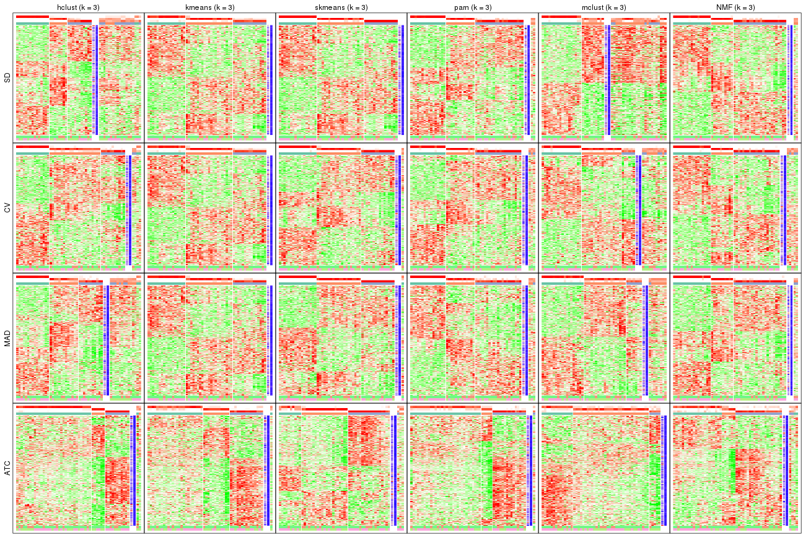
collect_plots(res_list, k = 4, fun = get_signatures, mc.cores = 4)
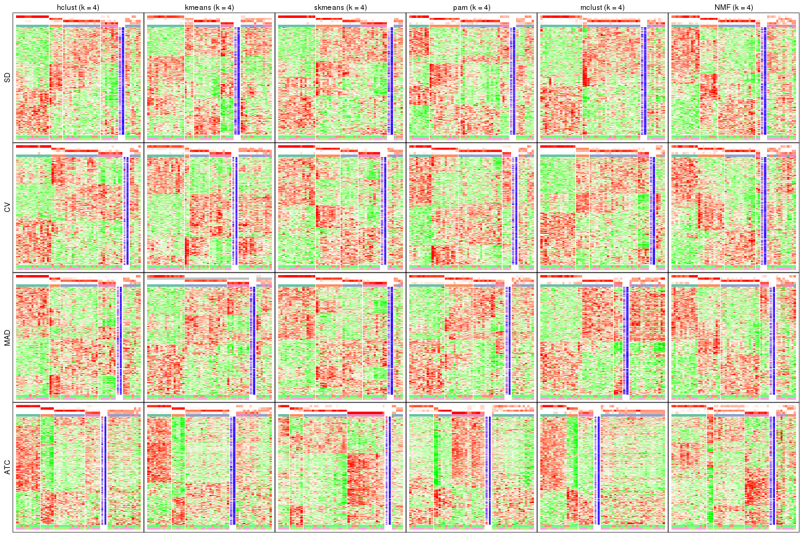
collect_plots(res_list, k = 5, fun = get_signatures, mc.cores = 4)
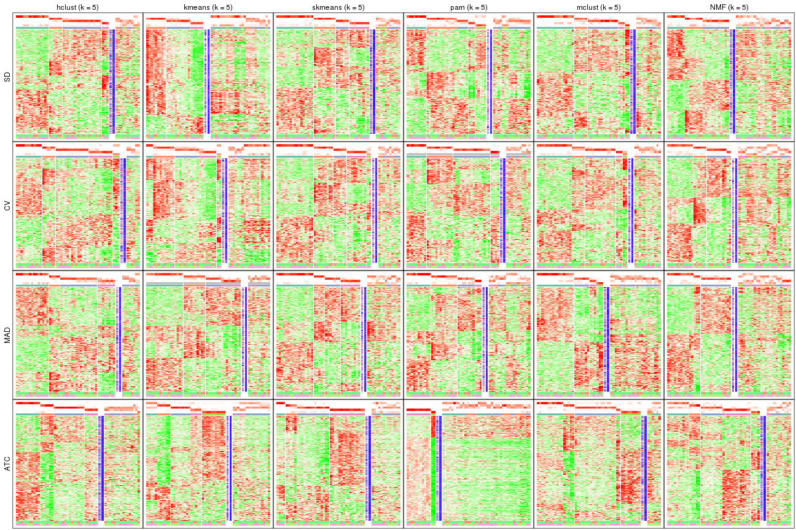
collect_plots(res_list, k = 6, fun = get_signatures, mc.cores = 4)
The statistics used for measuring the stability of consensus partitioning. (How are they defined?)
get_stats(res_list, k = 2)
#> k 1-PAC mean_silhouette concordance area_increased Rand Jaccard
#> SD:NMF 2 0.996 0.927 0.971 0.483 0.521 0.521
#> CV:NMF 2 0.960 0.952 0.980 0.476 0.531 0.531
#> MAD:NMF 2 1.000 0.956 0.983 0.483 0.521 0.521
#> ATC:NMF 2 0.424 0.821 0.876 0.347 0.688 0.688
#> SD:skmeans 2 1.000 0.971 0.990 0.484 0.512 0.512
#> CV:skmeans 2 1.000 0.983 0.993 0.485 0.512 0.512
#> MAD:skmeans 2 1.000 0.984 0.993 0.489 0.512 0.512
#> ATC:skmeans 2 1.000 1.000 1.000 0.488 0.512 0.512
#> SD:mclust 2 1.000 0.978 0.981 0.461 0.531 0.531
#> CV:mclust 2 1.000 0.976 0.988 0.460 0.543 0.543
#> MAD:mclust 2 1.000 0.990 0.994 0.471 0.531 0.531
#> ATC:mclust 2 0.305 0.661 0.770 0.369 0.492 0.492
#> SD:kmeans 2 0.741 0.951 0.970 0.474 0.531 0.531
#> CV:kmeans 2 0.948 0.958 0.975 0.472 0.531 0.531
#> MAD:kmeans 2 1.000 0.995 0.997 0.470 0.531 0.531
#> ATC:kmeans 2 1.000 0.993 0.997 0.442 0.556 0.556
#> SD:pam 2 0.777 0.883 0.950 0.466 0.531 0.531
#> CV:pam 2 0.965 0.970 0.985 0.467 0.531 0.531
#> MAD:pam 2 0.813 0.915 0.961 0.460 0.556 0.556
#> ATC:pam 2 1.000 0.964 0.986 0.418 0.570 0.570
#> SD:hclust 2 0.184 0.616 0.783 0.462 0.491 0.491
#> CV:hclust 2 0.225 0.712 0.820 0.483 0.492 0.492
#> MAD:hclust 2 0.191 0.495 0.764 0.488 0.499 0.499
#> ATC:hclust 2 0.402 0.736 0.799 0.311 0.665 0.665
get_stats(res_list, k = 3)
#> k 1-PAC mean_silhouette concordance area_increased Rand Jaccard
#> SD:NMF 3 0.835 0.861 0.942 0.353 0.787 0.605
#> CV:NMF 3 0.805 0.826 0.929 0.382 0.787 0.609
#> MAD:NMF 3 0.835 0.919 0.957 0.342 0.816 0.656
#> ATC:NMF 3 0.372 0.689 0.836 0.700 0.591 0.451
#> SD:skmeans 3 0.926 0.958 0.975 0.391 0.716 0.495
#> CV:skmeans 3 0.911 0.930 0.966 0.392 0.716 0.495
#> MAD:skmeans 3 0.999 0.966 0.982 0.381 0.740 0.526
#> ATC:skmeans 3 0.771 0.822 0.906 0.289 0.810 0.640
#> SD:mclust 3 0.626 0.590 0.809 0.368 0.845 0.710
#> CV:mclust 3 0.645 0.662 0.857 0.387 0.808 0.647
#> MAD:mclust 3 0.637 0.730 0.845 0.321 0.849 0.716
#> ATC:mclust 3 0.343 0.763 0.787 0.467 0.745 0.584
#> SD:kmeans 3 0.651 0.893 0.911 0.380 0.741 0.536
#> CV:kmeans 3 0.793 0.916 0.927 0.396 0.741 0.536
#> MAD:kmeans 3 0.793 0.904 0.938 0.411 0.741 0.536
#> ATC:kmeans 3 0.574 0.828 0.823 0.436 0.734 0.550
#> SD:pam 3 0.874 0.888 0.948 0.434 0.747 0.547
#> CV:pam 3 0.824 0.865 0.943 0.425 0.758 0.563
#> MAD:pam 3 0.660 0.819 0.912 0.455 0.745 0.553
#> ATC:pam 3 0.564 0.802 0.869 0.403 0.884 0.796
#> SD:hclust 3 0.488 0.592 0.804 0.326 0.776 0.579
#> CV:hclust 3 0.594 0.802 0.889 0.326 0.815 0.636
#> MAD:hclust 3 0.541 0.587 0.777 0.262 0.697 0.461
#> ATC:hclust 3 0.826 0.914 0.959 0.706 0.822 0.733
get_stats(res_list, k = 4)
#> k 1-PAC mean_silhouette concordance area_increased Rand Jaccard
#> SD:NMF 4 0.570 0.616 0.793 0.1263 0.837 0.573
#> CV:NMF 4 0.581 0.620 0.791 0.1261 0.795 0.489
#> MAD:NMF 4 0.622 0.683 0.828 0.1333 0.824 0.560
#> ATC:NMF 4 0.380 0.648 0.757 0.1603 0.734 0.423
#> SD:skmeans 4 0.810 0.806 0.898 0.1185 0.876 0.642
#> CV:skmeans 4 0.744 0.773 0.886 0.1162 0.864 0.614
#> MAD:skmeans 4 0.820 0.827 0.904 0.1155 0.866 0.618
#> ATC:skmeans 4 0.727 0.749 0.892 0.1218 0.802 0.540
#> SD:mclust 4 0.613 0.668 0.816 0.0746 0.848 0.665
#> CV:mclust 4 0.661 0.757 0.818 0.0795 0.759 0.458
#> MAD:mclust 4 0.622 0.555 0.785 0.1191 0.896 0.746
#> ATC:mclust 4 0.464 0.329 0.699 0.2814 0.837 0.660
#> SD:kmeans 4 0.619 0.598 0.745 0.1064 0.968 0.902
#> CV:kmeans 4 0.613 0.566 0.762 0.1068 0.896 0.715
#> MAD:kmeans 4 0.645 0.686 0.760 0.0974 0.975 0.926
#> ATC:kmeans 4 0.624 0.591 0.772 0.1242 0.806 0.553
#> SD:pam 4 0.571 0.630 0.786 0.0956 0.965 0.895
#> CV:pam 4 0.751 0.760 0.866 0.0803 0.960 0.881
#> MAD:pam 4 0.596 0.670 0.794 0.1054 0.938 0.814
#> ATC:pam 4 0.514 0.513 0.755 0.2041 0.795 0.574
#> SD:hclust 4 0.597 0.657 0.833 0.1498 0.811 0.547
#> CV:hclust 4 0.681 0.772 0.879 0.1140 0.885 0.685
#> MAD:hclust 4 0.636 0.664 0.803 0.1454 0.806 0.523
#> ATC:hclust 4 0.652 0.600 0.838 0.3317 0.819 0.627
get_stats(res_list, k = 5)
#> k 1-PAC mean_silhouette concordance area_increased Rand Jaccard
#> SD:NMF 5 0.569 0.453 0.692 0.0743 0.911 0.692
#> CV:NMF 5 0.558 0.424 0.698 0.0743 0.906 0.668
#> MAD:NMF 5 0.561 0.465 0.696 0.0767 0.926 0.733
#> ATC:NMF 5 0.447 0.569 0.743 0.1006 0.852 0.533
#> SD:skmeans 5 0.717 0.679 0.816 0.0519 0.966 0.861
#> CV:skmeans 5 0.691 0.630 0.797 0.0517 0.984 0.934
#> MAD:skmeans 5 0.718 0.669 0.811 0.0529 0.965 0.859
#> ATC:skmeans 5 0.671 0.619 0.812 0.0538 0.996 0.986
#> SD:mclust 5 0.585 0.618 0.767 0.0978 0.847 0.614
#> CV:mclust 5 0.592 0.647 0.773 0.0799 0.956 0.855
#> MAD:mclust 5 0.559 0.512 0.710 0.0706 0.848 0.611
#> ATC:mclust 5 0.624 0.680 0.807 0.0745 0.790 0.465
#> SD:kmeans 5 0.610 0.459 0.724 0.0707 0.796 0.447
#> CV:kmeans 5 0.596 0.453 0.722 0.0680 0.835 0.523
#> MAD:kmeans 5 0.637 0.626 0.745 0.0676 0.851 0.592
#> ATC:kmeans 5 0.619 0.532 0.730 0.0753 0.822 0.516
#> SD:pam 5 0.586 0.562 0.731 0.0730 0.880 0.626
#> CV:pam 5 0.649 0.632 0.776 0.0827 0.931 0.788
#> MAD:pam 5 0.620 0.486 0.728 0.0637 0.917 0.706
#> ATC:pam 5 0.651 0.396 0.716 0.0907 0.759 0.369
#> SD:hclust 5 0.581 0.658 0.777 0.0509 0.925 0.759
#> CV:hclust 5 0.646 0.712 0.821 0.0559 0.970 0.889
#> MAD:hclust 5 0.599 0.614 0.748 0.0610 0.941 0.818
#> ATC:hclust 5 0.655 0.581 0.792 0.0308 0.983 0.943
get_stats(res_list, k = 6)
#> k 1-PAC mean_silhouette concordance area_increased Rand Jaccard
#> SD:NMF 6 0.632 0.540 0.746 0.0480 0.819 0.367
#> CV:NMF 6 0.622 0.505 0.741 0.0431 0.837 0.391
#> MAD:NMF 6 0.619 0.530 0.728 0.0424 0.856 0.463
#> ATC:NMF 6 0.562 0.437 0.688 0.0518 0.863 0.523
#> SD:skmeans 6 0.689 0.486 0.738 0.0395 0.988 0.946
#> CV:skmeans 6 0.696 0.515 0.736 0.0387 0.970 0.868
#> MAD:skmeans 6 0.687 0.552 0.714 0.0377 0.961 0.830
#> ATC:skmeans 6 0.658 0.505 0.747 0.0432 0.959 0.868
#> SD:mclust 6 0.589 0.524 0.673 0.0612 0.923 0.720
#> CV:mclust 6 0.616 0.686 0.740 0.0659 0.929 0.741
#> MAD:mclust 6 0.621 0.553 0.738 0.0575 0.856 0.545
#> ATC:mclust 6 0.612 0.482 0.721 0.0696 0.909 0.673
#> SD:kmeans 6 0.649 0.539 0.721 0.0459 0.890 0.595
#> CV:kmeans 6 0.640 0.476 0.696 0.0439 0.907 0.646
#> MAD:kmeans 6 0.645 0.521 0.681 0.0444 0.874 0.559
#> ATC:kmeans 6 0.658 0.544 0.709 0.0464 0.961 0.844
#> SD:pam 6 0.664 0.492 0.746 0.0619 0.870 0.503
#> CV:pam 6 0.663 0.536 0.757 0.0565 0.813 0.419
#> MAD:pam 6 0.666 0.540 0.715 0.0541 0.869 0.480
#> ATC:pam 6 0.642 0.567 0.772 0.0389 0.883 0.565
#> SD:hclust 6 0.600 0.481 0.720 0.0650 0.990 0.959
#> CV:hclust 6 0.666 0.539 0.773 0.0503 0.987 0.946
#> MAD:hclust 6 0.619 0.435 0.700 0.0672 0.851 0.533
#> ATC:hclust 6 0.682 0.466 0.745 0.0428 0.841 0.539
Following heatmap plots the partition for each combination of methods and the lightness correspond to the silhouette scores for samples in each method. On top the consensus subgroup is inferred from all methods by taking the mean silhouette scores as weight.
collect_stats(res_list, k = 2)
collect_stats(res_list, k = 3)
collect_stats(res_list, k = 4)
collect_stats(res_list, k = 5)
collect_stats(res_list, k = 6)
Collect partitions from all methods:
collect_classes(res_list, k = 2)
collect_classes(res_list, k = 3)
collect_classes(res_list, k = 4)
collect_classes(res_list, k = 5)
collect_classes(res_list, k = 6)
Overlap of top rows from different top-row methods:
top_rows_overlap(res_list, top_n = 1000, method = "euler")
top_rows_overlap(res_list, top_n = 2000, method = "euler")
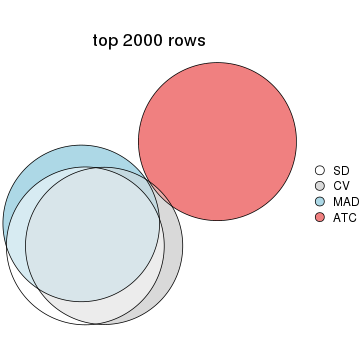
top_rows_overlap(res_list, top_n = 3000, method = "euler")
top_rows_overlap(res_list, top_n = 4000, method = "euler")
top_rows_overlap(res_list, top_n = 5000, method = "euler")

Also visualize the correspondance of rankings between different top-row methods:
top_rows_overlap(res_list, top_n = 1000, method = "correspondance")
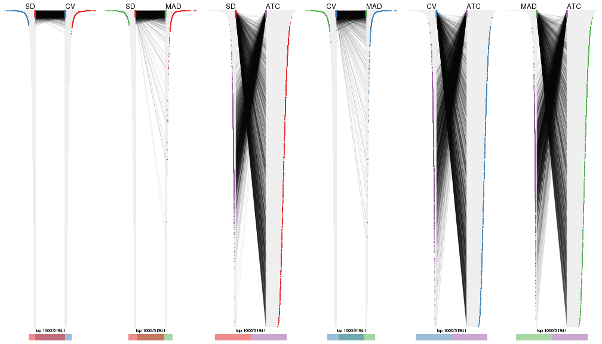
top_rows_overlap(res_list, top_n = 2000, method = "correspondance")
top_rows_overlap(res_list, top_n = 3000, method = "correspondance")
top_rows_overlap(res_list, top_n = 4000, method = "correspondance")
top_rows_overlap(res_list, top_n = 5000, method = "correspondance")
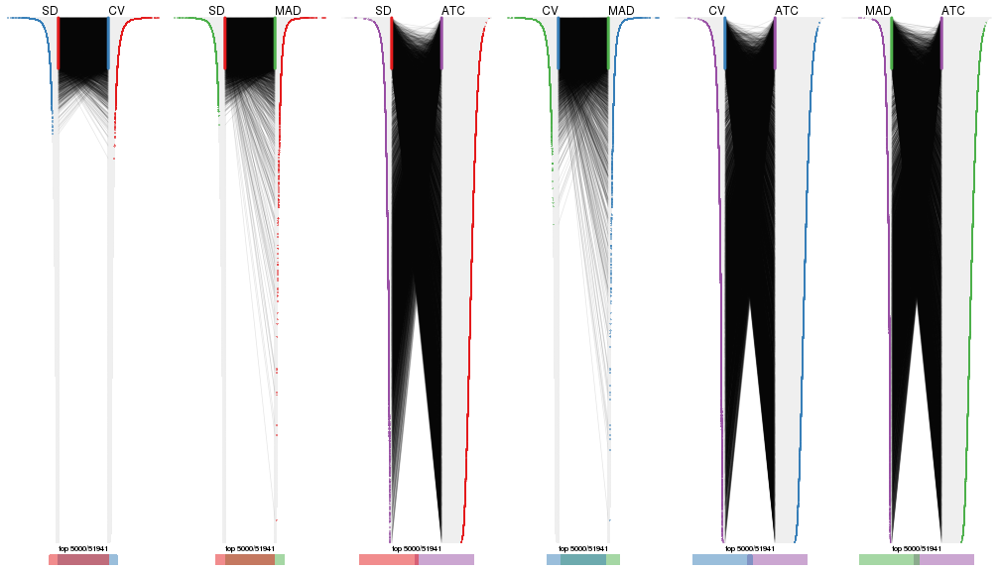
Heatmaps of the top rows:
top_rows_heatmap(res_list, top_n = 1000)
top_rows_heatmap(res_list, top_n = 2000)
top_rows_heatmap(res_list, top_n = 3000)
top_rows_heatmap(res_list, top_n = 4000)
top_rows_heatmap(res_list, top_n = 5000)
Test correlation between subgroups and known annotations. If the known annotation is numeric, one-way ANOVA test is applied, and if the known annotation is discrete, chi-squared contingency table test is applied.
test_to_known_factors(res_list, k = 2)
#> n disease.state(p) other(p) k
#> SD:NMF 50 0.3388 0.0348 2
#> CV:NMF 52 0.4058 0.0362 2
#> MAD:NMF 52 0.3234 0.0189 2
#> ATC:NMF 51 0.1613 0.3520 2
#> SD:skmeans 52 0.3234 0.0189 2
#> CV:skmeans 53 0.2812 0.0132 2
#> MAD:skmeans 53 0.2812 0.0132 2
#> ATC:skmeans 53 0.8198 0.4291 2
#> SD:mclust 53 0.4398 0.0470 2
#> CV:mclust 53 0.5373 0.0823 2
#> MAD:mclust 53 0.4398 0.0470 2
#> ATC:mclust 48 0.7240 0.3848 2
#> SD:kmeans 53 0.4398 0.0470 2
#> CV:kmeans 53 0.4398 0.0470 2
#> MAD:kmeans 53 0.4398 0.0470 2
#> ATC:kmeans 53 0.8213 0.3706 2
#> SD:pam 51 0.4644 0.0514 2
#> CV:pam 53 0.4398 0.0470 2
#> MAD:pam 51 0.2935 0.0373 2
#> ATC:pam 52 0.5960 0.3822 2
#> SD:hclust 46 0.7370 0.3759 2
#> CV:hclust 50 0.0947 0.0256 2
#> MAD:hclust 32 0.3065 0.0335 2
#> ATC:hclust 44 1.0000 0.3796 2
test_to_known_factors(res_list, k = 3)
#> n disease.state(p) other(p) k
#> SD:NMF 51 0.3745 0.058585 3
#> CV:NMF 48 0.3944 0.103666 3
#> MAD:NMF 51 0.4600 0.036015 3
#> ATC:NMF 49 0.0543 0.005924 3
#> SD:skmeans 53 0.1533 0.029936 3
#> CV:skmeans 52 0.2337 0.041558 3
#> MAD:skmeans 52 0.1232 0.018627 3
#> ATC:skmeans 50 0.5038 0.033828 3
#> SD:mclust 29 0.6167 0.018967 3
#> CV:mclust 42 0.6858 0.128691 3
#> MAD:mclust 45 0.2537 0.000882 3
#> ATC:mclust 53 0.5255 0.039472 3
#> SD:kmeans 53 0.1533 0.029936 3
#> CV:kmeans 53 0.1533 0.029936 3
#> MAD:kmeans 53 0.1533 0.029936 3
#> ATC:kmeans 52 0.6025 0.266966 3
#> SD:pam 51 0.1090 0.098087 3
#> CV:pam 50 0.1158 0.121696 3
#> MAD:pam 50 0.1158 0.121696 3
#> ATC:pam 52 0.3292 0.456518 3
#> SD:hclust 34 0.4025 0.072146 3
#> CV:hclust 49 0.2775 0.048453 3
#> MAD:hclust 39 0.2613 0.332518 3
#> ATC:hclust 51 0.3508 0.273657 3
test_to_known_factors(res_list, k = 4)
#> n disease.state(p) other(p) k
#> SD:NMF 40 0.4514 0.018455 4
#> CV:NMF 40 0.3857 0.104377 4
#> MAD:NMF 44 0.3434 0.011638 4
#> ATC:NMF 44 0.3135 0.000927 4
#> SD:skmeans 49 0.2095 0.003817 4
#> CV:skmeans 46 0.2256 0.002929 4
#> MAD:skmeans 49 0.1351 0.001902 4
#> ATC:skmeans 48 0.0421 0.006660 4
#> SD:mclust 45 0.2361 0.006383 4
#> CV:mclust 49 0.5337 0.017842 4
#> MAD:mclust 37 0.5896 0.026094 4
#> ATC:mclust 24 0.2253 0.039239 4
#> SD:kmeans 39 0.2947 0.122320 4
#> CV:kmeans 38 0.1334 0.066555 4
#> MAD:kmeans 46 0.1135 0.024087 4
#> ATC:kmeans 37 0.3684 0.285141 4
#> SD:pam 45 0.2162 0.126270 4
#> CV:pam 46 0.4125 0.058583 4
#> MAD:pam 43 0.0567 0.036583 4
#> ATC:pam 34 0.6557 0.062640 4
#> SD:hclust 46 0.2072 0.068477 4
#> CV:hclust 48 0.2445 0.143532 4
#> MAD:hclust 45 0.1287 0.038874 4
#> ATC:hclust 38 0.4228 0.152581 4
test_to_known_factors(res_list, k = 5)
#> n disease.state(p) other(p) k
#> SD:NMF 28 0.4823 0.00108 5
#> CV:NMF 29 0.2813 0.01125 5
#> MAD:NMF 30 0.4377 0.00370 5
#> ATC:NMF 42 0.2104 0.14613 5
#> SD:skmeans 42 0.2545 0.00776 5
#> CV:skmeans 43 0.4832 0.00618 5
#> MAD:skmeans 38 0.3067 0.00230 5
#> ATC:skmeans 40 0.0984 0.01410 5
#> SD:mclust 42 0.3489 0.01546 5
#> CV:mclust 41 0.3875 0.00223 5
#> MAD:mclust 30 0.0777 0.04344 5
#> ATC:mclust 47 0.9605 0.00154 5
#> SD:kmeans 26 0.6874 0.02850 5
#> CV:kmeans 34 0.3932 0.11998 5
#> MAD:kmeans 43 0.2705 0.00655 5
#> ATC:kmeans 36 0.5528 0.02843 5
#> SD:pam 36 0.0750 0.03973 5
#> CV:pam 42 0.6893 0.19162 5
#> MAD:pam 34 0.1477 0.03408 5
#> ATC:pam 13 1.0000 0.24823 5
#> SD:hclust 42 0.2914 0.16661 5
#> CV:hclust 47 0.3788 0.20264 5
#> MAD:hclust 45 0.1287 0.03887 5
#> ATC:hclust 37 0.3679 0.08776 5
test_to_known_factors(res_list, k = 6)
#> n disease.state(p) other(p) k
#> SD:NMF 35 0.1322 0.01278 6
#> CV:NMF 34 0.5330 0.00399 6
#> MAD:NMF 34 0.0775 0.01439 6
#> ATC:NMF 27 0.3685 0.11302 6
#> SD:skmeans 34 0.5450 0.01072 6
#> CV:skmeans 38 0.6586 0.00484 6
#> MAD:skmeans 35 0.0538 0.00150 6
#> ATC:skmeans 31 0.8679 0.06055 6
#> SD:mclust 35 0.1738 0.02358 6
#> CV:mclust 44 0.2928 0.00133 6
#> MAD:mclust 34 0.1726 0.12463 6
#> ATC:mclust 27 0.8796 0.00114 6
#> SD:kmeans 34 0.5405 0.06133 6
#> CV:kmeans 27 0.5750 0.02363 6
#> MAD:kmeans 38 0.3079 0.01913 6
#> ATC:kmeans 38 0.5931 0.03514 6
#> SD:pam 28 0.1502 0.06214 6
#> CV:pam 33 0.6815 0.07389 6
#> MAD:pam 31 0.2178 0.17430 6
#> ATC:pam 32 0.6265 0.14358 6
#> SD:hclust 30 0.8787 0.45416 6
#> CV:hclust 38 0.3942 0.22443 6
#> MAD:hclust 28 0.3449 0.27389 6
#> ATC:hclust 28 0.3861 0.09013 6
The object with results only for a single top-value method and a single partition method can be extracted as:
res = res_list["SD", "hclust"]
# you can also extract it by
# res = res_list["SD:hclust"]
A summary of res and all the functions that can be applied to it:
res
#> A 'ConsensusPartition' object with k = 2, 3, 4, 5, 6.
#> On a matrix with 51941 rows and 53 columns.
#> Top rows (1000, 2000, 3000, 4000, 5000) are extracted by 'SD' method.
#> Subgroups are detected by 'hclust' method.
#> Performed in total 1250 partitions by row resampling.
#> Best k for subgroups seems to be 4.
#>
#> Following methods can be applied to this 'ConsensusPartition' object:
#> [1] "cola_report" "collect_classes" "collect_plots"
#> [4] "collect_stats" "colnames" "compare_signatures"
#> [7] "consensus_heatmap" "dimension_reduction" "functional_enrichment"
#> [10] "get_anno_col" "get_anno" "get_classes"
#> [13] "get_consensus" "get_matrix" "get_membership"
#> [16] "get_param" "get_signatures" "get_stats"
#> [19] "is_best_k" "is_stable_k" "membership_heatmap"
#> [22] "ncol" "nrow" "plot_ecdf"
#> [25] "rownames" "select_partition_number" "show"
#> [28] "suggest_best_k" "test_to_known_factors"
collect_plots() function collects all the plots made from res for all k (number of partitions)
into one single page to provide an easy and fast comparison between different k.
collect_plots(res)
The plots are:
k and the heatmap of
predicted classes for each k.k.k.k.All the plots in panels can be made by individual functions and they are plotted later in this section.
select_partition_number() produces several plots showing different
statistics for choosing “optimized” k. There are following statistics:
k;k, the area increased is defined as \(A_k - A_{k-1}\).The detailed explanations of these statistics can be found in the cola vignette.
Generally speaking, lower PAC score, higher mean silhouette score or higher
concordance corresponds to better partition. Rand index and Jaccard index
measure how similar the current partition is compared to partition with k-1.
If they are too similar, we won't accept k is better than k-1.
select_partition_number(res)
The numeric values for all these statistics can be obtained by get_stats().
get_stats(res)
#> k 1-PAC mean_silhouette concordance area_increased Rand Jaccard
#> 2 2 0.184 0.616 0.783 0.4620 0.491 0.491
#> 3 3 0.488 0.592 0.804 0.3259 0.776 0.579
#> 4 4 0.597 0.657 0.833 0.1498 0.811 0.547
#> 5 5 0.581 0.658 0.777 0.0509 0.925 0.759
#> 6 6 0.600 0.481 0.720 0.0650 0.990 0.959
suggest_best_k() suggests the best \(k\) based on these statistics. The rules are as follows:
suggest_best_k(res)
#> [1] 4
Following shows the table of the partitions (You need to click the show/hide
code output link to see it). The membership matrix (columns with name p*)
is inferred by
clue::cl_consensus()
function with the SE method. Basically the value in the membership matrix
represents the probability to belong to a certain group. The finall class
label for an item is determined with the group with highest probability it
belongs to.
In get_classes() function, the entropy is calculated from the membership
matrix and the silhouette score is calculated from the consensus matrix.
cbind(get_classes(res, k = 2), get_membership(res, k = 2))
#> class entropy silhouette p1 p2
#> GSM452149 2 0.7602 0.694 0.220 0.780
#> GSM452150 2 0.6801 0.688 0.180 0.820
#> GSM452152 2 0.8555 0.622 0.280 0.720
#> GSM452154 2 0.7056 0.690 0.192 0.808
#> GSM452160 2 0.6801 0.687 0.180 0.820
#> GSM452167 2 0.8207 0.649 0.256 0.744
#> GSM452182 1 0.0938 0.792 0.988 0.012
#> GSM452185 1 1.0000 -0.363 0.500 0.500
#> GSM452186 1 0.7883 0.628 0.764 0.236
#> GSM452187 2 0.8016 0.682 0.244 0.756
#> GSM452189 1 0.0376 0.794 0.996 0.004
#> GSM452195 2 0.9491 0.502 0.368 0.632
#> GSM452196 1 0.8909 0.530 0.692 0.308
#> GSM452197 1 0.0672 0.794 0.992 0.008
#> GSM452198 2 0.7950 0.657 0.240 0.760
#> GSM452199 1 0.8909 0.530 0.692 0.308
#> GSM452148 1 0.7815 0.631 0.768 0.232
#> GSM452151 2 0.9963 0.281 0.464 0.536
#> GSM452153 1 0.8813 0.281 0.700 0.300
#> GSM452155 2 0.8909 0.598 0.308 0.692
#> GSM452156 2 0.8661 0.614 0.288 0.712
#> GSM452157 1 0.0938 0.792 0.988 0.012
#> GSM452158 2 0.9850 0.348 0.428 0.572
#> GSM452162 2 0.9044 0.577 0.320 0.680
#> GSM452163 1 0.0672 0.792 0.992 0.008
#> GSM452166 2 0.7815 0.581 0.232 0.768
#> GSM452168 1 0.0938 0.792 0.988 0.012
#> GSM452169 1 0.0376 0.794 0.996 0.004
#> GSM452170 2 0.7815 0.581 0.232 0.768
#> GSM452172 2 0.7815 0.581 0.232 0.768
#> GSM452173 1 0.0672 0.794 0.992 0.008
#> GSM452174 1 0.0672 0.794 0.992 0.008
#> GSM452176 2 0.7815 0.581 0.232 0.768
#> GSM452179 1 0.0376 0.794 0.996 0.004
#> GSM452180 1 0.0376 0.794 0.996 0.004
#> GSM452181 1 0.8144 0.612 0.748 0.252
#> GSM452183 1 0.0672 0.794 0.992 0.008
#> GSM452184 1 0.8955 0.231 0.688 0.312
#> GSM452188 1 0.0938 0.792 0.988 0.012
#> GSM452193 2 1.0000 0.312 0.500 0.500
#> GSM452165 1 0.7883 0.628 0.764 0.236
#> GSM452171 2 0.8661 0.620 0.288 0.712
#> GSM452175 1 0.0376 0.794 0.996 0.004
#> GSM452177 2 0.7056 0.690 0.192 0.808
#> GSM452190 1 0.7815 0.631 0.768 0.232
#> GSM452191 1 0.8081 0.622 0.752 0.248
#> GSM452192 2 0.5842 0.680 0.140 0.860
#> GSM452194 2 0.8081 0.682 0.248 0.752
#> GSM452200 2 0.7815 0.581 0.232 0.768
#> GSM452159 1 0.0672 0.794 0.992 0.008
#> GSM452161 2 0.9850 0.348 0.428 0.572
#> GSM452164 2 0.8909 0.593 0.308 0.692
#> GSM452178 2 0.8608 0.644 0.284 0.716
cbind(get_classes(res, k = 3), get_membership(res, k = 3))
#> class entropy silhouette p1 p2 p3
#> GSM452149 3 0.6148 0.534 0.004 0.356 0.640
#> GSM452150 3 0.6330 0.488 0.004 0.396 0.600
#> GSM452152 3 0.2878 0.606 0.000 0.096 0.904
#> GSM452154 3 0.6314 0.497 0.004 0.392 0.604
#> GSM452160 3 0.6126 0.482 0.000 0.400 0.600
#> GSM452167 3 0.7647 0.352 0.044 0.440 0.516
#> GSM452182 1 0.0661 0.930 0.988 0.004 0.008
#> GSM452185 3 0.7107 0.454 0.196 0.092 0.712
#> GSM452186 2 0.1643 0.699 0.044 0.956 0.000
#> GSM452187 3 0.5016 0.603 0.000 0.240 0.760
#> GSM452189 1 0.0424 0.932 0.992 0.008 0.000
#> GSM452195 2 0.8595 -0.102 0.100 0.496 0.404
#> GSM452196 2 0.5004 0.662 0.088 0.840 0.072
#> GSM452197 1 0.0661 0.932 0.988 0.008 0.004
#> GSM452198 3 0.4351 0.609 0.004 0.168 0.828
#> GSM452199 2 0.5004 0.662 0.088 0.840 0.072
#> GSM452148 2 0.1753 0.697 0.048 0.952 0.000
#> GSM452151 3 0.5397 0.365 0.280 0.000 0.720
#> GSM452153 1 0.6373 0.329 0.588 0.004 0.408
#> GSM452155 3 0.8633 0.214 0.100 0.436 0.464
#> GSM452156 3 0.8515 0.240 0.092 0.432 0.476
#> GSM452157 1 0.0237 0.928 0.996 0.000 0.004
#> GSM452158 2 0.8408 0.155 0.100 0.556 0.344
#> GSM452162 2 0.8523 -0.239 0.092 0.464 0.444
#> GSM452163 1 0.0000 0.929 1.000 0.000 0.000
#> GSM452166 3 0.0000 0.580 0.000 0.000 1.000
#> GSM452168 1 0.0661 0.930 0.988 0.004 0.008
#> GSM452169 1 0.0237 0.931 0.996 0.004 0.000
#> GSM452170 3 0.0000 0.580 0.000 0.000 1.000
#> GSM452172 3 0.0000 0.580 0.000 0.000 1.000
#> GSM452173 1 0.0661 0.932 0.988 0.008 0.004
#> GSM452174 1 0.0424 0.931 0.992 0.008 0.000
#> GSM452176 3 0.0000 0.580 0.000 0.000 1.000
#> GSM452179 1 0.0237 0.931 0.996 0.004 0.000
#> GSM452180 1 0.0424 0.932 0.992 0.008 0.000
#> GSM452181 2 0.2599 0.700 0.052 0.932 0.016
#> GSM452183 1 0.0661 0.932 0.988 0.008 0.004
#> GSM452184 1 0.7610 0.184 0.536 0.044 0.420
#> GSM452188 1 0.0661 0.930 0.988 0.004 0.008
#> GSM452193 3 0.7107 0.454 0.196 0.092 0.712
#> GSM452165 2 0.1643 0.699 0.044 0.956 0.000
#> GSM452171 3 0.7674 0.264 0.044 0.472 0.484
#> GSM452175 1 0.0424 0.932 0.992 0.008 0.000
#> GSM452177 3 0.6314 0.497 0.004 0.392 0.604
#> GSM452190 2 0.0237 0.658 0.004 0.996 0.000
#> GSM452191 2 0.2492 0.695 0.048 0.936 0.016
#> GSM452192 3 0.6026 0.499 0.000 0.376 0.624
#> GSM452194 3 0.5058 0.602 0.000 0.244 0.756
#> GSM452200 3 0.0000 0.580 0.000 0.000 1.000
#> GSM452159 1 0.0661 0.932 0.988 0.008 0.004
#> GSM452161 2 0.8408 0.155 0.100 0.556 0.344
#> GSM452164 3 0.8524 0.182 0.092 0.452 0.456
#> GSM452178 3 0.3879 0.611 0.000 0.152 0.848
cbind(get_classes(res, k = 4), get_membership(res, k = 4))
#> class entropy silhouette p1 p2 p3 p4
#> GSM452149 3 0.3791 0.6715 0.000 0.004 0.796 0.200
#> GSM452150 3 0.3355 0.6997 0.000 0.004 0.836 0.160
#> GSM452152 3 0.4941 0.2032 0.000 0.000 0.564 0.436
#> GSM452154 3 0.2921 0.7047 0.000 0.000 0.860 0.140
#> GSM452160 3 0.3032 0.7041 0.000 0.008 0.868 0.124
#> GSM452167 3 0.2483 0.7226 0.000 0.032 0.916 0.052
#> GSM452182 1 0.2266 0.8521 0.912 0.004 0.084 0.000
#> GSM452185 4 0.6840 0.5004 0.108 0.000 0.372 0.520
#> GSM452186 2 0.4072 0.8263 0.000 0.748 0.252 0.000
#> GSM452187 3 0.4277 0.5557 0.000 0.000 0.720 0.280
#> GSM452189 1 0.0000 0.9075 1.000 0.000 0.000 0.000
#> GSM452195 3 0.3238 0.6832 0.008 0.092 0.880 0.020
#> GSM452196 3 0.4998 -0.3360 0.000 0.488 0.512 0.000
#> GSM452197 1 0.0188 0.9071 0.996 0.000 0.004 0.000
#> GSM452198 3 0.5147 0.0794 0.004 0.000 0.536 0.460
#> GSM452199 3 0.4998 -0.3360 0.000 0.488 0.512 0.000
#> GSM452148 2 0.2973 0.8780 0.000 0.856 0.144 0.000
#> GSM452151 4 0.6303 0.5919 0.192 0.000 0.148 0.660
#> GSM452153 1 0.7043 0.1215 0.500 0.004 0.108 0.388
#> GSM452155 3 0.1575 0.7101 0.012 0.028 0.956 0.004
#> GSM452156 3 0.1256 0.7142 0.000 0.028 0.964 0.008
#> GSM452157 1 0.0524 0.9051 0.988 0.008 0.000 0.004
#> GSM452158 3 0.3718 0.6022 0.012 0.168 0.820 0.000
#> GSM452162 3 0.1474 0.7088 0.000 0.052 0.948 0.000
#> GSM452163 1 0.0336 0.9063 0.992 0.008 0.000 0.000
#> GSM452166 4 0.4040 0.5947 0.000 0.000 0.248 0.752
#> GSM452168 1 0.2266 0.8521 0.912 0.004 0.084 0.000
#> GSM452169 1 0.0188 0.9066 0.996 0.004 0.000 0.000
#> GSM452170 4 0.4008 0.5997 0.000 0.000 0.244 0.756
#> GSM452172 4 0.0188 0.7016 0.000 0.000 0.004 0.996
#> GSM452173 1 0.0188 0.9071 0.996 0.000 0.004 0.000
#> GSM452174 1 0.0336 0.9059 0.992 0.008 0.000 0.000
#> GSM452176 4 0.0921 0.7101 0.000 0.000 0.028 0.972
#> GSM452179 1 0.0188 0.9066 0.996 0.004 0.000 0.000
#> GSM452180 1 0.0000 0.9075 1.000 0.000 0.000 0.000
#> GSM452181 2 0.4331 0.7795 0.000 0.712 0.288 0.000
#> GSM452183 1 0.0188 0.9071 0.996 0.000 0.004 0.000
#> GSM452184 1 0.7509 -0.0542 0.452 0.000 0.188 0.360
#> GSM452188 1 0.2266 0.8521 0.912 0.004 0.084 0.000
#> GSM452193 4 0.6840 0.5004 0.108 0.000 0.372 0.520
#> GSM452165 2 0.3356 0.8791 0.000 0.824 0.176 0.000
#> GSM452171 3 0.3312 0.7203 0.000 0.072 0.876 0.052
#> GSM452175 1 0.0000 0.9075 1.000 0.000 0.000 0.000
#> GSM452177 3 0.2973 0.7034 0.000 0.000 0.856 0.144
#> GSM452190 2 0.0564 0.7416 0.004 0.988 0.004 0.004
#> GSM452191 2 0.3172 0.8767 0.000 0.840 0.160 0.000
#> GSM452192 3 0.3529 0.6890 0.000 0.012 0.836 0.152
#> GSM452194 3 0.4250 0.5596 0.000 0.000 0.724 0.276
#> GSM452200 4 0.0921 0.7101 0.000 0.000 0.028 0.972
#> GSM452159 1 0.0188 0.9071 0.996 0.000 0.004 0.000
#> GSM452161 3 0.3718 0.6022 0.012 0.168 0.820 0.000
#> GSM452164 3 0.1211 0.7116 0.000 0.040 0.960 0.000
#> GSM452178 3 0.4855 0.3259 0.000 0.000 0.600 0.400
cbind(get_classes(res, k = 5), get_membership(res, k = 5))
#> class entropy silhouette p1 p2 p3 p4 p5
#> GSM452149 3 0.2700 0.752 0.000 0.004 0.884 0.024 0.088
#> GSM452150 3 0.2005 0.770 0.000 0.004 0.924 0.016 0.056
#> GSM452152 3 0.5322 0.398 0.000 0.000 0.660 0.228 0.112
#> GSM452154 3 0.1444 0.773 0.000 0.000 0.948 0.012 0.040
#> GSM452160 3 0.1281 0.770 0.000 0.012 0.956 0.032 0.000
#> GSM452167 3 0.2308 0.775 0.000 0.036 0.912 0.004 0.048
#> GSM452182 1 0.4644 0.658 0.680 0.040 0.000 0.000 0.280
#> GSM452185 5 0.7511 0.406 0.004 0.044 0.276 0.224 0.452
#> GSM452186 2 0.3074 0.750 0.000 0.804 0.196 0.000 0.000
#> GSM452187 3 0.3754 0.668 0.000 0.000 0.816 0.100 0.084
#> GSM452189 1 0.0000 0.843 1.000 0.000 0.000 0.000 0.000
#> GSM452195 3 0.4295 0.700 0.000 0.132 0.780 0.004 0.084
#> GSM452196 2 0.5449 0.429 0.000 0.532 0.412 0.004 0.052
#> GSM452197 1 0.0162 0.843 0.996 0.000 0.000 0.000 0.004
#> GSM452198 3 0.5843 0.334 0.004 0.000 0.624 0.168 0.204
#> GSM452199 2 0.5449 0.429 0.000 0.532 0.412 0.004 0.052
#> GSM452148 2 0.1851 0.737 0.000 0.912 0.088 0.000 0.000
#> GSM452151 5 0.7588 0.255 0.076 0.044 0.060 0.340 0.480
#> GSM452153 5 0.5660 0.460 0.312 0.044 0.004 0.024 0.616
#> GSM452155 3 0.3559 0.747 0.004 0.072 0.848 0.008 0.068
#> GSM452156 3 0.3184 0.757 0.000 0.068 0.868 0.012 0.052
#> GSM452157 1 0.2127 0.786 0.892 0.000 0.000 0.000 0.108
#> GSM452158 3 0.4956 0.587 0.004 0.212 0.712 0.004 0.068
#> GSM452162 3 0.3427 0.737 0.000 0.096 0.844 0.004 0.056
#> GSM452163 1 0.3837 0.729 0.692 0.000 0.000 0.000 0.308
#> GSM452166 4 0.5862 0.332 0.000 0.000 0.344 0.544 0.112
#> GSM452168 1 0.4644 0.658 0.680 0.040 0.000 0.000 0.280
#> GSM452169 1 0.2852 0.802 0.828 0.000 0.000 0.000 0.172
#> GSM452170 4 0.5639 0.384 0.000 0.000 0.340 0.568 0.092
#> GSM452172 4 0.2629 0.518 0.000 0.000 0.004 0.860 0.136
#> GSM452173 1 0.0162 0.843 0.996 0.000 0.000 0.000 0.004
#> GSM452174 1 0.3741 0.752 0.732 0.004 0.000 0.000 0.264
#> GSM452176 4 0.0510 0.604 0.000 0.000 0.016 0.984 0.000
#> GSM452179 1 0.3586 0.755 0.736 0.000 0.000 0.000 0.264
#> GSM452180 1 0.0162 0.843 0.996 0.000 0.000 0.000 0.004
#> GSM452181 2 0.3582 0.734 0.000 0.768 0.224 0.000 0.008
#> GSM452183 1 0.0162 0.843 0.996 0.000 0.000 0.000 0.004
#> GSM452184 5 0.7076 0.500 0.324 0.044 0.084 0.024 0.524
#> GSM452188 1 0.4644 0.658 0.680 0.040 0.000 0.000 0.280
#> GSM452193 5 0.7511 0.406 0.004 0.044 0.276 0.224 0.452
#> GSM452165 2 0.2280 0.752 0.000 0.880 0.120 0.000 0.000
#> GSM452171 3 0.3002 0.761 0.000 0.076 0.872 0.004 0.048
#> GSM452175 1 0.0609 0.842 0.980 0.000 0.000 0.000 0.020
#> GSM452177 3 0.1549 0.773 0.000 0.000 0.944 0.016 0.040
#> GSM452190 2 0.1942 0.565 0.000 0.920 0.000 0.012 0.068
#> GSM452191 2 0.2179 0.734 0.000 0.896 0.100 0.000 0.004
#> GSM452192 3 0.2302 0.757 0.000 0.020 0.916 0.048 0.016
#> GSM452194 3 0.3697 0.670 0.000 0.000 0.820 0.100 0.080
#> GSM452200 4 0.0510 0.604 0.000 0.000 0.016 0.984 0.000
#> GSM452159 1 0.0162 0.843 0.996 0.000 0.000 0.000 0.004
#> GSM452161 3 0.4956 0.587 0.004 0.212 0.712 0.004 0.068
#> GSM452164 3 0.3191 0.746 0.000 0.084 0.860 0.004 0.052
#> GSM452178 3 0.5104 0.504 0.000 0.000 0.692 0.192 0.116
cbind(get_classes(res, k = 6), get_membership(res, k = 6))
#> class entropy silhouette p1 p2 p3 p4 p5 p6
#> GSM452149 3 0.3343 0.591 0.000 0.024 0.796 0.000 0.004 0.176
#> GSM452150 3 0.2932 0.616 0.000 0.024 0.840 0.000 0.004 0.132
#> GSM452152 3 0.5505 0.268 0.000 0.000 0.628 0.148 0.024 0.200
#> GSM452154 3 0.2398 0.631 0.000 0.020 0.876 0.000 0.000 0.104
#> GSM452160 3 0.2849 0.602 0.000 0.020 0.872 0.008 0.016 0.084
#> GSM452167 3 0.3585 0.628 0.000 0.052 0.812 0.004 0.124 0.008
#> GSM452182 1 0.4915 0.384 0.656 0.000 0.000 0.000 0.156 0.188
#> GSM452185 6 0.4999 0.478 0.004 0.020 0.172 0.108 0.000 0.696
#> GSM452186 2 0.2726 0.774 0.000 0.848 0.136 0.000 0.008 0.008
#> GSM452187 3 0.3715 0.527 0.000 0.000 0.800 0.052 0.016 0.132
#> GSM452189 1 0.0000 0.651 1.000 0.000 0.000 0.000 0.000 0.000
#> GSM452195 3 0.6679 0.449 0.000 0.160 0.516 0.000 0.228 0.096
#> GSM452196 2 0.5523 0.481 0.000 0.576 0.272 0.000 0.144 0.008
#> GSM452197 1 0.0146 0.652 0.996 0.000 0.000 0.000 0.000 0.004
#> GSM452198 3 0.5309 0.158 0.004 0.016 0.536 0.056 0.000 0.388
#> GSM452199 2 0.5523 0.481 0.000 0.576 0.272 0.000 0.144 0.008
#> GSM452148 2 0.1429 0.773 0.000 0.940 0.052 0.000 0.004 0.004
#> GSM452151 6 0.6004 0.312 0.072 0.000 0.052 0.272 0.016 0.588
#> GSM452153 6 0.4687 0.467 0.308 0.000 0.000 0.000 0.068 0.624
#> GSM452155 3 0.5194 0.544 0.004 0.076 0.668 0.000 0.220 0.032
#> GSM452156 3 0.5311 0.536 0.000 0.080 0.640 0.000 0.244 0.036
#> GSM452157 1 0.3670 0.119 0.736 0.000 0.000 0.000 0.240 0.024
#> GSM452158 3 0.6502 0.358 0.004 0.228 0.508 0.000 0.220 0.040
#> GSM452162 3 0.5816 0.509 0.000 0.124 0.592 0.000 0.244 0.040
#> GSM452163 5 0.4475 0.000 0.412 0.000 0.000 0.000 0.556 0.032
#> GSM452166 4 0.6151 0.296 0.000 0.000 0.324 0.440 0.008 0.228
#> GSM452168 1 0.4915 0.384 0.656 0.000 0.000 0.000 0.156 0.188
#> GSM452169 1 0.2883 0.382 0.788 0.000 0.000 0.000 0.212 0.000
#> GSM452170 4 0.6044 0.353 0.000 0.000 0.320 0.468 0.008 0.204
#> GSM452172 4 0.2593 0.511 0.000 0.000 0.000 0.844 0.008 0.148
#> GSM452173 1 0.0146 0.652 0.996 0.000 0.000 0.000 0.000 0.004
#> GSM452174 1 0.4456 -0.346 0.596 0.004 0.000 0.000 0.372 0.028
#> GSM452176 4 0.0146 0.578 0.000 0.000 0.000 0.996 0.000 0.004
#> GSM452179 1 0.4300 -0.312 0.608 0.000 0.000 0.000 0.364 0.028
#> GSM452180 1 0.0146 0.649 0.996 0.000 0.000 0.000 0.004 0.000
#> GSM452181 2 0.3385 0.758 0.000 0.812 0.144 0.000 0.036 0.008
#> GSM452183 1 0.0146 0.652 0.996 0.000 0.000 0.000 0.000 0.004
#> GSM452184 6 0.4812 0.500 0.320 0.016 0.012 0.004 0.016 0.632
#> GSM452188 1 0.4915 0.384 0.656 0.000 0.000 0.000 0.156 0.188
#> GSM452193 6 0.4999 0.478 0.004 0.020 0.172 0.108 0.000 0.696
#> GSM452165 2 0.1643 0.785 0.000 0.924 0.068 0.000 0.000 0.008
#> GSM452171 3 0.4261 0.603 0.000 0.104 0.760 0.004 0.124 0.008
#> GSM452175 1 0.0632 0.638 0.976 0.000 0.000 0.000 0.024 0.000
#> GSM452177 3 0.2492 0.631 0.000 0.020 0.876 0.004 0.000 0.100
#> GSM452190 2 0.2586 0.601 0.000 0.868 0.000 0.000 0.100 0.032
#> GSM452191 2 0.1728 0.769 0.000 0.924 0.064 0.000 0.004 0.008
#> GSM452192 3 0.4624 0.534 0.000 0.028 0.760 0.020 0.068 0.124
#> GSM452194 3 0.3675 0.528 0.000 0.000 0.804 0.052 0.016 0.128
#> GSM452200 4 0.0146 0.578 0.000 0.000 0.000 0.996 0.000 0.004
#> GSM452159 1 0.0146 0.652 0.996 0.000 0.000 0.000 0.000 0.004
#> GSM452161 3 0.6502 0.358 0.004 0.228 0.508 0.000 0.220 0.040
#> GSM452164 3 0.5568 0.523 0.000 0.104 0.616 0.000 0.244 0.036
#> GSM452178 3 0.5584 0.365 0.000 0.008 0.640 0.132 0.024 0.196
Heatmaps for the consensus matrix. It visualizes the probability of two samples to be in a same group.
consensus_heatmap(res, k = 2)
consensus_heatmap(res, k = 3)
consensus_heatmap(res, k = 4)
consensus_heatmap(res, k = 5)
consensus_heatmap(res, k = 6)
Heatmaps for the membership of samples in all partitions to see how consistent they are:
membership_heatmap(res, k = 2)
membership_heatmap(res, k = 3)
membership_heatmap(res, k = 4)
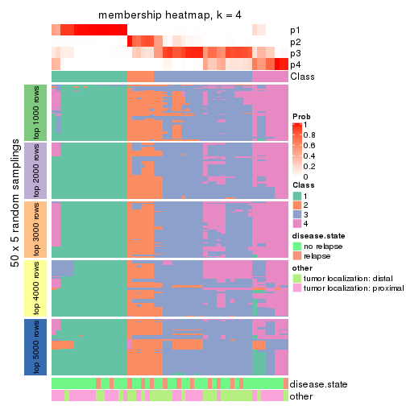
membership_heatmap(res, k = 5)
membership_heatmap(res, k = 6)
As soon as we have had the classes for columns, we can look for signatures which are significantly different between classes which can be candidate marks for certain classes. Following are the heatmaps for signatures.
Signature heatmaps where rows are scaled:
get_signatures(res, k = 2)
get_signatures(res, k = 3)
get_signatures(res, k = 4)

get_signatures(res, k = 5)
get_signatures(res, k = 6)
Signature heatmaps where rows are not scaled:
get_signatures(res, k = 2, scale_rows = FALSE)
get_signatures(res, k = 3, scale_rows = FALSE)
get_signatures(res, k = 4, scale_rows = FALSE)
get_signatures(res, k = 5, scale_rows = FALSE)
get_signatures(res, k = 6, scale_rows = FALSE)
Compare the overlap of signatures from different k:
compare_signatures(res)
get_signature() returns a data frame invisibly. TO get the list of signatures, the function
call should be assigned to a variable explicitly. In following code, if plot argument is set
to FALSE, no heatmap is plotted while only the differential analysis is performed.
# code only for demonstration
tb = get_signature(res, k = ..., plot = FALSE)
An example of the output of tb is:
#> which_row fdr mean_1 mean_2 scaled_mean_1 scaled_mean_2 km
#> 1 38 0.042760348 8.373488 9.131774 -0.5533452 0.5164555 1
#> 2 40 0.018707592 7.106213 8.469186 -0.6173731 0.5762149 1
#> 3 55 0.019134737 10.221463 11.207825 -0.6159697 0.5749050 1
#> 4 59 0.006059896 5.921854 7.869574 -0.6899429 0.6439467 1
#> 5 60 0.018055526 8.928898 10.211722 -0.6204761 0.5791110 1
#> 6 98 0.009384629 15.714769 14.887706 0.6635654 -0.6193277 2
...
The columns in tb are:
which_row: row indices corresponding to the input matrix.fdr: FDR for the differential test. mean_x: The mean value in group x.scaled_mean_x: The mean value in group x after rows are scaled.km: Row groups if k-means clustering is applied to rows.UMAP plot which shows how samples are separated.
dimension_reduction(res, k = 2, method = "UMAP")
dimension_reduction(res, k = 3, method = "UMAP")
dimension_reduction(res, k = 4, method = "UMAP")
dimension_reduction(res, k = 5, method = "UMAP")

dimension_reduction(res, k = 6, method = "UMAP")
Following heatmap shows how subgroups are split when increasing k:
collect_classes(res)
Test correlation between subgroups and known annotations. If the known annotation is numeric, one-way ANOVA test is applied, and if the known annotation is discrete, chi-squared contingency table test is applied.
test_to_known_factors(res)
#> n disease.state(p) other(p) k
#> SD:hclust 46 0.737 0.3759 2
#> SD:hclust 34 0.403 0.0721 3
#> SD:hclust 46 0.207 0.0685 4
#> SD:hclust 42 0.291 0.1666 5
#> SD:hclust 30 0.879 0.4542 6
If matrix rows can be associated to genes, consider to use functional_enrichment(res,
...) to perform function enrichment for the signature genes. See this vignette for more detailed explanations.
The object with results only for a single top-value method and a single partition method can be extracted as:
res = res_list["SD", "kmeans"]
# you can also extract it by
# res = res_list["SD:kmeans"]
A summary of res and all the functions that can be applied to it:
res
#> A 'ConsensusPartition' object with k = 2, 3, 4, 5, 6.
#> On a matrix with 51941 rows and 53 columns.
#> Top rows (1000, 2000, 3000, 4000, 5000) are extracted by 'SD' method.
#> Subgroups are detected by 'kmeans' method.
#> Performed in total 1250 partitions by row resampling.
#> Best k for subgroups seems to be 2.
#>
#> Following methods can be applied to this 'ConsensusPartition' object:
#> [1] "cola_report" "collect_classes" "collect_plots"
#> [4] "collect_stats" "colnames" "compare_signatures"
#> [7] "consensus_heatmap" "dimension_reduction" "functional_enrichment"
#> [10] "get_anno_col" "get_anno" "get_classes"
#> [13] "get_consensus" "get_matrix" "get_membership"
#> [16] "get_param" "get_signatures" "get_stats"
#> [19] "is_best_k" "is_stable_k" "membership_heatmap"
#> [22] "ncol" "nrow" "plot_ecdf"
#> [25] "rownames" "select_partition_number" "show"
#> [28] "suggest_best_k" "test_to_known_factors"
collect_plots() function collects all the plots made from res for all k (number of partitions)
into one single page to provide an easy and fast comparison between different k.
collect_plots(res)
The plots are:
k and the heatmap of
predicted classes for each k.k.k.k.All the plots in panels can be made by individual functions and they are plotted later in this section.
select_partition_number() produces several plots showing different
statistics for choosing “optimized” k. There are following statistics:
k;k, the area increased is defined as \(A_k - A_{k-1}\).The detailed explanations of these statistics can be found in the cola vignette.
Generally speaking, lower PAC score, higher mean silhouette score or higher
concordance corresponds to better partition. Rand index and Jaccard index
measure how similar the current partition is compared to partition with k-1.
If they are too similar, we won't accept k is better than k-1.
select_partition_number(res)
The numeric values for all these statistics can be obtained by get_stats().
get_stats(res)
#> k 1-PAC mean_silhouette concordance area_increased Rand Jaccard
#> 2 2 0.741 0.951 0.970 0.4744 0.531 0.531
#> 3 3 0.651 0.893 0.911 0.3802 0.741 0.536
#> 4 4 0.619 0.598 0.745 0.1064 0.968 0.902
#> 5 5 0.610 0.459 0.724 0.0707 0.796 0.447
#> 6 6 0.649 0.539 0.721 0.0459 0.890 0.595
suggest_best_k() suggests the best \(k\) based on these statistics. The rules are as follows:
suggest_best_k(res)
#> [1] 2
Following shows the table of the partitions (You need to click the show/hide
code output link to see it). The membership matrix (columns with name p*)
is inferred by
clue::cl_consensus()
function with the SE method. Basically the value in the membership matrix
represents the probability to belong to a certain group. The finall class
label for an item is determined with the group with highest probability it
belongs to.
In get_classes() function, the entropy is calculated from the membership
matrix and the silhouette score is calculated from the consensus matrix.
cbind(get_classes(res, k = 2), get_membership(res, k = 2))
#> class entropy silhouette p1 p2
#> GSM452149 2 0.0000 0.959 0.000 1.000
#> GSM452150 2 0.0000 0.959 0.000 1.000
#> GSM452152 2 0.0000 0.959 0.000 1.000
#> GSM452154 2 0.0000 0.959 0.000 1.000
#> GSM452160 2 0.0000 0.959 0.000 1.000
#> GSM452167 2 0.0000 0.959 0.000 1.000
#> GSM452182 1 0.0000 0.983 1.000 0.000
#> GSM452185 2 0.3114 0.939 0.056 0.944
#> GSM452186 2 0.4815 0.906 0.104 0.896
#> GSM452187 2 0.0000 0.959 0.000 1.000
#> GSM452189 1 0.0000 0.983 1.000 0.000
#> GSM452195 2 0.0000 0.959 0.000 1.000
#> GSM452196 2 0.4815 0.906 0.104 0.896
#> GSM452197 1 0.0000 0.983 1.000 0.000
#> GSM452198 2 0.0000 0.959 0.000 1.000
#> GSM452199 2 0.4815 0.906 0.104 0.896
#> GSM452148 1 0.3114 0.935 0.944 0.056
#> GSM452151 2 0.3114 0.939 0.056 0.944
#> GSM452153 1 0.0672 0.976 0.992 0.008
#> GSM452155 2 0.0000 0.959 0.000 1.000
#> GSM452156 2 0.0000 0.959 0.000 1.000
#> GSM452157 1 0.0000 0.983 1.000 0.000
#> GSM452158 2 0.4815 0.906 0.104 0.896
#> GSM452162 2 0.4815 0.906 0.104 0.896
#> GSM452163 1 0.0000 0.983 1.000 0.000
#> GSM452166 2 0.3114 0.939 0.056 0.944
#> GSM452168 1 0.0000 0.983 1.000 0.000
#> GSM452169 1 0.0000 0.983 1.000 0.000
#> GSM452170 2 0.3114 0.939 0.056 0.944
#> GSM452172 2 0.3114 0.939 0.056 0.944
#> GSM452173 1 0.0000 0.983 1.000 0.000
#> GSM452174 1 0.0000 0.983 1.000 0.000
#> GSM452176 2 0.3114 0.939 0.056 0.944
#> GSM452179 1 0.0000 0.983 1.000 0.000
#> GSM452180 1 0.0000 0.983 1.000 0.000
#> GSM452181 2 0.4815 0.906 0.104 0.896
#> GSM452183 1 0.0000 0.983 1.000 0.000
#> GSM452184 1 0.6801 0.786 0.820 0.180
#> GSM452188 1 0.0000 0.983 1.000 0.000
#> GSM452193 2 0.3114 0.939 0.056 0.944
#> GSM452165 2 0.4815 0.906 0.104 0.896
#> GSM452171 2 0.0000 0.959 0.000 1.000
#> GSM452175 1 0.0000 0.983 1.000 0.000
#> GSM452177 2 0.0000 0.959 0.000 1.000
#> GSM452190 1 0.3114 0.935 0.944 0.056
#> GSM452191 2 0.4815 0.906 0.104 0.896
#> GSM452192 2 0.0000 0.959 0.000 1.000
#> GSM452194 2 0.0000 0.959 0.000 1.000
#> GSM452200 2 0.3114 0.939 0.056 0.944
#> GSM452159 1 0.0000 0.983 1.000 0.000
#> GSM452161 2 0.0000 0.959 0.000 1.000
#> GSM452164 2 0.0000 0.959 0.000 1.000
#> GSM452178 2 0.0000 0.959 0.000 1.000
cbind(get_classes(res, k = 3), get_membership(res, k = 3))
#> class entropy silhouette p1 p2 p3
#> GSM452149 2 0.3752 0.817 0.000 0.856 0.144
#> GSM452150 2 0.3752 0.813 0.000 0.856 0.144
#> GSM452152 3 0.3038 0.933 0.000 0.104 0.896
#> GSM452154 3 0.5621 0.759 0.000 0.308 0.692
#> GSM452160 2 0.3752 0.813 0.000 0.856 0.144
#> GSM452167 2 0.0000 0.906 0.000 1.000 0.000
#> GSM452182 1 0.0237 0.955 0.996 0.000 0.004
#> GSM452185 3 0.3340 0.931 0.000 0.120 0.880
#> GSM452186 2 0.0237 0.905 0.004 0.996 0.000
#> GSM452187 3 0.5178 0.838 0.000 0.256 0.744
#> GSM452189 1 0.0000 0.955 1.000 0.000 0.000
#> GSM452195 2 0.0237 0.907 0.000 0.996 0.004
#> GSM452196 2 0.0237 0.907 0.000 0.996 0.004
#> GSM452197 1 0.0000 0.955 1.000 0.000 0.000
#> GSM452198 3 0.3192 0.933 0.000 0.112 0.888
#> GSM452199 2 0.0237 0.907 0.000 0.996 0.004
#> GSM452148 2 0.5058 0.655 0.244 0.756 0.000
#> GSM452151 3 0.2959 0.930 0.000 0.100 0.900
#> GSM452153 1 0.4504 0.820 0.804 0.000 0.196
#> GSM452155 3 0.5138 0.838 0.000 0.252 0.748
#> GSM452156 2 0.1753 0.887 0.000 0.952 0.048
#> GSM452157 1 0.3038 0.934 0.896 0.000 0.104
#> GSM452158 2 0.0237 0.907 0.000 0.996 0.004
#> GSM452162 2 0.0829 0.899 0.012 0.984 0.004
#> GSM452163 1 0.2878 0.936 0.904 0.000 0.096
#> GSM452166 3 0.3038 0.933 0.000 0.104 0.896
#> GSM452168 1 0.0237 0.955 0.996 0.000 0.004
#> GSM452169 1 0.2959 0.935 0.900 0.000 0.100
#> GSM452170 3 0.3038 0.933 0.000 0.104 0.896
#> GSM452172 3 0.2711 0.920 0.000 0.088 0.912
#> GSM452173 1 0.0000 0.955 1.000 0.000 0.000
#> GSM452174 1 0.2165 0.944 0.936 0.000 0.064
#> GSM452176 3 0.3116 0.932 0.000 0.108 0.892
#> GSM452179 1 0.2959 0.935 0.900 0.000 0.100
#> GSM452180 1 0.1031 0.955 0.976 0.000 0.024
#> GSM452181 2 0.0237 0.907 0.000 0.996 0.004
#> GSM452183 1 0.0424 0.956 0.992 0.000 0.008
#> GSM452184 1 0.4002 0.825 0.840 0.000 0.160
#> GSM452188 1 0.0592 0.956 0.988 0.000 0.012
#> GSM452193 3 0.3551 0.928 0.000 0.132 0.868
#> GSM452165 2 0.0000 0.906 0.000 1.000 0.000
#> GSM452171 2 0.3038 0.846 0.000 0.896 0.104
#> GSM452175 1 0.0592 0.956 0.988 0.000 0.012
#> GSM452177 2 0.3816 0.809 0.000 0.852 0.148
#> GSM452190 2 0.5363 0.605 0.276 0.724 0.000
#> GSM452191 2 0.0000 0.906 0.000 1.000 0.000
#> GSM452192 2 0.4062 0.791 0.000 0.836 0.164
#> GSM452194 3 0.4605 0.888 0.000 0.204 0.796
#> GSM452200 3 0.3116 0.932 0.000 0.108 0.892
#> GSM452159 1 0.0747 0.955 0.984 0.000 0.016
#> GSM452161 2 0.0237 0.907 0.000 0.996 0.004
#> GSM452164 2 0.0237 0.907 0.000 0.996 0.004
#> GSM452178 3 0.4605 0.886 0.000 0.204 0.796
cbind(get_classes(res, k = 4), get_membership(res, k = 4))
#> class entropy silhouette p1 p2 p3 p4
#> GSM452149 3 0.5760 0.2944 0.000 0.448 0.524 0.028
#> GSM452150 3 0.5760 0.2944 0.000 0.448 0.524 0.028
#> GSM452152 4 0.4564 0.2339 0.000 0.328 0.000 0.672
#> GSM452154 2 0.7544 0.7847 0.000 0.452 0.196 0.352
#> GSM452160 3 0.5842 0.2822 0.000 0.448 0.520 0.032
#> GSM452167 3 0.4746 0.4938 0.000 0.368 0.632 0.000
#> GSM452182 1 0.1474 0.8707 0.948 0.052 0.000 0.000
#> GSM452185 4 0.5905 0.1706 0.000 0.304 0.060 0.636
#> GSM452186 3 0.0707 0.6358 0.000 0.020 0.980 0.000
#> GSM452187 2 0.7657 0.7110 0.000 0.464 0.256 0.280
#> GSM452189 1 0.1940 0.8618 0.924 0.076 0.000 0.000
#> GSM452195 3 0.4193 0.5827 0.000 0.268 0.732 0.000
#> GSM452196 3 0.0000 0.6429 0.000 0.000 1.000 0.000
#> GSM452197 1 0.0469 0.8753 0.988 0.012 0.000 0.000
#> GSM452198 4 0.4877 0.2532 0.000 0.328 0.008 0.664
#> GSM452199 3 0.0000 0.6429 0.000 0.000 1.000 0.000
#> GSM452148 3 0.6198 0.3845 0.176 0.152 0.672 0.000
#> GSM452151 4 0.1302 0.6542 0.000 0.044 0.000 0.956
#> GSM452153 1 0.5383 0.7613 0.744 0.128 0.000 0.128
#> GSM452155 4 0.7589 -0.7349 0.000 0.396 0.196 0.408
#> GSM452156 3 0.4999 0.5260 0.000 0.328 0.660 0.012
#> GSM452157 1 0.4331 0.8176 0.712 0.288 0.000 0.000
#> GSM452158 3 0.1792 0.6462 0.000 0.068 0.932 0.000
#> GSM452162 3 0.2760 0.6400 0.000 0.128 0.872 0.000
#> GSM452163 1 0.4193 0.8181 0.732 0.268 0.000 0.000
#> GSM452166 4 0.0469 0.6609 0.000 0.012 0.000 0.988
#> GSM452168 1 0.1474 0.8707 0.948 0.052 0.000 0.000
#> GSM452169 1 0.4164 0.8198 0.736 0.264 0.000 0.000
#> GSM452170 4 0.1118 0.6541 0.000 0.036 0.000 0.964
#> GSM452172 4 0.0817 0.6554 0.000 0.024 0.000 0.976
#> GSM452173 1 0.2469 0.8509 0.892 0.108 0.000 0.000
#> GSM452174 1 0.4500 0.7999 0.684 0.316 0.000 0.000
#> GSM452176 4 0.1474 0.6557 0.000 0.052 0.000 0.948
#> GSM452179 1 0.4193 0.8181 0.732 0.268 0.000 0.000
#> GSM452180 1 0.2216 0.8763 0.908 0.092 0.000 0.000
#> GSM452181 3 0.0000 0.6429 0.000 0.000 1.000 0.000
#> GSM452183 1 0.2530 0.8637 0.888 0.112 0.000 0.000
#> GSM452184 1 0.3862 0.7975 0.824 0.152 0.000 0.024
#> GSM452188 1 0.1792 0.8709 0.932 0.068 0.000 0.000
#> GSM452193 4 0.6141 0.0813 0.000 0.312 0.072 0.616
#> GSM452165 3 0.0707 0.6358 0.000 0.020 0.980 0.000
#> GSM452171 3 0.5543 0.4426 0.000 0.360 0.612 0.028
#> GSM452175 1 0.1557 0.8739 0.944 0.056 0.000 0.000
#> GSM452177 3 0.5853 0.2453 0.000 0.460 0.508 0.032
#> GSM452190 3 0.6236 0.3808 0.180 0.152 0.668 0.000
#> GSM452191 3 0.1474 0.6192 0.000 0.052 0.948 0.000
#> GSM452192 3 0.6387 0.2131 0.000 0.444 0.492 0.064
#> GSM452194 2 0.6884 0.7515 0.000 0.464 0.104 0.432
#> GSM452200 4 0.1474 0.6557 0.000 0.052 0.000 0.948
#> GSM452159 1 0.1940 0.8779 0.924 0.076 0.000 0.000
#> GSM452161 3 0.3486 0.6209 0.000 0.188 0.812 0.000
#> GSM452164 3 0.4356 0.5696 0.000 0.292 0.708 0.000
#> GSM452178 2 0.6924 0.7612 0.000 0.464 0.108 0.428
cbind(get_classes(res, k = 5), get_membership(res, k = 5))
#> class entropy silhouette p1 p2 p3 p4 p5
#> GSM452149 3 0.391 0.6460 0.000 0.164 0.788 0.000 0.048
#> GSM452150 3 0.330 0.6449 0.000 0.168 0.816 0.000 0.016
#> GSM452152 3 0.597 0.0911 0.000 0.004 0.516 0.380 0.100
#> GSM452154 3 0.441 0.6519 0.000 0.064 0.804 0.064 0.068
#> GSM452160 3 0.332 0.6401 0.000 0.180 0.808 0.000 0.012
#> GSM452167 3 0.547 0.5001 0.000 0.296 0.620 0.004 0.080
#> GSM452182 1 0.428 0.0327 0.544 0.000 0.000 0.000 0.456
#> GSM452185 3 0.733 0.1515 0.000 0.052 0.456 0.320 0.172
#> GSM452186 2 0.158 0.7538 0.000 0.944 0.032 0.000 0.024
#> GSM452187 3 0.166 0.6716 0.000 0.056 0.936 0.004 0.004
#> GSM452189 1 0.460 -0.1299 0.504 0.004 0.000 0.004 0.488
#> GSM452195 2 0.564 0.0931 0.000 0.544 0.372 0.000 0.084
#> GSM452196 2 0.120 0.7555 0.000 0.952 0.048 0.000 0.000
#> GSM452197 1 0.429 0.1536 0.612 0.004 0.000 0.000 0.384
#> GSM452198 3 0.575 0.2804 0.000 0.020 0.616 0.292 0.072
#> GSM452199 2 0.120 0.7555 0.000 0.952 0.048 0.000 0.000
#> GSM452148 2 0.550 0.5424 0.024 0.672 0.024 0.024 0.256
#> GSM452151 4 0.391 0.8679 0.000 0.000 0.088 0.804 0.108
#> GSM452153 5 0.629 0.3520 0.344 0.000 0.004 0.144 0.508
#> GSM452155 3 0.637 0.5603 0.000 0.100 0.652 0.112 0.136
#> GSM452156 3 0.628 0.3171 0.000 0.340 0.528 0.012 0.120
#> GSM452157 1 0.169 0.3539 0.944 0.000 0.008 0.020 0.028
#> GSM452158 2 0.371 0.6694 0.000 0.812 0.132 0.000 0.056
#> GSM452162 2 0.566 0.4165 0.000 0.628 0.252 0.004 0.116
#> GSM452163 1 0.096 0.3805 0.972 0.000 0.008 0.016 0.004
#> GSM452166 4 0.196 0.9051 0.000 0.000 0.096 0.904 0.000
#> GSM452168 1 0.428 0.0327 0.544 0.000 0.000 0.000 0.456
#> GSM452169 1 0.074 0.3819 0.980 0.000 0.008 0.008 0.004
#> GSM452170 4 0.342 0.8823 0.000 0.000 0.084 0.840 0.076
#> GSM452172 4 0.191 0.8999 0.000 0.000 0.044 0.928 0.028
#> GSM452173 5 0.552 -0.0651 0.452 0.020 0.012 0.012 0.504
#> GSM452174 1 0.347 0.2880 0.836 0.004 0.012 0.016 0.132
#> GSM452176 4 0.353 0.8839 0.000 0.004 0.104 0.836 0.056
#> GSM452179 1 0.109 0.3781 0.968 0.000 0.008 0.016 0.008
#> GSM452180 1 0.376 0.3251 0.748 0.004 0.000 0.004 0.244
#> GSM452181 2 0.120 0.7555 0.000 0.952 0.048 0.000 0.000
#> GSM452183 1 0.468 0.0636 0.592 0.012 0.000 0.004 0.392
#> GSM452184 5 0.609 0.3457 0.376 0.000 0.084 0.016 0.524
#> GSM452188 1 0.428 0.0327 0.544 0.000 0.000 0.000 0.456
#> GSM452193 3 0.740 0.1695 0.000 0.060 0.456 0.316 0.168
#> GSM452165 2 0.158 0.7538 0.000 0.944 0.032 0.000 0.024
#> GSM452171 3 0.527 0.4487 0.000 0.352 0.588 0.000 0.060
#> GSM452175 1 0.423 0.1214 0.580 0.000 0.000 0.000 0.420
#> GSM452177 3 0.396 0.6399 0.000 0.176 0.780 0.000 0.044
#> GSM452190 2 0.552 0.5369 0.024 0.668 0.024 0.024 0.260
#> GSM452191 2 0.236 0.7221 0.000 0.900 0.024 0.000 0.076
#> GSM452192 3 0.362 0.6448 0.000 0.172 0.804 0.008 0.016
#> GSM452194 3 0.240 0.6487 0.000 0.016 0.904 0.072 0.008
#> GSM452200 4 0.353 0.8839 0.000 0.004 0.104 0.836 0.056
#> GSM452159 1 0.377 0.3107 0.728 0.004 0.000 0.000 0.268
#> GSM452161 2 0.491 0.4269 0.000 0.664 0.280 0.000 0.056
#> GSM452164 3 0.600 0.1216 0.000 0.444 0.456 0.004 0.096
#> GSM452178 3 0.199 0.6448 0.000 0.004 0.920 0.068 0.008
cbind(get_classes(res, k = 6), get_membership(res, k = 6))
#> class entropy silhouette p1 p2 p3 p4 p5 p6
#> GSM452149 3 0.4024 0.4520 0.000 0.072 0.744 0.000 0.000 0.184
#> GSM452150 3 0.2542 0.5763 0.000 0.080 0.884 0.000 0.020 0.016
#> GSM452152 4 0.6212 -0.0627 0.000 0.004 0.416 0.436 0.040 0.104
#> GSM452154 3 0.5229 -0.0972 0.000 0.052 0.596 0.032 0.000 0.320
#> GSM452160 3 0.2796 0.5746 0.000 0.100 0.864 0.000 0.020 0.016
#> GSM452167 3 0.5741 0.4243 0.000 0.252 0.604 0.000 0.060 0.084
#> GSM452182 1 0.2302 0.6920 0.872 0.000 0.000 0.000 0.008 0.120
#> GSM452185 6 0.6420 0.9851 0.000 0.036 0.304 0.188 0.000 0.472
#> GSM452186 2 0.1605 0.6880 0.000 0.940 0.032 0.000 0.012 0.016
#> GSM452187 3 0.1942 0.5261 0.000 0.012 0.916 0.008 0.000 0.064
#> GSM452189 1 0.2144 0.6621 0.908 0.004 0.000 0.000 0.048 0.040
#> GSM452195 2 0.5829 0.3307 0.000 0.564 0.216 0.000 0.016 0.204
#> GSM452196 2 0.0909 0.6904 0.000 0.968 0.020 0.000 0.000 0.012
#> GSM452197 1 0.1401 0.6688 0.948 0.004 0.000 0.000 0.020 0.028
#> GSM452198 3 0.5777 -0.4163 0.000 0.000 0.536 0.176 0.008 0.280
#> GSM452199 2 0.0993 0.6902 0.000 0.964 0.024 0.000 0.000 0.012
#> GSM452148 2 0.6283 0.4627 0.064 0.576 0.008 0.000 0.120 0.232
#> GSM452151 4 0.3190 0.6756 0.000 0.004 0.008 0.844 0.044 0.100
#> GSM452153 1 0.6349 0.3959 0.572 0.004 0.000 0.136 0.076 0.212
#> GSM452155 3 0.7614 0.1759 0.000 0.148 0.464 0.088 0.060 0.240
#> GSM452156 3 0.7104 0.2343 0.000 0.280 0.472 0.024 0.068 0.156
#> GSM452157 5 0.4174 0.8572 0.352 0.000 0.004 0.000 0.628 0.016
#> GSM452158 2 0.4529 0.5537 0.000 0.724 0.096 0.000 0.012 0.168
#> GSM452162 2 0.6442 0.2438 0.004 0.516 0.296 0.000 0.064 0.120
#> GSM452163 5 0.4323 0.8901 0.376 0.000 0.004 0.000 0.600 0.020
#> GSM452166 4 0.1723 0.7213 0.000 0.000 0.036 0.928 0.000 0.036
#> GSM452168 1 0.2389 0.6885 0.864 0.000 0.000 0.000 0.008 0.128
#> GSM452169 5 0.3828 0.8629 0.440 0.000 0.000 0.000 0.560 0.000
#> GSM452170 4 0.1819 0.7186 0.000 0.004 0.008 0.932 0.024 0.032
#> GSM452172 4 0.0767 0.7289 0.000 0.000 0.004 0.976 0.008 0.012
#> GSM452173 1 0.4176 0.5703 0.772 0.008 0.008 0.000 0.084 0.128
#> GSM452174 5 0.4642 0.7622 0.452 0.000 0.000 0.000 0.508 0.040
#> GSM452176 4 0.4589 0.6649 0.000 0.004 0.040 0.756 0.092 0.108
#> GSM452179 5 0.3695 0.8914 0.376 0.000 0.000 0.000 0.624 0.000
#> GSM452180 1 0.3273 0.2988 0.776 0.004 0.000 0.000 0.212 0.008
#> GSM452181 2 0.0692 0.6916 0.000 0.976 0.020 0.000 0.000 0.004
#> GSM452183 1 0.3710 0.5402 0.788 0.004 0.000 0.000 0.144 0.064
#> GSM452184 1 0.4781 0.5549 0.696 0.000 0.036 0.000 0.052 0.216
#> GSM452188 1 0.2302 0.6920 0.872 0.000 0.000 0.000 0.008 0.120
#> GSM452193 6 0.6465 0.9850 0.000 0.040 0.308 0.184 0.000 0.468
#> GSM452165 2 0.1528 0.6880 0.000 0.944 0.028 0.000 0.012 0.016
#> GSM452171 3 0.4814 0.4219 0.000 0.312 0.628 0.000 0.020 0.040
#> GSM452175 1 0.1701 0.6900 0.920 0.000 0.000 0.000 0.008 0.072
#> GSM452177 3 0.4580 0.3763 0.000 0.120 0.708 0.000 0.004 0.168
#> GSM452190 2 0.6375 0.4497 0.064 0.560 0.008 0.000 0.124 0.244
#> GSM452191 2 0.4675 0.5872 0.000 0.736 0.040 0.000 0.084 0.140
#> GSM452192 3 0.2844 0.5734 0.000 0.104 0.860 0.000 0.020 0.016
#> GSM452194 3 0.2651 0.4785 0.000 0.004 0.872 0.036 0.000 0.088
#> GSM452200 4 0.4589 0.6649 0.000 0.004 0.040 0.756 0.092 0.108
#> GSM452159 1 0.2595 0.4724 0.836 0.000 0.000 0.000 0.160 0.004
#> GSM452161 2 0.5104 0.4897 0.000 0.664 0.156 0.000 0.012 0.168
#> GSM452164 2 0.6324 -0.0731 0.000 0.428 0.408 0.000 0.060 0.104
#> GSM452178 3 0.2003 0.5017 0.000 0.000 0.912 0.044 0.000 0.044
Heatmaps for the consensus matrix. It visualizes the probability of two samples to be in a same group.
consensus_heatmap(res, k = 2)
consensus_heatmap(res, k = 3)
consensus_heatmap(res, k = 4)
consensus_heatmap(res, k = 5)
consensus_heatmap(res, k = 6)
Heatmaps for the membership of samples in all partitions to see how consistent they are:
membership_heatmap(res, k = 2)
membership_heatmap(res, k = 3)
membership_heatmap(res, k = 4)
membership_heatmap(res, k = 5)
membership_heatmap(res, k = 6)
As soon as we have had the classes for columns, we can look for signatures which are significantly different between classes which can be candidate marks for certain classes. Following are the heatmaps for signatures.
Signature heatmaps where rows are scaled:
get_signatures(res, k = 2)
get_signatures(res, k = 3)
get_signatures(res, k = 4)
get_signatures(res, k = 5)
get_signatures(res, k = 6)
Signature heatmaps where rows are not scaled:
get_signatures(res, k = 2, scale_rows = FALSE)
get_signatures(res, k = 3, scale_rows = FALSE)
get_signatures(res, k = 4, scale_rows = FALSE)
get_signatures(res, k = 5, scale_rows = FALSE)
get_signatures(res, k = 6, scale_rows = FALSE)
Compare the overlap of signatures from different k:
compare_signatures(res)
get_signature() returns a data frame invisibly. TO get the list of signatures, the function
call should be assigned to a variable explicitly. In following code, if plot argument is set
to FALSE, no heatmap is plotted while only the differential analysis is performed.
# code only for demonstration
tb = get_signature(res, k = ..., plot = FALSE)
An example of the output of tb is:
#> which_row fdr mean_1 mean_2 scaled_mean_1 scaled_mean_2 km
#> 1 38 0.042760348 8.373488 9.131774 -0.5533452 0.5164555 1
#> 2 40 0.018707592 7.106213 8.469186 -0.6173731 0.5762149 1
#> 3 55 0.019134737 10.221463 11.207825 -0.6159697 0.5749050 1
#> 4 59 0.006059896 5.921854 7.869574 -0.6899429 0.6439467 1
#> 5 60 0.018055526 8.928898 10.211722 -0.6204761 0.5791110 1
#> 6 98 0.009384629 15.714769 14.887706 0.6635654 -0.6193277 2
...
The columns in tb are:
which_row: row indices corresponding to the input matrix.fdr: FDR for the differential test. mean_x: The mean value in group x.scaled_mean_x: The mean value in group x after rows are scaled.km: Row groups if k-means clustering is applied to rows.UMAP plot which shows how samples are separated.
dimension_reduction(res, k = 2, method = "UMAP")

dimension_reduction(res, k = 3, method = "UMAP")

dimension_reduction(res, k = 4, method = "UMAP")
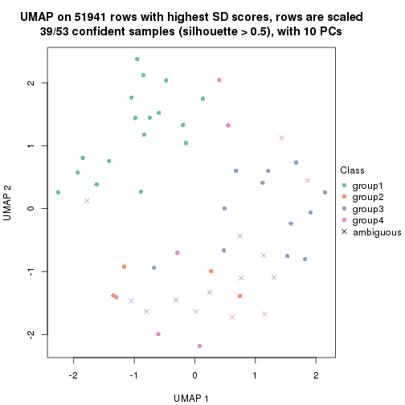
dimension_reduction(res, k = 5, method = "UMAP")
dimension_reduction(res, k = 6, method = "UMAP")
Following heatmap shows how subgroups are split when increasing k:
collect_classes(res)
Test correlation between subgroups and known annotations. If the known annotation is numeric, one-way ANOVA test is applied, and if the known annotation is discrete, chi-squared contingency table test is applied.
test_to_known_factors(res)
#> n disease.state(p) other(p) k
#> SD:kmeans 53 0.440 0.0470 2
#> SD:kmeans 53 0.153 0.0299 3
#> SD:kmeans 39 0.295 0.1223 4
#> SD:kmeans 26 0.687 0.0285 5
#> SD:kmeans 34 0.540 0.0613 6
If matrix rows can be associated to genes, consider to use functional_enrichment(res,
...) to perform function enrichment for the signature genes. See this vignette for more detailed explanations.
The object with results only for a single top-value method and a single partition method can be extracted as:
res = res_list["SD", "skmeans"]
# you can also extract it by
# res = res_list["SD:skmeans"]
A summary of res and all the functions that can be applied to it:
res
#> A 'ConsensusPartition' object with k = 2, 3, 4, 5, 6.
#> On a matrix with 51941 rows and 53 columns.
#> Top rows (1000, 2000, 3000, 4000, 5000) are extracted by 'SD' method.
#> Subgroups are detected by 'skmeans' method.
#> Performed in total 1250 partitions by row resampling.
#> Best k for subgroups seems to be 3.
#>
#> Following methods can be applied to this 'ConsensusPartition' object:
#> [1] "cola_report" "collect_classes" "collect_plots"
#> [4] "collect_stats" "colnames" "compare_signatures"
#> [7] "consensus_heatmap" "dimension_reduction" "functional_enrichment"
#> [10] "get_anno_col" "get_anno" "get_classes"
#> [13] "get_consensus" "get_matrix" "get_membership"
#> [16] "get_param" "get_signatures" "get_stats"
#> [19] "is_best_k" "is_stable_k" "membership_heatmap"
#> [22] "ncol" "nrow" "plot_ecdf"
#> [25] "rownames" "select_partition_number" "show"
#> [28] "suggest_best_k" "test_to_known_factors"
collect_plots() function collects all the plots made from res for all k (number of partitions)
into one single page to provide an easy and fast comparison between different k.
collect_plots(res)
The plots are:
k and the heatmap of
predicted classes for each k.k.k.k.All the plots in panels can be made by individual functions and they are plotted later in this section.
select_partition_number() produces several plots showing different
statistics for choosing “optimized” k. There are following statistics:
k;k, the area increased is defined as \(A_k - A_{k-1}\).The detailed explanations of these statistics can be found in the cola vignette.
Generally speaking, lower PAC score, higher mean silhouette score or higher
concordance corresponds to better partition. Rand index and Jaccard index
measure how similar the current partition is compared to partition with k-1.
If they are too similar, we won't accept k is better than k-1.
select_partition_number(res)
The numeric values for all these statistics can be obtained by get_stats().
get_stats(res)
#> k 1-PAC mean_silhouette concordance area_increased Rand Jaccard
#> 2 2 1.000 0.971 0.990 0.4845 0.512 0.512
#> 3 3 0.926 0.958 0.975 0.3907 0.716 0.495
#> 4 4 0.810 0.806 0.898 0.1185 0.876 0.642
#> 5 5 0.717 0.679 0.816 0.0519 0.966 0.861
#> 6 6 0.689 0.486 0.738 0.0395 0.988 0.946
suggest_best_k() suggests the best \(k\) based on these statistics. The rules are as follows:
suggest_best_k(res)
#> [1] 3
#> attr(,"optional")
#> [1] 2
There is also optional best \(k\) = 2 that is worth to check.
Following shows the table of the partitions (You need to click the show/hide
code output link to see it). The membership matrix (columns with name p*)
is inferred by
clue::cl_consensus()
function with the SE method. Basically the value in the membership matrix
represents the probability to belong to a certain group. The finall class
label for an item is determined with the group with highest probability it
belongs to.
In get_classes() function, the entropy is calculated from the membership
matrix and the silhouette score is calculated from the consensus matrix.
cbind(get_classes(res, k = 2), get_membership(res, k = 2))
#> class entropy silhouette p1 p2
#> GSM452149 2 0.000 0.9979 0.000 1.000
#> GSM452150 2 0.000 0.9979 0.000 1.000
#> GSM452152 2 0.000 0.9979 0.000 1.000
#> GSM452154 2 0.000 0.9979 0.000 1.000
#> GSM452160 2 0.000 0.9979 0.000 1.000
#> GSM452167 2 0.000 0.9979 0.000 1.000
#> GSM452182 1 0.000 0.9757 1.000 0.000
#> GSM452185 2 0.000 0.9979 0.000 1.000
#> GSM452186 2 0.000 0.9979 0.000 1.000
#> GSM452187 2 0.000 0.9979 0.000 1.000
#> GSM452189 1 0.000 0.9757 1.000 0.000
#> GSM452195 2 0.000 0.9979 0.000 1.000
#> GSM452196 2 0.000 0.9979 0.000 1.000
#> GSM452197 1 0.000 0.9757 1.000 0.000
#> GSM452198 2 0.000 0.9979 0.000 1.000
#> GSM452199 2 0.000 0.9979 0.000 1.000
#> GSM452148 1 0.000 0.9757 1.000 0.000
#> GSM452151 1 0.999 0.0697 0.520 0.480
#> GSM452153 1 0.000 0.9757 1.000 0.000
#> GSM452155 2 0.000 0.9979 0.000 1.000
#> GSM452156 2 0.000 0.9979 0.000 1.000
#> GSM452157 1 0.000 0.9757 1.000 0.000
#> GSM452158 2 0.000 0.9979 0.000 1.000
#> GSM452162 1 0.000 0.9757 1.000 0.000
#> GSM452163 1 0.000 0.9757 1.000 0.000
#> GSM452166 2 0.000 0.9979 0.000 1.000
#> GSM452168 1 0.000 0.9757 1.000 0.000
#> GSM452169 1 0.000 0.9757 1.000 0.000
#> GSM452170 2 0.000 0.9979 0.000 1.000
#> GSM452172 2 0.343 0.9293 0.064 0.936
#> GSM452173 1 0.000 0.9757 1.000 0.000
#> GSM452174 1 0.000 0.9757 1.000 0.000
#> GSM452176 2 0.000 0.9979 0.000 1.000
#> GSM452179 1 0.000 0.9757 1.000 0.000
#> GSM452180 1 0.000 0.9757 1.000 0.000
#> GSM452181 2 0.000 0.9979 0.000 1.000
#> GSM452183 1 0.000 0.9757 1.000 0.000
#> GSM452184 1 0.000 0.9757 1.000 0.000
#> GSM452188 1 0.000 0.9757 1.000 0.000
#> GSM452193 2 0.000 0.9979 0.000 1.000
#> GSM452165 2 0.000 0.9979 0.000 1.000
#> GSM452171 2 0.000 0.9979 0.000 1.000
#> GSM452175 1 0.000 0.9757 1.000 0.000
#> GSM452177 2 0.000 0.9979 0.000 1.000
#> GSM452190 1 0.000 0.9757 1.000 0.000
#> GSM452191 2 0.000 0.9979 0.000 1.000
#> GSM452192 2 0.000 0.9979 0.000 1.000
#> GSM452194 2 0.000 0.9979 0.000 1.000
#> GSM452200 2 0.000 0.9979 0.000 1.000
#> GSM452159 1 0.000 0.9757 1.000 0.000
#> GSM452161 2 0.000 0.9979 0.000 1.000
#> GSM452164 2 0.000 0.9979 0.000 1.000
#> GSM452178 2 0.000 0.9979 0.000 1.000
cbind(get_classes(res, k = 3), get_membership(res, k = 3))
#> class entropy silhouette p1 p2 p3
#> GSM452149 2 0.4062 0.844 0.000 0.836 0.164
#> GSM452150 2 0.4291 0.831 0.000 0.820 0.180
#> GSM452152 3 0.0000 1.000 0.000 0.000 1.000
#> GSM452154 3 0.0000 1.000 0.000 0.000 1.000
#> GSM452160 2 0.4452 0.820 0.000 0.808 0.192
#> GSM452167 2 0.0000 0.932 0.000 1.000 0.000
#> GSM452182 1 0.0000 0.999 1.000 0.000 0.000
#> GSM452185 3 0.0000 1.000 0.000 0.000 1.000
#> GSM452186 2 0.0000 0.932 0.000 1.000 0.000
#> GSM452187 3 0.0000 1.000 0.000 0.000 1.000
#> GSM452189 1 0.0000 0.999 1.000 0.000 0.000
#> GSM452195 2 0.0000 0.932 0.000 1.000 0.000
#> GSM452196 2 0.0000 0.932 0.000 1.000 0.000
#> GSM452197 1 0.0000 0.999 1.000 0.000 0.000
#> GSM452198 3 0.0000 1.000 0.000 0.000 1.000
#> GSM452199 2 0.0000 0.932 0.000 1.000 0.000
#> GSM452148 2 0.1753 0.900 0.048 0.952 0.000
#> GSM452151 3 0.0000 1.000 0.000 0.000 1.000
#> GSM452153 1 0.0000 0.999 1.000 0.000 0.000
#> GSM452155 3 0.0000 1.000 0.000 0.000 1.000
#> GSM452156 2 0.4452 0.819 0.000 0.808 0.192
#> GSM452157 1 0.0000 0.999 1.000 0.000 0.000
#> GSM452158 2 0.0000 0.932 0.000 1.000 0.000
#> GSM452162 2 0.0000 0.932 0.000 1.000 0.000
#> GSM452163 1 0.0000 0.999 1.000 0.000 0.000
#> GSM452166 3 0.0000 1.000 0.000 0.000 1.000
#> GSM452168 1 0.0000 0.999 1.000 0.000 0.000
#> GSM452169 1 0.0000 0.999 1.000 0.000 0.000
#> GSM452170 3 0.0000 1.000 0.000 0.000 1.000
#> GSM452172 3 0.0000 1.000 0.000 0.000 1.000
#> GSM452173 1 0.0000 0.999 1.000 0.000 0.000
#> GSM452174 1 0.0000 0.999 1.000 0.000 0.000
#> GSM452176 3 0.0000 1.000 0.000 0.000 1.000
#> GSM452179 1 0.0000 0.999 1.000 0.000 0.000
#> GSM452180 1 0.0000 0.999 1.000 0.000 0.000
#> GSM452181 2 0.0000 0.932 0.000 1.000 0.000
#> GSM452183 1 0.0000 0.999 1.000 0.000 0.000
#> GSM452184 1 0.0592 0.987 0.988 0.000 0.012
#> GSM452188 1 0.0000 0.999 1.000 0.000 0.000
#> GSM452193 3 0.0000 1.000 0.000 0.000 1.000
#> GSM452165 2 0.0000 0.932 0.000 1.000 0.000
#> GSM452171 2 0.2711 0.885 0.000 0.912 0.088
#> GSM452175 1 0.0000 0.999 1.000 0.000 0.000
#> GSM452177 2 0.4887 0.779 0.000 0.772 0.228
#> GSM452190 2 0.0237 0.930 0.004 0.996 0.000
#> GSM452191 2 0.0000 0.932 0.000 1.000 0.000
#> GSM452192 2 0.4796 0.789 0.000 0.780 0.220
#> GSM452194 3 0.0000 1.000 0.000 0.000 1.000
#> GSM452200 3 0.0000 1.000 0.000 0.000 1.000
#> GSM452159 1 0.0000 0.999 1.000 0.000 0.000
#> GSM452161 2 0.0000 0.932 0.000 1.000 0.000
#> GSM452164 2 0.0000 0.932 0.000 1.000 0.000
#> GSM452178 3 0.0000 1.000 0.000 0.000 1.000
cbind(get_classes(res, k = 4), get_membership(res, k = 4))
#> class entropy silhouette p1 p2 p3 p4
#> GSM452149 3 0.2216 0.7333 0.000 0.092 0.908 0.000
#> GSM452150 3 0.1902 0.7296 0.000 0.064 0.932 0.004
#> GSM452152 4 0.3873 0.6711 0.000 0.000 0.228 0.772
#> GSM452154 4 0.4792 0.6111 0.000 0.008 0.312 0.680
#> GSM452160 3 0.2124 0.7318 0.000 0.068 0.924 0.008
#> GSM452167 3 0.4877 0.5126 0.000 0.328 0.664 0.008
#> GSM452182 1 0.0000 0.9789 1.000 0.000 0.000 0.000
#> GSM452185 4 0.1389 0.8728 0.000 0.000 0.048 0.952
#> GSM452186 2 0.0469 0.9227 0.000 0.988 0.012 0.000
#> GSM452187 3 0.3172 0.6153 0.000 0.000 0.840 0.160
#> GSM452189 1 0.0524 0.9735 0.988 0.004 0.008 0.000
#> GSM452195 2 0.3688 0.7298 0.000 0.792 0.208 0.000
#> GSM452196 2 0.0188 0.9223 0.000 0.996 0.004 0.000
#> GSM452197 1 0.0000 0.9789 1.000 0.000 0.000 0.000
#> GSM452198 4 0.3444 0.7751 0.000 0.000 0.184 0.816
#> GSM452199 2 0.0336 0.9229 0.000 0.992 0.008 0.000
#> GSM452148 2 0.1510 0.9123 0.016 0.956 0.028 0.000
#> GSM452151 4 0.0336 0.8664 0.000 0.000 0.008 0.992
#> GSM452153 1 0.3907 0.7135 0.768 0.000 0.000 0.232
#> GSM452155 4 0.4914 0.5384 0.000 0.012 0.312 0.676
#> GSM452156 3 0.6078 0.4347 0.000 0.312 0.620 0.068
#> GSM452157 1 0.0000 0.9789 1.000 0.000 0.000 0.000
#> GSM452158 2 0.1824 0.8940 0.000 0.936 0.060 0.004
#> GSM452162 2 0.4019 0.7495 0.000 0.792 0.196 0.012
#> GSM452163 1 0.0000 0.9789 1.000 0.000 0.000 0.000
#> GSM452166 4 0.0592 0.8729 0.000 0.000 0.016 0.984
#> GSM452168 1 0.0000 0.9789 1.000 0.000 0.000 0.000
#> GSM452169 1 0.0000 0.9789 1.000 0.000 0.000 0.000
#> GSM452170 4 0.0188 0.8680 0.000 0.000 0.004 0.996
#> GSM452172 4 0.0592 0.8729 0.000 0.000 0.016 0.984
#> GSM452173 1 0.0524 0.9735 0.988 0.004 0.008 0.000
#> GSM452174 1 0.0188 0.9773 0.996 0.004 0.000 0.000
#> GSM452176 4 0.1557 0.8712 0.000 0.000 0.056 0.944
#> GSM452179 1 0.0000 0.9789 1.000 0.000 0.000 0.000
#> GSM452180 1 0.0000 0.9789 1.000 0.000 0.000 0.000
#> GSM452181 2 0.0707 0.9217 0.000 0.980 0.020 0.000
#> GSM452183 1 0.0524 0.9735 0.988 0.004 0.008 0.000
#> GSM452184 1 0.1938 0.9269 0.936 0.000 0.012 0.052
#> GSM452188 1 0.0000 0.9789 1.000 0.000 0.000 0.000
#> GSM452193 4 0.1637 0.8700 0.000 0.000 0.060 0.940
#> GSM452165 2 0.0921 0.9199 0.000 0.972 0.028 0.000
#> GSM452171 3 0.5069 0.5268 0.000 0.320 0.664 0.016
#> GSM452175 1 0.0000 0.9789 1.000 0.000 0.000 0.000
#> GSM452177 3 0.3443 0.7163 0.000 0.136 0.848 0.016
#> GSM452190 2 0.1388 0.9152 0.012 0.960 0.028 0.000
#> GSM452191 2 0.2011 0.8899 0.000 0.920 0.080 0.000
#> GSM452192 3 0.2179 0.7302 0.000 0.064 0.924 0.012
#> GSM452194 3 0.4888 0.1658 0.000 0.000 0.588 0.412
#> GSM452200 4 0.1637 0.8698 0.000 0.000 0.060 0.940
#> GSM452159 1 0.0000 0.9789 1.000 0.000 0.000 0.000
#> GSM452161 2 0.2654 0.8707 0.000 0.888 0.108 0.004
#> GSM452164 3 0.5404 0.0888 0.000 0.476 0.512 0.012
#> GSM452178 3 0.4761 0.2986 0.000 0.000 0.628 0.372
cbind(get_classes(res, k = 5), get_membership(res, k = 5))
#> class entropy silhouette p1 p2 p3 p4 p5
#> GSM452149 3 0.3982 0.600 0.000 0.088 0.816 0.012 0.084
#> GSM452150 3 0.1549 0.637 0.000 0.040 0.944 0.000 0.016
#> GSM452152 4 0.5759 0.429 0.000 0.000 0.224 0.616 0.160
#> GSM452154 4 0.6199 0.287 0.000 0.012 0.368 0.516 0.104
#> GSM452160 3 0.2067 0.633 0.000 0.044 0.924 0.004 0.028
#> GSM452167 3 0.6386 -0.163 0.000 0.164 0.508 0.004 0.324
#> GSM452182 1 0.2286 0.892 0.888 0.000 0.004 0.000 0.108
#> GSM452185 4 0.3164 0.778 0.000 0.000 0.044 0.852 0.104
#> GSM452186 2 0.0566 0.795 0.000 0.984 0.012 0.000 0.004
#> GSM452187 3 0.3723 0.592 0.000 0.000 0.804 0.152 0.044
#> GSM452189 1 0.2020 0.898 0.900 0.000 0.000 0.000 0.100
#> GSM452195 2 0.5496 0.481 0.000 0.668 0.168 0.004 0.160
#> GSM452196 2 0.1626 0.788 0.000 0.940 0.016 0.000 0.044
#> GSM452197 1 0.1544 0.912 0.932 0.000 0.000 0.000 0.068
#> GSM452198 4 0.4615 0.622 0.000 0.000 0.252 0.700 0.048
#> GSM452199 2 0.1568 0.787 0.000 0.944 0.020 0.000 0.036
#> GSM452148 2 0.3630 0.662 0.016 0.780 0.000 0.000 0.204
#> GSM452151 4 0.1892 0.776 0.000 0.000 0.004 0.916 0.080
#> GSM452153 1 0.5698 0.650 0.652 0.000 0.008 0.192 0.148
#> GSM452155 5 0.7003 0.163 0.000 0.032 0.164 0.332 0.472
#> GSM452156 5 0.7156 0.397 0.000 0.156 0.296 0.052 0.496
#> GSM452157 1 0.0451 0.916 0.988 0.000 0.004 0.000 0.008
#> GSM452158 2 0.3462 0.679 0.000 0.792 0.012 0.000 0.196
#> GSM452162 5 0.6110 0.199 0.004 0.392 0.112 0.000 0.492
#> GSM452163 1 0.0404 0.916 0.988 0.000 0.000 0.000 0.012
#> GSM452166 4 0.1106 0.806 0.000 0.000 0.024 0.964 0.012
#> GSM452168 1 0.2597 0.882 0.872 0.000 0.004 0.004 0.120
#> GSM452169 1 0.0290 0.915 0.992 0.000 0.000 0.000 0.008
#> GSM452170 4 0.1557 0.791 0.000 0.000 0.008 0.940 0.052
#> GSM452172 4 0.1557 0.792 0.000 0.000 0.008 0.940 0.052
#> GSM452173 1 0.2848 0.867 0.840 0.004 0.000 0.000 0.156
#> GSM452174 1 0.1410 0.906 0.940 0.000 0.000 0.000 0.060
#> GSM452176 4 0.1557 0.806 0.000 0.000 0.052 0.940 0.008
#> GSM452179 1 0.0290 0.915 0.992 0.000 0.000 0.000 0.008
#> GSM452180 1 0.0290 0.916 0.992 0.000 0.000 0.000 0.008
#> GSM452181 2 0.0992 0.794 0.000 0.968 0.008 0.000 0.024
#> GSM452183 1 0.2127 0.887 0.892 0.000 0.000 0.000 0.108
#> GSM452184 1 0.5313 0.764 0.716 0.000 0.048 0.056 0.180
#> GSM452188 1 0.2392 0.889 0.888 0.000 0.004 0.004 0.104
#> GSM452193 4 0.4350 0.740 0.000 0.004 0.088 0.776 0.132
#> GSM452165 2 0.1408 0.784 0.000 0.948 0.008 0.000 0.044
#> GSM452171 3 0.5937 0.282 0.000 0.224 0.640 0.024 0.112
#> GSM452175 1 0.1478 0.906 0.936 0.000 0.000 0.000 0.064
#> GSM452177 3 0.3595 0.620 0.000 0.064 0.852 0.040 0.044
#> GSM452190 2 0.3391 0.684 0.012 0.800 0.000 0.000 0.188
#> GSM452191 2 0.4020 0.684 0.000 0.796 0.096 0.000 0.108
#> GSM452192 3 0.2339 0.622 0.000 0.028 0.912 0.008 0.052
#> GSM452194 3 0.4537 0.280 0.000 0.000 0.592 0.396 0.012
#> GSM452200 4 0.1557 0.806 0.000 0.000 0.052 0.940 0.008
#> GSM452159 1 0.0963 0.913 0.964 0.000 0.000 0.000 0.036
#> GSM452161 2 0.4400 0.617 0.000 0.736 0.052 0.000 0.212
#> GSM452164 5 0.6828 0.457 0.000 0.324 0.252 0.004 0.420
#> GSM452178 3 0.5154 0.326 0.000 0.000 0.580 0.372 0.048
cbind(get_classes(res, k = 6), get_membership(res, k = 6))
#> class entropy silhouette p1 p2 p3 p4 p5 p6
#> GSM452149 3 0.4537 0.5548 0.000 0.068 0.760 0.000 0.080 0.092
#> GSM452150 3 0.2351 0.6144 0.000 0.028 0.904 0.000 0.036 0.032
#> GSM452152 4 0.5957 0.4080 0.000 0.000 0.132 0.616 0.176 0.076
#> GSM452154 4 0.7603 0.0699 0.000 0.032 0.340 0.380 0.128 0.120
#> GSM452160 3 0.1346 0.6214 0.000 0.016 0.952 0.000 0.024 0.008
#> GSM452167 3 0.6395 -0.1529 0.000 0.120 0.428 0.000 0.396 0.056
#> GSM452182 1 0.3565 0.2745 0.692 0.000 0.000 0.000 0.004 0.304
#> GSM452185 4 0.4989 0.6426 0.000 0.000 0.036 0.700 0.096 0.168
#> GSM452186 2 0.0862 0.7084 0.000 0.972 0.016 0.000 0.008 0.004
#> GSM452187 3 0.4335 0.5732 0.000 0.000 0.768 0.124 0.056 0.052
#> GSM452189 1 0.3666 0.5568 0.780 0.004 0.004 0.000 0.032 0.180
#> GSM452195 2 0.6358 0.3497 0.000 0.520 0.096 0.000 0.296 0.088
#> GSM452196 2 0.2362 0.6980 0.000 0.892 0.012 0.000 0.080 0.016
#> GSM452197 1 0.2264 0.6666 0.888 0.000 0.004 0.000 0.012 0.096
#> GSM452198 4 0.5698 0.5063 0.000 0.000 0.256 0.604 0.052 0.088
#> GSM452199 2 0.2704 0.6923 0.000 0.868 0.012 0.000 0.100 0.020
#> GSM452148 2 0.5223 0.4724 0.016 0.664 0.004 0.000 0.124 0.192
#> GSM452151 4 0.2856 0.6721 0.000 0.000 0.000 0.856 0.068 0.076
#> GSM452153 1 0.6199 -0.6156 0.460 0.000 0.000 0.164 0.024 0.352
#> GSM452155 5 0.6236 0.1875 0.000 0.008 0.084 0.304 0.540 0.064
#> GSM452156 5 0.6466 0.4087 0.000 0.084 0.216 0.072 0.592 0.036
#> GSM452157 1 0.1387 0.6677 0.932 0.000 0.000 0.000 0.000 0.068
#> GSM452158 2 0.4788 0.5139 0.000 0.636 0.004 0.000 0.288 0.072
#> GSM452162 5 0.6675 0.2206 0.000 0.296 0.084 0.000 0.480 0.140
#> GSM452163 1 0.0632 0.6885 0.976 0.000 0.000 0.000 0.000 0.024
#> GSM452166 4 0.1053 0.7179 0.000 0.000 0.020 0.964 0.012 0.004
#> GSM452168 1 0.3672 0.0158 0.632 0.000 0.000 0.000 0.000 0.368
#> GSM452169 1 0.0363 0.6889 0.988 0.000 0.000 0.000 0.000 0.012
#> GSM452170 4 0.2512 0.6815 0.000 0.000 0.000 0.880 0.060 0.060
#> GSM452172 4 0.1972 0.7044 0.000 0.000 0.004 0.916 0.024 0.056
#> GSM452173 1 0.4622 0.3472 0.680 0.004 0.004 0.000 0.064 0.248
#> GSM452174 1 0.1584 0.6656 0.928 0.000 0.000 0.000 0.008 0.064
#> GSM452176 4 0.2806 0.7136 0.000 0.000 0.056 0.872 0.012 0.060
#> GSM452179 1 0.0547 0.6881 0.980 0.000 0.000 0.000 0.000 0.020
#> GSM452180 1 0.0777 0.6927 0.972 0.000 0.000 0.000 0.004 0.024
#> GSM452181 2 0.2076 0.7050 0.000 0.912 0.016 0.000 0.060 0.012
#> GSM452183 1 0.2771 0.5917 0.852 0.000 0.000 0.000 0.032 0.116
#> GSM452184 6 0.6094 0.0000 0.384 0.000 0.028 0.084 0.016 0.488
#> GSM452188 1 0.3489 0.3033 0.708 0.000 0.000 0.000 0.004 0.288
#> GSM452193 4 0.6012 0.5378 0.000 0.004 0.040 0.588 0.144 0.224
#> GSM452165 2 0.1536 0.6951 0.000 0.944 0.012 0.000 0.020 0.024
#> GSM452171 3 0.6861 0.2338 0.000 0.168 0.552 0.028 0.176 0.076
#> GSM452175 1 0.2697 0.5532 0.812 0.000 0.000 0.000 0.000 0.188
#> GSM452177 3 0.3617 0.5942 0.000 0.072 0.836 0.012 0.048 0.032
#> GSM452190 2 0.4744 0.5263 0.008 0.708 0.004 0.000 0.112 0.168
#> GSM452191 2 0.4316 0.5924 0.000 0.776 0.096 0.000 0.068 0.060
#> GSM452192 3 0.1937 0.6132 0.000 0.012 0.924 0.004 0.048 0.012
#> GSM452194 3 0.5637 0.2820 0.000 0.000 0.548 0.344 0.044 0.064
#> GSM452200 4 0.2744 0.7139 0.000 0.000 0.060 0.876 0.012 0.052
#> GSM452159 1 0.0458 0.6905 0.984 0.000 0.000 0.000 0.000 0.016
#> GSM452161 2 0.4993 0.4777 0.000 0.608 0.024 0.000 0.324 0.044
#> GSM452164 5 0.6602 0.3819 0.000 0.176 0.224 0.004 0.528 0.068
#> GSM452178 3 0.5674 0.3266 0.000 0.000 0.556 0.328 0.076 0.040
Heatmaps for the consensus matrix. It visualizes the probability of two samples to be in a same group.
consensus_heatmap(res, k = 2)
consensus_heatmap(res, k = 3)
consensus_heatmap(res, k = 4)
consensus_heatmap(res, k = 5)
consensus_heatmap(res, k = 6)
Heatmaps for the membership of samples in all partitions to see how consistent they are:
membership_heatmap(res, k = 2)
membership_heatmap(res, k = 3)
membership_heatmap(res, k = 4)
membership_heatmap(res, k = 5)
membership_heatmap(res, k = 6)
As soon as we have had the classes for columns, we can look for signatures which are significantly different between classes which can be candidate marks for certain classes. Following are the heatmaps for signatures.
Signature heatmaps where rows are scaled:
get_signatures(res, k = 2)
get_signatures(res, k = 3)
get_signatures(res, k = 4)
get_signatures(res, k = 5)
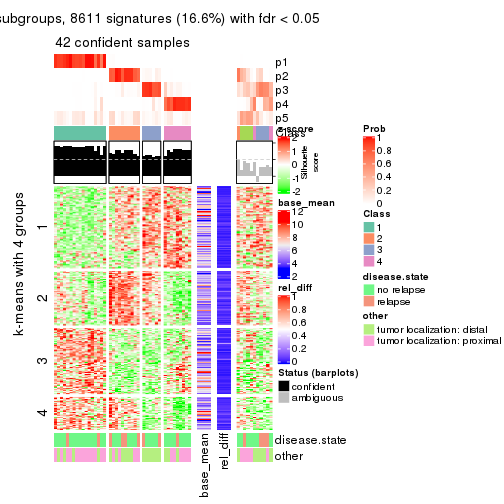
get_signatures(res, k = 6)
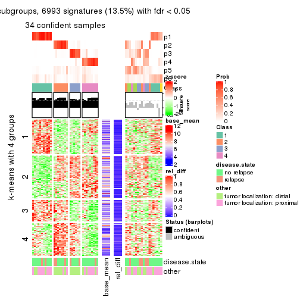
Signature heatmaps where rows are not scaled:
get_signatures(res, k = 2, scale_rows = FALSE)
get_signatures(res, k = 3, scale_rows = FALSE)
get_signatures(res, k = 4, scale_rows = FALSE)

get_signatures(res, k = 5, scale_rows = FALSE)
get_signatures(res, k = 6, scale_rows = FALSE)
Compare the overlap of signatures from different k:
compare_signatures(res)
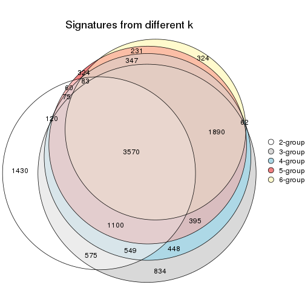
get_signature() returns a data frame invisibly. TO get the list of signatures, the function
call should be assigned to a variable explicitly. In following code, if plot argument is set
to FALSE, no heatmap is plotted while only the differential analysis is performed.
# code only for demonstration
tb = get_signature(res, k = ..., plot = FALSE)
An example of the output of tb is:
#> which_row fdr mean_1 mean_2 scaled_mean_1 scaled_mean_2 km
#> 1 38 0.042760348 8.373488 9.131774 -0.5533452 0.5164555 1
#> 2 40 0.018707592 7.106213 8.469186 -0.6173731 0.5762149 1
#> 3 55 0.019134737 10.221463 11.207825 -0.6159697 0.5749050 1
#> 4 59 0.006059896 5.921854 7.869574 -0.6899429 0.6439467 1
#> 5 60 0.018055526 8.928898 10.211722 -0.6204761 0.5791110 1
#> 6 98 0.009384629 15.714769 14.887706 0.6635654 -0.6193277 2
...
The columns in tb are:
which_row: row indices corresponding to the input matrix.fdr: FDR for the differential test. mean_x: The mean value in group x.scaled_mean_x: The mean value in group x after rows are scaled.km: Row groups if k-means clustering is applied to rows.UMAP plot which shows how samples are separated.
dimension_reduction(res, k = 2, method = "UMAP")
dimension_reduction(res, k = 3, method = "UMAP")
dimension_reduction(res, k = 4, method = "UMAP")
dimension_reduction(res, k = 5, method = "UMAP")

dimension_reduction(res, k = 6, method = "UMAP")
Following heatmap shows how subgroups are split when increasing k:
collect_classes(res)
Test correlation between subgroups and known annotations. If the known annotation is numeric, one-way ANOVA test is applied, and if the known annotation is discrete, chi-squared contingency table test is applied.
test_to_known_factors(res)
#> n disease.state(p) other(p) k
#> SD:skmeans 52 0.323 0.01888 2
#> SD:skmeans 53 0.153 0.02994 3
#> SD:skmeans 49 0.209 0.00382 4
#> SD:skmeans 42 0.254 0.00776 5
#> SD:skmeans 34 0.545 0.01072 6
If matrix rows can be associated to genes, consider to use functional_enrichment(res,
...) to perform function enrichment for the signature genes. See this vignette for more detailed explanations.
The object with results only for a single top-value method and a single partition method can be extracted as:
res = res_list["SD", "pam"]
# you can also extract it by
# res = res_list["SD:pam"]
A summary of res and all the functions that can be applied to it:
res
#> A 'ConsensusPartition' object with k = 2, 3, 4, 5, 6.
#> On a matrix with 51941 rows and 53 columns.
#> Top rows (1000, 2000, 3000, 4000, 5000) are extracted by 'SD' method.
#> Subgroups are detected by 'pam' method.
#> Performed in total 1250 partitions by row resampling.
#> Best k for subgroups seems to be 3.
#>
#> Following methods can be applied to this 'ConsensusPartition' object:
#> [1] "cola_report" "collect_classes" "collect_plots"
#> [4] "collect_stats" "colnames" "compare_signatures"
#> [7] "consensus_heatmap" "dimension_reduction" "functional_enrichment"
#> [10] "get_anno_col" "get_anno" "get_classes"
#> [13] "get_consensus" "get_matrix" "get_membership"
#> [16] "get_param" "get_signatures" "get_stats"
#> [19] "is_best_k" "is_stable_k" "membership_heatmap"
#> [22] "ncol" "nrow" "plot_ecdf"
#> [25] "rownames" "select_partition_number" "show"
#> [28] "suggest_best_k" "test_to_known_factors"
collect_plots() function collects all the plots made from res for all k (number of partitions)
into one single page to provide an easy and fast comparison between different k.
collect_plots(res)
The plots are:
k and the heatmap of
predicted classes for each k.k.k.k.All the plots in panels can be made by individual functions and they are plotted later in this section.
select_partition_number() produces several plots showing different
statistics for choosing “optimized” k. There are following statistics:
k;k, the area increased is defined as \(A_k - A_{k-1}\).The detailed explanations of these statistics can be found in the cola vignette.
Generally speaking, lower PAC score, higher mean silhouette score or higher
concordance corresponds to better partition. Rand index and Jaccard index
measure how similar the current partition is compared to partition with k-1.
If they are too similar, we won't accept k is better than k-1.
select_partition_number(res)
The numeric values for all these statistics can be obtained by get_stats().
get_stats(res)
#> k 1-PAC mean_silhouette concordance area_increased Rand Jaccard
#> 2 2 0.777 0.883 0.950 0.4657 0.531 0.531
#> 3 3 0.874 0.888 0.948 0.4339 0.747 0.547
#> 4 4 0.571 0.630 0.786 0.0956 0.965 0.895
#> 5 5 0.586 0.562 0.731 0.0730 0.880 0.626
#> 6 6 0.664 0.492 0.746 0.0619 0.870 0.503
suggest_best_k() suggests the best \(k\) based on these statistics. The rules are as follows:
suggest_best_k(res)
#> [1] 3
Following shows the table of the partitions (You need to click the show/hide
code output link to see it). The membership matrix (columns with name p*)
is inferred by
clue::cl_consensus()
function with the SE method. Basically the value in the membership matrix
represents the probability to belong to a certain group. The finall class
label for an item is determined with the group with highest probability it
belongs to.
In get_classes() function, the entropy is calculated from the membership
matrix and the silhouette score is calculated from the consensus matrix.
cbind(get_classes(res, k = 2), get_membership(res, k = 2))
#> class entropy silhouette p1 p2
#> GSM452149 2 0.0000 0.954 0.000 1.000
#> GSM452150 2 0.0000 0.954 0.000 1.000
#> GSM452152 2 0.0000 0.954 0.000 1.000
#> GSM452154 2 0.0000 0.954 0.000 1.000
#> GSM452160 2 0.0000 0.954 0.000 1.000
#> GSM452167 2 0.0000 0.954 0.000 1.000
#> GSM452182 1 0.0000 0.923 1.000 0.000
#> GSM452185 2 0.7453 0.726 0.212 0.788
#> GSM452186 2 0.1633 0.937 0.024 0.976
#> GSM452187 2 0.0000 0.954 0.000 1.000
#> GSM452189 1 0.0000 0.923 1.000 0.000
#> GSM452195 2 0.0000 0.954 0.000 1.000
#> GSM452196 2 0.0376 0.952 0.004 0.996
#> GSM452197 1 0.0000 0.923 1.000 0.000
#> GSM452198 2 0.0000 0.954 0.000 1.000
#> GSM452199 2 0.0376 0.952 0.004 0.996
#> GSM452148 1 0.9087 0.553 0.676 0.324
#> GSM452151 2 0.7528 0.720 0.216 0.784
#> GSM452153 1 0.8144 0.642 0.748 0.252
#> GSM452155 2 0.0000 0.954 0.000 1.000
#> GSM452156 2 0.0000 0.954 0.000 1.000
#> GSM452157 1 0.0000 0.923 1.000 0.000
#> GSM452158 2 0.0938 0.947 0.012 0.988
#> GSM452162 1 0.9850 0.322 0.572 0.428
#> GSM452163 1 0.0000 0.923 1.000 0.000
#> GSM452166 2 0.0000 0.954 0.000 1.000
#> GSM452168 1 0.2948 0.887 0.948 0.052
#> GSM452169 1 0.0000 0.923 1.000 0.000
#> GSM452170 2 0.0000 0.954 0.000 1.000
#> GSM452172 2 0.7139 0.748 0.196 0.804
#> GSM452173 1 0.0000 0.923 1.000 0.000
#> GSM452174 1 0.0000 0.923 1.000 0.000
#> GSM452176 2 0.0000 0.954 0.000 1.000
#> GSM452179 1 0.0000 0.923 1.000 0.000
#> GSM452180 1 0.0000 0.923 1.000 0.000
#> GSM452181 2 0.1633 0.937 0.024 0.976
#> GSM452183 1 0.0000 0.923 1.000 0.000
#> GSM452184 2 0.9866 0.215 0.432 0.568
#> GSM452188 1 0.0000 0.923 1.000 0.000
#> GSM452193 2 0.7376 0.732 0.208 0.792
#> GSM452165 2 0.0000 0.954 0.000 1.000
#> GSM452171 2 0.0000 0.954 0.000 1.000
#> GSM452175 1 0.0000 0.923 1.000 0.000
#> GSM452177 2 0.0000 0.954 0.000 1.000
#> GSM452190 1 0.7883 0.686 0.764 0.236
#> GSM452191 2 0.0938 0.947 0.012 0.988
#> GSM452192 2 0.0000 0.954 0.000 1.000
#> GSM452194 2 0.0000 0.954 0.000 1.000
#> GSM452200 2 0.0000 0.954 0.000 1.000
#> GSM452159 1 0.0000 0.923 1.000 0.000
#> GSM452161 2 0.0000 0.954 0.000 1.000
#> GSM452164 2 0.0000 0.954 0.000 1.000
#> GSM452178 2 0.0000 0.954 0.000 1.000
cbind(get_classes(res, k = 3), get_membership(res, k = 3))
#> class entropy silhouette p1 p2 p3
#> GSM452149 3 0.4555 0.780 0.000 0.200 0.800
#> GSM452150 3 0.5810 0.567 0.000 0.336 0.664
#> GSM452152 3 0.0000 0.920 0.000 0.000 1.000
#> GSM452154 3 0.2959 0.879 0.000 0.100 0.900
#> GSM452160 3 0.5216 0.647 0.000 0.260 0.740
#> GSM452167 2 0.6008 0.340 0.000 0.628 0.372
#> GSM452182 1 0.0424 0.988 0.992 0.008 0.000
#> GSM452185 3 0.0592 0.917 0.000 0.012 0.988
#> GSM452186 2 0.0000 0.911 0.000 1.000 0.000
#> GSM452187 3 0.0000 0.920 0.000 0.000 1.000
#> GSM452189 1 0.0000 0.994 1.000 0.000 0.000
#> GSM452195 3 0.5859 0.551 0.000 0.344 0.656
#> GSM452196 2 0.0000 0.911 0.000 1.000 0.000
#> GSM452197 1 0.0000 0.994 1.000 0.000 0.000
#> GSM452198 3 0.2261 0.897 0.000 0.068 0.932
#> GSM452199 2 0.0000 0.911 0.000 1.000 0.000
#> GSM452148 2 0.2448 0.867 0.076 0.924 0.000
#> GSM452151 3 0.0000 0.920 0.000 0.000 1.000
#> GSM452153 1 0.0000 0.994 1.000 0.000 0.000
#> GSM452155 3 0.2625 0.889 0.000 0.084 0.916
#> GSM452156 2 0.1753 0.885 0.000 0.952 0.048
#> GSM452157 1 0.0000 0.994 1.000 0.000 0.000
#> GSM452158 2 0.6008 0.321 0.000 0.628 0.372
#> GSM452162 2 0.2448 0.867 0.076 0.924 0.000
#> GSM452163 1 0.0000 0.994 1.000 0.000 0.000
#> GSM452166 3 0.0000 0.920 0.000 0.000 1.000
#> GSM452168 1 0.0747 0.979 0.984 0.016 0.000
#> GSM452169 1 0.0000 0.994 1.000 0.000 0.000
#> GSM452170 3 0.0000 0.920 0.000 0.000 1.000
#> GSM452172 3 0.0000 0.920 0.000 0.000 1.000
#> GSM452173 1 0.2066 0.933 0.940 0.060 0.000
#> GSM452174 1 0.0000 0.994 1.000 0.000 0.000
#> GSM452176 3 0.0000 0.920 0.000 0.000 1.000
#> GSM452179 1 0.0000 0.994 1.000 0.000 0.000
#> GSM452180 1 0.0000 0.994 1.000 0.000 0.000
#> GSM452181 2 0.0000 0.911 0.000 1.000 0.000
#> GSM452183 1 0.0000 0.994 1.000 0.000 0.000
#> GSM452184 3 0.0592 0.913 0.012 0.000 0.988
#> GSM452188 1 0.0000 0.994 1.000 0.000 0.000
#> GSM452193 3 0.3116 0.873 0.000 0.108 0.892
#> GSM452165 2 0.0000 0.911 0.000 1.000 0.000
#> GSM452171 2 0.1753 0.882 0.000 0.952 0.048
#> GSM452175 1 0.0000 0.994 1.000 0.000 0.000
#> GSM452177 3 0.2165 0.899 0.000 0.064 0.936
#> GSM452190 2 0.2356 0.870 0.072 0.928 0.000
#> GSM452191 2 0.0000 0.911 0.000 1.000 0.000
#> GSM452192 3 0.0000 0.920 0.000 0.000 1.000
#> GSM452194 3 0.0000 0.920 0.000 0.000 1.000
#> GSM452200 3 0.0000 0.920 0.000 0.000 1.000
#> GSM452159 1 0.0000 0.994 1.000 0.000 0.000
#> GSM452161 2 0.0000 0.911 0.000 1.000 0.000
#> GSM452164 2 0.0592 0.907 0.000 0.988 0.012
#> GSM452178 3 0.0000 0.920 0.000 0.000 1.000
cbind(get_classes(res, k = 4), get_membership(res, k = 4))
#> class entropy silhouette p1 p2 p3 p4
#> GSM452149 3 0.5565 0.6431 0.000 0.260 0.684 0.056
#> GSM452150 3 0.7731 0.1963 0.000 0.376 0.396 0.228
#> GSM452152 3 0.4331 0.7378 0.000 0.000 0.712 0.288
#> GSM452154 3 0.3074 0.7356 0.000 0.152 0.848 0.000
#> GSM452160 3 0.7486 0.3512 0.000 0.272 0.500 0.228
#> GSM452167 2 0.7640 0.0498 0.000 0.456 0.316 0.228
#> GSM452182 4 0.4564 0.8742 0.328 0.000 0.000 0.672
#> GSM452185 3 0.1082 0.7869 0.004 0.020 0.972 0.004
#> GSM452186 2 0.0000 0.8183 0.000 1.000 0.000 0.000
#> GSM452187 3 0.3569 0.7493 0.000 0.000 0.804 0.196
#> GSM452189 1 0.4888 -0.2802 0.588 0.000 0.000 0.412
#> GSM452195 3 0.7214 0.3622 0.000 0.380 0.476 0.144
#> GSM452196 2 0.0000 0.8183 0.000 1.000 0.000 0.000
#> GSM452197 1 0.3569 0.5065 0.804 0.000 0.000 0.196
#> GSM452198 3 0.2610 0.7732 0.000 0.088 0.900 0.012
#> GSM452199 2 0.0000 0.8183 0.000 1.000 0.000 0.000
#> GSM452148 2 0.3569 0.6633 0.000 0.804 0.000 0.196
#> GSM452151 3 0.2345 0.7696 0.000 0.000 0.900 0.100
#> GSM452153 4 0.5204 0.8496 0.376 0.000 0.012 0.612
#> GSM452155 3 0.5116 0.7324 0.000 0.128 0.764 0.108
#> GSM452156 2 0.3497 0.7857 0.000 0.852 0.024 0.124
#> GSM452157 1 0.0000 0.7100 1.000 0.000 0.000 0.000
#> GSM452158 2 0.4500 0.5088 0.000 0.684 0.316 0.000
#> GSM452162 2 0.4661 0.6565 0.000 0.728 0.016 0.256
#> GSM452163 1 0.0188 0.7088 0.996 0.000 0.000 0.004
#> GSM452166 3 0.1792 0.7882 0.000 0.000 0.932 0.068
#> GSM452168 4 0.4564 0.8742 0.328 0.000 0.000 0.672
#> GSM452169 1 0.0000 0.7100 1.000 0.000 0.000 0.000
#> GSM452170 3 0.2973 0.7721 0.000 0.000 0.856 0.144
#> GSM452172 3 0.2345 0.7696 0.000 0.000 0.900 0.100
#> GSM452173 4 0.5558 0.7588 0.432 0.020 0.000 0.548
#> GSM452174 1 0.0188 0.7069 0.996 0.004 0.000 0.000
#> GSM452176 3 0.0188 0.7856 0.000 0.000 0.996 0.004
#> GSM452179 1 0.0000 0.7100 1.000 0.000 0.000 0.000
#> GSM452180 1 0.1792 0.6735 0.932 0.000 0.000 0.068
#> GSM452181 2 0.0000 0.8183 0.000 1.000 0.000 0.000
#> GSM452183 1 0.3528 0.5142 0.808 0.000 0.000 0.192
#> GSM452184 3 0.5110 0.4392 0.016 0.000 0.656 0.328
#> GSM452188 1 0.5000 -0.5248 0.504 0.000 0.000 0.496
#> GSM452193 3 0.3494 0.7259 0.000 0.172 0.824 0.004
#> GSM452165 2 0.0469 0.8186 0.000 0.988 0.000 0.012
#> GSM452171 2 0.5650 0.6906 0.000 0.716 0.104 0.180
#> GSM452175 1 0.4967 -0.3925 0.548 0.000 0.000 0.452
#> GSM452177 3 0.5355 0.7232 0.000 0.084 0.736 0.180
#> GSM452190 2 0.3074 0.7104 0.000 0.848 0.000 0.152
#> GSM452191 2 0.3400 0.7583 0.000 0.820 0.000 0.180
#> GSM452192 3 0.4719 0.7287 0.000 0.048 0.772 0.180
#> GSM452194 3 0.3569 0.7493 0.000 0.000 0.804 0.196
#> GSM452200 3 0.0188 0.7856 0.000 0.000 0.996 0.004
#> GSM452159 1 0.0592 0.7060 0.984 0.000 0.000 0.016
#> GSM452161 2 0.4018 0.6845 0.000 0.772 0.224 0.004
#> GSM452164 2 0.2586 0.8006 0.000 0.912 0.040 0.048
#> GSM452178 3 0.1557 0.7895 0.000 0.000 0.944 0.056
cbind(get_classes(res, k = 5), get_membership(res, k = 5))
#> class entropy silhouette p1 p2 p3 p4 p5
#> GSM452149 3 0.5787 0.3682 0.000 0.240 0.608 0.152 0.000
#> GSM452150 3 0.5978 0.1826 0.000 0.284 0.608 0.028 0.080
#> GSM452152 3 0.4307 -0.1671 0.000 0.000 0.504 0.496 0.000
#> GSM452154 3 0.5543 0.4412 0.000 0.136 0.640 0.224 0.000
#> GSM452160 3 0.6445 0.3331 0.000 0.272 0.588 0.060 0.080
#> GSM452167 3 0.5512 0.2059 0.000 0.280 0.632 0.008 0.080
#> GSM452182 5 0.1732 0.6612 0.080 0.000 0.000 0.000 0.920
#> GSM452185 3 0.4632 0.4788 0.000 0.008 0.684 0.284 0.024
#> GSM452186 2 0.2127 0.7599 0.000 0.892 0.108 0.000 0.000
#> GSM452187 3 0.3438 0.5146 0.000 0.000 0.808 0.172 0.020
#> GSM452189 5 0.4302 0.2015 0.480 0.000 0.000 0.000 0.520
#> GSM452195 3 0.5180 0.2968 0.000 0.312 0.624 0.064 0.000
#> GSM452196 2 0.2127 0.7600 0.000 0.892 0.108 0.000 0.000
#> GSM452197 1 0.3074 0.6953 0.804 0.000 0.000 0.000 0.196
#> GSM452198 3 0.4146 0.5230 0.000 0.020 0.780 0.176 0.024
#> GSM452199 2 0.2179 0.7589 0.000 0.888 0.112 0.000 0.000
#> GSM452148 2 0.3039 0.6761 0.000 0.808 0.000 0.000 0.192
#> GSM452151 4 0.1732 0.7518 0.000 0.000 0.080 0.920 0.000
#> GSM452153 5 0.3561 0.6067 0.260 0.000 0.000 0.000 0.740
#> GSM452155 4 0.6089 0.1229 0.000 0.144 0.324 0.532 0.000
#> GSM452156 2 0.5232 0.5487 0.000 0.648 0.084 0.268 0.000
#> GSM452157 1 0.0000 0.9051 1.000 0.000 0.000 0.000 0.000
#> GSM452158 2 0.5059 0.5465 0.000 0.700 0.124 0.176 0.000
#> GSM452162 2 0.5269 0.6392 0.000 0.648 0.072 0.004 0.276
#> GSM452163 1 0.0404 0.8985 0.988 0.000 0.000 0.000 0.012
#> GSM452166 3 0.4192 0.3132 0.000 0.000 0.596 0.404 0.000
#> GSM452168 5 0.1732 0.6612 0.080 0.000 0.000 0.000 0.920
#> GSM452169 1 0.0000 0.9051 1.000 0.000 0.000 0.000 0.000
#> GSM452170 4 0.2230 0.7246 0.000 0.000 0.116 0.884 0.000
#> GSM452172 4 0.1544 0.7535 0.000 0.000 0.068 0.932 0.000
#> GSM452173 5 0.4571 0.5568 0.312 0.020 0.000 0.004 0.664
#> GSM452174 1 0.0000 0.9051 1.000 0.000 0.000 0.000 0.000
#> GSM452176 3 0.4101 0.4044 0.000 0.000 0.628 0.372 0.000
#> GSM452179 1 0.0000 0.9051 1.000 0.000 0.000 0.000 0.000
#> GSM452180 1 0.1638 0.8652 0.932 0.000 0.000 0.004 0.064
#> GSM452181 2 0.0000 0.7606 0.000 1.000 0.000 0.000 0.000
#> GSM452183 1 0.3160 0.7052 0.808 0.000 0.000 0.004 0.188
#> GSM452184 5 0.6103 -0.0114 0.000 0.000 0.300 0.156 0.544
#> GSM452188 5 0.3534 0.5685 0.256 0.000 0.000 0.000 0.744
#> GSM452193 3 0.4581 0.4877 0.000 0.072 0.732 0.196 0.000
#> GSM452165 2 0.2253 0.7583 0.000 0.920 0.016 0.028 0.036
#> GSM452171 2 0.6202 0.5465 0.000 0.568 0.320 0.032 0.080
#> GSM452175 5 0.4126 0.3986 0.380 0.000 0.000 0.000 0.620
#> GSM452177 3 0.4008 0.5096 0.000 0.020 0.820 0.080 0.080
#> GSM452190 2 0.2719 0.7168 0.000 0.852 0.000 0.004 0.144
#> GSM452191 2 0.3956 0.7116 0.000 0.808 0.108 0.004 0.080
#> GSM452192 3 0.6043 0.4515 0.000 0.112 0.680 0.128 0.080
#> GSM452194 3 0.3438 0.5146 0.000 0.000 0.808 0.172 0.020
#> GSM452200 3 0.4182 0.3696 0.000 0.000 0.600 0.400 0.000
#> GSM452159 1 0.0510 0.9005 0.984 0.000 0.000 0.000 0.016
#> GSM452161 2 0.5456 0.6312 0.000 0.708 0.080 0.172 0.040
#> GSM452164 2 0.4118 0.5759 0.000 0.660 0.336 0.004 0.000
#> GSM452178 3 0.3452 0.5004 0.000 0.000 0.756 0.244 0.000
cbind(get_classes(res, k = 6), get_membership(res, k = 6))
#> class entropy silhouette p1 p2 p3 p4 p5 p6
#> GSM452149 2 0.5965 0.0992 0.000 0.436 0.368 0.004 0.192 0.000
#> GSM452150 5 0.4736 0.4187 0.000 0.156 0.164 0.000 0.680 0.000
#> GSM452152 3 0.3867 -0.1416 0.000 0.000 0.512 0.488 0.000 0.000
#> GSM452154 3 0.4386 0.3134 0.000 0.016 0.516 0.004 0.464 0.000
#> GSM452160 5 0.5391 0.4200 0.000 0.176 0.244 0.000 0.580 0.000
#> GSM452167 5 0.5225 0.3916 0.000 0.204 0.184 0.000 0.612 0.000
#> GSM452182 6 0.0000 0.6649 0.000 0.000 0.000 0.000 0.000 1.000
#> GSM452185 3 0.2199 0.6928 0.000 0.020 0.892 0.000 0.088 0.000
#> GSM452186 2 0.1327 0.5498 0.000 0.936 0.000 0.000 0.064 0.000
#> GSM452187 3 0.0547 0.6969 0.000 0.000 0.980 0.000 0.020 0.000
#> GSM452189 6 0.3975 0.2080 0.452 0.000 0.000 0.004 0.000 0.544
#> GSM452195 2 0.4685 0.3351 0.000 0.568 0.040 0.004 0.388 0.000
#> GSM452196 2 0.0146 0.5480 0.000 0.996 0.000 0.000 0.004 0.000
#> GSM452197 1 0.2730 0.7254 0.808 0.000 0.000 0.000 0.000 0.192
#> GSM452198 3 0.4631 0.4857 0.000 0.140 0.728 0.020 0.112 0.000
#> GSM452199 2 0.0363 0.5488 0.000 0.988 0.000 0.000 0.012 0.000
#> GSM452148 2 0.2805 0.4568 0.000 0.812 0.000 0.000 0.004 0.184
#> GSM452151 4 0.0713 0.7922 0.000 0.000 0.028 0.972 0.000 0.000
#> GSM452153 6 0.2941 0.6234 0.220 0.000 0.000 0.000 0.000 0.780
#> GSM452155 5 0.5032 -0.4484 0.000 0.004 0.060 0.464 0.472 0.000
#> GSM452156 4 0.5514 0.2081 0.000 0.112 0.004 0.464 0.420 0.000
#> GSM452157 1 0.0000 0.9121 1.000 0.000 0.000 0.000 0.000 0.000
#> GSM452158 2 0.4393 0.3548 0.000 0.500 0.016 0.004 0.480 0.000
#> GSM452162 5 0.5852 0.1213 0.000 0.388 0.000 0.000 0.420 0.192
#> GSM452163 1 0.0458 0.9034 0.984 0.000 0.000 0.000 0.000 0.016
#> GSM452166 3 0.3076 0.6318 0.000 0.000 0.760 0.240 0.000 0.000
#> GSM452168 6 0.0000 0.6649 0.000 0.000 0.000 0.000 0.000 1.000
#> GSM452169 1 0.0000 0.9121 1.000 0.000 0.000 0.000 0.000 0.000
#> GSM452170 4 0.0713 0.7922 0.000 0.000 0.028 0.972 0.000 0.000
#> GSM452172 4 0.0363 0.7855 0.000 0.000 0.012 0.988 0.000 0.000
#> GSM452173 6 0.4180 0.5679 0.276 0.020 0.000 0.008 0.004 0.692
#> GSM452174 1 0.0000 0.9121 1.000 0.000 0.000 0.000 0.000 0.000
#> GSM452176 3 0.2219 0.6951 0.000 0.000 0.864 0.136 0.000 0.000
#> GSM452179 1 0.0000 0.9121 1.000 0.000 0.000 0.000 0.000 0.000
#> GSM452180 1 0.1471 0.8764 0.932 0.000 0.000 0.004 0.000 0.064
#> GSM452181 2 0.2260 0.5081 0.000 0.860 0.000 0.000 0.140 0.000
#> GSM452183 1 0.3023 0.7325 0.808 0.000 0.000 0.008 0.004 0.180
#> GSM452184 6 0.3499 0.3457 0.000 0.000 0.320 0.000 0.000 0.680
#> GSM452188 6 0.2562 0.6119 0.172 0.000 0.000 0.000 0.000 0.828
#> GSM452193 3 0.5484 0.4063 0.000 0.148 0.568 0.004 0.280 0.000
#> GSM452165 2 0.3843 0.3570 0.000 0.548 0.000 0.000 0.452 0.000
#> GSM452171 2 0.4097 -0.3036 0.000 0.500 0.008 0.000 0.492 0.000
#> GSM452175 6 0.3563 0.4201 0.336 0.000 0.000 0.000 0.000 0.664
#> GSM452177 5 0.5163 0.4050 0.000 0.140 0.252 0.000 0.608 0.000
#> GSM452190 2 0.2573 0.4957 0.000 0.856 0.000 0.008 0.004 0.132
#> GSM452191 5 0.3854 0.0525 0.000 0.464 0.000 0.000 0.536 0.000
#> GSM452192 5 0.5313 0.2778 0.000 0.108 0.384 0.000 0.508 0.000
#> GSM452194 3 0.0547 0.6969 0.000 0.000 0.980 0.000 0.020 0.000
#> GSM452200 3 0.2378 0.6878 0.000 0.000 0.848 0.152 0.000 0.000
#> GSM452159 1 0.0458 0.9081 0.984 0.000 0.000 0.000 0.000 0.016
#> GSM452161 5 0.4035 -0.2033 0.000 0.296 0.020 0.004 0.680 0.000
#> GSM452164 2 0.5008 0.3535 0.000 0.644 0.168 0.000 0.188 0.000
#> GSM452178 3 0.0000 0.7015 0.000 0.000 1.000 0.000 0.000 0.000
Heatmaps for the consensus matrix. It visualizes the probability of two samples to be in a same group.
consensus_heatmap(res, k = 2)
consensus_heatmap(res, k = 3)
consensus_heatmap(res, k = 4)
consensus_heatmap(res, k = 5)
consensus_heatmap(res, k = 6)
Heatmaps for the membership of samples in all partitions to see how consistent they are:
membership_heatmap(res, k = 2)
membership_heatmap(res, k = 3)
membership_heatmap(res, k = 4)
membership_heatmap(res, k = 5)
membership_heatmap(res, k = 6)
As soon as we have had the classes for columns, we can look for signatures which are significantly different between classes which can be candidate marks for certain classes. Following are the heatmaps for signatures.
Signature heatmaps where rows are scaled:
get_signatures(res, k = 2)
get_signatures(res, k = 3)
get_signatures(res, k = 4)
get_signatures(res, k = 5)
get_signatures(res, k = 6)
Signature heatmaps where rows are not scaled:
get_signatures(res, k = 2, scale_rows = FALSE)
get_signatures(res, k = 3, scale_rows = FALSE)
get_signatures(res, k = 4, scale_rows = FALSE)
get_signatures(res, k = 5, scale_rows = FALSE)
get_signatures(res, k = 6, scale_rows = FALSE)
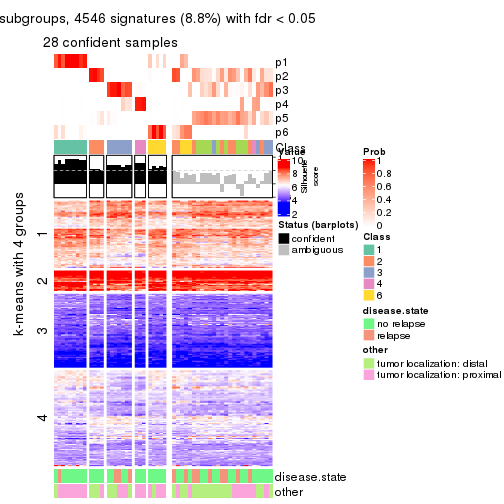
Compare the overlap of signatures from different k:
compare_signatures(res)
get_signature() returns a data frame invisibly. TO get the list of signatures, the function
call should be assigned to a variable explicitly. In following code, if plot argument is set
to FALSE, no heatmap is plotted while only the differential analysis is performed.
# code only for demonstration
tb = get_signature(res, k = ..., plot = FALSE)
An example of the output of tb is:
#> which_row fdr mean_1 mean_2 scaled_mean_1 scaled_mean_2 km
#> 1 38 0.042760348 8.373488 9.131774 -0.5533452 0.5164555 1
#> 2 40 0.018707592 7.106213 8.469186 -0.6173731 0.5762149 1
#> 3 55 0.019134737 10.221463 11.207825 -0.6159697 0.5749050 1
#> 4 59 0.006059896 5.921854 7.869574 -0.6899429 0.6439467 1
#> 5 60 0.018055526 8.928898 10.211722 -0.6204761 0.5791110 1
#> 6 98 0.009384629 15.714769 14.887706 0.6635654 -0.6193277 2
...
The columns in tb are:
which_row: row indices corresponding to the input matrix.fdr: FDR for the differential test. mean_x: The mean value in group x.scaled_mean_x: The mean value in group x after rows are scaled.km: Row groups if k-means clustering is applied to rows.UMAP plot which shows how samples are separated.
dimension_reduction(res, k = 2, method = "UMAP")
dimension_reduction(res, k = 3, method = "UMAP")
dimension_reduction(res, k = 4, method = "UMAP")
dimension_reduction(res, k = 5, method = "UMAP")
dimension_reduction(res, k = 6, method = "UMAP")
Following heatmap shows how subgroups are split when increasing k:
collect_classes(res)
Test correlation between subgroups and known annotations. If the known annotation is numeric, one-way ANOVA test is applied, and if the known annotation is discrete, chi-squared contingency table test is applied.
test_to_known_factors(res)
#> n disease.state(p) other(p) k
#> SD:pam 51 0.464 0.0514 2
#> SD:pam 51 0.109 0.0981 3
#> SD:pam 45 0.216 0.1263 4
#> SD:pam 36 0.075 0.0397 5
#> SD:pam 28 0.150 0.0621 6
If matrix rows can be associated to genes, consider to use functional_enrichment(res,
...) to perform function enrichment for the signature genes. See this vignette for more detailed explanations.
The object with results only for a single top-value method and a single partition method can be extracted as:
res = res_list["SD", "mclust"]
# you can also extract it by
# res = res_list["SD:mclust"]
A summary of res and all the functions that can be applied to it:
res
#> A 'ConsensusPartition' object with k = 2, 3, 4, 5, 6.
#> On a matrix with 51941 rows and 53 columns.
#> Top rows (1000, 2000, 3000, 4000, 5000) are extracted by 'SD' method.
#> Subgroups are detected by 'mclust' method.
#> Performed in total 1250 partitions by row resampling.
#> Best k for subgroups seems to be 2.
#>
#> Following methods can be applied to this 'ConsensusPartition' object:
#> [1] "cola_report" "collect_classes" "collect_plots"
#> [4] "collect_stats" "colnames" "compare_signatures"
#> [7] "consensus_heatmap" "dimension_reduction" "functional_enrichment"
#> [10] "get_anno_col" "get_anno" "get_classes"
#> [13] "get_consensus" "get_matrix" "get_membership"
#> [16] "get_param" "get_signatures" "get_stats"
#> [19] "is_best_k" "is_stable_k" "membership_heatmap"
#> [22] "ncol" "nrow" "plot_ecdf"
#> [25] "rownames" "select_partition_number" "show"
#> [28] "suggest_best_k" "test_to_known_factors"
collect_plots() function collects all the plots made from res for all k (number of partitions)
into one single page to provide an easy and fast comparison between different k.
collect_plots(res)
The plots are:
k and the heatmap of
predicted classes for each k.k.k.k.All the plots in panels can be made by individual functions and they are plotted later in this section.
select_partition_number() produces several plots showing different
statistics for choosing “optimized” k. There are following statistics:
k;k, the area increased is defined as \(A_k - A_{k-1}\).The detailed explanations of these statistics can be found in the cola vignette.
Generally speaking, lower PAC score, higher mean silhouette score or higher
concordance corresponds to better partition. Rand index and Jaccard index
measure how similar the current partition is compared to partition with k-1.
If they are too similar, we won't accept k is better than k-1.
select_partition_number(res)
The numeric values for all these statistics can be obtained by get_stats().
get_stats(res)
#> k 1-PAC mean_silhouette concordance area_increased Rand Jaccard
#> 2 2 1.000 0.978 0.981 0.4611 0.531 0.531
#> 3 3 0.626 0.590 0.809 0.3678 0.845 0.710
#> 4 4 0.613 0.668 0.816 0.0746 0.848 0.665
#> 5 5 0.585 0.618 0.767 0.0978 0.847 0.614
#> 6 6 0.589 0.524 0.673 0.0612 0.923 0.720
suggest_best_k() suggests the best \(k\) based on these statistics. The rules are as follows:
suggest_best_k(res)
#> [1] 2
Following shows the table of the partitions (You need to click the show/hide
code output link to see it). The membership matrix (columns with name p*)
is inferred by
clue::cl_consensus()
function with the SE method. Basically the value in the membership matrix
represents the probability to belong to a certain group. The finall class
label for an item is determined with the group with highest probability it
belongs to.
In get_classes() function, the entropy is calculated from the membership
matrix and the silhouette score is calculated from the consensus matrix.
cbind(get_classes(res, k = 2), get_membership(res, k = 2))
#> class entropy silhouette p1 p2
#> GSM452149 2 0.0000 0.989 0.000 1.000
#> GSM452150 2 0.0000 0.989 0.000 1.000
#> GSM452152 2 0.1414 0.981 0.020 0.980
#> GSM452154 2 0.0376 0.990 0.004 0.996
#> GSM452160 2 0.0000 0.989 0.000 1.000
#> GSM452167 2 0.0000 0.989 0.000 1.000
#> GSM452182 1 0.1414 0.986 0.980 0.020
#> GSM452185 2 0.0376 0.990 0.004 0.996
#> GSM452186 2 0.0376 0.990 0.004 0.996
#> GSM452187 2 0.0000 0.989 0.000 1.000
#> GSM452189 1 0.1414 0.986 0.980 0.020
#> GSM452195 2 0.1184 0.978 0.016 0.984
#> GSM452196 2 0.0000 0.989 0.000 1.000
#> GSM452197 1 0.1414 0.986 0.980 0.020
#> GSM452198 2 0.0376 0.990 0.004 0.996
#> GSM452199 2 0.0000 0.989 0.000 1.000
#> GSM452148 1 0.1414 0.986 0.980 0.020
#> GSM452151 2 0.2948 0.952 0.052 0.948
#> GSM452153 1 0.1414 0.986 0.980 0.020
#> GSM452155 2 0.1414 0.981 0.020 0.980
#> GSM452156 2 0.1414 0.981 0.020 0.980
#> GSM452157 1 0.1414 0.986 0.980 0.020
#> GSM452158 2 0.0000 0.989 0.000 1.000
#> GSM452162 2 0.4298 0.912 0.088 0.912
#> GSM452163 1 0.1414 0.986 0.980 0.020
#> GSM452166 2 0.0672 0.989 0.008 0.992
#> GSM452168 1 0.1414 0.986 0.980 0.020
#> GSM452169 1 0.1414 0.986 0.980 0.020
#> GSM452170 2 0.1633 0.981 0.024 0.976
#> GSM452172 2 0.1414 0.981 0.020 0.980
#> GSM452173 1 0.1414 0.986 0.980 0.020
#> GSM452174 1 0.1414 0.986 0.980 0.020
#> GSM452176 2 0.0672 0.989 0.008 0.992
#> GSM452179 1 0.1414 0.986 0.980 0.020
#> GSM452180 1 0.1414 0.986 0.980 0.020
#> GSM452181 2 0.0376 0.990 0.004 0.996
#> GSM452183 1 0.1414 0.986 0.980 0.020
#> GSM452184 1 0.8267 0.668 0.740 0.260
#> GSM452188 1 0.1414 0.986 0.980 0.020
#> GSM452193 2 0.0376 0.990 0.004 0.996
#> GSM452165 2 0.0376 0.990 0.004 0.996
#> GSM452171 2 0.1414 0.981 0.020 0.980
#> GSM452175 1 0.1414 0.986 0.980 0.020
#> GSM452177 2 0.0376 0.990 0.004 0.996
#> GSM452190 1 0.1633 0.982 0.976 0.024
#> GSM452191 2 0.0376 0.990 0.004 0.996
#> GSM452192 2 0.0000 0.989 0.000 1.000
#> GSM452194 2 0.0376 0.990 0.004 0.996
#> GSM452200 2 0.0672 0.989 0.008 0.992
#> GSM452159 1 0.1414 0.986 0.980 0.020
#> GSM452161 2 0.1414 0.981 0.020 0.980
#> GSM452164 2 0.2236 0.977 0.036 0.964
#> GSM452178 2 0.0376 0.990 0.004 0.996
cbind(get_classes(res, k = 3), get_membership(res, k = 3))
#> class entropy silhouette p1 p2 p3
#> GSM452149 2 0.6154 0.5053 0.000 0.592 0.408
#> GSM452150 2 0.0747 0.5055 0.000 0.984 0.016
#> GSM452152 2 0.6308 -0.2972 0.000 0.508 0.492
#> GSM452154 2 0.6154 0.5053 0.000 0.592 0.408
#> GSM452160 2 0.0000 0.4990 0.000 1.000 0.000
#> GSM452167 2 0.6154 0.5053 0.000 0.592 0.408
#> GSM452182 1 0.0424 0.9623 0.992 0.000 0.008
#> GSM452185 2 0.6168 0.5045 0.000 0.588 0.412
#> GSM452186 2 0.6154 0.5053 0.000 0.592 0.408
#> GSM452187 2 0.1031 0.4859 0.000 0.976 0.024
#> GSM452189 1 0.0424 0.9620 0.992 0.008 0.000
#> GSM452195 2 0.6291 0.4222 0.000 0.532 0.468
#> GSM452196 2 0.6215 0.4926 0.000 0.572 0.428
#> GSM452197 1 0.0237 0.9636 0.996 0.000 0.004
#> GSM452198 2 0.2066 0.4829 0.000 0.940 0.060
#> GSM452199 2 0.6235 0.4835 0.000 0.564 0.436
#> GSM452148 1 0.6239 0.7483 0.768 0.072 0.160
#> GSM452151 3 0.2590 0.5078 0.004 0.072 0.924
#> GSM452153 1 0.3755 0.8364 0.872 0.008 0.120
#> GSM452155 3 0.6045 0.0175 0.000 0.380 0.620
#> GSM452156 3 0.6154 0.2824 0.000 0.408 0.592
#> GSM452157 1 0.0424 0.9620 0.992 0.008 0.000
#> GSM452158 2 0.6299 0.3912 0.000 0.524 0.476
#> GSM452162 3 0.3715 0.4864 0.004 0.128 0.868
#> GSM452163 1 0.0000 0.9644 1.000 0.000 0.000
#> GSM452166 2 0.3752 0.3575 0.000 0.856 0.144
#> GSM452168 1 0.0661 0.9617 0.988 0.004 0.008
#> GSM452169 1 0.0000 0.9644 1.000 0.000 0.000
#> GSM452170 3 0.5926 0.3450 0.000 0.356 0.644
#> GSM452172 3 0.6143 0.3938 0.012 0.304 0.684
#> GSM452173 1 0.0424 0.9620 0.992 0.008 0.000
#> GSM452174 1 0.0000 0.9644 1.000 0.000 0.000
#> GSM452176 2 0.3752 0.3575 0.000 0.856 0.144
#> GSM452179 1 0.0000 0.9644 1.000 0.000 0.000
#> GSM452180 1 0.0000 0.9644 1.000 0.000 0.000
#> GSM452181 2 0.6299 0.3912 0.000 0.524 0.476
#> GSM452183 1 0.0424 0.9620 0.992 0.008 0.000
#> GSM452184 3 0.8264 0.2974 0.356 0.088 0.556
#> GSM452188 1 0.0000 0.9644 1.000 0.000 0.000
#> GSM452193 2 0.6154 0.5053 0.000 0.592 0.408
#> GSM452165 2 0.6204 0.4958 0.000 0.576 0.424
#> GSM452171 2 0.4346 0.5077 0.000 0.816 0.184
#> GSM452175 1 0.0000 0.9644 1.000 0.000 0.000
#> GSM452177 2 0.2625 0.5143 0.000 0.916 0.084
#> GSM452190 1 0.4921 0.8154 0.816 0.020 0.164
#> GSM452191 2 0.6252 0.4834 0.000 0.556 0.444
#> GSM452192 2 0.0237 0.4971 0.000 0.996 0.004
#> GSM452194 2 0.1031 0.4861 0.000 0.976 0.024
#> GSM452200 2 0.3752 0.3575 0.000 0.856 0.144
#> GSM452159 1 0.0000 0.9644 1.000 0.000 0.000
#> GSM452161 2 0.6309 0.3568 0.000 0.504 0.496
#> GSM452164 3 0.5465 0.2944 0.000 0.288 0.712
#> GSM452178 2 0.0747 0.5026 0.000 0.984 0.016
cbind(get_classes(res, k = 4), get_membership(res, k = 4))
#> class entropy silhouette p1 p2 p3 p4
#> GSM452149 3 0.0000 0.7455 0.000 0.000 1.000 0.000
#> GSM452150 3 0.4485 0.6720 0.000 0.200 0.772 0.028
#> GSM452152 4 0.5565 0.4468 0.000 0.056 0.260 0.684
#> GSM452154 3 0.0657 0.7444 0.000 0.004 0.984 0.012
#> GSM452160 3 0.4635 0.6675 0.000 0.216 0.756 0.028
#> GSM452167 3 0.1211 0.7465 0.000 0.040 0.960 0.000
#> GSM452182 1 0.0469 0.8904 0.988 0.000 0.000 0.012
#> GSM452185 3 0.3501 0.6864 0.000 0.132 0.848 0.020
#> GSM452186 3 0.3450 0.7180 0.000 0.156 0.836 0.008
#> GSM452187 3 0.4655 0.6684 0.000 0.208 0.760 0.032
#> GSM452189 1 0.1489 0.8856 0.952 0.044 0.000 0.004
#> GSM452195 3 0.1743 0.7443 0.000 0.056 0.940 0.004
#> GSM452196 3 0.2973 0.7226 0.000 0.144 0.856 0.000
#> GSM452197 1 0.0804 0.8926 0.980 0.008 0.000 0.012
#> GSM452198 3 0.5195 0.6205 0.000 0.276 0.692 0.032
#> GSM452199 3 0.2973 0.7226 0.000 0.144 0.856 0.000
#> GSM452148 1 0.7577 0.5075 0.524 0.344 0.036 0.096
#> GSM452151 4 0.4220 0.4233 0.004 0.056 0.112 0.828
#> GSM452153 1 0.4075 0.8367 0.856 0.064 0.048 0.032
#> GSM452155 3 0.4948 -0.0348 0.000 0.000 0.560 0.440
#> GSM452156 4 0.4955 0.2294 0.000 0.000 0.444 0.556
#> GSM452157 1 0.3363 0.8597 0.884 0.072 0.020 0.024
#> GSM452158 3 0.2676 0.7400 0.000 0.092 0.896 0.012
#> GSM452162 3 0.7300 -0.0871 0.000 0.180 0.516 0.304
#> GSM452163 1 0.1174 0.8903 0.968 0.012 0.000 0.020
#> GSM452166 4 0.7657 -0.3917 0.000 0.280 0.256 0.464
#> GSM452168 1 0.0779 0.8900 0.980 0.004 0.000 0.016
#> GSM452169 1 0.0336 0.8886 0.992 0.008 0.000 0.000
#> GSM452170 4 0.1388 0.1677 0.000 0.028 0.012 0.960
#> GSM452172 4 0.3497 0.3797 0.008 0.056 0.060 0.876
#> GSM452173 1 0.4393 0.8215 0.816 0.140 0.020 0.024
#> GSM452174 1 0.0895 0.8905 0.976 0.004 0.000 0.020
#> GSM452176 2 0.5220 1.0000 0.000 0.568 0.008 0.424
#> GSM452179 1 0.1042 0.8900 0.972 0.008 0.000 0.020
#> GSM452180 1 0.0336 0.8886 0.992 0.008 0.000 0.000
#> GSM452181 3 0.3196 0.7239 0.000 0.136 0.856 0.008
#> GSM452183 1 0.2973 0.8568 0.884 0.096 0.020 0.000
#> GSM452184 1 0.7636 0.5766 0.616 0.128 0.188 0.068
#> GSM452188 1 0.0000 0.8901 1.000 0.000 0.000 0.000
#> GSM452193 3 0.3219 0.7027 0.000 0.112 0.868 0.020
#> GSM452165 3 0.2973 0.7226 0.000 0.144 0.856 0.000
#> GSM452171 3 0.4328 0.6941 0.000 0.244 0.748 0.008
#> GSM452175 1 0.0000 0.8901 1.000 0.000 0.000 0.000
#> GSM452177 3 0.4214 0.6807 0.000 0.204 0.780 0.016
#> GSM452190 1 0.7652 0.5015 0.520 0.344 0.040 0.096
#> GSM452191 3 0.3074 0.7064 0.000 0.152 0.848 0.000
#> GSM452192 3 0.5200 0.6193 0.000 0.264 0.700 0.036
#> GSM452194 3 0.4655 0.6678 0.000 0.208 0.760 0.032
#> GSM452200 2 0.5220 1.0000 0.000 0.568 0.008 0.424
#> GSM452159 1 0.0000 0.8901 1.000 0.000 0.000 0.000
#> GSM452161 3 0.1890 0.7449 0.000 0.056 0.936 0.008
#> GSM452164 3 0.5321 0.5069 0.000 0.056 0.716 0.228
#> GSM452178 3 0.4617 0.6699 0.000 0.204 0.764 0.032
cbind(get_classes(res, k = 5), get_membership(res, k = 5))
#> class entropy silhouette p1 p2 p3 p4 p5
#> GSM452149 3 0.2054 0.699 0.000 0.072 0.916 0.004 0.008
#> GSM452150 3 0.0162 0.707 0.000 0.000 0.996 0.004 0.000
#> GSM452152 4 0.4973 0.543 0.000 0.004 0.192 0.712 0.092
#> GSM452154 3 0.2005 0.705 0.000 0.056 0.924 0.004 0.016
#> GSM452160 3 0.4430 0.547 0.000 0.076 0.752 0.172 0.000
#> GSM452167 3 0.3797 0.616 0.000 0.232 0.756 0.004 0.008
#> GSM452182 1 0.0486 0.848 0.988 0.004 0.000 0.004 0.004
#> GSM452185 3 0.7626 0.275 0.000 0.080 0.428 0.328 0.164
#> GSM452186 2 0.4173 0.617 0.000 0.756 0.212 0.012 0.020
#> GSM452187 3 0.0000 0.706 0.000 0.000 1.000 0.000 0.000
#> GSM452189 1 0.3489 0.762 0.784 0.004 0.000 0.208 0.004
#> GSM452195 3 0.3870 0.602 0.000 0.260 0.732 0.004 0.004
#> GSM452196 2 0.3210 0.622 0.000 0.788 0.212 0.000 0.000
#> GSM452197 1 0.0865 0.849 0.972 0.000 0.000 0.024 0.004
#> GSM452198 3 0.3748 0.662 0.000 0.004 0.824 0.080 0.092
#> GSM452199 2 0.3210 0.622 0.000 0.788 0.212 0.000 0.000
#> GSM452148 2 0.6800 0.256 0.112 0.516 0.004 0.332 0.036
#> GSM452151 4 0.3264 0.683 0.000 0.000 0.016 0.820 0.164
#> GSM452153 1 0.4084 0.662 0.668 0.000 0.000 0.328 0.004
#> GSM452155 3 0.4507 0.533 0.000 0.012 0.684 0.292 0.012
#> GSM452156 3 0.5013 0.480 0.000 0.080 0.680 0.240 0.000
#> GSM452157 1 0.4109 0.703 0.700 0.000 0.000 0.288 0.012
#> GSM452158 3 0.6451 0.177 0.004 0.404 0.480 0.092 0.020
#> GSM452162 2 0.6861 0.222 0.016 0.408 0.176 0.400 0.000
#> GSM452163 1 0.2696 0.822 0.900 0.040 0.000 0.032 0.028
#> GSM452166 5 0.6040 0.278 0.000 0.000 0.152 0.292 0.556
#> GSM452168 1 0.0833 0.850 0.976 0.004 0.000 0.016 0.004
#> GSM452169 1 0.0324 0.848 0.992 0.000 0.000 0.004 0.004
#> GSM452170 4 0.4574 0.180 0.000 0.000 0.012 0.576 0.412
#> GSM452172 4 0.3203 0.682 0.000 0.000 0.012 0.820 0.168
#> GSM452173 1 0.4419 0.642 0.644 0.008 0.000 0.344 0.004
#> GSM452174 1 0.2228 0.825 0.920 0.040 0.000 0.012 0.028
#> GSM452176 5 0.1197 0.741 0.000 0.000 0.048 0.000 0.952
#> GSM452179 1 0.1372 0.842 0.956 0.004 0.000 0.016 0.024
#> GSM452180 1 0.0671 0.850 0.980 0.000 0.000 0.016 0.004
#> GSM452181 2 0.4742 0.616 0.000 0.716 0.220 0.060 0.004
#> GSM452183 1 0.4122 0.687 0.688 0.004 0.000 0.304 0.004
#> GSM452184 1 0.5249 0.572 0.592 0.020 0.016 0.368 0.004
#> GSM452188 1 0.0324 0.848 0.992 0.004 0.000 0.000 0.004
#> GSM452193 3 0.7667 0.270 0.000 0.084 0.424 0.328 0.164
#> GSM452165 2 0.3487 0.623 0.000 0.780 0.212 0.008 0.000
#> GSM452171 3 0.3289 0.650 0.000 0.172 0.816 0.004 0.008
#> GSM452175 1 0.0613 0.849 0.984 0.004 0.000 0.008 0.004
#> GSM452177 3 0.0807 0.707 0.000 0.012 0.976 0.000 0.012
#> GSM452190 2 0.6512 0.264 0.080 0.548 0.004 0.328 0.040
#> GSM452191 2 0.6478 0.532 0.000 0.520 0.212 0.264 0.004
#> GSM452192 3 0.5325 0.407 0.000 0.088 0.636 0.276 0.000
#> GSM452194 3 0.0000 0.706 0.000 0.000 1.000 0.000 0.000
#> GSM452200 5 0.1357 0.741 0.000 0.004 0.048 0.000 0.948
#> GSM452159 1 0.0324 0.848 0.992 0.004 0.000 0.004 0.000
#> GSM452161 3 0.3910 0.605 0.000 0.248 0.740 0.004 0.008
#> GSM452164 3 0.6162 0.474 0.000 0.308 0.532 0.160 0.000
#> GSM452178 3 0.0955 0.704 0.000 0.004 0.968 0.028 0.000
cbind(get_classes(res, k = 6), get_membership(res, k = 6))
#> class entropy silhouette p1 p2 p3 p4 p5 p6
#> GSM452149 3 0.4247 0.55086 0.000 0.004 0.740 0.092 0.164 0.000
#> GSM452150 3 0.0146 0.67165 0.000 0.000 0.996 0.000 0.004 0.000
#> GSM452152 4 0.6479 0.55320 0.000 0.000 0.312 0.496 0.092 0.100
#> GSM452154 3 0.5248 0.44586 0.000 0.004 0.664 0.100 0.208 0.024
#> GSM452160 3 0.3389 0.58902 0.000 0.048 0.832 0.100 0.020 0.000
#> GSM452167 3 0.5464 0.38775 0.000 0.024 0.632 0.140 0.204 0.000
#> GSM452182 1 0.1643 0.79389 0.924 0.008 0.000 0.068 0.000 0.000
#> GSM452185 5 0.7951 0.20870 0.000 0.028 0.224 0.152 0.372 0.224
#> GSM452186 2 0.5176 0.57005 0.000 0.508 0.076 0.000 0.412 0.004
#> GSM452187 3 0.0146 0.67159 0.000 0.000 0.996 0.000 0.000 0.004
#> GSM452189 1 0.4769 0.71954 0.676 0.164 0.000 0.160 0.000 0.000
#> GSM452195 5 0.4057 0.08695 0.000 0.008 0.436 0.000 0.556 0.000
#> GSM452196 2 0.5004 0.57728 0.000 0.568 0.084 0.000 0.348 0.000
#> GSM452197 1 0.2179 0.80088 0.900 0.036 0.000 0.064 0.000 0.000
#> GSM452198 3 0.4949 0.44481 0.000 0.000 0.724 0.068 0.096 0.112
#> GSM452199 2 0.4917 0.57992 0.000 0.576 0.076 0.000 0.348 0.000
#> GSM452148 2 0.6466 0.23625 0.072 0.536 0.000 0.168 0.224 0.000
#> GSM452151 4 0.6418 0.71316 0.000 0.012 0.096 0.580 0.096 0.216
#> GSM452153 1 0.6353 0.58087 0.516 0.104 0.004 0.312 0.000 0.064
#> GSM452155 3 0.6767 -0.02150 0.000 0.008 0.396 0.364 0.196 0.036
#> GSM452156 5 0.6213 -0.02355 0.000 0.012 0.400 0.176 0.408 0.004
#> GSM452157 1 0.4473 0.71721 0.676 0.072 0.000 0.252 0.000 0.000
#> GSM452158 5 0.5984 0.24196 0.000 0.120 0.292 0.040 0.548 0.000
#> GSM452162 5 0.5968 -0.08825 0.000 0.236 0.044 0.140 0.580 0.000
#> GSM452163 1 0.3414 0.76118 0.828 0.068 0.000 0.092 0.012 0.000
#> GSM452166 6 0.5985 0.08940 0.000 0.000 0.092 0.212 0.092 0.604
#> GSM452168 1 0.1866 0.79776 0.908 0.008 0.000 0.084 0.000 0.000
#> GSM452169 1 0.1411 0.79498 0.936 0.004 0.000 0.060 0.000 0.000
#> GSM452170 4 0.6448 0.52161 0.000 0.000 0.088 0.448 0.088 0.376
#> GSM452172 4 0.6113 0.71617 0.000 0.000 0.092 0.576 0.088 0.244
#> GSM452173 1 0.6730 0.58603 0.500 0.188 0.000 0.228 0.084 0.000
#> GSM452174 1 0.3841 0.76328 0.812 0.064 0.000 0.052 0.072 0.000
#> GSM452176 6 0.0000 0.72487 0.000 0.000 0.000 0.000 0.000 1.000
#> GSM452179 1 0.2263 0.78294 0.900 0.036 0.000 0.060 0.004 0.000
#> GSM452180 1 0.2618 0.79814 0.872 0.076 0.000 0.052 0.000 0.000
#> GSM452181 2 0.5696 0.54761 0.000 0.532 0.148 0.008 0.312 0.000
#> GSM452183 1 0.5454 0.65257 0.568 0.180 0.000 0.252 0.000 0.000
#> GSM452184 1 0.8142 0.31013 0.400 0.140 0.008 0.276 0.108 0.068
#> GSM452188 1 0.0291 0.79635 0.992 0.004 0.000 0.004 0.000 0.000
#> GSM452193 5 0.7942 0.21349 0.000 0.028 0.228 0.148 0.372 0.224
#> GSM452165 2 0.5429 0.56959 0.000 0.584 0.152 0.004 0.260 0.000
#> GSM452171 3 0.4422 0.47260 0.000 0.000 0.700 0.088 0.212 0.000
#> GSM452175 1 0.1333 0.80475 0.944 0.048 0.000 0.008 0.000 0.000
#> GSM452177 3 0.2375 0.63551 0.000 0.000 0.888 0.088 0.012 0.012
#> GSM452190 2 0.6254 0.24074 0.056 0.556 0.000 0.168 0.220 0.000
#> GSM452191 2 0.6359 0.49213 0.000 0.568 0.136 0.096 0.200 0.000
#> GSM452192 3 0.3854 0.54707 0.000 0.048 0.796 0.128 0.028 0.000
#> GSM452194 3 0.0146 0.67159 0.000 0.000 0.996 0.000 0.000 0.004
#> GSM452200 6 0.0000 0.72487 0.000 0.000 0.000 0.000 0.000 1.000
#> GSM452159 1 0.1531 0.79382 0.928 0.004 0.000 0.068 0.000 0.000
#> GSM452161 5 0.5381 -0.00908 0.000 0.004 0.424 0.096 0.476 0.000
#> GSM452164 5 0.4544 0.29392 0.000 0.004 0.232 0.076 0.688 0.000
#> GSM452178 3 0.1511 0.65814 0.000 0.000 0.944 0.012 0.032 0.012
Heatmaps for the consensus matrix. It visualizes the probability of two samples to be in a same group.
consensus_heatmap(res, k = 2)
consensus_heatmap(res, k = 3)

consensus_heatmap(res, k = 4)
consensus_heatmap(res, k = 5)
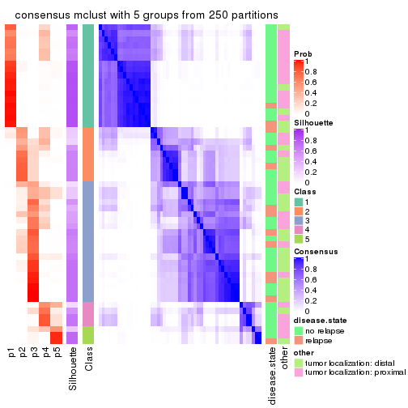
consensus_heatmap(res, k = 6)
Heatmaps for the membership of samples in all partitions to see how consistent they are:
membership_heatmap(res, k = 2)
membership_heatmap(res, k = 3)
membership_heatmap(res, k = 4)
membership_heatmap(res, k = 5)
membership_heatmap(res, k = 6)
As soon as we have had the classes for columns, we can look for signatures which are significantly different between classes which can be candidate marks for certain classes. Following are the heatmaps for signatures.
Signature heatmaps where rows are scaled:
get_signatures(res, k = 2)
get_signatures(res, k = 3)
get_signatures(res, k = 4)
get_signatures(res, k = 5)
get_signatures(res, k = 6)
Signature heatmaps where rows are not scaled:
get_signatures(res, k = 2, scale_rows = FALSE)
get_signatures(res, k = 3, scale_rows = FALSE)
get_signatures(res, k = 4, scale_rows = FALSE)
get_signatures(res, k = 5, scale_rows = FALSE)

get_signatures(res, k = 6, scale_rows = FALSE)
Compare the overlap of signatures from different k:
compare_signatures(res)
get_signature() returns a data frame invisibly. TO get the list of signatures, the function
call should be assigned to a variable explicitly. In following code, if plot argument is set
to FALSE, no heatmap is plotted while only the differential analysis is performed.
# code only for demonstration
tb = get_signature(res, k = ..., plot = FALSE)
An example of the output of tb is:
#> which_row fdr mean_1 mean_2 scaled_mean_1 scaled_mean_2 km
#> 1 38 0.042760348 8.373488 9.131774 -0.5533452 0.5164555 1
#> 2 40 0.018707592 7.106213 8.469186 -0.6173731 0.5762149 1
#> 3 55 0.019134737 10.221463 11.207825 -0.6159697 0.5749050 1
#> 4 59 0.006059896 5.921854 7.869574 -0.6899429 0.6439467 1
#> 5 60 0.018055526 8.928898 10.211722 -0.6204761 0.5791110 1
#> 6 98 0.009384629 15.714769 14.887706 0.6635654 -0.6193277 2
...
The columns in tb are:
which_row: row indices corresponding to the input matrix.fdr: FDR for the differential test. mean_x: The mean value in group x.scaled_mean_x: The mean value in group x after rows are scaled.km: Row groups if k-means clustering is applied to rows.UMAP plot which shows how samples are separated.
dimension_reduction(res, k = 2, method = "UMAP")
dimension_reduction(res, k = 3, method = "UMAP")
dimension_reduction(res, k = 4, method = "UMAP")
dimension_reduction(res, k = 5, method = "UMAP")
dimension_reduction(res, k = 6, method = "UMAP")
Following heatmap shows how subgroups are split when increasing k:
collect_classes(res)
Test correlation between subgroups and known annotations. If the known annotation is numeric, one-way ANOVA test is applied, and if the known annotation is discrete, chi-squared contingency table test is applied.
test_to_known_factors(res)
#> n disease.state(p) other(p) k
#> SD:mclust 53 0.440 0.04697 2
#> SD:mclust 29 0.617 0.01897 3
#> SD:mclust 45 0.236 0.00638 4
#> SD:mclust 42 0.349 0.01546 5
#> SD:mclust 35 0.174 0.02358 6
If matrix rows can be associated to genes, consider to use functional_enrichment(res,
...) to perform function enrichment for the signature genes. See this vignette for more detailed explanations.
The object with results only for a single top-value method and a single partition method can be extracted as:
res = res_list["SD", "NMF"]
# you can also extract it by
# res = res_list["SD:NMF"]
A summary of res and all the functions that can be applied to it:
res
#> A 'ConsensusPartition' object with k = 2, 3, 4, 5, 6.
#> On a matrix with 51941 rows and 53 columns.
#> Top rows (1000, 2000, 3000, 4000, 5000) are extracted by 'SD' method.
#> Subgroups are detected by 'NMF' method.
#> Performed in total 1250 partitions by row resampling.
#> Best k for subgroups seems to be 2.
#>
#> Following methods can be applied to this 'ConsensusPartition' object:
#> [1] "cola_report" "collect_classes" "collect_plots"
#> [4] "collect_stats" "colnames" "compare_signatures"
#> [7] "consensus_heatmap" "dimension_reduction" "functional_enrichment"
#> [10] "get_anno_col" "get_anno" "get_classes"
#> [13] "get_consensus" "get_matrix" "get_membership"
#> [16] "get_param" "get_signatures" "get_stats"
#> [19] "is_best_k" "is_stable_k" "membership_heatmap"
#> [22] "ncol" "nrow" "plot_ecdf"
#> [25] "rownames" "select_partition_number" "show"
#> [28] "suggest_best_k" "test_to_known_factors"
collect_plots() function collects all the plots made from res for all k (number of partitions)
into one single page to provide an easy and fast comparison between different k.
collect_plots(res)
The plots are:
k and the heatmap of
predicted classes for each k.k.k.k.All the plots in panels can be made by individual functions and they are plotted later in this section.
select_partition_number() produces several plots showing different
statistics for choosing “optimized” k. There are following statistics:
k;k, the area increased is defined as \(A_k - A_{k-1}\).The detailed explanations of these statistics can be found in the cola vignette.
Generally speaking, lower PAC score, higher mean silhouette score or higher
concordance corresponds to better partition. Rand index and Jaccard index
measure how similar the current partition is compared to partition with k-1.
If they are too similar, we won't accept k is better than k-1.
select_partition_number(res)
The numeric values for all these statistics can be obtained by get_stats().
get_stats(res)
#> k 1-PAC mean_silhouette concordance area_increased Rand Jaccard
#> 2 2 0.996 0.927 0.971 0.4832 0.521 0.521
#> 3 3 0.835 0.861 0.942 0.3527 0.787 0.605
#> 4 4 0.570 0.616 0.793 0.1263 0.837 0.573
#> 5 5 0.569 0.453 0.692 0.0743 0.911 0.692
#> 6 6 0.632 0.540 0.746 0.0480 0.819 0.367
suggest_best_k() suggests the best \(k\) based on these statistics. The rules are as follows:
suggest_best_k(res)
#> [1] 2
Following shows the table of the partitions (You need to click the show/hide
code output link to see it). The membership matrix (columns with name p*)
is inferred by
clue::cl_consensus()
function with the SE method. Basically the value in the membership matrix
represents the probability to belong to a certain group. The finall class
label for an item is determined with the group with highest probability it
belongs to.
In get_classes() function, the entropy is calculated from the membership
matrix and the silhouette score is calculated from the consensus matrix.
cbind(get_classes(res, k = 2), get_membership(res, k = 2))
#> class entropy silhouette p1 p2
#> GSM452149 2 0.000 0.964 0.000 1.000
#> GSM452150 2 0.000 0.964 0.000 1.000
#> GSM452152 2 0.000 0.964 0.000 1.000
#> GSM452154 2 0.000 0.964 0.000 1.000
#> GSM452160 2 0.000 0.964 0.000 1.000
#> GSM452167 2 0.000 0.964 0.000 1.000
#> GSM452182 1 0.000 0.975 1.000 0.000
#> GSM452185 2 0.000 0.964 0.000 1.000
#> GSM452186 2 0.992 0.212 0.448 0.552
#> GSM452187 2 0.000 0.964 0.000 1.000
#> GSM452189 1 0.000 0.975 1.000 0.000
#> GSM452195 2 0.000 0.964 0.000 1.000
#> GSM452196 2 0.278 0.928 0.048 0.952
#> GSM452197 1 0.000 0.975 1.000 0.000
#> GSM452198 2 0.000 0.964 0.000 1.000
#> GSM452199 2 0.373 0.906 0.072 0.928
#> GSM452148 1 0.000 0.975 1.000 0.000
#> GSM452151 2 0.000 0.964 0.000 1.000
#> GSM452153 1 0.000 0.975 1.000 0.000
#> GSM452155 2 0.000 0.964 0.000 1.000
#> GSM452156 2 0.000 0.964 0.000 1.000
#> GSM452157 1 0.000 0.975 1.000 0.000
#> GSM452158 2 0.969 0.357 0.396 0.604
#> GSM452162 1 0.936 0.423 0.648 0.352
#> GSM452163 1 0.000 0.975 1.000 0.000
#> GSM452166 2 0.000 0.964 0.000 1.000
#> GSM452168 1 0.000 0.975 1.000 0.000
#> GSM452169 1 0.000 0.975 1.000 0.000
#> GSM452170 2 0.000 0.964 0.000 1.000
#> GSM452172 2 0.000 0.964 0.000 1.000
#> GSM452173 1 0.000 0.975 1.000 0.000
#> GSM452174 1 0.000 0.975 1.000 0.000
#> GSM452176 2 0.000 0.964 0.000 1.000
#> GSM452179 1 0.000 0.975 1.000 0.000
#> GSM452180 1 0.000 0.975 1.000 0.000
#> GSM452181 2 0.224 0.938 0.036 0.964
#> GSM452183 1 0.000 0.975 1.000 0.000
#> GSM452184 1 0.443 0.883 0.908 0.092
#> GSM452188 1 0.000 0.975 1.000 0.000
#> GSM452193 2 0.000 0.964 0.000 1.000
#> GSM452165 2 0.430 0.890 0.088 0.912
#> GSM452171 2 0.000 0.964 0.000 1.000
#> GSM452175 1 0.000 0.975 1.000 0.000
#> GSM452177 2 0.000 0.964 0.000 1.000
#> GSM452190 1 0.000 0.975 1.000 0.000
#> GSM452191 2 0.118 0.954 0.016 0.984
#> GSM452192 2 0.000 0.964 0.000 1.000
#> GSM452194 2 0.000 0.964 0.000 1.000
#> GSM452200 2 0.000 0.964 0.000 1.000
#> GSM452159 1 0.000 0.975 1.000 0.000
#> GSM452161 2 0.000 0.964 0.000 1.000
#> GSM452164 2 0.000 0.964 0.000 1.000
#> GSM452178 2 0.000 0.964 0.000 1.000
cbind(get_classes(res, k = 3), get_membership(res, k = 3))
#> class entropy silhouette p1 p2 p3
#> GSM452149 3 0.2878 0.8633 0.000 0.096 0.904
#> GSM452150 3 0.5016 0.7114 0.000 0.240 0.760
#> GSM452152 3 0.0000 0.9122 0.000 0.000 1.000
#> GSM452154 3 0.1411 0.9003 0.000 0.036 0.964
#> GSM452160 3 0.4504 0.7666 0.000 0.196 0.804
#> GSM452167 3 0.5178 0.6950 0.000 0.256 0.744
#> GSM452182 1 0.0000 0.9893 1.000 0.000 0.000
#> GSM452185 3 0.0000 0.9122 0.000 0.000 1.000
#> GSM452186 2 0.0000 0.8819 0.000 1.000 0.000
#> GSM452187 3 0.0237 0.9115 0.000 0.004 0.996
#> GSM452189 1 0.0000 0.9893 1.000 0.000 0.000
#> GSM452195 2 0.6302 -0.0620 0.000 0.520 0.480
#> GSM452196 2 0.0000 0.8819 0.000 1.000 0.000
#> GSM452197 1 0.0000 0.9893 1.000 0.000 0.000
#> GSM452198 3 0.0000 0.9122 0.000 0.000 1.000
#> GSM452199 2 0.0000 0.8819 0.000 1.000 0.000
#> GSM452148 2 0.0424 0.8781 0.008 0.992 0.000
#> GSM452151 3 0.1964 0.8672 0.056 0.000 0.944
#> GSM452153 1 0.0000 0.9893 1.000 0.000 0.000
#> GSM452155 3 0.0000 0.9122 0.000 0.000 1.000
#> GSM452156 3 0.1031 0.9055 0.000 0.024 0.976
#> GSM452157 1 0.0000 0.9893 1.000 0.000 0.000
#> GSM452158 2 0.0424 0.8773 0.000 0.992 0.008
#> GSM452162 2 0.4662 0.7548 0.124 0.844 0.032
#> GSM452163 1 0.0000 0.9893 1.000 0.000 0.000
#> GSM452166 3 0.0000 0.9122 0.000 0.000 1.000
#> GSM452168 1 0.0000 0.9893 1.000 0.000 0.000
#> GSM452169 1 0.0000 0.9893 1.000 0.000 0.000
#> GSM452170 3 0.0000 0.9122 0.000 0.000 1.000
#> GSM452172 3 0.0000 0.9122 0.000 0.000 1.000
#> GSM452173 1 0.0424 0.9829 0.992 0.008 0.000
#> GSM452174 1 0.3192 0.8755 0.888 0.112 0.000
#> GSM452176 3 0.0000 0.9122 0.000 0.000 1.000
#> GSM452179 1 0.0000 0.9893 1.000 0.000 0.000
#> GSM452180 1 0.0000 0.9893 1.000 0.000 0.000
#> GSM452181 2 0.0000 0.8819 0.000 1.000 0.000
#> GSM452183 1 0.0000 0.9893 1.000 0.000 0.000
#> GSM452184 1 0.1643 0.9459 0.956 0.000 0.044
#> GSM452188 1 0.0000 0.9893 1.000 0.000 0.000
#> GSM452193 3 0.0000 0.9122 0.000 0.000 1.000
#> GSM452165 2 0.0000 0.8819 0.000 1.000 0.000
#> GSM452171 3 0.5621 0.6016 0.000 0.308 0.692
#> GSM452175 1 0.0000 0.9893 1.000 0.000 0.000
#> GSM452177 3 0.5859 0.5234 0.000 0.344 0.656
#> GSM452190 2 0.0892 0.8699 0.020 0.980 0.000
#> GSM452191 2 0.0000 0.8819 0.000 1.000 0.000
#> GSM452192 3 0.1289 0.9023 0.000 0.032 0.968
#> GSM452194 3 0.0000 0.9122 0.000 0.000 1.000
#> GSM452200 3 0.0000 0.9122 0.000 0.000 1.000
#> GSM452159 1 0.0000 0.9893 1.000 0.000 0.000
#> GSM452161 2 0.6274 0.0331 0.000 0.544 0.456
#> GSM452164 3 0.4605 0.7304 0.000 0.204 0.796
#> GSM452178 3 0.0237 0.9115 0.000 0.004 0.996
cbind(get_classes(res, k = 4), get_membership(res, k = 4))
#> class entropy silhouette p1 p2 p3 p4
#> GSM452149 3 0.4406 0.6466 0.000 0.300 0.700 0.000
#> GSM452150 3 0.3942 0.7241 0.000 0.236 0.764 0.000
#> GSM452152 4 0.5163 0.1342 0.000 0.004 0.480 0.516
#> GSM452154 3 0.1004 0.8039 0.000 0.024 0.972 0.004
#> GSM452160 3 0.5085 0.4784 0.000 0.376 0.616 0.008
#> GSM452167 3 0.4434 0.6728 0.000 0.228 0.756 0.016
#> GSM452182 1 0.4431 0.6713 0.696 0.000 0.000 0.304
#> GSM452185 3 0.2530 0.7691 0.000 0.000 0.888 0.112
#> GSM452186 2 0.2641 0.7852 0.012 0.912 0.012 0.064
#> GSM452187 3 0.0524 0.7997 0.000 0.008 0.988 0.004
#> GSM452189 1 0.4422 0.7206 0.736 0.008 0.000 0.256
#> GSM452195 3 0.4594 0.6077 0.000 0.280 0.712 0.008
#> GSM452196 2 0.1584 0.8002 0.000 0.952 0.012 0.036
#> GSM452197 1 0.4431 0.6648 0.696 0.000 0.000 0.304
#> GSM452198 3 0.1661 0.8041 0.000 0.052 0.944 0.004
#> GSM452199 2 0.1724 0.7992 0.000 0.948 0.020 0.032
#> GSM452148 2 0.0188 0.8024 0.000 0.996 0.000 0.004
#> GSM452151 4 0.4595 0.5446 0.040 0.000 0.184 0.776
#> GSM452153 4 0.4134 0.3266 0.260 0.000 0.000 0.740
#> GSM452155 3 0.4978 0.2006 0.000 0.004 0.612 0.384
#> GSM452156 4 0.7886 0.0783 0.000 0.324 0.296 0.380
#> GSM452157 1 0.3837 0.7496 0.776 0.000 0.000 0.224
#> GSM452158 2 0.9476 0.3614 0.192 0.424 0.180 0.204
#> GSM452162 2 0.6377 0.4817 0.124 0.660 0.004 0.212
#> GSM452163 1 0.0707 0.8008 0.980 0.000 0.000 0.020
#> GSM452166 3 0.1867 0.7642 0.000 0.000 0.928 0.072
#> GSM452168 4 0.4898 -0.3401 0.416 0.000 0.000 0.584
#> GSM452169 1 0.0592 0.8128 0.984 0.000 0.000 0.016
#> GSM452170 4 0.4992 0.1533 0.000 0.000 0.476 0.524
#> GSM452172 4 0.3982 0.5541 0.004 0.000 0.220 0.776
#> GSM452173 4 0.6722 -0.1151 0.408 0.092 0.000 0.500
#> GSM452174 1 0.3810 0.6550 0.804 0.008 0.000 0.188
#> GSM452176 3 0.0188 0.7968 0.000 0.000 0.996 0.004
#> GSM452179 1 0.1022 0.8004 0.968 0.000 0.000 0.032
#> GSM452180 1 0.0921 0.8138 0.972 0.000 0.000 0.028
#> GSM452181 2 0.0188 0.8024 0.000 0.996 0.000 0.004
#> GSM452183 1 0.3219 0.7825 0.836 0.000 0.000 0.164
#> GSM452184 4 0.4188 0.3544 0.244 0.000 0.004 0.752
#> GSM452188 1 0.2760 0.8085 0.872 0.000 0.000 0.128
#> GSM452193 3 0.2530 0.7745 0.000 0.004 0.896 0.100
#> GSM452165 2 0.0000 0.8025 0.000 1.000 0.000 0.000
#> GSM452171 3 0.2805 0.7968 0.000 0.100 0.888 0.012
#> GSM452175 1 0.4431 0.6777 0.696 0.000 0.000 0.304
#> GSM452177 3 0.3448 0.7621 0.000 0.168 0.828 0.004
#> GSM452190 2 0.1545 0.7855 0.008 0.952 0.000 0.040
#> GSM452191 2 0.0336 0.8014 0.000 0.992 0.000 0.008
#> GSM452192 3 0.5453 0.5926 0.000 0.304 0.660 0.036
#> GSM452194 3 0.0188 0.7989 0.000 0.004 0.996 0.000
#> GSM452200 3 0.0188 0.7968 0.000 0.000 0.996 0.004
#> GSM452159 1 0.0469 0.8116 0.988 0.000 0.000 0.012
#> GSM452161 2 0.5253 0.3196 0.000 0.624 0.360 0.016
#> GSM452164 2 0.6794 0.2875 0.000 0.524 0.372 0.104
#> GSM452178 3 0.2522 0.7699 0.000 0.016 0.908 0.076
cbind(get_classes(res, k = 5), get_membership(res, k = 5))
#> class entropy silhouette p1 p2 p3 p4 p5
#> GSM452149 3 0.6028 0.5770 0.000 0.196 0.644 0.028 0.132
#> GSM452150 3 0.5821 0.5713 0.000 0.248 0.636 0.020 0.096
#> GSM452152 4 0.3141 0.4805 0.000 0.000 0.152 0.832 0.016
#> GSM452154 3 0.1443 0.6818 0.000 0.004 0.948 0.004 0.044
#> GSM452160 3 0.4851 0.3134 0.000 0.420 0.560 0.012 0.008
#> GSM452167 3 0.5988 0.5727 0.000 0.096 0.672 0.172 0.060
#> GSM452182 5 0.5928 -0.0452 0.328 0.000 0.000 0.124 0.548
#> GSM452185 3 0.4798 0.4412 0.000 0.000 0.580 0.024 0.396
#> GSM452186 2 0.5290 0.5235 0.004 0.540 0.032 0.004 0.420
#> GSM452187 3 0.2419 0.6790 0.000 0.004 0.904 0.028 0.064
#> GSM452189 1 0.6313 0.4921 0.608 0.076 0.000 0.060 0.256
#> GSM452195 3 0.5958 0.5451 0.000 0.056 0.620 0.048 0.276
#> GSM452196 2 0.5198 0.5866 0.000 0.592 0.036 0.008 0.364
#> GSM452197 1 0.4711 0.5974 0.736 0.000 0.000 0.116 0.148
#> GSM452198 3 0.2744 0.6604 0.008 0.004 0.892 0.072 0.024
#> GSM452199 2 0.5411 0.5594 0.000 0.568 0.040 0.012 0.380
#> GSM452148 2 0.0290 0.7202 0.000 0.992 0.000 0.000 0.008
#> GSM452151 4 0.2732 0.3999 0.008 0.000 0.020 0.884 0.088
#> GSM452153 4 0.6304 -0.1472 0.156 0.000 0.004 0.524 0.316
#> GSM452155 4 0.6772 0.1298 0.008 0.004 0.292 0.496 0.200
#> GSM452156 4 0.6383 0.3924 0.000 0.152 0.108 0.648 0.092
#> GSM452157 1 0.4138 0.6257 0.776 0.000 0.000 0.064 0.160
#> GSM452158 5 0.7570 -0.1455 0.116 0.096 0.092 0.092 0.604
#> GSM452162 2 0.5425 0.1557 0.036 0.572 0.000 0.376 0.016
#> GSM452163 1 0.1124 0.6507 0.960 0.000 0.000 0.004 0.036
#> GSM452166 3 0.4630 0.3176 0.000 0.000 0.588 0.396 0.016
#> GSM452168 5 0.6352 0.1617 0.176 0.000 0.000 0.336 0.488
#> GSM452169 1 0.1041 0.6524 0.964 0.000 0.000 0.004 0.032
#> GSM452170 4 0.2470 0.4754 0.000 0.000 0.104 0.884 0.012
#> GSM452172 4 0.4209 0.2846 0.004 0.000 0.028 0.744 0.224
#> GSM452173 1 0.8104 0.0865 0.364 0.236 0.000 0.104 0.296
#> GSM452174 1 0.3968 0.3851 0.716 0.004 0.000 0.004 0.276
#> GSM452176 3 0.1216 0.6720 0.000 0.000 0.960 0.020 0.020
#> GSM452179 1 0.1571 0.6295 0.936 0.000 0.000 0.004 0.060
#> GSM452180 1 0.2193 0.6703 0.900 0.000 0.000 0.008 0.092
#> GSM452181 2 0.3016 0.7124 0.000 0.848 0.000 0.020 0.132
#> GSM452183 1 0.3525 0.6457 0.800 0.008 0.000 0.008 0.184
#> GSM452184 4 0.7007 -0.2793 0.244 0.012 0.000 0.416 0.328
#> GSM452188 1 0.6140 0.1584 0.492 0.000 0.000 0.136 0.372
#> GSM452193 3 0.4726 0.4746 0.000 0.000 0.580 0.020 0.400
#> GSM452165 2 0.1845 0.7309 0.000 0.928 0.016 0.000 0.056
#> GSM452171 3 0.4788 0.6196 0.000 0.068 0.760 0.144 0.028
#> GSM452175 1 0.5599 0.4790 0.620 0.000 0.000 0.120 0.260
#> GSM452177 3 0.2437 0.6842 0.000 0.032 0.904 0.004 0.060
#> GSM452190 2 0.1357 0.7149 0.004 0.948 0.000 0.000 0.048
#> GSM452191 2 0.0960 0.7188 0.000 0.972 0.008 0.004 0.016
#> GSM452192 3 0.6590 0.3802 0.000 0.348 0.512 0.108 0.032
#> GSM452194 3 0.1403 0.6783 0.000 0.000 0.952 0.024 0.024
#> GSM452200 3 0.0898 0.6744 0.000 0.000 0.972 0.020 0.008
#> GSM452159 1 0.0162 0.6630 0.996 0.000 0.000 0.000 0.004
#> GSM452161 3 0.8529 0.0643 0.000 0.256 0.292 0.184 0.268
#> GSM452164 4 0.7977 0.0566 0.000 0.312 0.220 0.376 0.092
#> GSM452178 3 0.5547 0.4835 0.000 0.024 0.632 0.292 0.052
cbind(get_classes(res, k = 6), get_membership(res, k = 6))
#> class entropy silhouette p1 p2 p3 p4 p5 p6
#> GSM452149 3 0.6252 0.3927 0.000 0.088 0.596 0.088 0.216 0.012
#> GSM452150 3 0.6333 0.3009 0.000 0.284 0.520 0.040 0.152 0.004
#> GSM452152 4 0.2034 0.7213 0.000 0.000 0.024 0.912 0.004 0.060
#> GSM452154 3 0.2191 0.6314 0.000 0.004 0.876 0.000 0.120 0.000
#> GSM452160 2 0.4792 0.2665 0.000 0.548 0.408 0.032 0.012 0.000
#> GSM452167 3 0.6312 0.1348 0.000 0.064 0.512 0.324 0.096 0.004
#> GSM452182 6 0.3283 0.6827 0.048 0.004 0.000 0.004 0.112 0.832
#> GSM452185 5 0.4861 -0.0729 0.000 0.000 0.456 0.016 0.500 0.028
#> GSM452186 5 0.5048 0.4296 0.008 0.300 0.044 0.008 0.632 0.008
#> GSM452187 3 0.3172 0.6316 0.000 0.000 0.824 0.048 0.128 0.000
#> GSM452189 6 0.5491 0.2736 0.384 0.072 0.000 0.016 0.004 0.524
#> GSM452195 3 0.4887 -0.1076 0.000 0.004 0.476 0.048 0.472 0.000
#> GSM452196 5 0.5282 0.3870 0.000 0.332 0.044 0.040 0.584 0.000
#> GSM452197 1 0.3596 0.6391 0.740 0.000 0.000 0.008 0.008 0.244
#> GSM452198 3 0.3837 0.6045 0.048 0.000 0.816 0.084 0.048 0.004
#> GSM452199 5 0.5462 0.4797 0.000 0.280 0.072 0.032 0.612 0.004
#> GSM452148 2 0.1049 0.6804 0.000 0.960 0.000 0.008 0.032 0.000
#> GSM452151 4 0.3371 0.5082 0.000 0.000 0.000 0.708 0.000 0.292
#> GSM452153 6 0.2988 0.6860 0.060 0.000 0.000 0.084 0.004 0.852
#> GSM452155 4 0.4942 0.5694 0.000 0.004 0.116 0.692 0.176 0.012
#> GSM452156 4 0.2278 0.7130 0.000 0.052 0.004 0.900 0.044 0.000
#> GSM452157 1 0.3043 0.8077 0.836 0.000 0.000 0.008 0.024 0.132
#> GSM452158 5 0.2907 0.5130 0.012 0.024 0.028 0.036 0.888 0.012
#> GSM452162 4 0.4048 0.6390 0.012 0.200 0.008 0.756 0.020 0.004
#> GSM452163 1 0.0603 0.8577 0.980 0.000 0.000 0.004 0.016 0.000
#> GSM452166 4 0.4770 0.5176 0.000 0.000 0.268 0.660 0.056 0.016
#> GSM452168 6 0.2408 0.6996 0.024 0.004 0.000 0.008 0.068 0.896
#> GSM452169 1 0.1401 0.8648 0.948 0.000 0.000 0.004 0.028 0.020
#> GSM452170 4 0.2492 0.7039 0.000 0.000 0.020 0.876 0.004 0.100
#> GSM452172 6 0.4388 0.1327 0.000 0.000 0.000 0.400 0.028 0.572
#> GSM452173 6 0.6696 0.2347 0.272 0.332 0.000 0.024 0.004 0.368
#> GSM452174 1 0.4171 0.6647 0.764 0.012 0.000 0.016 0.172 0.036
#> GSM452176 3 0.1448 0.6431 0.000 0.000 0.948 0.024 0.012 0.016
#> GSM452179 1 0.1410 0.8582 0.944 0.000 0.000 0.004 0.044 0.008
#> GSM452180 1 0.1957 0.8340 0.888 0.000 0.000 0.000 0.000 0.112
#> GSM452181 2 0.4200 0.5303 0.000 0.744 0.004 0.088 0.164 0.000
#> GSM452183 1 0.2295 0.8526 0.900 0.008 0.000 0.004 0.016 0.072
#> GSM452184 6 0.2789 0.7018 0.064 0.012 0.000 0.036 0.008 0.880
#> GSM452188 6 0.3450 0.6915 0.116 0.004 0.000 0.004 0.056 0.820
#> GSM452193 5 0.4507 0.0793 0.004 0.000 0.432 0.012 0.544 0.008
#> GSM452165 2 0.2653 0.6457 0.000 0.868 0.028 0.000 0.100 0.004
#> GSM452171 3 0.5854 0.3788 0.000 0.056 0.588 0.260 0.096 0.000
#> GSM452175 6 0.3636 0.4988 0.320 0.000 0.000 0.000 0.004 0.676
#> GSM452177 3 0.2446 0.6335 0.000 0.012 0.864 0.000 0.124 0.000
#> GSM452190 2 0.3161 0.6383 0.000 0.848 0.000 0.020 0.092 0.040
#> GSM452191 2 0.0748 0.6751 0.000 0.976 0.000 0.004 0.004 0.016
#> GSM452192 2 0.5946 0.3028 0.000 0.516 0.344 0.112 0.024 0.004
#> GSM452194 3 0.2255 0.6560 0.000 0.000 0.892 0.028 0.080 0.000
#> GSM452200 3 0.1334 0.6539 0.000 0.000 0.948 0.032 0.020 0.000
#> GSM452159 1 0.0935 0.8661 0.964 0.000 0.000 0.004 0.000 0.032
#> GSM452161 5 0.7035 0.3313 0.000 0.164 0.112 0.284 0.440 0.000
#> GSM452164 4 0.4921 0.6734 0.000 0.100 0.092 0.744 0.048 0.016
#> GSM452178 4 0.5298 0.3100 0.000 0.032 0.380 0.548 0.036 0.004
Heatmaps for the consensus matrix. It visualizes the probability of two samples to be in a same group.
consensus_heatmap(res, k = 2)
consensus_heatmap(res, k = 3)
consensus_heatmap(res, k = 4)
consensus_heatmap(res, k = 5)
consensus_heatmap(res, k = 6)
Heatmaps for the membership of samples in all partitions to see how consistent they are:
membership_heatmap(res, k = 2)
membership_heatmap(res, k = 3)
membership_heatmap(res, k = 4)
membership_heatmap(res, k = 5)
membership_heatmap(res, k = 6)
As soon as we have had the classes for columns, we can look for signatures which are significantly different between classes which can be candidate marks for certain classes. Following are the heatmaps for signatures.
Signature heatmaps where rows are scaled:
get_signatures(res, k = 2)
get_signatures(res, k = 3)
get_signatures(res, k = 4)
get_signatures(res, k = 5)
get_signatures(res, k = 6)
Signature heatmaps where rows are not scaled:
get_signatures(res, k = 2, scale_rows = FALSE)
get_signatures(res, k = 3, scale_rows = FALSE)
get_signatures(res, k = 4, scale_rows = FALSE)
get_signatures(res, k = 5, scale_rows = FALSE)
get_signatures(res, k = 6, scale_rows = FALSE)
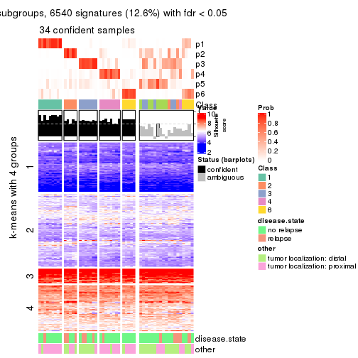
Compare the overlap of signatures from different k:
compare_signatures(res)
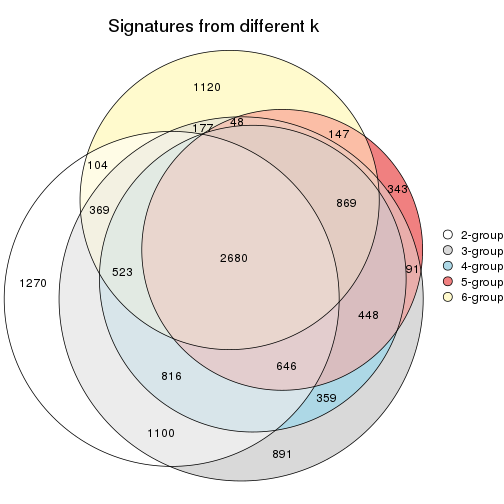
get_signature() returns a data frame invisibly. TO get the list of signatures, the function
call should be assigned to a variable explicitly. In following code, if plot argument is set
to FALSE, no heatmap is plotted while only the differential analysis is performed.
# code only for demonstration
tb = get_signature(res, k = ..., plot = FALSE)
An example of the output of tb is:
#> which_row fdr mean_1 mean_2 scaled_mean_1 scaled_mean_2 km
#> 1 38 0.042760348 8.373488 9.131774 -0.5533452 0.5164555 1
#> 2 40 0.018707592 7.106213 8.469186 -0.6173731 0.5762149 1
#> 3 55 0.019134737 10.221463 11.207825 -0.6159697 0.5749050 1
#> 4 59 0.006059896 5.921854 7.869574 -0.6899429 0.6439467 1
#> 5 60 0.018055526 8.928898 10.211722 -0.6204761 0.5791110 1
#> 6 98 0.009384629 15.714769 14.887706 0.6635654 -0.6193277 2
...
The columns in tb are:
which_row: row indices corresponding to the input matrix.fdr: FDR for the differential test. mean_x: The mean value in group x.scaled_mean_x: The mean value in group x after rows are scaled.km: Row groups if k-means clustering is applied to rows.UMAP plot which shows how samples are separated.
dimension_reduction(res, k = 2, method = "UMAP")
dimension_reduction(res, k = 3, method = "UMAP")
dimension_reduction(res, k = 4, method = "UMAP")
dimension_reduction(res, k = 5, method = "UMAP")
dimension_reduction(res, k = 6, method = "UMAP")
Following heatmap shows how subgroups are split when increasing k:
collect_classes(res)
Test correlation between subgroups and known annotations. If the known annotation is numeric, one-way ANOVA test is applied, and if the known annotation is discrete, chi-squared contingency table test is applied.
test_to_known_factors(res)
#> n disease.state(p) other(p) k
#> SD:NMF 50 0.339 0.03476 2
#> SD:NMF 51 0.375 0.05859 3
#> SD:NMF 40 0.451 0.01846 4
#> SD:NMF 28 0.482 0.00108 5
#> SD:NMF 35 0.132 0.01278 6
If matrix rows can be associated to genes, consider to use functional_enrichment(res,
...) to perform function enrichment for the signature genes. See this vignette for more detailed explanations.
The object with results only for a single top-value method and a single partition method can be extracted as:
res = res_list["CV", "hclust"]
# you can also extract it by
# res = res_list["CV:hclust"]
A summary of res and all the functions that can be applied to it:
res
#> A 'ConsensusPartition' object with k = 2, 3, 4, 5, 6.
#> On a matrix with 51941 rows and 53 columns.
#> Top rows (1000, 2000, 3000, 4000, 5000) are extracted by 'CV' method.
#> Subgroups are detected by 'hclust' method.
#> Performed in total 1250 partitions by row resampling.
#> Best k for subgroups seems to be 3.
#>
#> Following methods can be applied to this 'ConsensusPartition' object:
#> [1] "cola_report" "collect_classes" "collect_plots"
#> [4] "collect_stats" "colnames" "compare_signatures"
#> [7] "consensus_heatmap" "dimension_reduction" "functional_enrichment"
#> [10] "get_anno_col" "get_anno" "get_classes"
#> [13] "get_consensus" "get_matrix" "get_membership"
#> [16] "get_param" "get_signatures" "get_stats"
#> [19] "is_best_k" "is_stable_k" "membership_heatmap"
#> [22] "ncol" "nrow" "plot_ecdf"
#> [25] "rownames" "select_partition_number" "show"
#> [28] "suggest_best_k" "test_to_known_factors"
collect_plots() function collects all the plots made from res for all k (number of partitions)
into one single page to provide an easy and fast comparison between different k.
collect_plots(res)
The plots are:
k and the heatmap of
predicted classes for each k.k.k.k.All the plots in panels can be made by individual functions and they are plotted later in this section.
select_partition_number() produces several plots showing different
statistics for choosing “optimized” k. There are following statistics:
k;k, the area increased is defined as \(A_k - A_{k-1}\).The detailed explanations of these statistics can be found in the cola vignette.
Generally speaking, lower PAC score, higher mean silhouette score or higher
concordance corresponds to better partition. Rand index and Jaccard index
measure how similar the current partition is compared to partition with k-1.
If they are too similar, we won't accept k is better than k-1.
select_partition_number(res)
The numeric values for all these statistics can be obtained by get_stats().
get_stats(res)
#> k 1-PAC mean_silhouette concordance area_increased Rand Jaccard
#> 2 2 0.225 0.712 0.820 0.4834 0.492 0.492
#> 3 3 0.594 0.802 0.889 0.3263 0.815 0.636
#> 4 4 0.681 0.772 0.879 0.1140 0.885 0.685
#> 5 5 0.646 0.712 0.821 0.0559 0.970 0.889
#> 6 6 0.666 0.539 0.773 0.0503 0.987 0.946
suggest_best_k() suggests the best \(k\) based on these statistics. The rules are as follows:
suggest_best_k(res)
#> [1] 3
Following shows the table of the partitions (You need to click the show/hide
code output link to see it). The membership matrix (columns with name p*)
is inferred by
clue::cl_consensus()
function with the SE method. Basically the value in the membership matrix
represents the probability to belong to a certain group. The finall class
label for an item is determined with the group with highest probability it
belongs to.
In get_classes() function, the entropy is calculated from the membership
matrix and the silhouette score is calculated from the consensus matrix.
cbind(get_classes(res, k = 2), get_membership(res, k = 2))
#> class entropy silhouette p1 p2
#> GSM452149 2 0.416 0.806 0.084 0.916
#> GSM452150 2 0.402 0.809 0.080 0.920
#> GSM452152 1 0.861 0.594 0.716 0.284
#> GSM452154 2 0.430 0.809 0.088 0.912
#> GSM452160 2 0.388 0.808 0.076 0.924
#> GSM452167 2 0.443 0.816 0.092 0.908
#> GSM452182 1 0.714 0.748 0.804 0.196
#> GSM452185 1 0.871 0.617 0.708 0.292
#> GSM452186 2 0.584 0.754 0.140 0.860
#> GSM452187 2 0.961 0.312 0.384 0.616
#> GSM452189 1 0.722 0.748 0.800 0.200
#> GSM452195 2 0.295 0.824 0.052 0.948
#> GSM452196 2 0.518 0.773 0.116 0.884
#> GSM452197 1 0.722 0.748 0.800 0.200
#> GSM452198 1 0.913 0.552 0.672 0.328
#> GSM452199 2 0.518 0.773 0.116 0.884
#> GSM452148 2 0.781 0.640 0.232 0.768
#> GSM452151 1 0.775 0.644 0.772 0.228
#> GSM452153 1 0.738 0.688 0.792 0.208
#> GSM452155 2 0.402 0.808 0.080 0.920
#> GSM452156 2 0.224 0.823 0.036 0.964
#> GSM452157 1 0.722 0.748 0.800 0.200
#> GSM452158 2 0.327 0.815 0.060 0.940
#> GSM452162 2 0.224 0.823 0.036 0.964
#> GSM452163 1 0.722 0.748 0.800 0.200
#> GSM452166 1 0.781 0.634 0.768 0.232
#> GSM452168 1 0.714 0.748 0.804 0.196
#> GSM452169 1 0.722 0.748 0.800 0.200
#> GSM452170 1 0.781 0.634 0.768 0.232
#> GSM452172 1 0.781 0.634 0.768 0.232
#> GSM452173 1 0.722 0.748 0.800 0.200
#> GSM452174 1 0.722 0.748 0.800 0.200
#> GSM452176 1 0.781 0.634 0.768 0.232
#> GSM452179 1 0.722 0.748 0.800 0.200
#> GSM452180 1 0.722 0.748 0.800 0.200
#> GSM452181 2 0.574 0.758 0.136 0.864
#> GSM452183 1 0.722 0.748 0.800 0.200
#> GSM452184 1 0.745 0.693 0.788 0.212
#> GSM452188 1 0.714 0.748 0.804 0.196
#> GSM452193 1 0.871 0.617 0.708 0.292
#> GSM452165 2 0.574 0.758 0.136 0.864
#> GSM452171 2 0.456 0.819 0.096 0.904
#> GSM452175 1 0.714 0.748 0.804 0.196
#> GSM452177 2 0.430 0.804 0.088 0.912
#> GSM452190 2 0.781 0.640 0.232 0.768
#> GSM452191 2 0.781 0.640 0.232 0.768
#> GSM452192 2 0.541 0.769 0.124 0.876
#> GSM452194 2 0.961 0.312 0.384 0.616
#> GSM452200 1 0.781 0.634 0.768 0.232
#> GSM452159 1 0.722 0.748 0.800 0.200
#> GSM452161 2 0.327 0.815 0.060 0.940
#> GSM452164 2 0.224 0.823 0.036 0.964
#> GSM452178 1 0.958 0.416 0.620 0.380
cbind(get_classes(res, k = 3), get_membership(res, k = 3))
#> class entropy silhouette p1 p2 p3
#> GSM452149 2 0.4750 0.8235 0.000 0.784 0.216
#> GSM452150 2 0.4702 0.8273 0.000 0.788 0.212
#> GSM452152 3 0.3918 0.7672 0.004 0.140 0.856
#> GSM452154 2 0.4702 0.8269 0.000 0.788 0.212
#> GSM452160 2 0.4654 0.8301 0.000 0.792 0.208
#> GSM452167 2 0.4452 0.8398 0.000 0.808 0.192
#> GSM452182 1 0.1129 0.9355 0.976 0.020 0.004
#> GSM452185 3 0.3933 0.8049 0.028 0.092 0.880
#> GSM452186 2 0.0424 0.8113 0.008 0.992 0.000
#> GSM452187 3 0.6516 -0.0526 0.004 0.480 0.516
#> GSM452189 1 0.0000 0.9485 1.000 0.000 0.000
#> GSM452195 2 0.4172 0.8549 0.004 0.840 0.156
#> GSM452196 2 0.1453 0.8258 0.008 0.968 0.024
#> GSM452197 1 0.0000 0.9485 1.000 0.000 0.000
#> GSM452198 3 0.3532 0.7943 0.008 0.108 0.884
#> GSM452199 2 0.1453 0.8258 0.008 0.968 0.024
#> GSM452148 2 0.2959 0.7356 0.100 0.900 0.000
#> GSM452151 3 0.4629 0.6649 0.188 0.004 0.808
#> GSM452153 1 0.6126 0.4719 0.644 0.004 0.352
#> GSM452155 2 0.4931 0.8224 0.004 0.784 0.212
#> GSM452156 2 0.4121 0.8517 0.000 0.832 0.168
#> GSM452157 1 0.0000 0.9485 1.000 0.000 0.000
#> GSM452158 2 0.3500 0.8559 0.004 0.880 0.116
#> GSM452162 2 0.4121 0.8517 0.000 0.832 0.168
#> GSM452163 1 0.0000 0.9485 1.000 0.000 0.000
#> GSM452166 3 0.1163 0.8138 0.000 0.028 0.972
#> GSM452168 1 0.1129 0.9355 0.976 0.020 0.004
#> GSM452169 1 0.0000 0.9485 1.000 0.000 0.000
#> GSM452170 3 0.0000 0.8128 0.000 0.000 1.000
#> GSM452172 3 0.0000 0.8128 0.000 0.000 1.000
#> GSM452173 1 0.0000 0.9485 1.000 0.000 0.000
#> GSM452174 1 0.0000 0.9485 1.000 0.000 0.000
#> GSM452176 3 0.0000 0.8128 0.000 0.000 1.000
#> GSM452179 1 0.0000 0.9485 1.000 0.000 0.000
#> GSM452180 1 0.0000 0.9485 1.000 0.000 0.000
#> GSM452181 2 0.0661 0.8144 0.008 0.988 0.004
#> GSM452183 1 0.0000 0.9485 1.000 0.000 0.000
#> GSM452184 1 0.6855 0.4998 0.652 0.032 0.316
#> GSM452188 1 0.1129 0.9355 0.976 0.020 0.004
#> GSM452193 3 0.3933 0.8049 0.028 0.092 0.880
#> GSM452165 2 0.0237 0.8131 0.004 0.996 0.000
#> GSM452171 2 0.4291 0.8445 0.000 0.820 0.180
#> GSM452175 1 0.0237 0.9464 0.996 0.000 0.004
#> GSM452177 2 0.4796 0.8198 0.000 0.780 0.220
#> GSM452190 2 0.2959 0.7356 0.100 0.900 0.000
#> GSM452191 2 0.2959 0.7356 0.100 0.900 0.000
#> GSM452192 2 0.5178 0.7821 0.000 0.744 0.256
#> GSM452194 3 0.6516 -0.0526 0.004 0.480 0.516
#> GSM452200 3 0.0000 0.8128 0.000 0.000 1.000
#> GSM452159 1 0.0000 0.9485 1.000 0.000 0.000
#> GSM452161 2 0.3500 0.8559 0.004 0.880 0.116
#> GSM452164 2 0.4121 0.8517 0.000 0.832 0.168
#> GSM452178 3 0.4291 0.7119 0.000 0.180 0.820
cbind(get_classes(res, k = 4), get_membership(res, k = 4))
#> class entropy silhouette p1 p2 p3 p4
#> GSM452149 3 0.2124 0.821 0.000 0.028 0.932 0.040
#> GSM452150 3 0.2032 0.823 0.000 0.028 0.936 0.036
#> GSM452152 4 0.4792 0.648 0.000 0.008 0.312 0.680
#> GSM452154 3 0.2224 0.821 0.000 0.032 0.928 0.040
#> GSM452160 3 0.0000 0.816 0.000 0.000 1.000 0.000
#> GSM452167 3 0.1890 0.814 0.000 0.056 0.936 0.008
#> GSM452182 1 0.1109 0.931 0.968 0.028 0.000 0.004
#> GSM452185 4 0.3681 0.819 0.024 0.004 0.124 0.848
#> GSM452186 2 0.4866 0.512 0.000 0.596 0.404 0.000
#> GSM452187 3 0.4655 0.422 0.000 0.004 0.684 0.312
#> GSM452189 1 0.0000 0.948 1.000 0.000 0.000 0.000
#> GSM452195 3 0.3243 0.809 0.000 0.088 0.876 0.036
#> GSM452196 3 0.4855 0.146 0.000 0.400 0.600 0.000
#> GSM452197 1 0.0000 0.948 1.000 0.000 0.000 0.000
#> GSM452198 4 0.3892 0.806 0.004 0.004 0.192 0.800
#> GSM452199 3 0.4855 0.146 0.000 0.400 0.600 0.000
#> GSM452148 2 0.2216 0.769 0.000 0.908 0.092 0.000
#> GSM452151 4 0.4444 0.674 0.184 0.008 0.020 0.788
#> GSM452153 1 0.5268 0.492 0.636 0.012 0.004 0.348
#> GSM452155 3 0.2844 0.814 0.000 0.048 0.900 0.052
#> GSM452156 3 0.1389 0.811 0.000 0.048 0.952 0.000
#> GSM452157 1 0.0000 0.948 1.000 0.000 0.000 0.000
#> GSM452158 3 0.3390 0.780 0.000 0.132 0.852 0.016
#> GSM452162 3 0.1389 0.811 0.000 0.048 0.952 0.000
#> GSM452163 1 0.0000 0.948 1.000 0.000 0.000 0.000
#> GSM452166 4 0.2773 0.833 0.000 0.004 0.116 0.880
#> GSM452168 1 0.1109 0.931 0.968 0.028 0.000 0.004
#> GSM452169 1 0.0000 0.948 1.000 0.000 0.000 0.000
#> GSM452170 4 0.2053 0.835 0.000 0.004 0.072 0.924
#> GSM452172 4 0.0000 0.807 0.000 0.000 0.000 1.000
#> GSM452173 1 0.0000 0.948 1.000 0.000 0.000 0.000
#> GSM452174 1 0.0000 0.948 1.000 0.000 0.000 0.000
#> GSM452176 4 0.2111 0.825 0.000 0.024 0.044 0.932
#> GSM452179 1 0.0000 0.948 1.000 0.000 0.000 0.000
#> GSM452180 1 0.0000 0.948 1.000 0.000 0.000 0.000
#> GSM452181 2 0.4877 0.502 0.000 0.592 0.408 0.000
#> GSM452183 1 0.0000 0.948 1.000 0.000 0.000 0.000
#> GSM452184 1 0.5876 0.522 0.644 0.024 0.020 0.312
#> GSM452188 1 0.1109 0.931 0.968 0.028 0.000 0.004
#> GSM452193 4 0.3681 0.819 0.024 0.004 0.124 0.848
#> GSM452165 2 0.3942 0.721 0.000 0.764 0.236 0.000
#> GSM452171 3 0.2271 0.812 0.000 0.076 0.916 0.008
#> GSM452175 1 0.0376 0.944 0.992 0.004 0.000 0.004
#> GSM452177 3 0.2021 0.821 0.000 0.024 0.936 0.040
#> GSM452190 2 0.1022 0.716 0.000 0.968 0.032 0.000
#> GSM452191 2 0.2216 0.769 0.000 0.908 0.092 0.000
#> GSM452192 3 0.1733 0.791 0.000 0.028 0.948 0.024
#> GSM452194 3 0.4655 0.422 0.000 0.004 0.684 0.312
#> GSM452200 4 0.2111 0.825 0.000 0.024 0.044 0.932
#> GSM452159 1 0.0000 0.948 1.000 0.000 0.000 0.000
#> GSM452161 3 0.3390 0.780 0.000 0.132 0.852 0.016
#> GSM452164 3 0.1389 0.811 0.000 0.048 0.952 0.000
#> GSM452178 4 0.4761 0.595 0.000 0.004 0.332 0.664
cbind(get_classes(res, k = 5), get_membership(res, k = 5))
#> class entropy silhouette p1 p2 p3 p4 p5
#> GSM452149 3 0.2017 0.810 0.000 0.008 0.912 0.080 0.000
#> GSM452150 3 0.1894 0.812 0.000 0.008 0.920 0.072 0.000
#> GSM452152 4 0.4571 0.672 0.000 0.000 0.188 0.736 0.076
#> GSM452154 3 0.2069 0.810 0.000 0.012 0.912 0.076 0.000
#> GSM452160 3 0.3073 0.799 0.000 0.004 0.868 0.052 0.076
#> GSM452167 3 0.3138 0.803 0.000 0.024 0.876 0.052 0.048
#> GSM452182 1 0.3686 0.650 0.780 0.000 0.012 0.004 0.204
#> GSM452185 4 0.4568 0.791 0.008 0.000 0.136 0.764 0.092
#> GSM452186 2 0.4201 0.530 0.000 0.592 0.408 0.000 0.000
#> GSM452187 3 0.5435 0.374 0.000 0.000 0.576 0.352 0.072
#> GSM452189 1 0.0000 0.796 1.000 0.000 0.000 0.000 0.000
#> GSM452195 3 0.1310 0.798 0.000 0.024 0.956 0.020 0.000
#> GSM452196 3 0.3983 0.227 0.000 0.340 0.660 0.000 0.000
#> GSM452197 1 0.0000 0.796 1.000 0.000 0.000 0.000 0.000
#> GSM452198 4 0.3573 0.783 0.000 0.000 0.152 0.812 0.036
#> GSM452199 3 0.3983 0.227 0.000 0.340 0.660 0.000 0.000
#> GSM452148 2 0.1544 0.734 0.000 0.932 0.068 0.000 0.000
#> GSM452151 4 0.5791 0.597 0.172 0.000 0.032 0.676 0.120
#> GSM452153 1 0.6240 0.380 0.604 0.000 0.020 0.224 0.152
#> GSM452155 3 0.2359 0.800 0.000 0.000 0.904 0.036 0.060
#> GSM452156 3 0.1952 0.796 0.000 0.004 0.912 0.000 0.084
#> GSM452157 1 0.0404 0.793 0.988 0.000 0.000 0.000 0.012
#> GSM452158 3 0.1798 0.773 0.000 0.064 0.928 0.004 0.004
#> GSM452162 3 0.1952 0.796 0.000 0.004 0.912 0.000 0.084
#> GSM452163 5 0.4201 0.884 0.408 0.000 0.000 0.000 0.592
#> GSM452166 4 0.1701 0.812 0.000 0.000 0.048 0.936 0.016
#> GSM452168 1 0.3686 0.650 0.780 0.000 0.012 0.004 0.204
#> GSM452169 1 0.2852 0.626 0.828 0.000 0.000 0.000 0.172
#> GSM452170 4 0.0912 0.810 0.000 0.000 0.016 0.972 0.012
#> GSM452172 4 0.2020 0.772 0.000 0.000 0.000 0.900 0.100
#> GSM452173 1 0.0162 0.794 0.996 0.000 0.000 0.000 0.004
#> GSM452174 5 0.4015 0.944 0.348 0.000 0.000 0.000 0.652
#> GSM452176 4 0.1965 0.789 0.000 0.000 0.000 0.904 0.096
#> GSM452179 5 0.4015 0.944 0.348 0.000 0.000 0.000 0.652
#> GSM452180 1 0.0000 0.796 1.000 0.000 0.000 0.000 0.000
#> GSM452181 2 0.4210 0.521 0.000 0.588 0.412 0.000 0.000
#> GSM452183 1 0.0162 0.794 0.996 0.000 0.000 0.000 0.004
#> GSM452184 1 0.6438 0.393 0.608 0.000 0.036 0.188 0.168
#> GSM452188 1 0.3686 0.650 0.780 0.000 0.012 0.004 0.204
#> GSM452193 4 0.4568 0.791 0.008 0.000 0.136 0.764 0.092
#> GSM452165 2 0.3395 0.726 0.000 0.764 0.236 0.000 0.000
#> GSM452171 3 0.3241 0.797 0.000 0.040 0.872 0.052 0.036
#> GSM452175 1 0.0955 0.785 0.968 0.000 0.000 0.004 0.028
#> GSM452177 3 0.1831 0.812 0.000 0.004 0.920 0.076 0.000
#> GSM452190 2 0.0162 0.650 0.000 0.996 0.000 0.000 0.004
#> GSM452191 2 0.1544 0.734 0.000 0.932 0.068 0.000 0.000
#> GSM452192 3 0.3826 0.775 0.000 0.004 0.812 0.056 0.128
#> GSM452194 3 0.5435 0.374 0.000 0.000 0.576 0.352 0.072
#> GSM452200 4 0.1965 0.789 0.000 0.000 0.000 0.904 0.096
#> GSM452159 1 0.0000 0.796 1.000 0.000 0.000 0.000 0.000
#> GSM452161 3 0.1798 0.773 0.000 0.064 0.928 0.004 0.004
#> GSM452164 3 0.1952 0.796 0.000 0.004 0.912 0.000 0.084
#> GSM452178 4 0.4132 0.603 0.000 0.000 0.260 0.720 0.020
cbind(get_classes(res, k = 6), get_membership(res, k = 6))
#> class entropy silhouette p1 p2 p3 p4 p5 p6
#> GSM452149 3 0.1642 0.5039 0.000 0.000 0.936 0.032 0.028 0.004
#> GSM452150 3 0.1408 0.5086 0.000 0.000 0.944 0.020 0.036 0.000
#> GSM452152 4 0.4968 0.5538 0.000 0.000 0.164 0.664 0.168 0.004
#> GSM452154 3 0.1860 0.5027 0.000 0.004 0.928 0.028 0.036 0.004
#> GSM452160 3 0.3833 -0.1964 0.000 0.008 0.648 0.000 0.344 0.000
#> GSM452167 3 0.3130 0.3646 0.000 0.028 0.824 0.000 0.144 0.004
#> GSM452182 1 0.3733 0.6255 0.700 0.000 0.000 0.004 0.008 0.288
#> GSM452185 4 0.3848 0.7245 0.004 0.000 0.120 0.804 0.044 0.028
#> GSM452186 2 0.3830 0.5594 0.000 0.620 0.376 0.000 0.004 0.000
#> GSM452187 3 0.5627 -0.0973 0.000 0.000 0.536 0.304 0.156 0.004
#> GSM452189 1 0.0000 0.7982 1.000 0.000 0.000 0.000 0.000 0.000
#> GSM452195 3 0.2742 0.5252 0.000 0.036 0.876 0.016 0.072 0.000
#> GSM452196 3 0.4675 0.1267 0.000 0.368 0.580 0.000 0.052 0.000
#> GSM452197 1 0.0000 0.7982 1.000 0.000 0.000 0.000 0.000 0.000
#> GSM452198 4 0.4028 0.7046 0.000 0.000 0.184 0.756 0.048 0.012
#> GSM452199 3 0.4675 0.1267 0.000 0.368 0.580 0.000 0.052 0.000
#> GSM452148 2 0.0790 0.7246 0.000 0.968 0.032 0.000 0.000 0.000
#> GSM452151 4 0.5155 0.5704 0.168 0.000 0.016 0.708 0.064 0.044
#> GSM452153 1 0.6092 0.4704 0.600 0.000 0.008 0.224 0.104 0.064
#> GSM452155 3 0.3771 0.4623 0.000 0.020 0.784 0.032 0.164 0.000
#> GSM452156 3 0.4420 0.0946 0.000 0.036 0.604 0.000 0.360 0.000
#> GSM452157 1 0.0935 0.7828 0.964 0.000 0.000 0.000 0.004 0.032
#> GSM452158 3 0.3161 0.5133 0.000 0.076 0.840 0.004 0.080 0.000
#> GSM452162 3 0.4433 0.1356 0.000 0.040 0.616 0.000 0.344 0.000
#> GSM452163 6 0.3672 0.7624 0.304 0.000 0.000 0.000 0.008 0.688
#> GSM452166 4 0.2987 0.7375 0.000 0.000 0.080 0.856 0.056 0.008
#> GSM452168 1 0.3733 0.6255 0.700 0.000 0.000 0.004 0.008 0.288
#> GSM452169 1 0.3151 0.6066 0.748 0.000 0.000 0.000 0.000 0.252
#> GSM452170 4 0.2475 0.7470 0.000 0.000 0.060 0.892 0.036 0.012
#> GSM452172 4 0.2830 0.7131 0.000 0.000 0.000 0.836 0.144 0.020
#> GSM452173 1 0.0260 0.7960 0.992 0.000 0.000 0.000 0.000 0.008
#> GSM452174 6 0.2762 0.8878 0.196 0.000 0.000 0.000 0.000 0.804
#> GSM452176 4 0.3896 0.6763 0.000 0.000 0.000 0.744 0.204 0.052
#> GSM452179 6 0.2762 0.8878 0.196 0.000 0.000 0.000 0.000 0.804
#> GSM452180 1 0.0000 0.7982 1.000 0.000 0.000 0.000 0.000 0.000
#> GSM452181 2 0.3841 0.5509 0.000 0.616 0.380 0.000 0.004 0.000
#> GSM452183 1 0.0260 0.7960 0.992 0.000 0.000 0.000 0.000 0.008
#> GSM452184 1 0.6181 0.4834 0.604 0.000 0.008 0.200 0.108 0.080
#> GSM452188 1 0.3733 0.6255 0.700 0.000 0.000 0.004 0.008 0.288
#> GSM452193 4 0.3848 0.7245 0.004 0.000 0.120 0.804 0.044 0.028
#> GSM452165 2 0.2964 0.7024 0.000 0.792 0.204 0.000 0.004 0.000
#> GSM452171 3 0.3290 0.3806 0.000 0.044 0.820 0.000 0.132 0.004
#> GSM452175 1 0.0951 0.7907 0.968 0.000 0.000 0.004 0.008 0.020
#> GSM452177 3 0.1788 0.4982 0.000 0.000 0.928 0.028 0.040 0.004
#> GSM452190 2 0.1334 0.6515 0.000 0.948 0.000 0.000 0.032 0.020
#> GSM452191 2 0.0790 0.7246 0.000 0.968 0.032 0.000 0.000 0.000
#> GSM452192 5 0.4199 0.0000 0.000 0.020 0.380 0.000 0.600 0.000
#> GSM452194 3 0.5627 -0.0973 0.000 0.000 0.536 0.304 0.156 0.004
#> GSM452200 4 0.3896 0.6763 0.000 0.000 0.000 0.744 0.204 0.052
#> GSM452159 1 0.0000 0.7982 1.000 0.000 0.000 0.000 0.000 0.000
#> GSM452161 3 0.3161 0.5133 0.000 0.076 0.840 0.004 0.080 0.000
#> GSM452164 3 0.4433 0.1356 0.000 0.040 0.616 0.000 0.344 0.000
#> GSM452178 4 0.4637 0.5072 0.000 0.000 0.248 0.672 0.076 0.004
Heatmaps for the consensus matrix. It visualizes the probability of two samples to be in a same group.
consensus_heatmap(res, k = 2)
consensus_heatmap(res, k = 3)
consensus_heatmap(res, k = 4)

consensus_heatmap(res, k = 5)
consensus_heatmap(res, k = 6)
Heatmaps for the membership of samples in all partitions to see how consistent they are:
membership_heatmap(res, k = 2)
membership_heatmap(res, k = 3)
membership_heatmap(res, k = 4)
membership_heatmap(res, k = 5)
membership_heatmap(res, k = 6)
As soon as we have had the classes for columns, we can look for signatures which are significantly different between classes which can be candidate marks for certain classes. Following are the heatmaps for signatures.
Signature heatmaps where rows are scaled:
get_signatures(res, k = 2)
get_signatures(res, k = 3)
get_signatures(res, k = 4)
get_signatures(res, k = 5)

get_signatures(res, k = 6)
Signature heatmaps where rows are not scaled:
get_signatures(res, k = 2, scale_rows = FALSE)
get_signatures(res, k = 3, scale_rows = FALSE)
get_signatures(res, k = 4, scale_rows = FALSE)
get_signatures(res, k = 5, scale_rows = FALSE)
get_signatures(res, k = 6, scale_rows = FALSE)
Compare the overlap of signatures from different k:
compare_signatures(res)
get_signature() returns a data frame invisibly. TO get the list of signatures, the function
call should be assigned to a variable explicitly. In following code, if plot argument is set
to FALSE, no heatmap is plotted while only the differential analysis is performed.
# code only for demonstration
tb = get_signature(res, k = ..., plot = FALSE)
An example of the output of tb is:
#> which_row fdr mean_1 mean_2 scaled_mean_1 scaled_mean_2 km
#> 1 38 0.042760348 8.373488 9.131774 -0.5533452 0.5164555 1
#> 2 40 0.018707592 7.106213 8.469186 -0.6173731 0.5762149 1
#> 3 55 0.019134737 10.221463 11.207825 -0.6159697 0.5749050 1
#> 4 59 0.006059896 5.921854 7.869574 -0.6899429 0.6439467 1
#> 5 60 0.018055526 8.928898 10.211722 -0.6204761 0.5791110 1
#> 6 98 0.009384629 15.714769 14.887706 0.6635654 -0.6193277 2
...
The columns in tb are:
which_row: row indices corresponding to the input matrix.fdr: FDR for the differential test. mean_x: The mean value in group x.scaled_mean_x: The mean value in group x after rows are scaled.km: Row groups if k-means clustering is applied to rows.UMAP plot which shows how samples are separated.
dimension_reduction(res, k = 2, method = "UMAP")
dimension_reduction(res, k = 3, method = "UMAP")
dimension_reduction(res, k = 4, method = "UMAP")
dimension_reduction(res, k = 5, method = "UMAP")
dimension_reduction(res, k = 6, method = "UMAP")
Following heatmap shows how subgroups are split when increasing k:
collect_classes(res)
Test correlation between subgroups and known annotations. If the known annotation is numeric, one-way ANOVA test is applied, and if the known annotation is discrete, chi-squared contingency table test is applied.
test_to_known_factors(res)
#> n disease.state(p) other(p) k
#> CV:hclust 50 0.0947 0.0256 2
#> CV:hclust 49 0.2775 0.0485 3
#> CV:hclust 48 0.2445 0.1435 4
#> CV:hclust 47 0.3788 0.2026 5
#> CV:hclust 38 0.3942 0.2244 6
If matrix rows can be associated to genes, consider to use functional_enrichment(res,
...) to perform function enrichment for the signature genes. See this vignette for more detailed explanations.
The object with results only for a single top-value method and a single partition method can be extracted as:
res = res_list["CV", "kmeans"]
# you can also extract it by
# res = res_list["CV:kmeans"]
A summary of res and all the functions that can be applied to it:
res
#> A 'ConsensusPartition' object with k = 2, 3, 4, 5, 6.
#> On a matrix with 51941 rows and 53 columns.
#> Top rows (1000, 2000, 3000, 4000, 5000) are extracted by 'CV' method.
#> Subgroups are detected by 'kmeans' method.
#> Performed in total 1250 partitions by row resampling.
#> Best k for subgroups seems to be 2.
#>
#> Following methods can be applied to this 'ConsensusPartition' object:
#> [1] "cola_report" "collect_classes" "collect_plots"
#> [4] "collect_stats" "colnames" "compare_signatures"
#> [7] "consensus_heatmap" "dimension_reduction" "functional_enrichment"
#> [10] "get_anno_col" "get_anno" "get_classes"
#> [13] "get_consensus" "get_matrix" "get_membership"
#> [16] "get_param" "get_signatures" "get_stats"
#> [19] "is_best_k" "is_stable_k" "membership_heatmap"
#> [22] "ncol" "nrow" "plot_ecdf"
#> [25] "rownames" "select_partition_number" "show"
#> [28] "suggest_best_k" "test_to_known_factors"
collect_plots() function collects all the plots made from res for all k (number of partitions)
into one single page to provide an easy and fast comparison between different k.
collect_plots(res)
The plots are:
k and the heatmap of
predicted classes for each k.k.k.k.All the plots in panels can be made by individual functions and they are plotted later in this section.
select_partition_number() produces several plots showing different
statistics for choosing “optimized” k. There are following statistics:
k;k, the area increased is defined as \(A_k - A_{k-1}\).The detailed explanations of these statistics can be found in the cola vignette.
Generally speaking, lower PAC score, higher mean silhouette score or higher
concordance corresponds to better partition. Rand index and Jaccard index
measure how similar the current partition is compared to partition with k-1.
If they are too similar, we won't accept k is better than k-1.
select_partition_number(res)
The numeric values for all these statistics can be obtained by get_stats().
get_stats(res)
#> k 1-PAC mean_silhouette concordance area_increased Rand Jaccard
#> 2 2 0.948 0.958 0.975 0.4716 0.531 0.531
#> 3 3 0.793 0.916 0.927 0.3960 0.741 0.536
#> 4 4 0.613 0.566 0.762 0.1068 0.896 0.715
#> 5 5 0.596 0.453 0.722 0.0680 0.835 0.523
#> 6 6 0.640 0.476 0.696 0.0439 0.907 0.646
suggest_best_k() suggests the best \(k\) based on these statistics. The rules are as follows:
suggest_best_k(res)
#> [1] 2
Following shows the table of the partitions (You need to click the show/hide
code output link to see it). The membership matrix (columns with name p*)
is inferred by
clue::cl_consensus()
function with the SE method. Basically the value in the membership matrix
represents the probability to belong to a certain group. The finall class
label for an item is determined with the group with highest probability it
belongs to.
In get_classes() function, the entropy is calculated from the membership
matrix and the silhouette score is calculated from the consensus matrix.
cbind(get_classes(res, k = 2), get_membership(res, k = 2))
#> class entropy silhouette p1 p2
#> GSM452149 2 0.0000 0.970 0.000 1.000
#> GSM452150 2 0.0000 0.970 0.000 1.000
#> GSM452152 2 0.0000 0.970 0.000 1.000
#> GSM452154 2 0.0000 0.970 0.000 1.000
#> GSM452160 2 0.0000 0.970 0.000 1.000
#> GSM452167 2 0.0000 0.970 0.000 1.000
#> GSM452182 1 0.0000 0.978 1.000 0.000
#> GSM452185 2 0.4161 0.927 0.084 0.916
#> GSM452186 2 0.2043 0.960 0.032 0.968
#> GSM452187 2 0.0000 0.970 0.000 1.000
#> GSM452189 1 0.0000 0.978 1.000 0.000
#> GSM452195 2 0.0000 0.970 0.000 1.000
#> GSM452196 2 0.2043 0.960 0.032 0.968
#> GSM452197 1 0.0000 0.978 1.000 0.000
#> GSM452198 2 0.0672 0.968 0.008 0.992
#> GSM452199 2 0.2043 0.960 0.032 0.968
#> GSM452148 1 0.4161 0.905 0.916 0.084
#> GSM452151 2 0.4161 0.927 0.084 0.916
#> GSM452153 1 0.0000 0.978 1.000 0.000
#> GSM452155 2 0.0000 0.970 0.000 1.000
#> GSM452156 2 0.0000 0.970 0.000 1.000
#> GSM452157 1 0.0000 0.978 1.000 0.000
#> GSM452158 2 0.2043 0.960 0.032 0.968
#> GSM452162 2 0.2043 0.960 0.032 0.968
#> GSM452163 1 0.0000 0.978 1.000 0.000
#> GSM452166 2 0.4161 0.927 0.084 0.916
#> GSM452168 1 0.0000 0.978 1.000 0.000
#> GSM452169 1 0.0000 0.978 1.000 0.000
#> GSM452170 2 0.4161 0.927 0.084 0.916
#> GSM452172 2 0.4161 0.927 0.084 0.916
#> GSM452173 1 0.0000 0.978 1.000 0.000
#> GSM452174 1 0.0000 0.978 1.000 0.000
#> GSM452176 2 0.4161 0.927 0.084 0.916
#> GSM452179 1 0.0000 0.978 1.000 0.000
#> GSM452180 1 0.0000 0.978 1.000 0.000
#> GSM452181 2 0.2043 0.960 0.032 0.968
#> GSM452183 1 0.0000 0.978 1.000 0.000
#> GSM452184 1 0.7219 0.736 0.800 0.200
#> GSM452188 1 0.0000 0.978 1.000 0.000
#> GSM452193 2 0.4161 0.927 0.084 0.916
#> GSM452165 2 0.2043 0.960 0.032 0.968
#> GSM452171 2 0.0000 0.970 0.000 1.000
#> GSM452175 1 0.0000 0.978 1.000 0.000
#> GSM452177 2 0.0000 0.970 0.000 1.000
#> GSM452190 1 0.4161 0.905 0.916 0.084
#> GSM452191 2 0.2043 0.960 0.032 0.968
#> GSM452192 2 0.0000 0.970 0.000 1.000
#> GSM452194 2 0.0000 0.970 0.000 1.000
#> GSM452200 2 0.4161 0.927 0.084 0.916
#> GSM452159 1 0.0000 0.978 1.000 0.000
#> GSM452161 2 0.0000 0.970 0.000 1.000
#> GSM452164 2 0.0000 0.970 0.000 1.000
#> GSM452178 2 0.0000 0.970 0.000 1.000
cbind(get_classes(res, k = 3), get_membership(res, k = 3))
#> class entropy silhouette p1 p2 p3
#> GSM452149 2 0.1860 0.918 0.000 0.948 0.052
#> GSM452150 2 0.1860 0.918 0.000 0.948 0.052
#> GSM452152 3 0.2796 0.939 0.000 0.092 0.908
#> GSM452154 3 0.5431 0.774 0.000 0.284 0.716
#> GSM452160 2 0.1860 0.918 0.000 0.948 0.052
#> GSM452167 2 0.0000 0.946 0.000 1.000 0.000
#> GSM452182 1 0.0747 0.953 0.984 0.000 0.016
#> GSM452185 3 0.3116 0.934 0.000 0.108 0.892
#> GSM452186 2 0.0237 0.944 0.000 0.996 0.004
#> GSM452187 3 0.5254 0.800 0.000 0.264 0.736
#> GSM452189 1 0.0000 0.955 1.000 0.000 0.000
#> GSM452195 2 0.0000 0.946 0.000 1.000 0.000
#> GSM452196 2 0.0000 0.946 0.000 1.000 0.000
#> GSM452197 1 0.0000 0.955 1.000 0.000 0.000
#> GSM452198 3 0.2796 0.939 0.000 0.092 0.908
#> GSM452199 2 0.0000 0.946 0.000 1.000 0.000
#> GSM452148 2 0.4654 0.737 0.208 0.792 0.000
#> GSM452151 3 0.2537 0.930 0.000 0.080 0.920
#> GSM452153 1 0.4235 0.833 0.824 0.000 0.176
#> GSM452155 3 0.5678 0.723 0.000 0.316 0.684
#> GSM452156 2 0.0000 0.946 0.000 1.000 0.000
#> GSM452157 1 0.2711 0.947 0.912 0.000 0.088
#> GSM452158 2 0.0237 0.944 0.000 0.996 0.004
#> GSM452162 2 0.0237 0.944 0.004 0.996 0.000
#> GSM452163 1 0.2356 0.949 0.928 0.000 0.072
#> GSM452166 3 0.2796 0.939 0.000 0.092 0.908
#> GSM452168 1 0.0747 0.953 0.984 0.000 0.016
#> GSM452169 1 0.2448 0.948 0.924 0.000 0.076
#> GSM452170 3 0.2796 0.939 0.000 0.092 0.908
#> GSM452172 3 0.2356 0.924 0.000 0.072 0.928
#> GSM452173 1 0.0000 0.955 1.000 0.000 0.000
#> GSM452174 1 0.1964 0.952 0.944 0.000 0.056
#> GSM452176 3 0.2796 0.939 0.000 0.092 0.908
#> GSM452179 1 0.2448 0.948 0.924 0.000 0.076
#> GSM452180 1 0.1529 0.956 0.960 0.000 0.040
#> GSM452181 2 0.0000 0.946 0.000 1.000 0.000
#> GSM452183 1 0.1411 0.956 0.964 0.000 0.036
#> GSM452184 1 0.4575 0.799 0.812 0.004 0.184
#> GSM452188 1 0.0892 0.953 0.980 0.000 0.020
#> GSM452193 3 0.3340 0.929 0.000 0.120 0.880
#> GSM452165 2 0.0000 0.946 0.000 1.000 0.000
#> GSM452171 2 0.3192 0.849 0.000 0.888 0.112
#> GSM452175 1 0.0747 0.954 0.984 0.000 0.016
#> GSM452177 2 0.2066 0.912 0.000 0.940 0.060
#> GSM452190 2 0.5178 0.668 0.256 0.744 0.000
#> GSM452191 2 0.0000 0.946 0.000 1.000 0.000
#> GSM452192 2 0.2625 0.895 0.000 0.916 0.084
#> GSM452194 3 0.3482 0.927 0.000 0.128 0.872
#> GSM452200 3 0.2796 0.939 0.000 0.092 0.908
#> GSM452159 1 0.1411 0.956 0.964 0.000 0.036
#> GSM452161 2 0.0000 0.946 0.000 1.000 0.000
#> GSM452164 2 0.0000 0.946 0.000 1.000 0.000
#> GSM452178 3 0.3482 0.927 0.000 0.128 0.872
cbind(get_classes(res, k = 4), get_membership(res, k = 4))
#> class entropy silhouette p1 p2 p3 p4
#> GSM452149 3 0.1624 0.5752 0.000 0.028 0.952 0.020
#> GSM452150 3 0.0707 0.5749 0.000 0.000 0.980 0.020
#> GSM452152 4 0.5465 0.5439 0.000 0.020 0.392 0.588
#> GSM452154 3 0.5527 -0.0079 0.000 0.028 0.616 0.356
#> GSM452160 3 0.1004 0.5745 0.000 0.004 0.972 0.024
#> GSM452167 3 0.1118 0.5699 0.000 0.036 0.964 0.000
#> GSM452182 1 0.3494 0.8550 0.824 0.172 0.000 0.004
#> GSM452185 4 0.3743 0.7743 0.000 0.016 0.160 0.824
#> GSM452186 3 0.4998 -0.2338 0.000 0.488 0.512 0.000
#> GSM452187 3 0.3764 0.4027 0.000 0.000 0.784 0.216
#> GSM452189 1 0.3649 0.8435 0.796 0.204 0.000 0.000
#> GSM452195 3 0.3688 0.4729 0.000 0.208 0.792 0.000
#> GSM452196 3 0.4977 -0.1353 0.000 0.460 0.540 0.000
#> GSM452197 1 0.3266 0.8553 0.832 0.168 0.000 0.000
#> GSM452198 4 0.3249 0.7863 0.000 0.008 0.140 0.852
#> GSM452199 3 0.4977 -0.1353 0.000 0.460 0.540 0.000
#> GSM452148 2 0.5855 0.6818 0.100 0.692 0.208 0.000
#> GSM452151 4 0.1004 0.7920 0.000 0.024 0.004 0.972
#> GSM452153 1 0.6492 0.7307 0.636 0.220 0.000 0.144
#> GSM452155 3 0.4800 0.4583 0.000 0.044 0.760 0.196
#> GSM452156 3 0.3074 0.5177 0.000 0.152 0.848 0.000
#> GSM452157 1 0.3074 0.8169 0.848 0.152 0.000 0.000
#> GSM452158 3 0.4877 0.0411 0.000 0.408 0.592 0.000
#> GSM452162 3 0.3688 0.4636 0.000 0.208 0.792 0.000
#> GSM452163 1 0.2921 0.8166 0.860 0.140 0.000 0.000
#> GSM452166 4 0.0524 0.7976 0.000 0.008 0.004 0.988
#> GSM452168 1 0.3494 0.8550 0.824 0.172 0.000 0.004
#> GSM452169 1 0.2814 0.8198 0.868 0.132 0.000 0.000
#> GSM452170 4 0.1151 0.7939 0.000 0.024 0.008 0.968
#> GSM452172 4 0.1474 0.7835 0.000 0.052 0.000 0.948
#> GSM452173 1 0.3764 0.8350 0.784 0.216 0.000 0.000
#> GSM452174 1 0.3444 0.8174 0.816 0.184 0.000 0.000
#> GSM452176 4 0.2002 0.7921 0.000 0.044 0.020 0.936
#> GSM452179 1 0.2921 0.8166 0.860 0.140 0.000 0.000
#> GSM452180 1 0.1474 0.8641 0.948 0.052 0.000 0.000
#> GSM452181 3 0.4977 -0.1353 0.000 0.460 0.540 0.000
#> GSM452183 1 0.2281 0.8477 0.904 0.096 0.000 0.000
#> GSM452184 1 0.6874 0.7392 0.668 0.164 0.036 0.132
#> GSM452188 1 0.3157 0.8569 0.852 0.144 0.000 0.004
#> GSM452193 4 0.4379 0.7540 0.000 0.036 0.172 0.792
#> GSM452165 3 0.4998 -0.2338 0.000 0.488 0.512 0.000
#> GSM452171 3 0.4022 0.5480 0.000 0.096 0.836 0.068
#> GSM452175 1 0.2868 0.8602 0.864 0.136 0.000 0.000
#> GSM452177 3 0.2483 0.5646 0.000 0.032 0.916 0.052
#> GSM452190 2 0.6033 0.6739 0.116 0.680 0.204 0.000
#> GSM452191 2 0.4998 -0.0095 0.000 0.512 0.488 0.000
#> GSM452192 3 0.2124 0.5534 0.000 0.008 0.924 0.068
#> GSM452194 4 0.5000 0.4025 0.000 0.000 0.496 0.504
#> GSM452200 4 0.2002 0.7921 0.000 0.044 0.020 0.936
#> GSM452159 1 0.1118 0.8603 0.964 0.036 0.000 0.000
#> GSM452161 3 0.4679 0.2093 0.000 0.352 0.648 0.000
#> GSM452164 3 0.3074 0.5177 0.000 0.152 0.848 0.000
#> GSM452178 4 0.5000 0.4025 0.000 0.000 0.496 0.504
cbind(get_classes(res, k = 5), get_membership(res, k = 5))
#> class entropy silhouette p1 p2 p3 p4 p5
#> GSM452149 3 0.4575 0.6613 0.000 0.236 0.712 0.000 0.052
#> GSM452150 3 0.3909 0.6815 0.000 0.216 0.760 0.000 0.024
#> GSM452152 3 0.5778 0.1486 0.000 0.000 0.528 0.376 0.096
#> GSM452154 3 0.6276 0.5327 0.000 0.128 0.660 0.124 0.088
#> GSM452160 3 0.3696 0.6816 0.000 0.212 0.772 0.000 0.016
#> GSM452167 3 0.4527 0.6369 0.000 0.260 0.700 0.000 0.040
#> GSM452182 1 0.1251 0.5025 0.956 0.000 0.008 0.000 0.036
#> GSM452185 4 0.6759 0.5605 0.000 0.020 0.312 0.500 0.168
#> GSM452186 2 0.1981 0.7214 0.000 0.924 0.028 0.000 0.048
#> GSM452187 3 0.3010 0.6912 0.000 0.100 0.868 0.020 0.012
#> GSM452189 1 0.2853 0.4588 0.884 0.008 0.040 0.000 0.068
#> GSM452195 2 0.5353 0.1781 0.000 0.600 0.328 0.000 0.072
#> GSM452196 2 0.1544 0.7275 0.000 0.932 0.068 0.000 0.000
#> GSM452197 1 0.1954 0.4746 0.932 0.008 0.028 0.000 0.032
#> GSM452198 4 0.5929 0.5717 0.000 0.004 0.344 0.548 0.104
#> GSM452199 2 0.1544 0.7275 0.000 0.932 0.068 0.000 0.000
#> GSM452148 2 0.6024 0.5298 0.108 0.672 0.060 0.000 0.160
#> GSM452151 4 0.3090 0.7677 0.000 0.000 0.040 0.856 0.104
#> GSM452153 1 0.5989 0.2839 0.660 0.000 0.036 0.132 0.172
#> GSM452155 3 0.6245 0.5500 0.000 0.256 0.612 0.052 0.080
#> GSM452156 3 0.5645 0.2512 0.000 0.436 0.500 0.008 0.056
#> GSM452157 1 0.4659 -0.8107 0.496 0.000 0.012 0.000 0.492
#> GSM452158 2 0.3551 0.6615 0.000 0.820 0.136 0.000 0.044
#> GSM452162 2 0.5283 -0.1603 0.000 0.508 0.444 0.000 0.048
#> GSM452163 5 0.4306 0.7249 0.492 0.000 0.000 0.000 0.508
#> GSM452166 4 0.1270 0.7855 0.000 0.000 0.052 0.948 0.000
#> GSM452168 1 0.1444 0.5003 0.948 0.000 0.012 0.000 0.040
#> GSM452169 1 0.4302 -0.8295 0.520 0.000 0.000 0.000 0.480
#> GSM452170 4 0.1965 0.7731 0.000 0.000 0.024 0.924 0.052
#> GSM452172 4 0.2144 0.7690 0.000 0.000 0.020 0.912 0.068
#> GSM452173 1 0.4339 0.3864 0.788 0.024 0.048 0.000 0.140
#> GSM452174 5 0.5047 0.7265 0.472 0.000 0.032 0.000 0.496
#> GSM452176 4 0.2754 0.7756 0.000 0.000 0.080 0.880 0.040
#> GSM452179 1 0.4307 -0.8597 0.500 0.000 0.000 0.000 0.500
#> GSM452180 1 0.4253 0.1698 0.756 0.008 0.032 0.000 0.204
#> GSM452181 2 0.1544 0.7275 0.000 0.932 0.068 0.000 0.000
#> GSM452183 1 0.4914 0.0201 0.672 0.008 0.040 0.000 0.280
#> GSM452184 1 0.5313 0.3377 0.716 0.000 0.048 0.056 0.180
#> GSM452188 1 0.1408 0.5004 0.948 0.000 0.008 0.000 0.044
#> GSM452193 4 0.7438 0.4999 0.000 0.064 0.312 0.456 0.168
#> GSM452165 2 0.2067 0.7204 0.000 0.920 0.032 0.000 0.048
#> GSM452171 3 0.5244 0.5671 0.000 0.312 0.632 0.012 0.044
#> GSM452175 1 0.0451 0.4948 0.988 0.000 0.004 0.000 0.008
#> GSM452177 3 0.4465 0.6602 0.000 0.212 0.732 0.000 0.056
#> GSM452190 2 0.6197 0.5164 0.124 0.656 0.060 0.000 0.160
#> GSM452191 2 0.2694 0.6886 0.000 0.884 0.040 0.000 0.076
#> GSM452192 3 0.3826 0.6895 0.000 0.172 0.796 0.012 0.020
#> GSM452194 3 0.3866 0.4959 0.000 0.004 0.780 0.192 0.024
#> GSM452200 4 0.2754 0.7756 0.000 0.000 0.080 0.880 0.040
#> GSM452159 1 0.4387 0.0293 0.732 0.008 0.028 0.000 0.232
#> GSM452161 2 0.3844 0.6201 0.000 0.792 0.164 0.000 0.044
#> GSM452164 3 0.5296 0.1800 0.000 0.468 0.484 0.000 0.048
#> GSM452178 3 0.3575 0.5207 0.000 0.004 0.800 0.180 0.016
cbind(get_classes(res, k = 6), get_membership(res, k = 6))
#> class entropy silhouette p1 p2 p3 p4 p5 p6
#> GSM452149 3 0.3864 0.4552 0.000 0.096 0.796 0.000 0.092 0.016
#> GSM452150 3 0.3647 0.3566 0.000 0.104 0.812 0.000 0.068 0.016
#> GSM452152 3 0.5724 0.0740 0.000 0.000 0.492 0.324 0.184 0.000
#> GSM452154 3 0.5355 0.4531 0.000 0.100 0.712 0.028 0.116 0.044
#> GSM452160 3 0.3674 0.3444 0.000 0.096 0.808 0.000 0.084 0.012
#> GSM452167 3 0.5245 -0.0468 0.000 0.164 0.636 0.000 0.192 0.008
#> GSM452182 1 0.0363 0.6841 0.988 0.000 0.000 0.000 0.012 0.000
#> GSM452185 3 0.8099 0.0624 0.016 0.040 0.372 0.276 0.216 0.080
#> GSM452186 2 0.0865 0.6334 0.000 0.964 0.036 0.000 0.000 0.000
#> GSM452187 3 0.1282 0.4569 0.000 0.012 0.956 0.004 0.024 0.004
#> GSM452189 1 0.3314 0.6516 0.816 0.008 0.000 0.000 0.032 0.144
#> GSM452195 2 0.6116 -0.2545 0.000 0.468 0.264 0.000 0.260 0.008
#> GSM452196 2 0.2971 0.6124 0.000 0.844 0.052 0.000 0.104 0.000
#> GSM452197 1 0.2863 0.6618 0.860 0.008 0.000 0.000 0.036 0.096
#> GSM452198 3 0.6759 0.0800 0.000 0.004 0.464 0.300 0.172 0.060
#> GSM452199 2 0.2971 0.6124 0.000 0.844 0.052 0.000 0.104 0.000
#> GSM452148 2 0.5544 0.4585 0.080 0.668 0.000 0.000 0.132 0.120
#> GSM452151 4 0.3228 0.8142 0.000 0.000 0.028 0.844 0.096 0.032
#> GSM452153 1 0.5647 0.4030 0.660 0.000 0.004 0.136 0.140 0.060
#> GSM452155 3 0.6209 -0.6139 0.000 0.108 0.476 0.040 0.372 0.004
#> GSM452156 5 0.6244 0.8322 0.000 0.216 0.376 0.012 0.396 0.000
#> GSM452157 6 0.5016 0.8393 0.312 0.000 0.000 0.000 0.096 0.592
#> GSM452158 2 0.5207 0.3376 0.000 0.632 0.132 0.000 0.228 0.008
#> GSM452162 5 0.6120 0.8390 0.000 0.304 0.344 0.000 0.352 0.000
#> GSM452163 6 0.4704 0.8808 0.300 0.000 0.000 0.000 0.072 0.628
#> GSM452166 4 0.2100 0.8601 0.000 0.000 0.036 0.916 0.032 0.016
#> GSM452168 1 0.0547 0.6821 0.980 0.000 0.000 0.000 0.020 0.000
#> GSM452169 6 0.3563 0.8349 0.336 0.000 0.000 0.000 0.000 0.664
#> GSM452170 4 0.1418 0.8520 0.000 0.000 0.024 0.944 0.032 0.000
#> GSM452172 4 0.1657 0.8549 0.000 0.000 0.012 0.936 0.040 0.012
#> GSM452173 1 0.5198 0.5058 0.628 0.020 0.000 0.000 0.084 0.268
#> GSM452174 6 0.4388 0.7841 0.312 0.004 0.000 0.000 0.036 0.648
#> GSM452176 4 0.4704 0.8081 0.000 0.004 0.060 0.748 0.124 0.064
#> GSM452179 6 0.4621 0.8813 0.304 0.000 0.000 0.000 0.064 0.632
#> GSM452180 1 0.4289 0.3647 0.660 0.004 0.000 0.000 0.032 0.304
#> GSM452181 2 0.3017 0.6119 0.000 0.840 0.052 0.000 0.108 0.000
#> GSM452183 1 0.4810 0.3780 0.604 0.012 0.000 0.000 0.044 0.340
#> GSM452184 1 0.4880 0.5176 0.752 0.000 0.028 0.040 0.104 0.076
#> GSM452188 1 0.0363 0.6841 0.988 0.000 0.000 0.000 0.012 0.000
#> GSM452193 3 0.8253 0.0893 0.016 0.056 0.372 0.260 0.216 0.080
#> GSM452165 2 0.0865 0.6334 0.000 0.964 0.036 0.000 0.000 0.000
#> GSM452171 3 0.5146 0.2907 0.000 0.248 0.636 0.000 0.104 0.012
#> GSM452175 1 0.0692 0.6836 0.976 0.000 0.000 0.000 0.004 0.020
#> GSM452177 3 0.3958 0.4683 0.000 0.108 0.784 0.000 0.096 0.012
#> GSM452190 2 0.5570 0.4557 0.076 0.664 0.000 0.000 0.136 0.124
#> GSM452191 2 0.3957 0.5545 0.000 0.804 0.056 0.000 0.072 0.068
#> GSM452192 3 0.3976 0.3567 0.000 0.088 0.800 0.012 0.088 0.012
#> GSM452194 3 0.2616 0.4800 0.000 0.008 0.888 0.064 0.032 0.008
#> GSM452200 4 0.4704 0.8081 0.000 0.004 0.060 0.748 0.124 0.064
#> GSM452159 1 0.3952 0.3627 0.672 0.000 0.000 0.000 0.020 0.308
#> GSM452161 2 0.5411 0.2545 0.000 0.608 0.160 0.000 0.224 0.008
#> GSM452164 3 0.6091 -0.9061 0.000 0.280 0.376 0.000 0.344 0.000
#> GSM452178 3 0.2591 0.4674 0.000 0.000 0.880 0.064 0.052 0.004
Heatmaps for the consensus matrix. It visualizes the probability of two samples to be in a same group.
consensus_heatmap(res, k = 2)
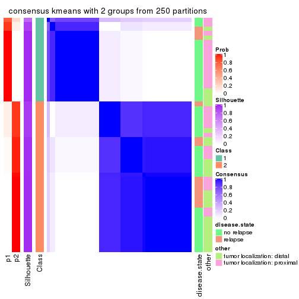
consensus_heatmap(res, k = 3)
consensus_heatmap(res, k = 4)
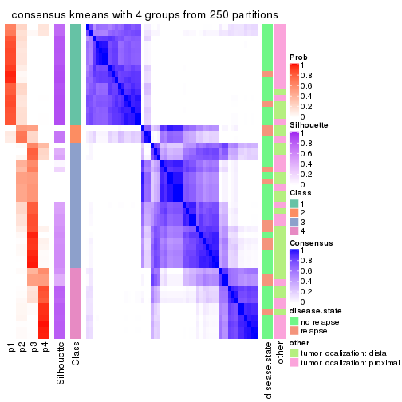
consensus_heatmap(res, k = 5)
consensus_heatmap(res, k = 6)
Heatmaps for the membership of samples in all partitions to see how consistent they are:
membership_heatmap(res, k = 2)
membership_heatmap(res, k = 3)
membership_heatmap(res, k = 4)
membership_heatmap(res, k = 5)
membership_heatmap(res, k = 6)
As soon as we have had the classes for columns, we can look for signatures which are significantly different between classes which can be candidate marks for certain classes. Following are the heatmaps for signatures.
Signature heatmaps where rows are scaled:
get_signatures(res, k = 2)
get_signatures(res, k = 3)
get_signatures(res, k = 4)
get_signatures(res, k = 5)
get_signatures(res, k = 6)
Signature heatmaps where rows are not scaled:
get_signatures(res, k = 2, scale_rows = FALSE)
get_signatures(res, k = 3, scale_rows = FALSE)
get_signatures(res, k = 4, scale_rows = FALSE)
get_signatures(res, k = 5, scale_rows = FALSE)
get_signatures(res, k = 6, scale_rows = FALSE)
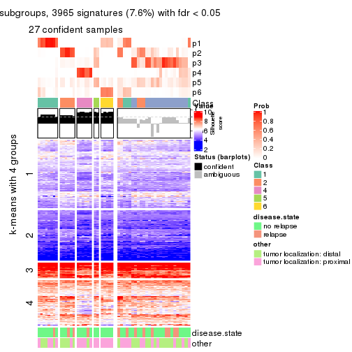
Compare the overlap of signatures from different k:
compare_signatures(res)
get_signature() returns a data frame invisibly. TO get the list of signatures, the function
call should be assigned to a variable explicitly. In following code, if plot argument is set
to FALSE, no heatmap is plotted while only the differential analysis is performed.
# code only for demonstration
tb = get_signature(res, k = ..., plot = FALSE)
An example of the output of tb is:
#> which_row fdr mean_1 mean_2 scaled_mean_1 scaled_mean_2 km
#> 1 38 0.042760348 8.373488 9.131774 -0.5533452 0.5164555 1
#> 2 40 0.018707592 7.106213 8.469186 -0.6173731 0.5762149 1
#> 3 55 0.019134737 10.221463 11.207825 -0.6159697 0.5749050 1
#> 4 59 0.006059896 5.921854 7.869574 -0.6899429 0.6439467 1
#> 5 60 0.018055526 8.928898 10.211722 -0.6204761 0.5791110 1
#> 6 98 0.009384629 15.714769 14.887706 0.6635654 -0.6193277 2
...
The columns in tb are:
which_row: row indices corresponding to the input matrix.fdr: FDR for the differential test. mean_x: The mean value in group x.scaled_mean_x: The mean value in group x after rows are scaled.km: Row groups if k-means clustering is applied to rows.UMAP plot which shows how samples are separated.
dimension_reduction(res, k = 2, method = "UMAP")
dimension_reduction(res, k = 3, method = "UMAP")
dimension_reduction(res, k = 4, method = "UMAP")
dimension_reduction(res, k = 5, method = "UMAP")
dimension_reduction(res, k = 6, method = "UMAP")
Following heatmap shows how subgroups are split when increasing k:
collect_classes(res)
Test correlation between subgroups and known annotations. If the known annotation is numeric, one-way ANOVA test is applied, and if the known annotation is discrete, chi-squared contingency table test is applied.
test_to_known_factors(res)
#> n disease.state(p) other(p) k
#> CV:kmeans 53 0.440 0.0470 2
#> CV:kmeans 53 0.153 0.0299 3
#> CV:kmeans 38 0.133 0.0666 4
#> CV:kmeans 34 0.393 0.1200 5
#> CV:kmeans 27 0.575 0.0236 6
If matrix rows can be associated to genes, consider to use functional_enrichment(res,
...) to perform function enrichment for the signature genes. See this vignette for more detailed explanations.
The object with results only for a single top-value method and a single partition method can be extracted as:
res = res_list["CV", "skmeans"]
# you can also extract it by
# res = res_list["CV:skmeans"]
A summary of res and all the functions that can be applied to it:
res
#> A 'ConsensusPartition' object with k = 2, 3, 4, 5, 6.
#> On a matrix with 51941 rows and 53 columns.
#> Top rows (1000, 2000, 3000, 4000, 5000) are extracted by 'CV' method.
#> Subgroups are detected by 'skmeans' method.
#> Performed in total 1250 partitions by row resampling.
#> Best k for subgroups seems to be 3.
#>
#> Following methods can be applied to this 'ConsensusPartition' object:
#> [1] "cola_report" "collect_classes" "collect_plots"
#> [4] "collect_stats" "colnames" "compare_signatures"
#> [7] "consensus_heatmap" "dimension_reduction" "functional_enrichment"
#> [10] "get_anno_col" "get_anno" "get_classes"
#> [13] "get_consensus" "get_matrix" "get_membership"
#> [16] "get_param" "get_signatures" "get_stats"
#> [19] "is_best_k" "is_stable_k" "membership_heatmap"
#> [22] "ncol" "nrow" "plot_ecdf"
#> [25] "rownames" "select_partition_number" "show"
#> [28] "suggest_best_k" "test_to_known_factors"
collect_plots() function collects all the plots made from res for all k (number of partitions)
into one single page to provide an easy and fast comparison between different k.
collect_plots(res)
The plots are:
k and the heatmap of
predicted classes for each k.k.k.k.All the plots in panels can be made by individual functions and they are plotted later in this section.
select_partition_number() produces several plots showing different
statistics for choosing “optimized” k. There are following statistics:
k;k, the area increased is defined as \(A_k - A_{k-1}\).The detailed explanations of these statistics can be found in the cola vignette.
Generally speaking, lower PAC score, higher mean silhouette score or higher
concordance corresponds to better partition. Rand index and Jaccard index
measure how similar the current partition is compared to partition with k-1.
If they are too similar, we won't accept k is better than k-1.
select_partition_number(res)
The numeric values for all these statistics can be obtained by get_stats().
get_stats(res)
#> k 1-PAC mean_silhouette concordance area_increased Rand Jaccard
#> 2 2 1.000 0.983 0.993 0.4851 0.512 0.512
#> 3 3 0.911 0.930 0.966 0.3923 0.716 0.495
#> 4 4 0.744 0.773 0.886 0.1162 0.864 0.614
#> 5 5 0.691 0.630 0.797 0.0517 0.984 0.934
#> 6 6 0.696 0.515 0.736 0.0387 0.970 0.868
suggest_best_k() suggests the best \(k\) based on these statistics. The rules are as follows:
suggest_best_k(res)
#> [1] 3
#> attr(,"optional")
#> [1] 2
There is also optional best \(k\) = 2 that is worth to check.
Following shows the table of the partitions (You need to click the show/hide
code output link to see it). The membership matrix (columns with name p*)
is inferred by
clue::cl_consensus()
function with the SE method. Basically the value in the membership matrix
represents the probability to belong to a certain group. The finall class
label for an item is determined with the group with highest probability it
belongs to.
In get_classes() function, the entropy is calculated from the membership
matrix and the silhouette score is calculated from the consensus matrix.
cbind(get_classes(res, k = 2), get_membership(res, k = 2))
#> class entropy silhouette p1 p2
#> GSM452149 2 0.000 0.999 0.000 1.000
#> GSM452150 2 0.000 0.999 0.000 1.000
#> GSM452152 2 0.000 0.999 0.000 1.000
#> GSM452154 2 0.000 0.999 0.000 1.000
#> GSM452160 2 0.000 0.999 0.000 1.000
#> GSM452167 2 0.000 0.999 0.000 1.000
#> GSM452182 1 0.000 0.981 1.000 0.000
#> GSM452185 2 0.000 0.999 0.000 1.000
#> GSM452186 2 0.000 0.999 0.000 1.000
#> GSM452187 2 0.000 0.999 0.000 1.000
#> GSM452189 1 0.000 0.981 1.000 0.000
#> GSM452195 2 0.000 0.999 0.000 1.000
#> GSM452196 2 0.000 0.999 0.000 1.000
#> GSM452197 1 0.000 0.981 1.000 0.000
#> GSM452198 2 0.000 0.999 0.000 1.000
#> GSM452199 2 0.000 0.999 0.000 1.000
#> GSM452148 1 0.000 0.981 1.000 0.000
#> GSM452151 1 0.855 0.615 0.720 0.280
#> GSM452153 1 0.000 0.981 1.000 0.000
#> GSM452155 2 0.000 0.999 0.000 1.000
#> GSM452156 2 0.000 0.999 0.000 1.000
#> GSM452157 1 0.000 0.981 1.000 0.000
#> GSM452158 2 0.000 0.999 0.000 1.000
#> GSM452162 1 0.430 0.897 0.912 0.088
#> GSM452163 1 0.000 0.981 1.000 0.000
#> GSM452166 2 0.000 0.999 0.000 1.000
#> GSM452168 1 0.000 0.981 1.000 0.000
#> GSM452169 1 0.000 0.981 1.000 0.000
#> GSM452170 2 0.000 0.999 0.000 1.000
#> GSM452172 2 0.163 0.975 0.024 0.976
#> GSM452173 1 0.000 0.981 1.000 0.000
#> GSM452174 1 0.000 0.981 1.000 0.000
#> GSM452176 2 0.000 0.999 0.000 1.000
#> GSM452179 1 0.000 0.981 1.000 0.000
#> GSM452180 1 0.000 0.981 1.000 0.000
#> GSM452181 2 0.000 0.999 0.000 1.000
#> GSM452183 1 0.000 0.981 1.000 0.000
#> GSM452184 1 0.000 0.981 1.000 0.000
#> GSM452188 1 0.000 0.981 1.000 0.000
#> GSM452193 2 0.000 0.999 0.000 1.000
#> GSM452165 2 0.000 0.999 0.000 1.000
#> GSM452171 2 0.000 0.999 0.000 1.000
#> GSM452175 1 0.000 0.981 1.000 0.000
#> GSM452177 2 0.000 0.999 0.000 1.000
#> GSM452190 1 0.000 0.981 1.000 0.000
#> GSM452191 2 0.000 0.999 0.000 1.000
#> GSM452192 2 0.000 0.999 0.000 1.000
#> GSM452194 2 0.000 0.999 0.000 1.000
#> GSM452200 2 0.000 0.999 0.000 1.000
#> GSM452159 1 0.000 0.981 1.000 0.000
#> GSM452161 2 0.000 0.999 0.000 1.000
#> GSM452164 2 0.000 0.999 0.000 1.000
#> GSM452178 2 0.000 0.999 0.000 1.000
cbind(get_classes(res, k = 3), get_membership(res, k = 3))
#> class entropy silhouette p1 p2 p3
#> GSM452149 2 0.1289 0.921 0.000 0.968 0.032
#> GSM452150 2 0.0892 0.926 0.000 0.980 0.020
#> GSM452152 3 0.0000 0.980 0.000 0.000 1.000
#> GSM452154 3 0.2448 0.925 0.000 0.076 0.924
#> GSM452160 2 0.1289 0.920 0.000 0.968 0.032
#> GSM452167 2 0.0592 0.930 0.000 0.988 0.012
#> GSM452182 1 0.0000 0.988 1.000 0.000 0.000
#> GSM452185 3 0.0000 0.980 0.000 0.000 1.000
#> GSM452186 2 0.0000 0.931 0.000 1.000 0.000
#> GSM452187 3 0.2796 0.906 0.000 0.092 0.908
#> GSM452189 1 0.0000 0.988 1.000 0.000 0.000
#> GSM452195 2 0.0000 0.931 0.000 1.000 0.000
#> GSM452196 2 0.0000 0.931 0.000 1.000 0.000
#> GSM452197 1 0.0000 0.988 1.000 0.000 0.000
#> GSM452198 3 0.0000 0.980 0.000 0.000 1.000
#> GSM452199 2 0.0000 0.931 0.000 1.000 0.000
#> GSM452148 2 0.4399 0.772 0.188 0.812 0.000
#> GSM452151 3 0.0000 0.980 0.000 0.000 1.000
#> GSM452153 1 0.1031 0.967 0.976 0.000 0.024
#> GSM452155 3 0.2796 0.908 0.000 0.092 0.908
#> GSM452156 2 0.0747 0.928 0.000 0.984 0.016
#> GSM452157 1 0.0000 0.988 1.000 0.000 0.000
#> GSM452158 2 0.0000 0.931 0.000 1.000 0.000
#> GSM452162 2 0.1182 0.925 0.012 0.976 0.012
#> GSM452163 1 0.0000 0.988 1.000 0.000 0.000
#> GSM452166 3 0.0000 0.980 0.000 0.000 1.000
#> GSM452168 1 0.0000 0.988 1.000 0.000 0.000
#> GSM452169 1 0.0000 0.988 1.000 0.000 0.000
#> GSM452170 3 0.0000 0.980 0.000 0.000 1.000
#> GSM452172 3 0.0000 0.980 0.000 0.000 1.000
#> GSM452173 1 0.0000 0.988 1.000 0.000 0.000
#> GSM452174 1 0.0000 0.988 1.000 0.000 0.000
#> GSM452176 3 0.0000 0.980 0.000 0.000 1.000
#> GSM452179 1 0.0000 0.988 1.000 0.000 0.000
#> GSM452180 1 0.0000 0.988 1.000 0.000 0.000
#> GSM452181 2 0.0000 0.931 0.000 1.000 0.000
#> GSM452183 1 0.0000 0.988 1.000 0.000 0.000
#> GSM452184 1 0.4178 0.794 0.828 0.000 0.172
#> GSM452188 1 0.0000 0.988 1.000 0.000 0.000
#> GSM452193 3 0.0424 0.975 0.000 0.008 0.992
#> GSM452165 2 0.0000 0.931 0.000 1.000 0.000
#> GSM452171 2 0.6062 0.362 0.000 0.616 0.384
#> GSM452175 1 0.0000 0.988 1.000 0.000 0.000
#> GSM452177 2 0.5397 0.638 0.000 0.720 0.280
#> GSM452190 2 0.4555 0.758 0.200 0.800 0.000
#> GSM452191 2 0.0000 0.931 0.000 1.000 0.000
#> GSM452192 2 0.3482 0.849 0.000 0.872 0.128
#> GSM452194 3 0.0000 0.980 0.000 0.000 1.000
#> GSM452200 3 0.0000 0.980 0.000 0.000 1.000
#> GSM452159 1 0.0000 0.988 1.000 0.000 0.000
#> GSM452161 2 0.0000 0.931 0.000 1.000 0.000
#> GSM452164 2 0.0747 0.928 0.000 0.984 0.016
#> GSM452178 3 0.0000 0.980 0.000 0.000 1.000
cbind(get_classes(res, k = 4), get_membership(res, k = 4))
#> class entropy silhouette p1 p2 p3 p4
#> GSM452149 3 0.2647 0.6997 0.000 0.120 0.880 0.000
#> GSM452150 3 0.1867 0.7142 0.000 0.072 0.928 0.000
#> GSM452152 4 0.4989 -0.0876 0.000 0.000 0.472 0.528
#> GSM452154 4 0.5272 0.6615 0.000 0.084 0.172 0.744
#> GSM452160 3 0.1824 0.7145 0.000 0.060 0.936 0.004
#> GSM452167 3 0.3266 0.6667 0.000 0.168 0.832 0.000
#> GSM452182 1 0.0524 0.9684 0.988 0.000 0.008 0.004
#> GSM452185 4 0.1211 0.8759 0.000 0.000 0.040 0.960
#> GSM452186 2 0.0592 0.8853 0.000 0.984 0.016 0.000
#> GSM452187 3 0.2888 0.6579 0.000 0.004 0.872 0.124
#> GSM452189 1 0.0000 0.9731 1.000 0.000 0.000 0.000
#> GSM452195 2 0.2814 0.8065 0.000 0.868 0.132 0.000
#> GSM452196 2 0.0336 0.8870 0.000 0.992 0.008 0.000
#> GSM452197 1 0.0000 0.9731 1.000 0.000 0.000 0.000
#> GSM452198 4 0.2760 0.8146 0.000 0.000 0.128 0.872
#> GSM452199 2 0.0469 0.8868 0.000 0.988 0.012 0.000
#> GSM452148 2 0.3224 0.7948 0.120 0.864 0.016 0.000
#> GSM452151 4 0.0469 0.8746 0.000 0.000 0.012 0.988
#> GSM452153 1 0.4059 0.7660 0.788 0.000 0.012 0.200
#> GSM452155 3 0.6111 0.2931 0.000 0.052 0.556 0.392
#> GSM452156 3 0.5371 0.3161 0.000 0.364 0.616 0.020
#> GSM452157 1 0.0000 0.9731 1.000 0.000 0.000 0.000
#> GSM452158 2 0.1474 0.8771 0.000 0.948 0.052 0.000
#> GSM452162 2 0.4964 0.3487 0.004 0.616 0.380 0.000
#> GSM452163 1 0.0000 0.9731 1.000 0.000 0.000 0.000
#> GSM452166 4 0.0336 0.8778 0.000 0.000 0.008 0.992
#> GSM452168 1 0.0524 0.9684 0.988 0.000 0.008 0.004
#> GSM452169 1 0.0000 0.9731 1.000 0.000 0.000 0.000
#> GSM452170 4 0.0469 0.8746 0.000 0.000 0.012 0.988
#> GSM452172 4 0.0336 0.8760 0.000 0.000 0.008 0.992
#> GSM452173 1 0.0188 0.9713 0.996 0.004 0.000 0.000
#> GSM452174 1 0.0000 0.9731 1.000 0.000 0.000 0.000
#> GSM452176 4 0.1302 0.8751 0.000 0.000 0.044 0.956
#> GSM452179 1 0.0000 0.9731 1.000 0.000 0.000 0.000
#> GSM452180 1 0.0000 0.9731 1.000 0.000 0.000 0.000
#> GSM452181 2 0.0592 0.8872 0.000 0.984 0.016 0.000
#> GSM452183 1 0.0188 0.9713 0.996 0.004 0.000 0.000
#> GSM452184 1 0.3672 0.8069 0.824 0.000 0.012 0.164
#> GSM452188 1 0.0524 0.9684 0.988 0.000 0.008 0.004
#> GSM452193 4 0.1807 0.8698 0.000 0.008 0.052 0.940
#> GSM452165 2 0.1022 0.8812 0.000 0.968 0.032 0.000
#> GSM452171 3 0.6111 0.5640 0.000 0.256 0.652 0.092
#> GSM452175 1 0.0188 0.9718 0.996 0.000 0.004 0.000
#> GSM452177 3 0.6027 0.6103 0.000 0.192 0.684 0.124
#> GSM452190 2 0.3501 0.7809 0.132 0.848 0.020 0.000
#> GSM452191 2 0.2011 0.8477 0.000 0.920 0.080 0.000
#> GSM452192 3 0.2197 0.7090 0.000 0.048 0.928 0.024
#> GSM452194 3 0.4933 0.2353 0.000 0.000 0.568 0.432
#> GSM452200 4 0.1211 0.8763 0.000 0.000 0.040 0.960
#> GSM452159 1 0.0000 0.9731 1.000 0.000 0.000 0.000
#> GSM452161 2 0.1661 0.8759 0.000 0.944 0.052 0.004
#> GSM452164 3 0.5290 0.2423 0.000 0.404 0.584 0.012
#> GSM452178 3 0.4916 0.2647 0.000 0.000 0.576 0.424
cbind(get_classes(res, k = 5), get_membership(res, k = 5))
#> class entropy silhouette p1 p2 p3 p4 p5
#> GSM452149 3 0.4199 0.5248 0.000 0.100 0.800 0.012 0.088
#> GSM452150 3 0.1646 0.5516 0.000 0.032 0.944 0.004 0.020
#> GSM452152 4 0.6670 -0.0780 0.000 0.000 0.308 0.436 0.256
#> GSM452154 4 0.6824 0.2914 0.000 0.080 0.288 0.548 0.084
#> GSM452160 3 0.1186 0.5516 0.000 0.020 0.964 0.008 0.008
#> GSM452167 3 0.5659 0.0725 0.000 0.164 0.632 0.000 0.204
#> GSM452182 1 0.2516 0.8801 0.860 0.000 0.000 0.000 0.140
#> GSM452185 4 0.2685 0.7797 0.000 0.000 0.028 0.880 0.092
#> GSM452186 2 0.0324 0.7245 0.000 0.992 0.004 0.000 0.004
#> GSM452187 3 0.3242 0.5300 0.000 0.000 0.844 0.116 0.040
#> GSM452189 1 0.1892 0.8938 0.916 0.004 0.000 0.000 0.080
#> GSM452195 2 0.5689 0.3909 0.000 0.616 0.136 0.000 0.248
#> GSM452196 2 0.1628 0.7183 0.000 0.936 0.008 0.000 0.056
#> GSM452197 1 0.1851 0.9049 0.912 0.000 0.000 0.000 0.088
#> GSM452198 4 0.3409 0.7192 0.000 0.000 0.160 0.816 0.024
#> GSM452199 2 0.1894 0.7115 0.000 0.920 0.008 0.000 0.072
#> GSM452148 2 0.4504 0.5955 0.084 0.748 0.000 0.000 0.168
#> GSM452151 4 0.2189 0.7869 0.000 0.000 0.012 0.904 0.084
#> GSM452153 1 0.5709 0.6533 0.652 0.000 0.008 0.184 0.156
#> GSM452155 5 0.7107 0.6744 0.000 0.084 0.264 0.116 0.536
#> GSM452156 5 0.6543 0.6811 0.000 0.176 0.312 0.008 0.504
#> GSM452157 1 0.0609 0.9121 0.980 0.000 0.000 0.000 0.020
#> GSM452158 2 0.3816 0.5260 0.000 0.696 0.000 0.000 0.304
#> GSM452162 2 0.6966 -0.2997 0.004 0.396 0.240 0.004 0.356
#> GSM452163 1 0.0162 0.9117 0.996 0.000 0.000 0.000 0.004
#> GSM452166 4 0.1522 0.8042 0.000 0.000 0.012 0.944 0.044
#> GSM452168 1 0.2648 0.8741 0.848 0.000 0.000 0.000 0.152
#> GSM452169 1 0.0290 0.9121 0.992 0.000 0.000 0.000 0.008
#> GSM452170 4 0.2006 0.7936 0.000 0.000 0.012 0.916 0.072
#> GSM452172 4 0.1697 0.7968 0.000 0.000 0.008 0.932 0.060
#> GSM452173 1 0.2389 0.8719 0.880 0.004 0.000 0.000 0.116
#> GSM452174 1 0.0880 0.9093 0.968 0.000 0.000 0.000 0.032
#> GSM452176 4 0.1251 0.7997 0.000 0.000 0.036 0.956 0.008
#> GSM452179 1 0.0290 0.9121 0.992 0.000 0.000 0.000 0.008
#> GSM452180 1 0.0162 0.9125 0.996 0.000 0.000 0.000 0.004
#> GSM452181 2 0.1522 0.7246 0.000 0.944 0.012 0.000 0.044
#> GSM452183 1 0.1768 0.8912 0.924 0.004 0.000 0.000 0.072
#> GSM452184 1 0.6033 0.6497 0.628 0.000 0.016 0.160 0.196
#> GSM452188 1 0.2424 0.8825 0.868 0.000 0.000 0.000 0.132
#> GSM452193 4 0.3952 0.7350 0.000 0.024 0.032 0.812 0.132
#> GSM452165 2 0.1018 0.7202 0.000 0.968 0.016 0.000 0.016
#> GSM452171 3 0.7026 0.3212 0.000 0.236 0.560 0.108 0.096
#> GSM452175 1 0.1792 0.8982 0.916 0.000 0.000 0.000 0.084
#> GSM452177 3 0.5453 0.5107 0.000 0.108 0.728 0.100 0.064
#> GSM452190 2 0.4535 0.5900 0.108 0.752 0.000 0.000 0.140
#> GSM452191 2 0.3291 0.6677 0.000 0.848 0.088 0.000 0.064
#> GSM452192 3 0.1710 0.5448 0.000 0.012 0.944 0.020 0.024
#> GSM452194 3 0.4982 0.2374 0.000 0.000 0.556 0.412 0.032
#> GSM452200 4 0.1357 0.7967 0.000 0.000 0.048 0.948 0.004
#> GSM452159 1 0.0609 0.9119 0.980 0.000 0.000 0.000 0.020
#> GSM452161 2 0.4456 0.4763 0.000 0.660 0.020 0.000 0.320
#> GSM452164 3 0.6790 -0.5658 0.000 0.284 0.364 0.000 0.352
#> GSM452178 3 0.5288 0.2155 0.000 0.000 0.544 0.404 0.052
cbind(get_classes(res, k = 6), get_membership(res, k = 6))
#> class entropy silhouette p1 p2 p3 p4 p5 p6
#> GSM452149 3 0.5089 0.507 0.000 0.088 0.720 0.004 0.072 0.116
#> GSM452150 3 0.2501 0.598 0.000 0.016 0.896 0.004 0.056 0.028
#> GSM452152 4 0.6480 0.285 0.000 0.000 0.192 0.528 0.216 0.064
#> GSM452154 4 0.7360 0.167 0.000 0.032 0.320 0.412 0.064 0.172
#> GSM452160 3 0.2094 0.604 0.000 0.020 0.912 0.004 0.060 0.004
#> GSM452167 3 0.6837 -0.138 0.000 0.160 0.440 0.004 0.328 0.068
#> GSM452182 1 0.3499 0.354 0.680 0.000 0.000 0.000 0.000 0.320
#> GSM452185 4 0.4545 0.671 0.000 0.000 0.032 0.720 0.048 0.200
#> GSM452186 2 0.1313 0.684 0.000 0.952 0.016 0.000 0.028 0.004
#> GSM452187 3 0.3863 0.593 0.000 0.004 0.812 0.084 0.068 0.032
#> GSM452189 1 0.2350 0.698 0.880 0.000 0.000 0.000 0.020 0.100
#> GSM452195 2 0.6607 0.149 0.000 0.440 0.124 0.000 0.360 0.076
#> GSM452196 2 0.2790 0.661 0.000 0.844 0.000 0.000 0.132 0.024
#> GSM452197 1 0.1970 0.705 0.900 0.000 0.000 0.000 0.008 0.092
#> GSM452198 4 0.5499 0.569 0.000 0.000 0.188 0.640 0.032 0.140
#> GSM452199 2 0.2851 0.663 0.000 0.844 0.004 0.000 0.132 0.020
#> GSM452148 2 0.4490 0.560 0.044 0.764 0.004 0.000 0.072 0.116
#> GSM452151 4 0.2605 0.701 0.000 0.000 0.000 0.864 0.028 0.108
#> GSM452153 1 0.5762 -0.684 0.428 0.000 0.000 0.172 0.000 0.400
#> GSM452155 5 0.4788 0.556 0.000 0.016 0.136 0.084 0.740 0.024
#> GSM452156 5 0.3535 0.642 0.000 0.052 0.144 0.004 0.800 0.000
#> GSM452157 1 0.1957 0.695 0.888 0.000 0.000 0.000 0.000 0.112
#> GSM452158 2 0.4988 0.376 0.000 0.552 0.004 0.000 0.380 0.064
#> GSM452162 5 0.6286 0.422 0.000 0.312 0.092 0.000 0.516 0.080
#> GSM452163 1 0.1075 0.729 0.952 0.000 0.000 0.000 0.000 0.048
#> GSM452166 4 0.0653 0.731 0.000 0.000 0.004 0.980 0.012 0.004
#> GSM452168 1 0.3695 0.185 0.624 0.000 0.000 0.000 0.000 0.376
#> GSM452169 1 0.0146 0.733 0.996 0.000 0.000 0.000 0.000 0.004
#> GSM452170 4 0.1838 0.721 0.000 0.000 0.000 0.916 0.016 0.068
#> GSM452172 4 0.1812 0.723 0.000 0.000 0.000 0.912 0.008 0.080
#> GSM452173 1 0.3041 0.639 0.832 0.000 0.000 0.000 0.040 0.128
#> GSM452174 1 0.1152 0.731 0.952 0.000 0.000 0.000 0.004 0.044
#> GSM452176 4 0.2852 0.714 0.000 0.000 0.064 0.856 0.000 0.080
#> GSM452179 1 0.0632 0.733 0.976 0.000 0.000 0.000 0.000 0.024
#> GSM452180 1 0.0865 0.734 0.964 0.000 0.000 0.000 0.000 0.036
#> GSM452181 2 0.2182 0.680 0.000 0.900 0.004 0.000 0.076 0.020
#> GSM452183 1 0.2221 0.679 0.896 0.000 0.000 0.000 0.032 0.072
#> GSM452184 6 0.6483 0.000 0.340 0.000 0.028 0.152 0.012 0.468
#> GSM452188 1 0.3515 0.337 0.676 0.000 0.000 0.000 0.000 0.324
#> GSM452193 4 0.6260 0.559 0.000 0.020 0.068 0.580 0.076 0.256
#> GSM452165 2 0.1167 0.672 0.000 0.960 0.012 0.000 0.008 0.020
#> GSM452171 3 0.7729 0.284 0.000 0.216 0.476 0.100 0.112 0.096
#> GSM452175 1 0.2996 0.550 0.772 0.000 0.000 0.000 0.000 0.228
#> GSM452177 3 0.4642 0.574 0.000 0.032 0.772 0.048 0.048 0.100
#> GSM452190 2 0.4604 0.543 0.072 0.752 0.000 0.000 0.064 0.112
#> GSM452191 2 0.3995 0.594 0.000 0.796 0.104 0.000 0.056 0.044
#> GSM452192 3 0.1956 0.598 0.000 0.008 0.908 0.004 0.080 0.000
#> GSM452194 3 0.5020 0.290 0.000 0.000 0.568 0.372 0.028 0.032
#> GSM452200 4 0.2688 0.715 0.000 0.000 0.064 0.868 0.000 0.068
#> GSM452159 1 0.0632 0.732 0.976 0.000 0.000 0.000 0.000 0.024
#> GSM452161 2 0.5616 0.266 0.000 0.480 0.040 0.000 0.424 0.056
#> GSM452164 5 0.6166 0.604 0.000 0.188 0.200 0.000 0.564 0.048
#> GSM452178 3 0.5548 0.218 0.000 0.000 0.504 0.404 0.052 0.040
Heatmaps for the consensus matrix. It visualizes the probability of two samples to be in a same group.
consensus_heatmap(res, k = 2)
consensus_heatmap(res, k = 3)

consensus_heatmap(res, k = 4)
consensus_heatmap(res, k = 5)
consensus_heatmap(res, k = 6)
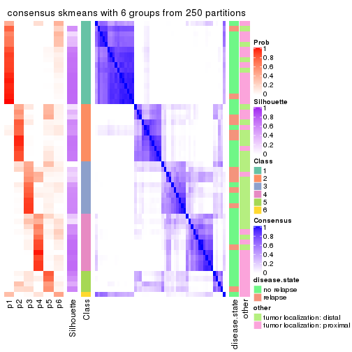
Heatmaps for the membership of samples in all partitions to see how consistent they are:
membership_heatmap(res, k = 2)
membership_heatmap(res, k = 3)
membership_heatmap(res, k = 4)
membership_heatmap(res, k = 5)
membership_heatmap(res, k = 6)
As soon as we have had the classes for columns, we can look for signatures which are significantly different between classes which can be candidate marks for certain classes. Following are the heatmaps for signatures.
Signature heatmaps where rows are scaled:
get_signatures(res, k = 2)
get_signatures(res, k = 3)
get_signatures(res, k = 4)
get_signatures(res, k = 5)
get_signatures(res, k = 6)
Signature heatmaps where rows are not scaled:
get_signatures(res, k = 2, scale_rows = FALSE)
get_signatures(res, k = 3, scale_rows = FALSE)
get_signatures(res, k = 4, scale_rows = FALSE)
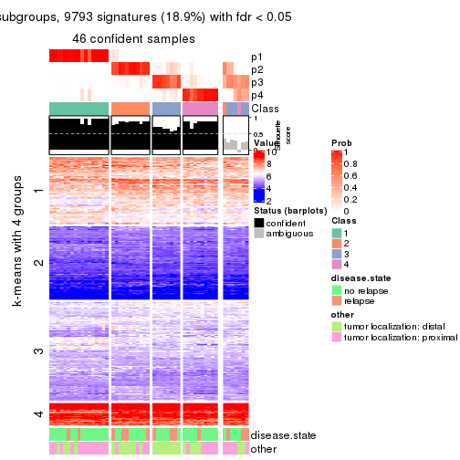
get_signatures(res, k = 5, scale_rows = FALSE)
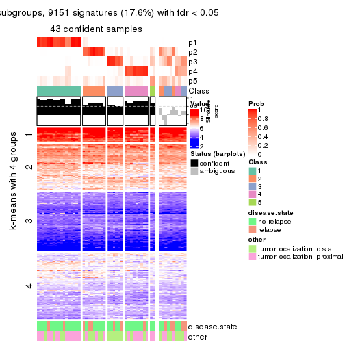
get_signatures(res, k = 6, scale_rows = FALSE)
Compare the overlap of signatures from different k:
compare_signatures(res)
get_signature() returns a data frame invisibly. TO get the list of signatures, the function
call should be assigned to a variable explicitly. In following code, if plot argument is set
to FALSE, no heatmap is plotted while only the differential analysis is performed.
# code only for demonstration
tb = get_signature(res, k = ..., plot = FALSE)
An example of the output of tb is:
#> which_row fdr mean_1 mean_2 scaled_mean_1 scaled_mean_2 km
#> 1 38 0.042760348 8.373488 9.131774 -0.5533452 0.5164555 1
#> 2 40 0.018707592 7.106213 8.469186 -0.6173731 0.5762149 1
#> 3 55 0.019134737 10.221463 11.207825 -0.6159697 0.5749050 1
#> 4 59 0.006059896 5.921854 7.869574 -0.6899429 0.6439467 1
#> 5 60 0.018055526 8.928898 10.211722 -0.6204761 0.5791110 1
#> 6 98 0.009384629 15.714769 14.887706 0.6635654 -0.6193277 2
...
The columns in tb are:
which_row: row indices corresponding to the input matrix.fdr: FDR for the differential test. mean_x: The mean value in group x.scaled_mean_x: The mean value in group x after rows are scaled.km: Row groups if k-means clustering is applied to rows.UMAP plot which shows how samples are separated.
dimension_reduction(res, k = 2, method = "UMAP")
dimension_reduction(res, k = 3, method = "UMAP")
dimension_reduction(res, k = 4, method = "UMAP")
dimension_reduction(res, k = 5, method = "UMAP")
dimension_reduction(res, k = 6, method = "UMAP")
Following heatmap shows how subgroups are split when increasing k:
collect_classes(res)
Test correlation between subgroups and known annotations. If the known annotation is numeric, one-way ANOVA test is applied, and if the known annotation is discrete, chi-squared contingency table test is applied.
test_to_known_factors(res)
#> n disease.state(p) other(p) k
#> CV:skmeans 53 0.281 0.01319 2
#> CV:skmeans 52 0.234 0.04156 3
#> CV:skmeans 46 0.226 0.00293 4
#> CV:skmeans 43 0.483 0.00618 5
#> CV:skmeans 38 0.659 0.00484 6
If matrix rows can be associated to genes, consider to use functional_enrichment(res,
...) to perform function enrichment for the signature genes. See this vignette for more detailed explanations.
The object with results only for a single top-value method and a single partition method can be extracted as:
res = res_list["CV", "pam"]
# you can also extract it by
# res = res_list["CV:pam"]
A summary of res and all the functions that can be applied to it:
res
#> A 'ConsensusPartition' object with k = 2, 3, 4, 5, 6.
#> On a matrix with 51941 rows and 53 columns.
#> Top rows (1000, 2000, 3000, 4000, 5000) are extracted by 'CV' method.
#> Subgroups are detected by 'pam' method.
#> Performed in total 1250 partitions by row resampling.
#> Best k for subgroups seems to be 2.
#>
#> Following methods can be applied to this 'ConsensusPartition' object:
#> [1] "cola_report" "collect_classes" "collect_plots"
#> [4] "collect_stats" "colnames" "compare_signatures"
#> [7] "consensus_heatmap" "dimension_reduction" "functional_enrichment"
#> [10] "get_anno_col" "get_anno" "get_classes"
#> [13] "get_consensus" "get_matrix" "get_membership"
#> [16] "get_param" "get_signatures" "get_stats"
#> [19] "is_best_k" "is_stable_k" "membership_heatmap"
#> [22] "ncol" "nrow" "plot_ecdf"
#> [25] "rownames" "select_partition_number" "show"
#> [28] "suggest_best_k" "test_to_known_factors"
collect_plots() function collects all the plots made from res for all k (number of partitions)
into one single page to provide an easy and fast comparison between different k.
collect_plots(res)
The plots are:
k and the heatmap of
predicted classes for each k.k.k.k.All the plots in panels can be made by individual functions and they are plotted later in this section.
select_partition_number() produces several plots showing different
statistics for choosing “optimized” k. There are following statistics:
k;k, the area increased is defined as \(A_k - A_{k-1}\).The detailed explanations of these statistics can be found in the cola vignette.
Generally speaking, lower PAC score, higher mean silhouette score or higher
concordance corresponds to better partition. Rand index and Jaccard index
measure how similar the current partition is compared to partition with k-1.
If they are too similar, we won't accept k is better than k-1.
select_partition_number(res)
The numeric values for all these statistics can be obtained by get_stats().
get_stats(res)
#> k 1-PAC mean_silhouette concordance area_increased Rand Jaccard
#> 2 2 0.965 0.970 0.985 0.4666 0.531 0.531
#> 3 3 0.824 0.865 0.943 0.4253 0.758 0.563
#> 4 4 0.751 0.760 0.866 0.0803 0.960 0.881
#> 5 5 0.649 0.632 0.776 0.0827 0.931 0.788
#> 6 6 0.663 0.536 0.757 0.0565 0.813 0.419
suggest_best_k() suggests the best \(k\) based on these statistics. The rules are as follows:
suggest_best_k(res)
#> [1] 2
Following shows the table of the partitions (You need to click the show/hide
code output link to see it). The membership matrix (columns with name p*)
is inferred by
clue::cl_consensus()
function with the SE method. Basically the value in the membership matrix
represents the probability to belong to a certain group. The finall class
label for an item is determined with the group with highest probability it
belongs to.
In get_classes() function, the entropy is calculated from the membership
matrix and the silhouette score is calculated from the consensus matrix.
cbind(get_classes(res, k = 2), get_membership(res, k = 2))
#> class entropy silhouette p1 p2
#> GSM452149 2 0.0000 0.990 0.000 1.000
#> GSM452150 2 0.0000 0.990 0.000 1.000
#> GSM452152 2 0.0000 0.990 0.000 1.000
#> GSM452154 2 0.0000 0.990 0.000 1.000
#> GSM452160 2 0.0000 0.990 0.000 1.000
#> GSM452167 2 0.0000 0.990 0.000 1.000
#> GSM452182 1 0.0000 0.973 1.000 0.000
#> GSM452185 2 0.1184 0.979 0.016 0.984
#> GSM452186 2 0.3114 0.940 0.056 0.944
#> GSM452187 2 0.0000 0.990 0.000 1.000
#> GSM452189 1 0.0000 0.973 1.000 0.000
#> GSM452195 2 0.0000 0.990 0.000 1.000
#> GSM452196 2 0.0000 0.990 0.000 1.000
#> GSM452197 1 0.0000 0.973 1.000 0.000
#> GSM452198 2 0.0000 0.990 0.000 1.000
#> GSM452199 2 0.0000 0.990 0.000 1.000
#> GSM452148 1 0.4815 0.894 0.896 0.104
#> GSM452151 2 0.1184 0.979 0.016 0.984
#> GSM452153 1 0.6973 0.783 0.812 0.188
#> GSM452155 2 0.0000 0.990 0.000 1.000
#> GSM452156 2 0.0000 0.990 0.000 1.000
#> GSM452157 1 0.0000 0.973 1.000 0.000
#> GSM452158 2 0.0000 0.990 0.000 1.000
#> GSM452162 1 0.5842 0.854 0.860 0.140
#> GSM452163 1 0.0000 0.973 1.000 0.000
#> GSM452166 2 0.0000 0.990 0.000 1.000
#> GSM452168 1 0.0938 0.966 0.988 0.012
#> GSM452169 1 0.0000 0.973 1.000 0.000
#> GSM452170 2 0.0000 0.990 0.000 1.000
#> GSM452172 2 0.1184 0.979 0.016 0.984
#> GSM452173 1 0.0000 0.973 1.000 0.000
#> GSM452174 1 0.0000 0.973 1.000 0.000
#> GSM452176 2 0.0000 0.990 0.000 1.000
#> GSM452179 1 0.0000 0.973 1.000 0.000
#> GSM452180 1 0.0000 0.973 1.000 0.000
#> GSM452181 2 0.2043 0.964 0.032 0.968
#> GSM452183 1 0.0000 0.973 1.000 0.000
#> GSM452184 2 0.6438 0.804 0.164 0.836
#> GSM452188 1 0.0000 0.973 1.000 0.000
#> GSM452193 2 0.1184 0.979 0.016 0.984
#> GSM452165 2 0.0000 0.990 0.000 1.000
#> GSM452171 2 0.0000 0.990 0.000 1.000
#> GSM452175 1 0.0000 0.973 1.000 0.000
#> GSM452177 2 0.0000 0.990 0.000 1.000
#> GSM452190 1 0.2423 0.947 0.960 0.040
#> GSM452191 2 0.1184 0.978 0.016 0.984
#> GSM452192 2 0.0000 0.990 0.000 1.000
#> GSM452194 2 0.0000 0.990 0.000 1.000
#> GSM452200 2 0.0000 0.990 0.000 1.000
#> GSM452159 1 0.0000 0.973 1.000 0.000
#> GSM452161 2 0.0000 0.990 0.000 1.000
#> GSM452164 2 0.0000 0.990 0.000 1.000
#> GSM452178 2 0.0000 0.990 0.000 1.000
cbind(get_classes(res, k = 3), get_membership(res, k = 3))
#> class entropy silhouette p1 p2 p3
#> GSM452149 3 0.4654 0.742 0.000 0.208 0.792
#> GSM452150 3 0.6295 0.137 0.000 0.472 0.528
#> GSM452152 3 0.0000 0.912 0.000 0.000 1.000
#> GSM452154 3 0.2448 0.873 0.000 0.076 0.924
#> GSM452160 3 0.4931 0.683 0.000 0.232 0.768
#> GSM452167 3 0.4887 0.709 0.000 0.228 0.772
#> GSM452182 1 0.0592 0.970 0.988 0.012 0.000
#> GSM452185 3 0.0000 0.912 0.000 0.000 1.000
#> GSM452186 2 0.0000 0.914 0.000 1.000 0.000
#> GSM452187 3 0.0000 0.912 0.000 0.000 1.000
#> GSM452189 1 0.0000 0.979 1.000 0.000 0.000
#> GSM452195 3 0.5968 0.424 0.000 0.364 0.636
#> GSM452196 2 0.0000 0.914 0.000 1.000 0.000
#> GSM452197 1 0.0000 0.979 1.000 0.000 0.000
#> GSM452198 3 0.0892 0.903 0.000 0.020 0.980
#> GSM452199 2 0.0000 0.914 0.000 1.000 0.000
#> GSM452148 2 0.0592 0.909 0.012 0.988 0.000
#> GSM452151 3 0.0000 0.912 0.000 0.000 1.000
#> GSM452153 1 0.4418 0.829 0.848 0.020 0.132
#> GSM452155 3 0.2537 0.870 0.000 0.080 0.920
#> GSM452156 2 0.0000 0.914 0.000 1.000 0.000
#> GSM452157 1 0.0000 0.979 1.000 0.000 0.000
#> GSM452158 2 0.6126 0.247 0.000 0.600 0.400
#> GSM452162 2 0.0747 0.906 0.016 0.984 0.000
#> GSM452163 1 0.0000 0.979 1.000 0.000 0.000
#> GSM452166 3 0.0000 0.912 0.000 0.000 1.000
#> GSM452168 1 0.4209 0.843 0.860 0.120 0.020
#> GSM452169 1 0.0000 0.979 1.000 0.000 0.000
#> GSM452170 3 0.0000 0.912 0.000 0.000 1.000
#> GSM452172 3 0.0000 0.912 0.000 0.000 1.000
#> GSM452173 1 0.0000 0.979 1.000 0.000 0.000
#> GSM452174 1 0.0000 0.979 1.000 0.000 0.000
#> GSM452176 3 0.0000 0.912 0.000 0.000 1.000
#> GSM452179 1 0.0000 0.979 1.000 0.000 0.000
#> GSM452180 1 0.0000 0.979 1.000 0.000 0.000
#> GSM452181 2 0.0000 0.914 0.000 1.000 0.000
#> GSM452183 1 0.0000 0.979 1.000 0.000 0.000
#> GSM452184 3 0.0000 0.912 0.000 0.000 1.000
#> GSM452188 1 0.0000 0.979 1.000 0.000 0.000
#> GSM452193 3 0.2537 0.870 0.000 0.080 0.920
#> GSM452165 2 0.0000 0.914 0.000 1.000 0.000
#> GSM452171 2 0.4842 0.661 0.000 0.776 0.224
#> GSM452175 1 0.0000 0.979 1.000 0.000 0.000
#> GSM452177 3 0.0000 0.912 0.000 0.000 1.000
#> GSM452190 2 0.0892 0.903 0.020 0.980 0.000
#> GSM452191 2 0.0000 0.914 0.000 1.000 0.000
#> GSM452192 3 0.0000 0.912 0.000 0.000 1.000
#> GSM452194 3 0.0000 0.912 0.000 0.000 1.000
#> GSM452200 3 0.0000 0.912 0.000 0.000 1.000
#> GSM452159 1 0.0000 0.979 1.000 0.000 0.000
#> GSM452161 2 0.0000 0.914 0.000 1.000 0.000
#> GSM452164 2 0.5621 0.544 0.000 0.692 0.308
#> GSM452178 3 0.0000 0.912 0.000 0.000 1.000
cbind(get_classes(res, k = 4), get_membership(res, k = 4))
#> class entropy silhouette p1 p2 p3 p4
#> GSM452149 3 0.5397 0.706 0.000 0.212 0.720 0.068
#> GSM452150 3 0.6438 0.197 0.000 0.436 0.496 0.068
#> GSM452152 3 0.1792 0.853 0.000 0.000 0.932 0.068
#> GSM452154 3 0.2610 0.829 0.000 0.088 0.900 0.012
#> GSM452160 3 0.5250 0.694 0.000 0.196 0.736 0.068
#> GSM452167 3 0.5500 0.677 0.000 0.224 0.708 0.068
#> GSM452182 4 0.2149 0.867 0.088 0.000 0.000 0.912
#> GSM452185 3 0.0469 0.861 0.000 0.000 0.988 0.012
#> GSM452186 2 0.0000 0.871 0.000 1.000 0.000 0.000
#> GSM452187 3 0.1792 0.853 0.000 0.000 0.932 0.068
#> GSM452189 1 0.4830 0.257 0.608 0.000 0.000 0.392
#> GSM452195 3 0.6264 0.364 0.000 0.376 0.560 0.064
#> GSM452196 2 0.0000 0.871 0.000 1.000 0.000 0.000
#> GSM452197 1 0.2011 0.847 0.920 0.000 0.000 0.080
#> GSM452198 3 0.1388 0.859 0.000 0.028 0.960 0.012
#> GSM452199 2 0.0000 0.871 0.000 1.000 0.000 0.000
#> GSM452148 2 0.1389 0.845 0.000 0.952 0.000 0.048
#> GSM452151 3 0.0592 0.861 0.000 0.000 0.984 0.016
#> GSM452153 4 0.4817 0.369 0.388 0.000 0.000 0.612
#> GSM452155 3 0.3587 0.830 0.000 0.088 0.860 0.052
#> GSM452156 2 0.0000 0.871 0.000 1.000 0.000 0.000
#> GSM452157 1 0.0188 0.878 0.996 0.000 0.000 0.004
#> GSM452158 2 0.5337 0.167 0.000 0.564 0.424 0.012
#> GSM452162 2 0.1389 0.845 0.000 0.952 0.000 0.048
#> GSM452163 1 0.2011 0.841 0.920 0.000 0.000 0.080
#> GSM452166 3 0.1792 0.854 0.000 0.000 0.932 0.068
#> GSM452168 4 0.2266 0.865 0.084 0.004 0.000 0.912
#> GSM452169 1 0.0336 0.882 0.992 0.000 0.000 0.008
#> GSM452170 3 0.0469 0.862 0.000 0.000 0.988 0.012
#> GSM452172 3 0.0592 0.861 0.000 0.000 0.984 0.016
#> GSM452173 1 0.4331 0.518 0.712 0.000 0.000 0.288
#> GSM452174 1 0.0336 0.882 0.992 0.000 0.000 0.008
#> GSM452176 3 0.0592 0.861 0.000 0.000 0.984 0.016
#> GSM452179 1 0.0336 0.882 0.992 0.000 0.000 0.008
#> GSM452180 1 0.2011 0.846 0.920 0.000 0.000 0.080
#> GSM452181 2 0.0000 0.871 0.000 1.000 0.000 0.000
#> GSM452183 1 0.0469 0.879 0.988 0.000 0.000 0.012
#> GSM452184 3 0.5137 0.160 0.004 0.000 0.544 0.452
#> GSM452188 4 0.2469 0.864 0.108 0.000 0.000 0.892
#> GSM452193 3 0.2973 0.821 0.000 0.096 0.884 0.020
#> GSM452165 2 0.0000 0.871 0.000 1.000 0.000 0.000
#> GSM452171 2 0.4804 0.557 0.000 0.708 0.276 0.016
#> GSM452175 4 0.3024 0.841 0.148 0.000 0.000 0.852
#> GSM452177 3 0.0592 0.861 0.000 0.000 0.984 0.016
#> GSM452190 2 0.2799 0.780 0.008 0.884 0.000 0.108
#> GSM452191 2 0.0188 0.870 0.000 0.996 0.000 0.004
#> GSM452192 3 0.2197 0.856 0.000 0.024 0.928 0.048
#> GSM452194 3 0.1792 0.853 0.000 0.000 0.932 0.068
#> GSM452200 3 0.0592 0.861 0.000 0.000 0.984 0.016
#> GSM452159 1 0.0592 0.881 0.984 0.000 0.000 0.016
#> GSM452161 2 0.0336 0.868 0.000 0.992 0.008 0.000
#> GSM452164 2 0.6052 0.423 0.000 0.616 0.320 0.064
#> GSM452178 3 0.0921 0.861 0.000 0.000 0.972 0.028
cbind(get_classes(res, k = 5), get_membership(res, k = 5))
#> class entropy silhouette p1 p2 p3 p4 p5
#> GSM452149 3 0.6528 0.31091 0.000 0.284 0.480 0.000 NA
#> GSM452150 2 0.6739 0.10966 0.000 0.392 0.260 0.000 NA
#> GSM452152 3 0.3003 0.68902 0.000 0.000 0.812 0.000 NA
#> GSM452154 3 0.3840 0.65875 0.000 0.076 0.808 0.000 NA
#> GSM452160 3 0.5941 0.46558 0.000 0.124 0.544 0.000 NA
#> GSM452167 3 0.6431 0.31192 0.000 0.176 0.436 0.000 NA
#> GSM452182 4 0.0000 0.76011 0.000 0.000 0.000 1.000 NA
#> GSM452185 3 0.0000 0.70778 0.000 0.000 1.000 0.000 NA
#> GSM452186 2 0.0290 0.79668 0.000 0.992 0.000 0.000 NA
#> GSM452187 3 0.1544 0.70658 0.000 0.000 0.932 0.000 NA
#> GSM452189 1 0.5351 0.37467 0.560 0.000 0.000 0.380 NA
#> GSM452195 3 0.6532 0.10343 0.000 0.384 0.420 0.000 NA
#> GSM452196 2 0.0609 0.79705 0.000 0.980 0.000 0.000 NA
#> GSM452197 1 0.2653 0.82601 0.880 0.000 0.000 0.096 NA
#> GSM452198 3 0.1965 0.71528 0.000 0.024 0.924 0.000 NA
#> GSM452199 2 0.1121 0.79671 0.000 0.956 0.000 0.000 NA
#> GSM452148 2 0.2260 0.76598 0.000 0.908 0.000 0.064 NA
#> GSM452151 3 0.4210 0.52659 0.000 0.000 0.588 0.000 NA
#> GSM452153 4 0.3949 0.21272 0.332 0.000 0.000 0.668 NA
#> GSM452155 3 0.5245 0.60264 0.000 0.080 0.640 0.000 NA
#> GSM452156 2 0.3857 0.70417 0.000 0.688 0.000 0.000 NA
#> GSM452157 1 0.0162 0.86906 0.996 0.000 0.000 0.000 NA
#> GSM452158 2 0.5580 0.53184 0.000 0.632 0.236 0.000 NA
#> GSM452162 2 0.3752 0.72726 0.000 0.812 0.000 0.064 NA
#> GSM452163 1 0.1608 0.84095 0.928 0.000 0.000 0.072 NA
#> GSM452166 3 0.3039 0.69491 0.000 0.000 0.808 0.000 NA
#> GSM452168 4 0.0000 0.76011 0.000 0.000 0.000 1.000 NA
#> GSM452169 1 0.0000 0.86899 1.000 0.000 0.000 0.000 NA
#> GSM452170 3 0.4030 0.56741 0.000 0.000 0.648 0.000 NA
#> GSM452172 3 0.4015 0.56613 0.000 0.000 0.652 0.000 NA
#> GSM452173 1 0.5252 0.49124 0.616 0.000 0.000 0.316 NA
#> GSM452174 1 0.0000 0.86899 1.000 0.000 0.000 0.000 NA
#> GSM452176 3 0.2230 0.68573 0.000 0.000 0.884 0.000 NA
#> GSM452179 1 0.0000 0.86899 1.000 0.000 0.000 0.000 NA
#> GSM452180 1 0.3056 0.82983 0.864 0.000 0.000 0.068 NA
#> GSM452181 2 0.0609 0.79742 0.000 0.980 0.000 0.000 NA
#> GSM452183 1 0.1410 0.85882 0.940 0.000 0.000 0.000 NA
#> GSM452184 4 0.4306 -0.10081 0.000 0.000 0.492 0.508 NA
#> GSM452188 4 0.0162 0.75942 0.004 0.000 0.000 0.996 NA
#> GSM452193 3 0.2754 0.69613 0.000 0.080 0.880 0.000 NA
#> GSM452165 2 0.2230 0.78267 0.000 0.884 0.000 0.000 NA
#> GSM452171 2 0.6259 0.44970 0.000 0.540 0.212 0.000 NA
#> GSM452175 4 0.1697 0.72606 0.060 0.000 0.000 0.932 NA
#> GSM452177 3 0.3242 0.62988 0.000 0.000 0.784 0.000 NA
#> GSM452190 2 0.3234 0.73456 0.000 0.852 0.000 0.064 NA
#> GSM452191 2 0.3039 0.74221 0.000 0.808 0.000 0.000 NA
#> GSM452192 3 0.4908 0.57308 0.000 0.044 0.636 0.000 NA
#> GSM452194 3 0.1544 0.70658 0.000 0.000 0.932 0.000 NA
#> GSM452200 3 0.2230 0.68573 0.000 0.000 0.884 0.000 NA
#> GSM452159 1 0.1341 0.85927 0.944 0.000 0.000 0.056 NA
#> GSM452161 2 0.4083 0.74880 0.000 0.788 0.080 0.000 NA
#> GSM452164 3 0.6696 0.00789 0.000 0.372 0.388 0.000 NA
#> GSM452178 3 0.0703 0.71011 0.000 0.000 0.976 0.000 NA
cbind(get_classes(res, k = 6), get_membership(res, k = 6))
#> class entropy silhouette p1 p2 p3 p4 p5 p6
#> GSM452149 2 0.6773 0.09245 0.000 0.396 0.388 0.096 0.120 0.000
#> GSM452150 3 0.3071 0.49590 0.000 0.180 0.804 0.016 0.000 0.000
#> GSM452152 4 0.5455 0.23856 0.000 0.000 0.172 0.564 0.264 0.000
#> GSM452154 4 0.5114 0.42307 0.000 0.060 0.064 0.688 0.188 0.000
#> GSM452160 3 0.3781 0.50626 0.000 0.036 0.756 0.204 0.004 0.000
#> GSM452167 3 0.4689 0.51389 0.000 0.120 0.736 0.108 0.036 0.000
#> GSM452182 6 0.0000 0.86749 0.000 0.000 0.000 0.000 0.000 1.000
#> GSM452185 4 0.1934 0.69641 0.000 0.000 0.044 0.916 0.040 0.000
#> GSM452186 2 0.0713 0.69397 0.000 0.972 0.000 0.000 0.028 0.000
#> GSM452187 4 0.2562 0.67503 0.000 0.000 0.172 0.828 0.000 0.000
#> GSM452189 1 0.5714 0.29948 0.516 0.000 0.024 0.000 0.096 0.364
#> GSM452195 2 0.6632 0.20522 0.000 0.524 0.140 0.232 0.104 0.000
#> GSM452196 2 0.0632 0.69129 0.000 0.976 0.024 0.000 0.000 0.000
#> GSM452197 1 0.2666 0.80835 0.872 0.000 0.028 0.000 0.008 0.092
#> GSM452198 4 0.3257 0.66818 0.000 0.012 0.152 0.816 0.020 0.000
#> GSM452199 2 0.0547 0.69122 0.000 0.980 0.020 0.000 0.000 0.000
#> GSM452148 2 0.2849 0.66251 0.000 0.876 0.036 0.000 0.044 0.044
#> GSM452151 5 0.4846 0.44679 0.000 0.000 0.068 0.356 0.576 0.000
#> GSM452153 6 0.3636 0.34943 0.320 0.000 0.000 0.000 0.004 0.676
#> GSM452155 5 0.6334 0.05709 0.000 0.068 0.108 0.324 0.500 0.000
#> GSM452156 5 0.5326 -0.30169 0.000 0.432 0.104 0.000 0.464 0.000
#> GSM452157 1 0.0000 0.84464 1.000 0.000 0.000 0.000 0.000 0.000
#> GSM452158 2 0.5625 0.51721 0.000 0.612 0.036 0.112 0.240 0.000
#> GSM452162 3 0.5415 0.00179 0.000 0.436 0.484 0.000 0.036 0.044
#> GSM452163 1 0.1444 0.81394 0.928 0.000 0.000 0.000 0.000 0.072
#> GSM452166 4 0.2053 0.61672 0.000 0.000 0.004 0.888 0.108 0.000
#> GSM452168 6 0.0000 0.86749 0.000 0.000 0.000 0.000 0.000 1.000
#> GSM452169 1 0.0000 0.84464 1.000 0.000 0.000 0.000 0.000 0.000
#> GSM452170 5 0.3810 0.41300 0.000 0.000 0.000 0.428 0.572 0.000
#> GSM452172 5 0.3774 0.43304 0.000 0.000 0.000 0.408 0.592 0.000
#> GSM452173 1 0.5968 0.35705 0.532 0.000 0.036 0.000 0.116 0.316
#> GSM452174 1 0.0000 0.84464 1.000 0.000 0.000 0.000 0.000 0.000
#> GSM452176 4 0.0632 0.66656 0.000 0.000 0.000 0.976 0.024 0.000
#> GSM452179 1 0.0000 0.84464 1.000 0.000 0.000 0.000 0.000 0.000
#> GSM452180 1 0.3851 0.77700 0.800 0.000 0.028 0.000 0.116 0.056
#> GSM452181 2 0.0405 0.69212 0.000 0.988 0.008 0.000 0.004 0.000
#> GSM452183 1 0.2436 0.81713 0.880 0.000 0.032 0.000 0.088 0.000
#> GSM452184 4 0.3864 0.14769 0.000 0.000 0.000 0.520 0.000 0.480
#> GSM452188 6 0.0000 0.86749 0.000 0.000 0.000 0.000 0.000 1.000
#> GSM452193 4 0.4410 0.58040 0.000 0.056 0.100 0.768 0.076 0.000
#> GSM452165 2 0.3520 0.62765 0.000 0.776 0.036 0.000 0.188 0.000
#> GSM452171 3 0.5248 0.17185 0.000 0.404 0.508 0.084 0.004 0.000
#> GSM452175 6 0.1890 0.82846 0.060 0.000 0.024 0.000 0.000 0.916
#> GSM452177 3 0.4650 0.17935 0.000 0.000 0.488 0.472 0.040 0.000
#> GSM452190 2 0.3909 0.57786 0.000 0.792 0.036 0.000 0.132 0.040
#> GSM452191 2 0.3364 0.58315 0.000 0.780 0.196 0.000 0.024 0.000
#> GSM452192 3 0.4075 0.49614 0.000 0.048 0.712 0.240 0.000 0.000
#> GSM452194 4 0.2491 0.67947 0.000 0.000 0.164 0.836 0.000 0.000
#> GSM452200 4 0.1814 0.62363 0.000 0.000 0.000 0.900 0.100 0.000
#> GSM452159 1 0.1616 0.83366 0.932 0.000 0.020 0.000 0.000 0.048
#> GSM452161 2 0.5987 0.21701 0.000 0.480 0.272 0.004 0.244 0.000
#> GSM452164 3 0.6618 0.14383 0.000 0.216 0.452 0.288 0.044 0.000
#> GSM452178 4 0.1910 0.70047 0.000 0.000 0.108 0.892 0.000 0.000
Heatmaps for the consensus matrix. It visualizes the probability of two samples to be in a same group.
consensus_heatmap(res, k = 2)
consensus_heatmap(res, k = 3)
consensus_heatmap(res, k = 4)
consensus_heatmap(res, k = 5)
consensus_heatmap(res, k = 6)
Heatmaps for the membership of samples in all partitions to see how consistent they are:
membership_heatmap(res, k = 2)
membership_heatmap(res, k = 3)
membership_heatmap(res, k = 4)
membership_heatmap(res, k = 5)
membership_heatmap(res, k = 6)
As soon as we have had the classes for columns, we can look for signatures which are significantly different between classes which can be candidate marks for certain classes. Following are the heatmaps for signatures.
Signature heatmaps where rows are scaled:
get_signatures(res, k = 2)
get_signatures(res, k = 3)
get_signatures(res, k = 4)
get_signatures(res, k = 5)
get_signatures(res, k = 6)
Signature heatmaps where rows are not scaled:
get_signatures(res, k = 2, scale_rows = FALSE)
get_signatures(res, k = 3, scale_rows = FALSE)
get_signatures(res, k = 4, scale_rows = FALSE)
get_signatures(res, k = 5, scale_rows = FALSE)
get_signatures(res, k = 6, scale_rows = FALSE)
Compare the overlap of signatures from different k:
compare_signatures(res)
get_signature() returns a data frame invisibly. TO get the list of signatures, the function
call should be assigned to a variable explicitly. In following code, if plot argument is set
to FALSE, no heatmap is plotted while only the differential analysis is performed.
# code only for demonstration
tb = get_signature(res, k = ..., plot = FALSE)
An example of the output of tb is:
#> which_row fdr mean_1 mean_2 scaled_mean_1 scaled_mean_2 km
#> 1 38 0.042760348 8.373488 9.131774 -0.5533452 0.5164555 1
#> 2 40 0.018707592 7.106213 8.469186 -0.6173731 0.5762149 1
#> 3 55 0.019134737 10.221463 11.207825 -0.6159697 0.5749050 1
#> 4 59 0.006059896 5.921854 7.869574 -0.6899429 0.6439467 1
#> 5 60 0.018055526 8.928898 10.211722 -0.6204761 0.5791110 1
#> 6 98 0.009384629 15.714769 14.887706 0.6635654 -0.6193277 2
...
The columns in tb are:
which_row: row indices corresponding to the input matrix.fdr: FDR for the differential test. mean_x: The mean value in group x.scaled_mean_x: The mean value in group x after rows are scaled.km: Row groups if k-means clustering is applied to rows.UMAP plot which shows how samples are separated.
dimension_reduction(res, k = 2, method = "UMAP")
dimension_reduction(res, k = 3, method = "UMAP")
dimension_reduction(res, k = 4, method = "UMAP")
dimension_reduction(res, k = 5, method = "UMAP")
dimension_reduction(res, k = 6, method = "UMAP")
Following heatmap shows how subgroups are split when increasing k:
collect_classes(res)
Test correlation between subgroups and known annotations. If the known annotation is numeric, one-way ANOVA test is applied, and if the known annotation is discrete, chi-squared contingency table test is applied.
test_to_known_factors(res)
#> n disease.state(p) other(p) k
#> CV:pam 53 0.440 0.0470 2
#> CV:pam 50 0.116 0.1217 3
#> CV:pam 46 0.413 0.0586 4
#> CV:pam 42 0.689 0.1916 5
#> CV:pam 33 0.681 0.0739 6
If matrix rows can be associated to genes, consider to use functional_enrichment(res,
...) to perform function enrichment for the signature genes. See this vignette for more detailed explanations.
The object with results only for a single top-value method and a single partition method can be extracted as:
res = res_list["CV", "mclust"]
# you can also extract it by
# res = res_list["CV:mclust"]
A summary of res and all the functions that can be applied to it:
res
#> A 'ConsensusPartition' object with k = 2, 3, 4, 5, 6.
#> On a matrix with 51941 rows and 53 columns.
#> Top rows (1000, 2000, 3000, 4000, 5000) are extracted by 'CV' method.
#> Subgroups are detected by 'mclust' method.
#> Performed in total 1250 partitions by row resampling.
#> Best k for subgroups seems to be 2.
#>
#> Following methods can be applied to this 'ConsensusPartition' object:
#> [1] "cola_report" "collect_classes" "collect_plots"
#> [4] "collect_stats" "colnames" "compare_signatures"
#> [7] "consensus_heatmap" "dimension_reduction" "functional_enrichment"
#> [10] "get_anno_col" "get_anno" "get_classes"
#> [13] "get_consensus" "get_matrix" "get_membership"
#> [16] "get_param" "get_signatures" "get_stats"
#> [19] "is_best_k" "is_stable_k" "membership_heatmap"
#> [22] "ncol" "nrow" "plot_ecdf"
#> [25] "rownames" "select_partition_number" "show"
#> [28] "suggest_best_k" "test_to_known_factors"
collect_plots() function collects all the plots made from res for all k (number of partitions)
into one single page to provide an easy and fast comparison between different k.
collect_plots(res)
The plots are:
k and the heatmap of
predicted classes for each k.k.k.k.All the plots in panels can be made by individual functions and they are plotted later in this section.
select_partition_number() produces several plots showing different
statistics for choosing “optimized” k. There are following statistics:
k;k, the area increased is defined as \(A_k - A_{k-1}\).The detailed explanations of these statistics can be found in the cola vignette.
Generally speaking, lower PAC score, higher mean silhouette score or higher
concordance corresponds to better partition. Rand index and Jaccard index
measure how similar the current partition is compared to partition with k-1.
If they are too similar, we won't accept k is better than k-1.
select_partition_number(res)
The numeric values for all these statistics can be obtained by get_stats().
get_stats(res)
#> k 1-PAC mean_silhouette concordance area_increased Rand Jaccard
#> 2 2 1.000 0.976 0.988 0.4601 0.543 0.543
#> 3 3 0.645 0.662 0.857 0.3866 0.808 0.647
#> 4 4 0.661 0.757 0.818 0.0795 0.759 0.458
#> 5 5 0.592 0.647 0.773 0.0799 0.956 0.855
#> 6 6 0.616 0.686 0.740 0.0659 0.929 0.741
suggest_best_k() suggests the best \(k\) based on these statistics. The rules are as follows:
suggest_best_k(res)
#> [1] 2
Following shows the table of the partitions (You need to click the show/hide
code output link to see it). The membership matrix (columns with name p*)
is inferred by
clue::cl_consensus()
function with the SE method. Basically the value in the membership matrix
represents the probability to belong to a certain group. The finall class
label for an item is determined with the group with highest probability it
belongs to.
In get_classes() function, the entropy is calculated from the membership
matrix and the silhouette score is calculated from the consensus matrix.
cbind(get_classes(res, k = 2), get_membership(res, k = 2))
#> class entropy silhouette p1 p2
#> GSM452149 2 0.0000 0.986 0.000 1.000
#> GSM452150 2 0.0000 0.986 0.000 1.000
#> GSM452152 2 0.0000 0.986 0.000 1.000
#> GSM452154 2 0.0000 0.986 0.000 1.000
#> GSM452160 2 0.0000 0.986 0.000 1.000
#> GSM452167 2 0.0000 0.986 0.000 1.000
#> GSM452182 1 0.0376 0.993 0.996 0.004
#> GSM452185 2 0.0000 0.986 0.000 1.000
#> GSM452186 2 0.0000 0.986 0.000 1.000
#> GSM452187 2 0.0000 0.986 0.000 1.000
#> GSM452189 1 0.0376 0.993 0.996 0.004
#> GSM452195 2 0.0376 0.983 0.004 0.996
#> GSM452196 2 0.0000 0.986 0.000 1.000
#> GSM452197 1 0.0376 0.993 0.996 0.004
#> GSM452198 2 0.0000 0.986 0.000 1.000
#> GSM452199 2 0.0000 0.986 0.000 1.000
#> GSM452148 1 0.0376 0.993 0.996 0.004
#> GSM452151 2 0.2043 0.958 0.032 0.968
#> GSM452153 1 0.5178 0.870 0.884 0.116
#> GSM452155 2 0.0000 0.986 0.000 1.000
#> GSM452156 2 0.0000 0.986 0.000 1.000
#> GSM452157 1 0.0376 0.993 0.996 0.004
#> GSM452158 2 0.0000 0.986 0.000 1.000
#> GSM452162 2 0.4939 0.876 0.108 0.892
#> GSM452163 1 0.0376 0.993 0.996 0.004
#> GSM452166 2 0.0000 0.986 0.000 1.000
#> GSM452168 1 0.0376 0.993 0.996 0.004
#> GSM452169 1 0.0376 0.993 0.996 0.004
#> GSM452170 2 0.0000 0.986 0.000 1.000
#> GSM452172 2 0.0938 0.976 0.012 0.988
#> GSM452173 1 0.0376 0.993 0.996 0.004
#> GSM452174 1 0.0376 0.993 0.996 0.004
#> GSM452176 2 0.0000 0.986 0.000 1.000
#> GSM452179 1 0.0376 0.993 0.996 0.004
#> GSM452180 1 0.0376 0.993 0.996 0.004
#> GSM452181 2 0.0000 0.986 0.000 1.000
#> GSM452183 1 0.0376 0.993 0.996 0.004
#> GSM452184 2 0.8763 0.583 0.296 0.704
#> GSM452188 1 0.0376 0.993 0.996 0.004
#> GSM452193 2 0.0000 0.986 0.000 1.000
#> GSM452165 2 0.0000 0.986 0.000 1.000
#> GSM452171 2 0.0376 0.983 0.004 0.996
#> GSM452175 1 0.0376 0.993 0.996 0.004
#> GSM452177 2 0.0000 0.986 0.000 1.000
#> GSM452190 1 0.0376 0.993 0.996 0.004
#> GSM452191 2 0.0000 0.986 0.000 1.000
#> GSM452192 2 0.0000 0.986 0.000 1.000
#> GSM452194 2 0.0000 0.986 0.000 1.000
#> GSM452200 2 0.0000 0.986 0.000 1.000
#> GSM452159 1 0.0376 0.993 0.996 0.004
#> GSM452161 2 0.0376 0.983 0.004 0.996
#> GSM452164 2 0.0376 0.983 0.004 0.996
#> GSM452178 2 0.0000 0.986 0.000 1.000
cbind(get_classes(res, k = 3), get_membership(res, k = 3))
#> class entropy silhouette p1 p2 p3
#> GSM452149 2 0.0000 0.7555 0.000 1.000 0.000
#> GSM452150 2 0.6244 -0.3710 0.000 0.560 0.440
#> GSM452152 3 0.6274 0.3006 0.000 0.456 0.544
#> GSM452154 2 0.0237 0.7546 0.000 0.996 0.004
#> GSM452160 3 0.6295 0.4777 0.000 0.472 0.528
#> GSM452167 2 0.1753 0.7097 0.000 0.952 0.048
#> GSM452182 1 0.0000 0.9717 1.000 0.000 0.000
#> GSM452185 2 0.4178 0.5455 0.000 0.828 0.172
#> GSM452186 2 0.0000 0.7555 0.000 1.000 0.000
#> GSM452187 3 0.6244 0.5202 0.000 0.440 0.560
#> GSM452189 1 0.0000 0.9717 1.000 0.000 0.000
#> GSM452195 2 0.0000 0.7555 0.000 1.000 0.000
#> GSM452196 2 0.0237 0.7553 0.000 0.996 0.004
#> GSM452197 1 0.0000 0.9717 1.000 0.000 0.000
#> GSM452198 3 0.5706 0.6445 0.000 0.320 0.680
#> GSM452199 2 0.0424 0.7539 0.000 0.992 0.008
#> GSM452148 1 0.6663 0.7018 0.748 0.156 0.096
#> GSM452151 2 0.6225 0.2092 0.000 0.568 0.432
#> GSM452153 1 0.2711 0.9003 0.912 0.000 0.088
#> GSM452155 2 0.2356 0.7102 0.000 0.928 0.072
#> GSM452156 2 0.3482 0.6694 0.000 0.872 0.128
#> GSM452157 1 0.0000 0.9717 1.000 0.000 0.000
#> GSM452158 2 0.0000 0.7555 0.000 1.000 0.000
#> GSM452162 2 0.5551 0.5294 0.020 0.768 0.212
#> GSM452163 1 0.0000 0.9717 1.000 0.000 0.000
#> GSM452166 3 0.5016 0.6584 0.000 0.240 0.760
#> GSM452168 1 0.0000 0.9717 1.000 0.000 0.000
#> GSM452169 1 0.0000 0.9717 1.000 0.000 0.000
#> GSM452170 3 0.5058 0.4946 0.000 0.244 0.756
#> GSM452172 3 0.6062 0.1412 0.000 0.384 0.616
#> GSM452173 1 0.0000 0.9717 1.000 0.000 0.000
#> GSM452174 1 0.0000 0.9717 1.000 0.000 0.000
#> GSM452176 3 0.4504 0.6588 0.000 0.196 0.804
#> GSM452179 1 0.0000 0.9717 1.000 0.000 0.000
#> GSM452180 1 0.0000 0.9717 1.000 0.000 0.000
#> GSM452181 2 0.0237 0.7554 0.000 0.996 0.004
#> GSM452183 1 0.0000 0.9717 1.000 0.000 0.000
#> GSM452184 2 0.7824 0.2163 0.060 0.564 0.376
#> GSM452188 1 0.0000 0.9717 1.000 0.000 0.000
#> GSM452193 2 0.1411 0.7364 0.000 0.964 0.036
#> GSM452165 2 0.0237 0.7553 0.000 0.996 0.004
#> GSM452171 2 0.5988 -0.0882 0.000 0.632 0.368
#> GSM452175 1 0.0000 0.9717 1.000 0.000 0.000
#> GSM452177 2 0.6008 -0.1140 0.000 0.628 0.372
#> GSM452190 1 0.4982 0.8388 0.840 0.064 0.096
#> GSM452191 2 0.1163 0.7451 0.000 0.972 0.028
#> GSM452192 3 0.6274 0.4975 0.000 0.456 0.544
#> GSM452194 3 0.5905 0.6359 0.000 0.352 0.648
#> GSM452200 3 0.4504 0.6588 0.000 0.196 0.804
#> GSM452159 1 0.0000 0.9717 1.000 0.000 0.000
#> GSM452161 2 0.0000 0.7555 0.000 1.000 0.000
#> GSM452164 2 0.2448 0.7084 0.000 0.924 0.076
#> GSM452178 2 0.6274 -0.3979 0.000 0.544 0.456
cbind(get_classes(res, k = 4), get_membership(res, k = 4))
#> class entropy silhouette p1 p2 p3 p4
#> GSM452149 3 0.1557 0.7778 0.000 0.056 0.944 0.000
#> GSM452150 3 0.1302 0.7956 0.000 0.000 0.956 0.044
#> GSM452152 3 0.4872 0.5599 0.000 0.004 0.640 0.356
#> GSM452154 3 0.2222 0.7825 0.000 0.060 0.924 0.016
#> GSM452160 3 0.1302 0.7956 0.000 0.000 0.956 0.044
#> GSM452167 3 0.2704 0.7331 0.000 0.124 0.876 0.000
#> GSM452182 1 0.0336 0.9440 0.992 0.008 0.000 0.000
#> GSM452185 3 0.5798 0.6448 0.004 0.084 0.704 0.208
#> GSM452186 2 0.4888 0.7181 0.000 0.588 0.412 0.000
#> GSM452187 3 0.1474 0.7957 0.000 0.000 0.948 0.052
#> GSM452189 1 0.0817 0.9419 0.976 0.024 0.000 0.000
#> GSM452195 3 0.2760 0.7335 0.000 0.128 0.872 0.000
#> GSM452196 2 0.4898 0.7275 0.000 0.584 0.416 0.000
#> GSM452197 1 0.1151 0.9411 0.968 0.024 0.000 0.008
#> GSM452198 3 0.3803 0.7218 0.000 0.032 0.836 0.132
#> GSM452199 2 0.4898 0.7275 0.000 0.584 0.416 0.000
#> GSM452148 2 0.6334 0.3727 0.260 0.652 0.076 0.012
#> GSM452151 4 0.5349 0.1935 0.004 0.012 0.368 0.616
#> GSM452153 1 0.2773 0.8923 0.900 0.028 0.000 0.072
#> GSM452155 3 0.3528 0.7320 0.000 0.000 0.808 0.192
#> GSM452156 3 0.4049 0.7119 0.000 0.008 0.780 0.212
#> GSM452157 1 0.1284 0.9391 0.964 0.024 0.000 0.012
#> GSM452158 3 0.3668 0.6581 0.000 0.188 0.808 0.004
#> GSM452162 3 0.7043 0.5054 0.012 0.272 0.592 0.124
#> GSM452163 1 0.1022 0.9390 0.968 0.032 0.000 0.000
#> GSM452166 4 0.3485 0.7608 0.000 0.028 0.116 0.856
#> GSM452168 1 0.1022 0.9407 0.968 0.032 0.000 0.000
#> GSM452169 1 0.0000 0.9444 1.000 0.000 0.000 0.000
#> GSM452170 4 0.1109 0.7757 0.000 0.004 0.028 0.968
#> GSM452172 4 0.1256 0.7704 0.000 0.008 0.028 0.964
#> GSM452173 1 0.2329 0.9167 0.916 0.072 0.000 0.012
#> GSM452174 1 0.0592 0.9426 0.984 0.016 0.000 0.000
#> GSM452176 4 0.5031 0.7468 0.000 0.212 0.048 0.740
#> GSM452179 1 0.0524 0.9446 0.988 0.008 0.000 0.004
#> GSM452180 1 0.0707 0.9412 0.980 0.020 0.000 0.000
#> GSM452181 2 0.4907 0.7214 0.000 0.580 0.420 0.000
#> GSM452183 1 0.1211 0.9395 0.960 0.040 0.000 0.000
#> GSM452184 1 0.8901 0.0943 0.472 0.096 0.176 0.256
#> GSM452188 1 0.0336 0.9440 0.992 0.008 0.000 0.000
#> GSM452193 3 0.5069 0.7237 0.004 0.096 0.776 0.124
#> GSM452165 2 0.4888 0.7282 0.000 0.588 0.412 0.000
#> GSM452171 3 0.2345 0.7542 0.000 0.100 0.900 0.000
#> GSM452175 1 0.0336 0.9445 0.992 0.008 0.000 0.000
#> GSM452177 3 0.0707 0.7905 0.000 0.020 0.980 0.000
#> GSM452190 2 0.5947 0.3104 0.312 0.628 0.060 0.000
#> GSM452191 2 0.5039 0.6902 0.000 0.592 0.404 0.004
#> GSM452192 3 0.1661 0.7953 0.000 0.004 0.944 0.052
#> GSM452194 3 0.2266 0.7857 0.000 0.004 0.912 0.084
#> GSM452200 4 0.5031 0.7468 0.000 0.212 0.048 0.740
#> GSM452159 1 0.0188 0.9441 0.996 0.004 0.000 0.000
#> GSM452161 3 0.2921 0.7212 0.000 0.140 0.860 0.000
#> GSM452164 3 0.5012 0.7396 0.000 0.112 0.772 0.116
#> GSM452178 3 0.2760 0.7716 0.000 0.000 0.872 0.128
cbind(get_classes(res, k = 5), get_membership(res, k = 5))
#> class entropy silhouette p1 p2 p3 p4 p5
#> GSM452149 3 0.2407 0.6918 0.000 0.088 0.896 0.012 0.004
#> GSM452150 3 0.1461 0.6969 0.000 0.028 0.952 0.016 0.004
#> GSM452152 4 0.4721 0.4135 0.000 0.012 0.316 0.656 0.016
#> GSM452154 3 0.3052 0.6924 0.000 0.072 0.876 0.036 0.016
#> GSM452160 3 0.1710 0.6950 0.000 0.040 0.940 0.016 0.004
#> GSM452167 3 0.3456 0.6254 0.000 0.184 0.800 0.000 0.016
#> GSM452182 1 0.0880 0.8648 0.968 0.000 0.000 0.000 0.032
#> GSM452185 3 0.6467 0.5114 0.000 0.064 0.616 0.216 0.104
#> GSM452186 2 0.4142 0.7154 0.000 0.728 0.252 0.004 0.016
#> GSM452187 3 0.1179 0.6977 0.000 0.016 0.964 0.016 0.004
#> GSM452189 1 0.1894 0.8594 0.920 0.008 0.000 0.000 0.072
#> GSM452195 3 0.4960 0.3609 0.000 0.352 0.616 0.016 0.016
#> GSM452196 2 0.3942 0.7146 0.000 0.728 0.260 0.000 0.012
#> GSM452197 1 0.1502 0.8612 0.940 0.004 0.000 0.000 0.056
#> GSM452198 3 0.5919 0.5657 0.000 0.068 0.688 0.132 0.112
#> GSM452199 2 0.3989 0.7154 0.000 0.728 0.260 0.004 0.008
#> GSM452148 2 0.5263 0.3921 0.188 0.704 0.004 0.008 0.096
#> GSM452151 4 0.3210 0.5981 0.008 0.048 0.028 0.880 0.036
#> GSM452153 1 0.5157 0.7672 0.716 0.004 0.004 0.140 0.136
#> GSM452155 3 0.6196 0.3038 0.000 0.072 0.520 0.380 0.028
#> GSM452156 3 0.6438 0.3505 0.000 0.196 0.560 0.232 0.012
#> GSM452157 1 0.3850 0.8375 0.792 0.004 0.000 0.032 0.172
#> GSM452158 3 0.5497 -0.0137 0.000 0.464 0.488 0.020 0.028
#> GSM452162 2 0.7561 0.1024 0.008 0.468 0.276 0.200 0.048
#> GSM452163 1 0.5393 0.7497 0.672 0.120 0.000 0.004 0.204
#> GSM452166 4 0.3370 0.4056 0.000 0.000 0.148 0.824 0.028
#> GSM452168 1 0.1831 0.8576 0.920 0.004 0.000 0.000 0.076
#> GSM452169 1 0.1732 0.8628 0.920 0.000 0.000 0.000 0.080
#> GSM452170 4 0.0912 0.5843 0.000 0.000 0.012 0.972 0.016
#> GSM452172 4 0.0451 0.5929 0.000 0.000 0.004 0.988 0.008
#> GSM452173 1 0.3482 0.8378 0.812 0.012 0.000 0.008 0.168
#> GSM452174 1 0.3372 0.7966 0.840 0.120 0.000 0.004 0.036
#> GSM452176 5 0.4392 1.0000 0.000 0.000 0.008 0.380 0.612
#> GSM452179 1 0.2228 0.8626 0.900 0.004 0.000 0.004 0.092
#> GSM452180 1 0.2891 0.8468 0.824 0.000 0.000 0.000 0.176
#> GSM452181 2 0.4260 0.7089 0.000 0.720 0.256 0.020 0.004
#> GSM452183 1 0.3013 0.8461 0.832 0.008 0.000 0.000 0.160
#> GSM452184 1 0.7212 0.4271 0.548 0.020 0.072 0.276 0.084
#> GSM452188 1 0.1410 0.8673 0.940 0.000 0.000 0.000 0.060
#> GSM452193 3 0.6400 0.5443 0.000 0.068 0.632 0.192 0.108
#> GSM452165 2 0.3534 0.7173 0.000 0.744 0.256 0.000 0.000
#> GSM452171 3 0.3319 0.6459 0.000 0.160 0.820 0.000 0.020
#> GSM452175 1 0.1671 0.8655 0.924 0.000 0.000 0.000 0.076
#> GSM452177 3 0.2376 0.6971 0.000 0.052 0.904 0.000 0.044
#> GSM452190 2 0.4231 0.3825 0.096 0.796 0.004 0.004 0.100
#> GSM452191 2 0.4059 0.6743 0.000 0.700 0.292 0.004 0.004
#> GSM452192 3 0.1913 0.6948 0.000 0.044 0.932 0.016 0.008
#> GSM452194 3 0.0771 0.6950 0.000 0.000 0.976 0.020 0.004
#> GSM452200 5 0.4392 1.0000 0.000 0.000 0.008 0.380 0.612
#> GSM452159 1 0.0290 0.8664 0.992 0.000 0.000 0.000 0.008
#> GSM452161 3 0.5181 0.3160 0.000 0.368 0.592 0.016 0.024
#> GSM452164 3 0.6966 0.2271 0.000 0.352 0.440 0.188 0.020
#> GSM452178 3 0.1901 0.6943 0.000 0.012 0.928 0.056 0.004
cbind(get_classes(res, k = 6), get_membership(res, k = 6))
#> class entropy silhouette p1 p2 p3 p4 p5 p6
#> GSM452149 3 0.2173 0.714 0.000 0.064 0.904 0.004 0.028 0.000
#> GSM452150 3 0.1863 0.727 0.000 0.036 0.920 0.044 0.000 0.000
#> GSM452152 4 0.4096 0.443 0.000 0.016 0.304 0.672 0.008 0.000
#> GSM452154 3 0.4543 0.660 0.000 0.064 0.768 0.056 0.104 0.008
#> GSM452160 3 0.2390 0.719 0.000 0.052 0.896 0.044 0.008 0.000
#> GSM452167 3 0.4956 0.539 0.004 0.176 0.700 0.004 0.104 0.012
#> GSM452182 1 0.3090 0.843 0.864 0.008 0.000 0.016 0.052 0.060
#> GSM452185 3 0.7948 0.440 0.004 0.092 0.472 0.108 0.144 0.180
#> GSM452186 2 0.2526 0.766 0.000 0.876 0.096 0.000 0.024 0.004
#> GSM452187 3 0.1349 0.731 0.000 0.004 0.940 0.056 0.000 0.000
#> GSM452189 1 0.2968 0.833 0.852 0.004 0.000 0.000 0.052 0.092
#> GSM452195 5 0.5425 0.542 0.000 0.148 0.300 0.000 0.552 0.000
#> GSM452196 2 0.2053 0.769 0.000 0.888 0.108 0.000 0.004 0.000
#> GSM452197 1 0.2128 0.846 0.908 0.004 0.000 0.000 0.032 0.056
#> GSM452198 3 0.5565 0.623 0.000 0.032 0.692 0.108 0.040 0.128
#> GSM452199 2 0.1957 0.771 0.000 0.888 0.112 0.000 0.000 0.000
#> GSM452148 2 0.6022 0.493 0.220 0.588 0.004 0.000 0.148 0.040
#> GSM452151 4 0.3843 0.620 0.004 0.008 0.032 0.824 0.060 0.072
#> GSM452153 1 0.5034 0.750 0.704 0.000 0.004 0.116 0.028 0.148
#> GSM452155 5 0.6182 0.511 0.000 0.008 0.288 0.224 0.476 0.004
#> GSM452156 5 0.6658 0.388 0.000 0.036 0.320 0.240 0.404 0.000
#> GSM452157 1 0.2692 0.833 0.840 0.000 0.000 0.012 0.000 0.148
#> GSM452158 5 0.6160 0.417 0.004 0.336 0.156 0.004 0.488 0.012
#> GSM452162 5 0.7036 0.453 0.012 0.204 0.064 0.188 0.520 0.012
#> GSM452163 1 0.4907 0.744 0.688 0.000 0.000 0.012 0.156 0.144
#> GSM452166 4 0.3588 0.455 0.000 0.000 0.152 0.788 0.000 0.060
#> GSM452168 1 0.2706 0.842 0.876 0.008 0.000 0.004 0.028 0.084
#> GSM452169 1 0.1777 0.844 0.932 0.000 0.000 0.012 0.024 0.032
#> GSM452170 4 0.0820 0.656 0.000 0.000 0.016 0.972 0.000 0.012
#> GSM452172 4 0.0603 0.662 0.000 0.000 0.016 0.980 0.004 0.000
#> GSM452173 1 0.3911 0.809 0.760 0.004 0.000 0.000 0.056 0.180
#> GSM452174 1 0.3411 0.772 0.804 0.000 0.000 0.012 0.160 0.024
#> GSM452176 6 0.3652 1.000 0.000 0.000 0.004 0.324 0.000 0.672
#> GSM452179 1 0.2577 0.827 0.884 0.000 0.000 0.012 0.072 0.032
#> GSM452180 1 0.1957 0.843 0.888 0.000 0.000 0.000 0.000 0.112
#> GSM452181 2 0.3657 0.727 0.000 0.808 0.128 0.036 0.028 0.000
#> GSM452183 1 0.3915 0.808 0.756 0.004 0.000 0.000 0.052 0.188
#> GSM452184 1 0.7302 0.430 0.508 0.016 0.044 0.264 0.060 0.108
#> GSM452188 1 0.1777 0.846 0.932 0.000 0.000 0.012 0.024 0.032
#> GSM452193 3 0.7992 0.434 0.004 0.096 0.464 0.104 0.144 0.188
#> GSM452165 2 0.2308 0.772 0.000 0.880 0.108 0.008 0.004 0.000
#> GSM452171 3 0.4796 0.531 0.000 0.128 0.692 0.000 0.172 0.008
#> GSM452175 1 0.0937 0.853 0.960 0.000 0.000 0.000 0.000 0.040
#> GSM452177 3 0.3092 0.707 0.000 0.040 0.860 0.000 0.036 0.064
#> GSM452190 2 0.5748 0.507 0.172 0.632 0.004 0.000 0.152 0.040
#> GSM452191 2 0.3625 0.707 0.004 0.804 0.144 0.040 0.004 0.004
#> GSM452192 3 0.2490 0.718 0.000 0.052 0.892 0.044 0.012 0.000
#> GSM452194 3 0.1327 0.732 0.000 0.000 0.936 0.064 0.000 0.000
#> GSM452200 6 0.3652 1.000 0.000 0.000 0.004 0.324 0.000 0.672
#> GSM452159 1 0.1974 0.849 0.920 0.000 0.000 0.012 0.048 0.020
#> GSM452161 5 0.5335 0.567 0.000 0.140 0.292 0.000 0.568 0.000
#> GSM452164 5 0.6246 0.587 0.000 0.096 0.128 0.192 0.584 0.000
#> GSM452178 3 0.2243 0.705 0.000 0.004 0.880 0.112 0.004 0.000
Heatmaps for the consensus matrix. It visualizes the probability of two samples to be in a same group.
consensus_heatmap(res, k = 2)
consensus_heatmap(res, k = 3)
consensus_heatmap(res, k = 4)
consensus_heatmap(res, k = 5)
consensus_heatmap(res, k = 6)
Heatmaps for the membership of samples in all partitions to see how consistent they are:
membership_heatmap(res, k = 2)
membership_heatmap(res, k = 3)
membership_heatmap(res, k = 4)
membership_heatmap(res, k = 5)
membership_heatmap(res, k = 6)
As soon as we have had the classes for columns, we can look for signatures which are significantly different between classes which can be candidate marks for certain classes. Following are the heatmaps for signatures.
Signature heatmaps where rows are scaled:
get_signatures(res, k = 2)
get_signatures(res, k = 3)
get_signatures(res, k = 4)
get_signatures(res, k = 5)

get_signatures(res, k = 6)
Signature heatmaps where rows are not scaled:
get_signatures(res, k = 2, scale_rows = FALSE)
get_signatures(res, k = 3, scale_rows = FALSE)
get_signatures(res, k = 4, scale_rows = FALSE)
get_signatures(res, k = 5, scale_rows = FALSE)
get_signatures(res, k = 6, scale_rows = FALSE)
Compare the overlap of signatures from different k:
compare_signatures(res)
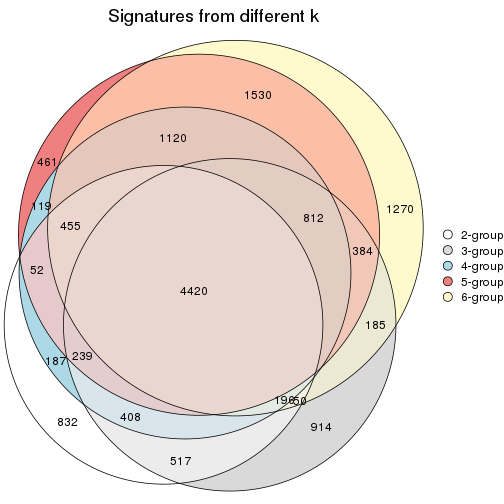
get_signature() returns a data frame invisibly. TO get the list of signatures, the function
call should be assigned to a variable explicitly. In following code, if plot argument is set
to FALSE, no heatmap is plotted while only the differential analysis is performed.
# code only for demonstration
tb = get_signature(res, k = ..., plot = FALSE)
An example of the output of tb is:
#> which_row fdr mean_1 mean_2 scaled_mean_1 scaled_mean_2 km
#> 1 38 0.042760348 8.373488 9.131774 -0.5533452 0.5164555 1
#> 2 40 0.018707592 7.106213 8.469186 -0.6173731 0.5762149 1
#> 3 55 0.019134737 10.221463 11.207825 -0.6159697 0.5749050 1
#> 4 59 0.006059896 5.921854 7.869574 -0.6899429 0.6439467 1
#> 5 60 0.018055526 8.928898 10.211722 -0.6204761 0.5791110 1
#> 6 98 0.009384629 15.714769 14.887706 0.6635654 -0.6193277 2
...
The columns in tb are:
which_row: row indices corresponding to the input matrix.fdr: FDR for the differential test. mean_x: The mean value in group x.scaled_mean_x: The mean value in group x after rows are scaled.km: Row groups if k-means clustering is applied to rows.UMAP plot which shows how samples are separated.
dimension_reduction(res, k = 2, method = "UMAP")
dimension_reduction(res, k = 3, method = "UMAP")

dimension_reduction(res, k = 4, method = "UMAP")
dimension_reduction(res, k = 5, method = "UMAP")
dimension_reduction(res, k = 6, method = "UMAP")
Following heatmap shows how subgroups are split when increasing k:
collect_classes(res)
Test correlation between subgroups and known annotations. If the known annotation is numeric, one-way ANOVA test is applied, and if the known annotation is discrete, chi-squared contingency table test is applied.
test_to_known_factors(res)
#> n disease.state(p) other(p) k
#> CV:mclust 53 0.537 0.08228 2
#> CV:mclust 42 0.686 0.12869 3
#> CV:mclust 49 0.534 0.01784 4
#> CV:mclust 41 0.387 0.00223 5
#> CV:mclust 44 0.293 0.00133 6
If matrix rows can be associated to genes, consider to use functional_enrichment(res,
...) to perform function enrichment for the signature genes. See this vignette for more detailed explanations.
The object with results only for a single top-value method and a single partition method can be extracted as:
res = res_list["CV", "NMF"]
# you can also extract it by
# res = res_list["CV:NMF"]
A summary of res and all the functions that can be applied to it:
res
#> A 'ConsensusPartition' object with k = 2, 3, 4, 5, 6.
#> On a matrix with 51941 rows and 53 columns.
#> Top rows (1000, 2000, 3000, 4000, 5000) are extracted by 'CV' method.
#> Subgroups are detected by 'NMF' method.
#> Performed in total 1250 partitions by row resampling.
#> Best k for subgroups seems to be 2.
#>
#> Following methods can be applied to this 'ConsensusPartition' object:
#> [1] "cola_report" "collect_classes" "collect_plots"
#> [4] "collect_stats" "colnames" "compare_signatures"
#> [7] "consensus_heatmap" "dimension_reduction" "functional_enrichment"
#> [10] "get_anno_col" "get_anno" "get_classes"
#> [13] "get_consensus" "get_matrix" "get_membership"
#> [16] "get_param" "get_signatures" "get_stats"
#> [19] "is_best_k" "is_stable_k" "membership_heatmap"
#> [22] "ncol" "nrow" "plot_ecdf"
#> [25] "rownames" "select_partition_number" "show"
#> [28] "suggest_best_k" "test_to_known_factors"
collect_plots() function collects all the plots made from res for all k (number of partitions)
into one single page to provide an easy and fast comparison between different k.
collect_plots(res)
The plots are:
k and the heatmap of
predicted classes for each k.k.k.k.All the plots in panels can be made by individual functions and they are plotted later in this section.
select_partition_number() produces several plots showing different
statistics for choosing “optimized” k. There are following statistics:
k;k, the area increased is defined as \(A_k - A_{k-1}\).The detailed explanations of these statistics can be found in the cola vignette.
Generally speaking, lower PAC score, higher mean silhouette score or higher
concordance corresponds to better partition. Rand index and Jaccard index
measure how similar the current partition is compared to partition with k-1.
If they are too similar, we won't accept k is better than k-1.
select_partition_number(res)
The numeric values for all these statistics can be obtained by get_stats().
get_stats(res)
#> k 1-PAC mean_silhouette concordance area_increased Rand Jaccard
#> 2 2 0.960 0.952 0.980 0.4762 0.531 0.531
#> 3 3 0.805 0.826 0.929 0.3815 0.787 0.609
#> 4 4 0.581 0.620 0.791 0.1261 0.795 0.489
#> 5 5 0.558 0.424 0.698 0.0743 0.906 0.668
#> 6 6 0.622 0.505 0.741 0.0431 0.837 0.391
suggest_best_k() suggests the best \(k\) based on these statistics. The rules are as follows:
suggest_best_k(res)
#> [1] 2
Following shows the table of the partitions (You need to click the show/hide
code output link to see it). The membership matrix (columns with name p*)
is inferred by
clue::cl_consensus()
function with the SE method. Basically the value in the membership matrix
represents the probability to belong to a certain group. The finall class
label for an item is determined with the group with highest probability it
belongs to.
In get_classes() function, the entropy is calculated from the membership
matrix and the silhouette score is calculated from the consensus matrix.
cbind(get_classes(res, k = 2), get_membership(res, k = 2))
#> class entropy silhouette p1 p2
#> GSM452149 2 0.0000 0.972 0.000 1.000
#> GSM452150 2 0.0000 0.972 0.000 1.000
#> GSM452152 2 0.0000 0.972 0.000 1.000
#> GSM452154 2 0.0000 0.972 0.000 1.000
#> GSM452160 2 0.0000 0.972 0.000 1.000
#> GSM452167 2 0.0000 0.972 0.000 1.000
#> GSM452182 1 0.0000 0.991 1.000 0.000
#> GSM452185 2 0.0000 0.972 0.000 1.000
#> GSM452186 2 0.8555 0.626 0.280 0.720
#> GSM452187 2 0.0000 0.972 0.000 1.000
#> GSM452189 1 0.0000 0.991 1.000 0.000
#> GSM452195 2 0.0000 0.972 0.000 1.000
#> GSM452196 2 0.0000 0.972 0.000 1.000
#> GSM452197 1 0.0000 0.991 1.000 0.000
#> GSM452198 2 0.0000 0.972 0.000 1.000
#> GSM452199 2 0.0000 0.972 0.000 1.000
#> GSM452148 1 0.0000 0.991 1.000 0.000
#> GSM452151 2 0.0376 0.968 0.004 0.996
#> GSM452153 1 0.0000 0.991 1.000 0.000
#> GSM452155 2 0.0000 0.972 0.000 1.000
#> GSM452156 2 0.0000 0.972 0.000 1.000
#> GSM452157 1 0.0000 0.991 1.000 0.000
#> GSM452158 2 0.8499 0.629 0.276 0.724
#> GSM452162 2 0.9427 0.459 0.360 0.640
#> GSM452163 1 0.0000 0.991 1.000 0.000
#> GSM452166 2 0.0000 0.972 0.000 1.000
#> GSM452168 1 0.0000 0.991 1.000 0.000
#> GSM452169 1 0.0000 0.991 1.000 0.000
#> GSM452170 2 0.0000 0.972 0.000 1.000
#> GSM452172 2 0.0000 0.972 0.000 1.000
#> GSM452173 1 0.0000 0.991 1.000 0.000
#> GSM452174 1 0.0000 0.991 1.000 0.000
#> GSM452176 2 0.0000 0.972 0.000 1.000
#> GSM452179 1 0.0000 0.991 1.000 0.000
#> GSM452180 1 0.0000 0.991 1.000 0.000
#> GSM452181 2 0.0000 0.972 0.000 1.000
#> GSM452183 1 0.0000 0.991 1.000 0.000
#> GSM452184 1 0.6343 0.802 0.840 0.160
#> GSM452188 1 0.0000 0.991 1.000 0.000
#> GSM452193 2 0.0000 0.972 0.000 1.000
#> GSM452165 2 0.0000 0.972 0.000 1.000
#> GSM452171 2 0.0000 0.972 0.000 1.000
#> GSM452175 1 0.0000 0.991 1.000 0.000
#> GSM452177 2 0.0000 0.972 0.000 1.000
#> GSM452190 1 0.0000 0.991 1.000 0.000
#> GSM452191 2 0.0000 0.972 0.000 1.000
#> GSM452192 2 0.0000 0.972 0.000 1.000
#> GSM452194 2 0.0000 0.972 0.000 1.000
#> GSM452200 2 0.0000 0.972 0.000 1.000
#> GSM452159 1 0.0000 0.991 1.000 0.000
#> GSM452161 2 0.0000 0.972 0.000 1.000
#> GSM452164 2 0.0000 0.972 0.000 1.000
#> GSM452178 2 0.0000 0.972 0.000 1.000
cbind(get_classes(res, k = 3), get_membership(res, k = 3))
#> class entropy silhouette p1 p2 p3
#> GSM452149 3 0.4654 0.717 0.000 0.208 0.792
#> GSM452150 3 0.6260 0.254 0.000 0.448 0.552
#> GSM452152 3 0.0000 0.876 0.000 0.000 1.000
#> GSM452154 3 0.2356 0.835 0.000 0.072 0.928
#> GSM452160 3 0.5431 0.617 0.000 0.284 0.716
#> GSM452167 3 0.6079 0.423 0.000 0.388 0.612
#> GSM452182 1 0.0000 0.987 1.000 0.000 0.000
#> GSM452185 3 0.0000 0.876 0.000 0.000 1.000
#> GSM452186 2 0.0000 0.885 0.000 1.000 0.000
#> GSM452187 3 0.0237 0.875 0.000 0.004 0.996
#> GSM452189 1 0.0237 0.985 0.996 0.004 0.000
#> GSM452195 2 0.6309 -0.169 0.000 0.504 0.496
#> GSM452196 2 0.0000 0.885 0.000 1.000 0.000
#> GSM452197 1 0.0000 0.987 1.000 0.000 0.000
#> GSM452198 3 0.0000 0.876 0.000 0.000 1.000
#> GSM452199 2 0.0000 0.885 0.000 1.000 0.000
#> GSM452148 2 0.0592 0.878 0.012 0.988 0.000
#> GSM452151 3 0.1964 0.830 0.056 0.000 0.944
#> GSM452153 1 0.0237 0.984 0.996 0.000 0.004
#> GSM452155 3 0.0000 0.876 0.000 0.000 1.000
#> GSM452156 3 0.0592 0.872 0.000 0.012 0.988
#> GSM452157 1 0.0000 0.987 1.000 0.000 0.000
#> GSM452158 2 0.0424 0.880 0.000 0.992 0.008
#> GSM452162 2 0.6191 0.707 0.084 0.776 0.140
#> GSM452163 1 0.0000 0.987 1.000 0.000 0.000
#> GSM452166 3 0.0000 0.876 0.000 0.000 1.000
#> GSM452168 1 0.0000 0.987 1.000 0.000 0.000
#> GSM452169 1 0.0000 0.987 1.000 0.000 0.000
#> GSM452170 3 0.0000 0.876 0.000 0.000 1.000
#> GSM452172 3 0.0000 0.876 0.000 0.000 1.000
#> GSM452173 1 0.0000 0.987 1.000 0.000 0.000
#> GSM452174 1 0.2261 0.925 0.932 0.068 0.000
#> GSM452176 3 0.0000 0.876 0.000 0.000 1.000
#> GSM452179 1 0.0000 0.987 1.000 0.000 0.000
#> GSM452180 1 0.0000 0.987 1.000 0.000 0.000
#> GSM452181 2 0.0000 0.885 0.000 1.000 0.000
#> GSM452183 1 0.0000 0.987 1.000 0.000 0.000
#> GSM452184 1 0.3192 0.866 0.888 0.000 0.112
#> GSM452188 1 0.0000 0.987 1.000 0.000 0.000
#> GSM452193 3 0.0237 0.875 0.000 0.004 0.996
#> GSM452165 2 0.0000 0.885 0.000 1.000 0.000
#> GSM452171 3 0.5733 0.557 0.000 0.324 0.676
#> GSM452175 1 0.0000 0.987 1.000 0.000 0.000
#> GSM452177 3 0.6280 0.218 0.000 0.460 0.540
#> GSM452190 2 0.1289 0.864 0.032 0.968 0.000
#> GSM452191 2 0.0000 0.885 0.000 1.000 0.000
#> GSM452192 3 0.0424 0.874 0.000 0.008 0.992
#> GSM452194 3 0.0000 0.876 0.000 0.000 1.000
#> GSM452200 3 0.0000 0.876 0.000 0.000 1.000
#> GSM452159 1 0.0000 0.987 1.000 0.000 0.000
#> GSM452161 2 0.5650 0.440 0.000 0.688 0.312
#> GSM452164 3 0.4702 0.683 0.000 0.212 0.788
#> GSM452178 3 0.0000 0.876 0.000 0.000 1.000
cbind(get_classes(res, k = 4), get_membership(res, k = 4))
#> class entropy silhouette p1 p2 p3 p4
#> GSM452149 3 0.4916 0.2397 0.000 0.424 0.576 0.000
#> GSM452150 2 0.4331 0.5550 0.000 0.712 0.288 0.000
#> GSM452152 4 0.5097 0.2049 0.000 0.004 0.428 0.568
#> GSM452154 3 0.0817 0.8270 0.000 0.024 0.976 0.000
#> GSM452160 2 0.4761 0.3786 0.000 0.628 0.372 0.000
#> GSM452167 3 0.2593 0.8105 0.000 0.080 0.904 0.016
#> GSM452182 1 0.4690 0.7118 0.724 0.016 0.000 0.260
#> GSM452185 3 0.2011 0.8031 0.000 0.000 0.920 0.080
#> GSM452186 2 0.2940 0.7635 0.012 0.892 0.008 0.088
#> GSM452187 3 0.0895 0.8272 0.000 0.020 0.976 0.004
#> GSM452189 1 0.4737 0.6938 0.728 0.020 0.000 0.252
#> GSM452195 3 0.5127 0.3672 0.000 0.356 0.632 0.012
#> GSM452196 2 0.1854 0.7817 0.000 0.940 0.012 0.048
#> GSM452197 1 0.4543 0.5947 0.676 0.000 0.000 0.324
#> GSM452198 3 0.1174 0.8274 0.000 0.020 0.968 0.012
#> GSM452199 2 0.1488 0.7834 0.000 0.956 0.012 0.032
#> GSM452148 2 0.0524 0.7788 0.004 0.988 0.000 0.008
#> GSM452151 4 0.4356 0.5852 0.048 0.000 0.148 0.804
#> GSM452153 4 0.3975 0.4553 0.240 0.000 0.000 0.760
#> GSM452155 3 0.5060 0.1744 0.000 0.004 0.584 0.412
#> GSM452156 2 0.7638 0.1434 0.000 0.420 0.208 0.372
#> GSM452157 1 0.4804 0.3868 0.616 0.000 0.000 0.384
#> GSM452158 2 0.8555 0.5371 0.112 0.540 0.164 0.184
#> GSM452162 2 0.6159 0.5384 0.132 0.672 0.000 0.196
#> GSM452163 1 0.0817 0.7764 0.976 0.000 0.000 0.024
#> GSM452166 3 0.2530 0.7764 0.000 0.000 0.888 0.112
#> GSM452168 4 0.4889 -0.0606 0.360 0.004 0.000 0.636
#> GSM452169 1 0.0592 0.7878 0.984 0.000 0.000 0.016
#> GSM452170 4 0.4948 0.1526 0.000 0.000 0.440 0.560
#> GSM452172 4 0.3626 0.5866 0.004 0.000 0.184 0.812
#> GSM452173 4 0.5620 0.0315 0.416 0.024 0.000 0.560
#> GSM452174 1 0.4050 0.6559 0.808 0.024 0.000 0.168
#> GSM452176 3 0.1022 0.8143 0.000 0.000 0.968 0.032
#> GSM452179 1 0.1302 0.7739 0.956 0.000 0.000 0.044
#> GSM452180 1 0.1118 0.7912 0.964 0.000 0.000 0.036
#> GSM452181 2 0.0707 0.7827 0.000 0.980 0.020 0.000
#> GSM452183 1 0.2814 0.7740 0.868 0.000 0.000 0.132
#> GSM452184 4 0.4155 0.4618 0.240 0.000 0.004 0.756
#> GSM452188 1 0.4290 0.7509 0.772 0.016 0.000 0.212
#> GSM452193 3 0.2546 0.7986 0.000 0.008 0.900 0.092
#> GSM452165 2 0.1284 0.7846 0.000 0.964 0.024 0.012
#> GSM452171 3 0.2987 0.7964 0.000 0.104 0.880 0.016
#> GSM452175 1 0.4477 0.6372 0.688 0.000 0.000 0.312
#> GSM452177 3 0.2530 0.7867 0.000 0.112 0.888 0.000
#> GSM452190 2 0.2089 0.7660 0.020 0.932 0.000 0.048
#> GSM452191 2 0.1109 0.7826 0.000 0.968 0.028 0.004
#> GSM452192 3 0.5344 0.5102 0.000 0.300 0.668 0.032
#> GSM452194 3 0.0376 0.8235 0.000 0.004 0.992 0.004
#> GSM452200 3 0.0707 0.8184 0.000 0.000 0.980 0.020
#> GSM452159 1 0.0707 0.7899 0.980 0.000 0.000 0.020
#> GSM452161 2 0.4562 0.6683 0.000 0.764 0.208 0.028
#> GSM452164 2 0.5898 0.4431 0.000 0.604 0.348 0.048
#> GSM452178 3 0.2300 0.8056 0.000 0.016 0.920 0.064
cbind(get_classes(res, k = 5), get_membership(res, k = 5))
#> class entropy silhouette p1 p2 p3 p4 p5
#> GSM452149 3 0.6993 -0.0429 0.000 0.408 0.416 0.036 0.140
#> GSM452150 2 0.5281 0.4584 0.000 0.680 0.224 0.008 0.088
#> GSM452152 4 0.4281 0.4283 0.000 0.016 0.152 0.784 0.048
#> GSM452154 3 0.1357 0.7167 0.000 0.004 0.948 0.000 0.048
#> GSM452160 2 0.3439 0.5228 0.000 0.800 0.188 0.004 0.008
#> GSM452167 3 0.3566 0.6751 0.000 0.080 0.848 0.052 0.020
#> GSM452182 1 0.6258 0.3240 0.512 0.004 0.000 0.140 0.344
#> GSM452185 3 0.5019 0.3569 0.000 0.000 0.532 0.032 0.436
#> GSM452186 5 0.4562 -0.3269 0.000 0.492 0.008 0.000 0.500
#> GSM452187 3 0.2482 0.7120 0.000 0.000 0.892 0.024 0.084
#> GSM452189 1 0.3519 0.6928 0.848 0.040 0.000 0.092 0.020
#> GSM452195 3 0.6614 0.4234 0.000 0.076 0.536 0.060 0.328
#> GSM452196 2 0.4473 0.1591 0.000 0.580 0.008 0.000 0.412
#> GSM452197 1 0.3449 0.6746 0.812 0.000 0.000 0.164 0.024
#> GSM452198 3 0.2663 0.6945 0.004 0.032 0.896 0.064 0.004
#> GSM452199 2 0.4796 0.1180 0.000 0.532 0.008 0.008 0.452
#> GSM452148 2 0.1124 0.5482 0.000 0.960 0.000 0.004 0.036
#> GSM452151 4 0.2792 0.5416 0.084 0.000 0.016 0.884 0.016
#> GSM452153 4 0.5273 0.1998 0.352 0.000 0.000 0.588 0.060
#> GSM452155 4 0.7137 -0.0142 0.008 0.016 0.288 0.472 0.216
#> GSM452156 4 0.6669 0.2150 0.000 0.224 0.072 0.596 0.108
#> GSM452157 1 0.4591 0.6684 0.748 0.000 0.000 0.120 0.132
#> GSM452158 5 0.4767 0.1554 0.000 0.084 0.044 0.096 0.776
#> GSM452162 2 0.5334 0.2645 0.036 0.592 0.008 0.360 0.004
#> GSM452163 1 0.3333 0.6560 0.788 0.000 0.000 0.004 0.208
#> GSM452166 3 0.5452 0.1962 0.000 0.000 0.492 0.448 0.060
#> GSM452168 4 0.6771 -0.1072 0.384 0.004 0.000 0.392 0.220
#> GSM452169 1 0.3659 0.6536 0.768 0.000 0.000 0.012 0.220
#> GSM452170 4 0.3309 0.4841 0.000 0.000 0.128 0.836 0.036
#> GSM452172 4 0.3457 0.5327 0.084 0.000 0.016 0.852 0.048
#> GSM452173 1 0.5467 0.5477 0.712 0.092 0.000 0.156 0.040
#> GSM452174 5 0.4586 -0.4235 0.468 0.004 0.000 0.004 0.524
#> GSM452176 3 0.0865 0.7054 0.000 0.000 0.972 0.024 0.004
#> GSM452179 1 0.3607 0.6297 0.752 0.000 0.000 0.004 0.244
#> GSM452180 1 0.2068 0.7105 0.904 0.000 0.000 0.004 0.092
#> GSM452181 2 0.2660 0.5404 0.000 0.864 0.000 0.008 0.128
#> GSM452183 1 0.1739 0.7231 0.940 0.004 0.000 0.032 0.024
#> GSM452184 4 0.6251 -0.0680 0.440 0.036 0.000 0.464 0.060
#> GSM452188 1 0.5273 0.5420 0.680 0.000 0.000 0.164 0.156
#> GSM452193 3 0.5177 0.3280 0.000 0.000 0.488 0.040 0.472
#> GSM452165 2 0.2361 0.5399 0.000 0.892 0.012 0.000 0.096
#> GSM452171 3 0.4943 0.6246 0.000 0.112 0.764 0.064 0.060
#> GSM452175 1 0.3883 0.6310 0.780 0.000 0.000 0.184 0.036
#> GSM452177 3 0.3051 0.6914 0.000 0.076 0.864 0.000 0.060
#> GSM452190 2 0.2722 0.5204 0.008 0.868 0.000 0.004 0.120
#> GSM452191 2 0.0854 0.5534 0.000 0.976 0.008 0.004 0.012
#> GSM452192 2 0.5442 0.1658 0.000 0.536 0.408 0.052 0.004
#> GSM452194 3 0.2275 0.7169 0.000 0.012 0.912 0.012 0.064
#> GSM452200 3 0.0693 0.7106 0.000 0.000 0.980 0.012 0.008
#> GSM452159 1 0.3353 0.6636 0.796 0.000 0.000 0.008 0.196
#> GSM452161 2 0.8201 0.1072 0.000 0.340 0.156 0.164 0.340
#> GSM452164 2 0.7827 0.2304 0.000 0.436 0.208 0.264 0.092
#> GSM452178 3 0.6010 0.4820 0.000 0.072 0.636 0.244 0.048
cbind(get_classes(res, k = 6), get_membership(res, k = 6))
#> class entropy silhouette p1 p2 p3 p4 p5 p6
#> GSM452149 3 0.7257 0.0663 0.000 0.220 0.436 0.164 0.180 0.000
#> GSM452150 2 0.6033 0.3432 0.000 0.596 0.208 0.068 0.128 0.000
#> GSM452152 4 0.1951 0.7086 0.000 0.000 0.020 0.916 0.004 0.060
#> GSM452154 3 0.1901 0.6833 0.000 0.008 0.912 0.000 0.076 0.004
#> GSM452160 2 0.4033 0.6458 0.000 0.780 0.148 0.048 0.020 0.004
#> GSM452167 3 0.5309 0.4710 0.004 0.024 0.656 0.232 0.080 0.004
#> GSM452182 6 0.3807 0.6291 0.044 0.008 0.000 0.004 0.160 0.784
#> GSM452185 5 0.4782 -0.0935 0.004 0.000 0.476 0.012 0.488 0.020
#> GSM452186 5 0.4538 0.3688 0.004 0.300 0.020 0.008 0.660 0.008
#> GSM452187 3 0.3543 0.6304 0.000 0.008 0.816 0.052 0.120 0.004
#> GSM452189 6 0.5255 0.0718 0.448 0.060 0.000 0.008 0.004 0.480
#> GSM452195 3 0.5389 0.0818 0.000 0.004 0.520 0.088 0.384 0.004
#> GSM452196 5 0.5054 0.2630 0.000 0.360 0.024 0.032 0.580 0.004
#> GSM452197 6 0.3860 0.1319 0.472 0.000 0.000 0.000 0.000 0.528
#> GSM452198 3 0.4644 0.6095 0.044 0.012 0.768 0.120 0.048 0.008
#> GSM452199 5 0.5700 0.2261 0.000 0.404 0.044 0.060 0.492 0.000
#> GSM452148 2 0.1857 0.6963 0.000 0.928 0.000 0.028 0.032 0.012
#> GSM452151 4 0.4199 0.2538 0.000 0.000 0.016 0.568 0.000 0.416
#> GSM452153 6 0.2271 0.6815 0.032 0.000 0.004 0.056 0.004 0.904
#> GSM452155 4 0.5356 0.5157 0.004 0.000 0.156 0.652 0.172 0.016
#> GSM452156 4 0.2065 0.6955 0.000 0.032 0.004 0.912 0.052 0.000
#> GSM452157 1 0.3422 0.6826 0.788 0.000 0.000 0.000 0.036 0.176
#> GSM452158 5 0.2670 0.4628 0.008 0.004 0.040 0.056 0.888 0.004
#> GSM452162 4 0.3705 0.5904 0.024 0.224 0.000 0.748 0.000 0.004
#> GSM452163 1 0.0508 0.7585 0.984 0.000 0.000 0.000 0.012 0.004
#> GSM452166 4 0.3529 0.6592 0.000 0.000 0.176 0.788 0.028 0.008
#> GSM452168 6 0.2239 0.6867 0.028 0.004 0.000 0.016 0.040 0.912
#> GSM452169 1 0.1257 0.7692 0.952 0.000 0.000 0.000 0.020 0.028
#> GSM452170 4 0.2313 0.6960 0.000 0.000 0.012 0.884 0.004 0.100
#> GSM452172 6 0.4705 -0.0718 0.000 0.000 0.004 0.440 0.036 0.520
#> GSM452173 1 0.6296 -0.0361 0.384 0.256 0.000 0.004 0.004 0.352
#> GSM452174 1 0.4798 0.4144 0.592 0.004 0.000 0.004 0.356 0.044
#> GSM452176 3 0.0862 0.6777 0.000 0.000 0.972 0.008 0.004 0.016
#> GSM452179 1 0.1245 0.7645 0.952 0.000 0.000 0.000 0.032 0.016
#> GSM452180 1 0.2946 0.6847 0.812 0.012 0.000 0.000 0.000 0.176
#> GSM452181 2 0.4117 0.6134 0.000 0.756 0.004 0.096 0.144 0.000
#> GSM452183 1 0.2633 0.7348 0.864 0.020 0.000 0.000 0.004 0.112
#> GSM452184 6 0.2238 0.6908 0.076 0.004 0.000 0.016 0.004 0.900
#> GSM452188 6 0.2800 0.6854 0.100 0.000 0.000 0.004 0.036 0.860
#> GSM452193 5 0.5034 0.0237 0.008 0.000 0.424 0.044 0.520 0.004
#> GSM452165 2 0.2425 0.6800 0.000 0.880 0.008 0.012 0.100 0.000
#> GSM452171 3 0.6553 0.4083 0.004 0.056 0.576 0.192 0.156 0.016
#> GSM452175 6 0.3415 0.6040 0.228 0.004 0.000 0.004 0.004 0.760
#> GSM452177 3 0.2666 0.6733 0.000 0.028 0.872 0.008 0.092 0.000
#> GSM452190 2 0.3457 0.6010 0.004 0.808 0.000 0.000 0.136 0.052
#> GSM452191 2 0.1109 0.6977 0.000 0.964 0.004 0.004 0.016 0.012
#> GSM452192 2 0.5644 0.4007 0.000 0.568 0.296 0.120 0.012 0.004
#> GSM452194 3 0.2541 0.6710 0.000 0.004 0.884 0.028 0.080 0.004
#> GSM452200 3 0.0862 0.6844 0.000 0.000 0.972 0.008 0.016 0.004
#> GSM452159 1 0.0937 0.7679 0.960 0.000 0.000 0.000 0.000 0.040
#> GSM452161 5 0.7371 0.2326 0.000 0.212 0.092 0.332 0.356 0.008
#> GSM452164 4 0.5442 0.6158 0.000 0.140 0.136 0.680 0.028 0.016
#> GSM452178 4 0.4670 0.5421 0.000 0.040 0.264 0.676 0.012 0.008
Heatmaps for the consensus matrix. It visualizes the probability of two samples to be in a same group.
consensus_heatmap(res, k = 2)
consensus_heatmap(res, k = 3)
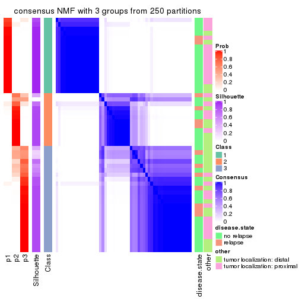
consensus_heatmap(res, k = 4)
consensus_heatmap(res, k = 5)
consensus_heatmap(res, k = 6)
Heatmaps for the membership of samples in all partitions to see how consistent they are:
membership_heatmap(res, k = 2)
membership_heatmap(res, k = 3)
membership_heatmap(res, k = 4)
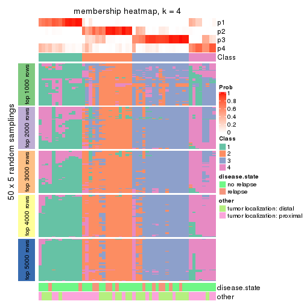
membership_heatmap(res, k = 5)
membership_heatmap(res, k = 6)
As soon as we have had the classes for columns, we can look for signatures which are significantly different between classes which can be candidate marks for certain classes. Following are the heatmaps for signatures.
Signature heatmaps where rows are scaled:
get_signatures(res, k = 2)
get_signatures(res, k = 3)
get_signatures(res, k = 4)
get_signatures(res, k = 5)
get_signatures(res, k = 6)
Signature heatmaps where rows are not scaled:
get_signatures(res, k = 2, scale_rows = FALSE)
get_signatures(res, k = 3, scale_rows = FALSE)
get_signatures(res, k = 4, scale_rows = FALSE)
get_signatures(res, k = 5, scale_rows = FALSE)
get_signatures(res, k = 6, scale_rows = FALSE)
Compare the overlap of signatures from different k:
compare_signatures(res)
get_signature() returns a data frame invisibly. TO get the list of signatures, the function
call should be assigned to a variable explicitly. In following code, if plot argument is set
to FALSE, no heatmap is plotted while only the differential analysis is performed.
# code only for demonstration
tb = get_signature(res, k = ..., plot = FALSE)
An example of the output of tb is:
#> which_row fdr mean_1 mean_2 scaled_mean_1 scaled_mean_2 km
#> 1 38 0.042760348 8.373488 9.131774 -0.5533452 0.5164555 1
#> 2 40 0.018707592 7.106213 8.469186 -0.6173731 0.5762149 1
#> 3 55 0.019134737 10.221463 11.207825 -0.6159697 0.5749050 1
#> 4 59 0.006059896 5.921854 7.869574 -0.6899429 0.6439467 1
#> 5 60 0.018055526 8.928898 10.211722 -0.6204761 0.5791110 1
#> 6 98 0.009384629 15.714769 14.887706 0.6635654 -0.6193277 2
...
The columns in tb are:
which_row: row indices corresponding to the input matrix.fdr: FDR for the differential test. mean_x: The mean value in group x.scaled_mean_x: The mean value in group x after rows are scaled.km: Row groups if k-means clustering is applied to rows.UMAP plot which shows how samples are separated.
dimension_reduction(res, k = 2, method = "UMAP")
dimension_reduction(res, k = 3, method = "UMAP")
dimension_reduction(res, k = 4, method = "UMAP")
dimension_reduction(res, k = 5, method = "UMAP")
dimension_reduction(res, k = 6, method = "UMAP")
Following heatmap shows how subgroups are split when increasing k:
collect_classes(res)
Test correlation between subgroups and known annotations. If the known annotation is numeric, one-way ANOVA test is applied, and if the known annotation is discrete, chi-squared contingency table test is applied.
test_to_known_factors(res)
#> n disease.state(p) other(p) k
#> CV:NMF 52 0.406 0.03617 2
#> CV:NMF 48 0.394 0.10367 3
#> CV:NMF 40 0.386 0.10438 4
#> CV:NMF 29 0.281 0.01125 5
#> CV:NMF 34 0.533 0.00399 6
If matrix rows can be associated to genes, consider to use functional_enrichment(res,
...) to perform function enrichment for the signature genes. See this vignette for more detailed explanations.
The object with results only for a single top-value method and a single partition method can be extracted as:
res = res_list["MAD", "hclust"]
# you can also extract it by
# res = res_list["MAD:hclust"]
A summary of res and all the functions that can be applied to it:
res
#> A 'ConsensusPartition' object with k = 2, 3, 4, 5, 6.
#> On a matrix with 51941 rows and 53 columns.
#> Top rows (1000, 2000, 3000, 4000, 5000) are extracted by 'MAD' method.
#> Subgroups are detected by 'hclust' method.
#> Performed in total 1250 partitions by row resampling.
#> Best k for subgroups seems to be 4.
#>
#> Following methods can be applied to this 'ConsensusPartition' object:
#> [1] "cola_report" "collect_classes" "collect_plots"
#> [4] "collect_stats" "colnames" "compare_signatures"
#> [7] "consensus_heatmap" "dimension_reduction" "functional_enrichment"
#> [10] "get_anno_col" "get_anno" "get_classes"
#> [13] "get_consensus" "get_matrix" "get_membership"
#> [16] "get_param" "get_signatures" "get_stats"
#> [19] "is_best_k" "is_stable_k" "membership_heatmap"
#> [22] "ncol" "nrow" "plot_ecdf"
#> [25] "rownames" "select_partition_number" "show"
#> [28] "suggest_best_k" "test_to_known_factors"
collect_plots() function collects all the plots made from res for all k (number of partitions)
into one single page to provide an easy and fast comparison between different k.
collect_plots(res)
The plots are:
k and the heatmap of
predicted classes for each k.k.k.k.All the plots in panels can be made by individual functions and they are plotted later in this section.
select_partition_number() produces several plots showing different
statistics for choosing “optimized” k. There are following statistics:
k;k, the area increased is defined as \(A_k - A_{k-1}\).The detailed explanations of these statistics can be found in the cola vignette.
Generally speaking, lower PAC score, higher mean silhouette score or higher
concordance corresponds to better partition. Rand index and Jaccard index
measure how similar the current partition is compared to partition with k-1.
If they are too similar, we won't accept k is better than k-1.
select_partition_number(res)
The numeric values for all these statistics can be obtained by get_stats().
get_stats(res)
#> k 1-PAC mean_silhouette concordance area_increased Rand Jaccard
#> 2 2 0.191 0.495 0.764 0.4883 0.499 0.499
#> 3 3 0.541 0.587 0.777 0.2621 0.697 0.461
#> 4 4 0.636 0.664 0.803 0.1454 0.806 0.523
#> 5 5 0.599 0.614 0.748 0.0610 0.941 0.818
#> 6 6 0.619 0.435 0.700 0.0672 0.851 0.533
suggest_best_k() suggests the best \(k\) based on these statistics. The rules are as follows:
suggest_best_k(res)
#> [1] 4
Following shows the table of the partitions (You need to click the show/hide
code output link to see it). The membership matrix (columns with name p*)
is inferred by
clue::cl_consensus()
function with the SE method. Basically the value in the membership matrix
represents the probability to belong to a certain group. The finall class
label for an item is determined with the group with highest probability it
belongs to.
In get_classes() function, the entropy is calculated from the membership
matrix and the silhouette score is calculated from the consensus matrix.
cbind(get_classes(res, k = 2), get_membership(res, k = 2))
#> class entropy silhouette p1 p2
#> GSM452149 2 0.6623 0.6330 0.172 0.828
#> GSM452150 2 0.3733 0.6312 0.072 0.928
#> GSM452152 2 0.9460 0.4173 0.364 0.636
#> GSM452154 2 0.6801 0.6265 0.180 0.820
#> GSM452160 2 0.2043 0.6253 0.032 0.968
#> GSM452167 2 0.3431 0.6317 0.064 0.936
#> GSM452182 1 0.0938 0.7391 0.988 0.012
#> GSM452185 2 0.9795 0.3737 0.416 0.584
#> GSM452186 1 0.9944 0.0806 0.544 0.456
#> GSM452187 2 0.6438 0.6103 0.164 0.836
#> GSM452189 1 0.0000 0.7480 1.000 0.000
#> GSM452195 2 0.7883 0.5750 0.236 0.764
#> GSM452196 2 0.9710 0.2805 0.400 0.600
#> GSM452197 1 0.0000 0.7480 1.000 0.000
#> GSM452198 2 0.8386 0.5304 0.268 0.732
#> GSM452199 2 0.9710 0.2805 0.400 0.600
#> GSM452148 1 0.9922 0.0991 0.552 0.448
#> GSM452151 1 0.9963 -0.1441 0.536 0.464
#> GSM452153 1 0.9209 0.1766 0.664 0.336
#> GSM452155 2 0.7376 0.5977 0.208 0.792
#> GSM452156 2 0.7376 0.5977 0.208 0.792
#> GSM452157 1 0.0000 0.7480 1.000 0.000
#> GSM452158 2 0.8386 0.5410 0.268 0.732
#> GSM452162 2 0.9000 0.4592 0.316 0.684
#> GSM452163 1 0.0000 0.7480 1.000 0.000
#> GSM452166 2 0.9922 0.2469 0.448 0.552
#> GSM452168 1 0.0938 0.7391 0.988 0.012
#> GSM452169 1 0.0000 0.7480 1.000 0.000
#> GSM452170 2 0.9922 0.2469 0.448 0.552
#> GSM452172 2 0.9922 0.2469 0.448 0.552
#> GSM452173 1 0.0000 0.7480 1.000 0.000
#> GSM452174 1 0.0000 0.7480 1.000 0.000
#> GSM452176 2 0.9922 0.2469 0.448 0.552
#> GSM452179 1 0.0000 0.7480 1.000 0.000
#> GSM452180 1 0.0000 0.7480 1.000 0.000
#> GSM452181 2 0.9850 0.2058 0.428 0.572
#> GSM452183 1 0.0000 0.7480 1.000 0.000
#> GSM452184 1 0.8608 0.3019 0.716 0.284
#> GSM452188 1 0.0938 0.7391 0.988 0.012
#> GSM452193 2 0.9795 0.3737 0.416 0.584
#> GSM452165 1 0.9944 0.0806 0.544 0.456
#> GSM452171 2 0.3733 0.6319 0.072 0.928
#> GSM452175 1 0.0000 0.7480 1.000 0.000
#> GSM452177 2 0.6438 0.6327 0.164 0.836
#> GSM452190 1 0.9922 0.0991 0.552 0.448
#> GSM452191 1 0.9970 0.0538 0.532 0.468
#> GSM452192 2 0.1633 0.6230 0.024 0.976
#> GSM452194 2 0.6438 0.6103 0.164 0.836
#> GSM452200 2 0.9922 0.2469 0.448 0.552
#> GSM452159 1 0.0000 0.7480 1.000 0.000
#> GSM452161 2 0.8386 0.5410 0.268 0.732
#> GSM452164 2 0.8909 0.4703 0.308 0.692
#> GSM452178 2 0.8016 0.5541 0.244 0.756
cbind(get_classes(res, k = 3), get_membership(res, k = 3))
#> class entropy silhouette p1 p2 p3
#> GSM452149 2 0.7585 0.1784 0.040 0.484 0.476
#> GSM452150 3 0.6244 0.0737 0.000 0.440 0.560
#> GSM452152 3 0.3551 0.6139 0.000 0.132 0.868
#> GSM452154 2 0.7652 0.2641 0.044 0.512 0.444
#> GSM452160 3 0.6295 -0.0544 0.000 0.472 0.528
#> GSM452167 3 0.6521 -0.1472 0.004 0.492 0.504
#> GSM452182 1 0.0592 0.9375 0.988 0.000 0.012
#> GSM452185 3 0.6349 0.5686 0.080 0.156 0.764
#> GSM452186 2 0.0848 0.5705 0.008 0.984 0.008
#> GSM452187 3 0.5835 0.3735 0.000 0.340 0.660
#> GSM452189 1 0.0000 0.9447 1.000 0.000 0.000
#> GSM452195 2 0.7705 0.5091 0.060 0.592 0.348
#> GSM452196 2 0.5346 0.6299 0.040 0.808 0.152
#> GSM452197 1 0.0000 0.9447 1.000 0.000 0.000
#> GSM452198 3 0.5595 0.5444 0.016 0.228 0.756
#> GSM452199 2 0.5346 0.6299 0.040 0.808 0.152
#> GSM452148 2 0.0000 0.5607 0.000 1.000 0.000
#> GSM452151 3 0.3192 0.5489 0.112 0.000 0.888
#> GSM452153 1 0.6154 0.3003 0.592 0.000 0.408
#> GSM452155 2 0.7438 0.4636 0.040 0.568 0.392
#> GSM452156 2 0.7438 0.4636 0.040 0.568 0.392
#> GSM452157 1 0.0000 0.9447 1.000 0.000 0.000
#> GSM452158 2 0.7562 0.5539 0.064 0.628 0.308
#> GSM452162 2 0.6585 0.6117 0.044 0.712 0.244
#> GSM452163 1 0.0000 0.9447 1.000 0.000 0.000
#> GSM452166 3 0.0000 0.6226 0.000 0.000 1.000
#> GSM452168 1 0.0592 0.9375 0.988 0.000 0.012
#> GSM452169 1 0.0000 0.9447 1.000 0.000 0.000
#> GSM452170 3 0.0000 0.6226 0.000 0.000 1.000
#> GSM452172 3 0.0000 0.6226 0.000 0.000 1.000
#> GSM452173 1 0.0000 0.9447 1.000 0.000 0.000
#> GSM452174 1 0.0424 0.9402 0.992 0.008 0.000
#> GSM452176 3 0.0000 0.6226 0.000 0.000 1.000
#> GSM452179 1 0.0000 0.9447 1.000 0.000 0.000
#> GSM452180 1 0.0000 0.9447 1.000 0.000 0.000
#> GSM452181 2 0.4779 0.6227 0.036 0.840 0.124
#> GSM452183 1 0.0000 0.9447 1.000 0.000 0.000
#> GSM452184 1 0.6081 0.4502 0.652 0.004 0.344
#> GSM452188 1 0.0592 0.9375 0.988 0.000 0.012
#> GSM452193 3 0.6349 0.5686 0.080 0.156 0.764
#> GSM452165 2 0.0848 0.5705 0.008 0.984 0.008
#> GSM452171 2 0.6521 0.0764 0.004 0.500 0.496
#> GSM452175 1 0.0000 0.9447 1.000 0.000 0.000
#> GSM452177 2 0.7583 0.2010 0.040 0.492 0.468
#> GSM452190 2 0.0000 0.5607 0.000 1.000 0.000
#> GSM452191 2 0.0892 0.5683 0.000 0.980 0.020
#> GSM452192 3 0.6295 -0.0531 0.000 0.472 0.528
#> GSM452194 3 0.5835 0.3735 0.000 0.340 0.660
#> GSM452200 3 0.0000 0.6226 0.000 0.000 1.000
#> GSM452159 1 0.0000 0.9447 1.000 0.000 0.000
#> GSM452161 2 0.7562 0.5539 0.064 0.628 0.308
#> GSM452164 2 0.6662 0.6081 0.044 0.704 0.252
#> GSM452178 3 0.5404 0.5063 0.004 0.256 0.740
cbind(get_classes(res, k = 4), get_membership(res, k = 4))
#> class entropy silhouette p1 p2 p3 p4
#> GSM452149 3 0.3900 0.7177 0.016 0.060 0.860 0.064
#> GSM452150 3 0.2255 0.6884 0.000 0.012 0.920 0.068
#> GSM452152 3 0.4999 -0.3567 0.000 0.000 0.508 0.492
#> GSM452154 3 0.4219 0.7101 0.020 0.080 0.844 0.056
#> GSM452160 3 0.1452 0.7020 0.000 0.008 0.956 0.036
#> GSM452167 3 0.2214 0.7070 0.000 0.028 0.928 0.044
#> GSM452182 1 0.1059 0.9263 0.972 0.000 0.012 0.016
#> GSM452185 4 0.5538 0.5536 0.036 0.000 0.320 0.644
#> GSM452186 2 0.4252 0.7114 0.000 0.744 0.252 0.004
#> GSM452187 3 0.3219 0.5907 0.000 0.000 0.836 0.164
#> GSM452189 1 0.0000 0.9419 1.000 0.000 0.000 0.000
#> GSM452195 3 0.4970 0.6610 0.016 0.152 0.784 0.048
#> GSM452196 3 0.5683 -0.0746 0.008 0.452 0.528 0.012
#> GSM452197 1 0.0000 0.9419 1.000 0.000 0.000 0.000
#> GSM452198 3 0.4855 -0.0342 0.000 0.000 0.600 0.400
#> GSM452199 3 0.5683 -0.0746 0.008 0.452 0.528 0.012
#> GSM452148 2 0.1118 0.7480 0.000 0.964 0.036 0.000
#> GSM452151 4 0.3966 0.6857 0.072 0.000 0.088 0.840
#> GSM452153 1 0.5933 0.3321 0.552 0.000 0.040 0.408
#> GSM452155 3 0.4176 0.6895 0.008 0.116 0.832 0.044
#> GSM452156 3 0.4176 0.6895 0.008 0.116 0.832 0.044
#> GSM452157 1 0.0000 0.9419 1.000 0.000 0.000 0.000
#> GSM452158 3 0.5422 0.6029 0.020 0.200 0.740 0.040
#> GSM452162 3 0.4821 0.5499 0.008 0.236 0.740 0.016
#> GSM452163 1 0.0000 0.9419 1.000 0.000 0.000 0.000
#> GSM452166 4 0.4624 0.6448 0.000 0.000 0.340 0.660
#> GSM452168 1 0.1059 0.9263 0.972 0.000 0.012 0.016
#> GSM452169 1 0.0000 0.9419 1.000 0.000 0.000 0.000
#> GSM452170 4 0.4543 0.6614 0.000 0.000 0.324 0.676
#> GSM452172 4 0.1118 0.7038 0.000 0.000 0.036 0.964
#> GSM452173 1 0.0000 0.9419 1.000 0.000 0.000 0.000
#> GSM452174 1 0.0336 0.9370 0.992 0.008 0.000 0.000
#> GSM452176 4 0.3172 0.7353 0.000 0.000 0.160 0.840
#> GSM452179 1 0.0000 0.9419 1.000 0.000 0.000 0.000
#> GSM452180 1 0.0000 0.9419 1.000 0.000 0.000 0.000
#> GSM452181 2 0.5515 0.3339 0.008 0.564 0.420 0.008
#> GSM452183 1 0.0000 0.9419 1.000 0.000 0.000 0.000
#> GSM452184 1 0.5649 0.4756 0.620 0.000 0.036 0.344
#> GSM452188 1 0.1059 0.9263 0.972 0.000 0.012 0.016
#> GSM452193 4 0.5538 0.5536 0.036 0.000 0.320 0.644
#> GSM452165 2 0.4220 0.7151 0.000 0.748 0.248 0.004
#> GSM452171 3 0.2500 0.7079 0.000 0.040 0.916 0.044
#> GSM452175 1 0.0000 0.9419 1.000 0.000 0.000 0.000
#> GSM452177 3 0.3900 0.7181 0.016 0.060 0.860 0.064
#> GSM452190 2 0.0188 0.7138 0.000 0.996 0.004 0.000
#> GSM452191 2 0.2081 0.7607 0.000 0.916 0.084 0.000
#> GSM452192 3 0.1890 0.6951 0.000 0.008 0.936 0.056
#> GSM452194 3 0.3219 0.5907 0.000 0.000 0.836 0.164
#> GSM452200 4 0.3172 0.7353 0.000 0.000 0.160 0.840
#> GSM452159 1 0.0000 0.9419 1.000 0.000 0.000 0.000
#> GSM452161 3 0.5422 0.6029 0.020 0.200 0.740 0.040
#> GSM452164 3 0.4719 0.5614 0.008 0.224 0.752 0.016
#> GSM452178 3 0.4372 0.4149 0.004 0.000 0.728 0.268
cbind(get_classes(res, k = 5), get_membership(res, k = 5))
#> class entropy silhouette p1 p2 p3 p4 p5
#> GSM452149 3 0.3599 0.681 0.000 0.008 0.812 0.160 0.020
#> GSM452150 3 0.4598 0.645 0.000 0.008 0.716 0.240 0.036
#> GSM452152 4 0.4485 0.387 0.000 0.000 0.292 0.680 0.028
#> GSM452154 3 0.4042 0.685 0.000 0.024 0.796 0.156 0.024
#> GSM452160 3 0.4392 0.657 0.000 0.004 0.748 0.200 0.048
#> GSM452167 3 0.4763 0.668 0.000 0.024 0.740 0.192 0.044
#> GSM452182 1 0.4268 0.779 0.748 0.000 0.028 0.008 0.216
#> GSM452185 4 0.6514 0.511 0.012 0.000 0.316 0.516 0.156
#> GSM452186 2 0.3835 0.708 0.000 0.732 0.260 0.000 0.008
#> GSM452187 3 0.4972 0.507 0.000 0.000 0.620 0.336 0.044
#> GSM452189 1 0.0000 0.809 1.000 0.000 0.000 0.000 0.000
#> GSM452195 3 0.2060 0.693 0.000 0.036 0.928 0.024 0.012
#> GSM452196 3 0.4235 0.249 0.000 0.336 0.656 0.000 0.008
#> GSM452197 1 0.0162 0.809 0.996 0.000 0.000 0.000 0.004
#> GSM452198 4 0.5488 0.101 0.000 0.000 0.428 0.508 0.064
#> GSM452199 3 0.4235 0.249 0.000 0.336 0.656 0.000 0.008
#> GSM452148 2 0.0963 0.805 0.000 0.964 0.036 0.000 0.000
#> GSM452151 4 0.5219 0.561 0.012 0.000 0.084 0.696 0.208
#> GSM452153 1 0.7385 0.178 0.476 0.000 0.052 0.236 0.236
#> GSM452155 3 0.1410 0.697 0.000 0.000 0.940 0.060 0.000
#> GSM452156 3 0.1571 0.696 0.000 0.004 0.936 0.060 0.000
#> GSM452157 1 0.2690 0.795 0.844 0.000 0.000 0.000 0.156
#> GSM452158 3 0.2889 0.670 0.000 0.084 0.880 0.020 0.016
#> GSM452162 3 0.2329 0.645 0.000 0.124 0.876 0.000 0.000
#> GSM452163 1 0.4101 0.714 0.628 0.000 0.000 0.000 0.372
#> GSM452166 4 0.2516 0.606 0.000 0.000 0.140 0.860 0.000
#> GSM452168 1 0.4268 0.779 0.748 0.000 0.028 0.008 0.216
#> GSM452169 1 0.3895 0.742 0.680 0.000 0.000 0.000 0.320
#> GSM452170 4 0.3016 0.612 0.000 0.000 0.132 0.848 0.020
#> GSM452172 4 0.3837 0.527 0.000 0.000 0.000 0.692 0.308
#> GSM452173 1 0.0609 0.804 0.980 0.000 0.000 0.000 0.020
#> GSM452174 1 0.4367 0.707 0.620 0.008 0.000 0.000 0.372
#> GSM452176 4 0.4060 0.533 0.000 0.000 0.000 0.640 0.360
#> GSM452179 1 0.4060 0.721 0.640 0.000 0.000 0.000 0.360
#> GSM452180 1 0.0290 0.809 0.992 0.000 0.000 0.000 0.008
#> GSM452181 3 0.4555 -0.172 0.000 0.472 0.520 0.000 0.008
#> GSM452183 1 0.0609 0.804 0.980 0.000 0.000 0.000 0.020
#> GSM452184 1 0.6993 0.327 0.544 0.000 0.048 0.200 0.208
#> GSM452188 1 0.4268 0.779 0.748 0.000 0.028 0.008 0.216
#> GSM452193 4 0.6514 0.511 0.012 0.000 0.316 0.516 0.156
#> GSM452165 2 0.3809 0.714 0.000 0.736 0.256 0.000 0.008
#> GSM452171 3 0.5002 0.670 0.000 0.036 0.728 0.192 0.044
#> GSM452175 1 0.0000 0.809 1.000 0.000 0.000 0.000 0.000
#> GSM452177 3 0.3566 0.684 0.000 0.004 0.812 0.160 0.024
#> GSM452190 2 0.0324 0.771 0.000 0.992 0.004 0.000 0.004
#> GSM452191 2 0.1792 0.811 0.000 0.916 0.084 0.000 0.000
#> GSM452192 3 0.4952 0.636 0.000 0.008 0.708 0.216 0.068
#> GSM452194 3 0.4972 0.507 0.000 0.000 0.620 0.336 0.044
#> GSM452200 4 0.4060 0.533 0.000 0.000 0.000 0.640 0.360
#> GSM452159 1 0.0162 0.809 0.996 0.000 0.000 0.000 0.004
#> GSM452161 3 0.2889 0.670 0.000 0.084 0.880 0.020 0.016
#> GSM452164 3 0.2179 0.653 0.000 0.112 0.888 0.000 0.000
#> GSM452178 3 0.4818 0.267 0.000 0.000 0.520 0.460 0.020
cbind(get_classes(res, k = 6), get_membership(res, k = 6))
#> class entropy silhouette p1 p2 p3 p4 p5 p6
#> GSM452149 5 0.3907 0.00356 0.000 0.000 0.408 0.000 0.588 0.004
#> GSM452150 3 0.3828 0.27192 0.000 0.000 0.560 0.000 0.440 0.000
#> GSM452152 3 0.5200 0.35904 0.000 0.000 0.684 0.160 0.040 0.116
#> GSM452154 5 0.4358 0.07225 0.000 0.016 0.380 0.000 0.596 0.008
#> GSM452160 3 0.3690 0.39835 0.000 0.008 0.684 0.000 0.308 0.000
#> GSM452167 3 0.4530 0.25629 0.000 0.016 0.552 0.012 0.420 0.000
#> GSM452182 1 0.3586 0.68268 0.720 0.000 0.000 0.000 0.012 0.268
#> GSM452185 6 0.7471 0.15967 0.000 0.000 0.232 0.144 0.268 0.356
#> GSM452186 2 0.3448 0.67285 0.000 0.716 0.004 0.000 0.280 0.000
#> GSM452187 3 0.3766 0.51913 0.000 0.000 0.748 0.040 0.212 0.000
#> GSM452189 1 0.0000 0.75601 1.000 0.000 0.000 0.000 0.000 0.000
#> GSM452195 5 0.1844 0.56007 0.000 0.024 0.048 0.000 0.924 0.004
#> GSM452196 5 0.3741 0.33733 0.000 0.320 0.008 0.000 0.672 0.000
#> GSM452197 1 0.0146 0.75630 0.996 0.000 0.000 0.000 0.000 0.004
#> GSM452198 3 0.6367 0.27311 0.000 0.000 0.548 0.068 0.224 0.160
#> GSM452199 5 0.3741 0.33733 0.000 0.320 0.008 0.000 0.672 0.000
#> GSM452148 2 0.1082 0.80230 0.000 0.956 0.004 0.000 0.040 0.000
#> GSM452151 6 0.6359 -0.22277 0.000 0.000 0.188 0.332 0.028 0.452
#> GSM452153 6 0.4864 -0.02427 0.464 0.000 0.028 0.000 0.016 0.492
#> GSM452155 5 0.3373 0.42808 0.000 0.000 0.248 0.008 0.744 0.000
#> GSM452156 5 0.3512 0.43032 0.000 0.004 0.248 0.008 0.740 0.000
#> GSM452157 1 0.3043 0.69543 0.796 0.000 0.004 0.000 0.004 0.196
#> GSM452158 5 0.2094 0.58504 0.000 0.068 0.016 0.000 0.908 0.008
#> GSM452162 5 0.4040 0.54321 0.000 0.112 0.132 0.000 0.756 0.000
#> GSM452163 6 0.4128 -0.58441 0.492 0.000 0.004 0.000 0.004 0.500
#> GSM452166 3 0.5915 0.06985 0.000 0.000 0.512 0.344 0.028 0.116
#> GSM452168 1 0.3586 0.68268 0.720 0.000 0.000 0.000 0.012 0.268
#> GSM452169 1 0.3737 0.57207 0.608 0.000 0.000 0.000 0.000 0.392
#> GSM452170 3 0.5804 0.01671 0.000 0.000 0.508 0.356 0.020 0.116
#> GSM452172 4 0.4481 0.51105 0.000 0.000 0.056 0.648 0.000 0.296
#> GSM452173 1 0.0547 0.74695 0.980 0.000 0.000 0.000 0.000 0.020
#> GSM452174 1 0.4097 0.46283 0.504 0.008 0.000 0.000 0.000 0.488
#> GSM452176 4 0.0260 0.79947 0.000 0.000 0.008 0.992 0.000 0.000
#> GSM452179 1 0.3986 0.49635 0.532 0.000 0.004 0.000 0.000 0.464
#> GSM452180 1 0.0260 0.75547 0.992 0.000 0.000 0.000 0.000 0.008
#> GSM452181 5 0.3979 -0.07352 0.000 0.456 0.004 0.000 0.540 0.000
#> GSM452183 1 0.0547 0.74695 0.980 0.000 0.000 0.000 0.000 0.020
#> GSM452184 1 0.4901 -0.04408 0.532 0.000 0.020 0.004 0.020 0.424
#> GSM452188 1 0.3586 0.68268 0.720 0.000 0.000 0.000 0.012 0.268
#> GSM452193 6 0.7471 0.15967 0.000 0.000 0.232 0.144 0.268 0.356
#> GSM452165 2 0.3426 0.68014 0.000 0.720 0.004 0.000 0.276 0.000
#> GSM452171 3 0.4698 0.21600 0.000 0.024 0.528 0.012 0.436 0.000
#> GSM452175 1 0.0000 0.75601 1.000 0.000 0.000 0.000 0.000 0.000
#> GSM452177 5 0.3890 0.01871 0.000 0.000 0.400 0.000 0.596 0.004
#> GSM452190 2 0.0405 0.76873 0.000 0.988 0.004 0.000 0.008 0.000
#> GSM452191 2 0.1863 0.80056 0.000 0.920 0.036 0.000 0.044 0.000
#> GSM452192 3 0.3712 0.43849 0.000 0.012 0.744 0.012 0.232 0.000
#> GSM452194 3 0.3766 0.51913 0.000 0.000 0.748 0.040 0.212 0.000
#> GSM452200 4 0.0260 0.79947 0.000 0.000 0.008 0.992 0.000 0.000
#> GSM452159 1 0.0146 0.75630 0.996 0.000 0.000 0.000 0.000 0.004
#> GSM452161 5 0.2094 0.58504 0.000 0.068 0.016 0.000 0.908 0.008
#> GSM452164 5 0.4175 0.52532 0.000 0.104 0.156 0.000 0.740 0.000
#> GSM452178 3 0.4764 0.52288 0.000 0.000 0.696 0.128 0.168 0.008
Heatmaps for the consensus matrix. It visualizes the probability of two samples to be in a same group.
consensus_heatmap(res, k = 2)
consensus_heatmap(res, k = 3)
consensus_heatmap(res, k = 4)
consensus_heatmap(res, k = 5)
consensus_heatmap(res, k = 6)
Heatmaps for the membership of samples in all partitions to see how consistent they are:
membership_heatmap(res, k = 2)
membership_heatmap(res, k = 3)
membership_heatmap(res, k = 4)

membership_heatmap(res, k = 5)
membership_heatmap(res, k = 6)
As soon as we have had the classes for columns, we can look for signatures which are significantly different between classes which can be candidate marks for certain classes. Following are the heatmaps for signatures.
Signature heatmaps where rows are scaled:
get_signatures(res, k = 2)
get_signatures(res, k = 3)
get_signatures(res, k = 4)
get_signatures(res, k = 5)
get_signatures(res, k = 6)

Signature heatmaps where rows are not scaled:
get_signatures(res, k = 2, scale_rows = FALSE)
get_signatures(res, k = 3, scale_rows = FALSE)
get_signatures(res, k = 4, scale_rows = FALSE)
get_signatures(res, k = 5, scale_rows = FALSE)
get_signatures(res, k = 6, scale_rows = FALSE)
Compare the overlap of signatures from different k:
compare_signatures(res)
get_signature() returns a data frame invisibly. TO get the list of signatures, the function
call should be assigned to a variable explicitly. In following code, if plot argument is set
to FALSE, no heatmap is plotted while only the differential analysis is performed.
# code only for demonstration
tb = get_signature(res, k = ..., plot = FALSE)
An example of the output of tb is:
#> which_row fdr mean_1 mean_2 scaled_mean_1 scaled_mean_2 km
#> 1 38 0.042760348 8.373488 9.131774 -0.5533452 0.5164555 1
#> 2 40 0.018707592 7.106213 8.469186 -0.6173731 0.5762149 1
#> 3 55 0.019134737 10.221463 11.207825 -0.6159697 0.5749050 1
#> 4 59 0.006059896 5.921854 7.869574 -0.6899429 0.6439467 1
#> 5 60 0.018055526 8.928898 10.211722 -0.6204761 0.5791110 1
#> 6 98 0.009384629 15.714769 14.887706 0.6635654 -0.6193277 2
...
The columns in tb are:
which_row: row indices corresponding to the input matrix.fdr: FDR for the differential test. mean_x: The mean value in group x.scaled_mean_x: The mean value in group x after rows are scaled.km: Row groups if k-means clustering is applied to rows.UMAP plot which shows how samples are separated.
dimension_reduction(res, k = 2, method = "UMAP")
dimension_reduction(res, k = 3, method = "UMAP")
dimension_reduction(res, k = 4, method = "UMAP")
dimension_reduction(res, k = 5, method = "UMAP")
dimension_reduction(res, k = 6, method = "UMAP")
Following heatmap shows how subgroups are split when increasing k:
collect_classes(res)
Test correlation between subgroups and known annotations. If the known annotation is numeric, one-way ANOVA test is applied, and if the known annotation is discrete, chi-squared contingency table test is applied.
test_to_known_factors(res)
#> n disease.state(p) other(p) k
#> MAD:hclust 32 0.306 0.0335 2
#> MAD:hclust 39 0.261 0.3325 3
#> MAD:hclust 45 0.129 0.0389 4
#> MAD:hclust 45 0.129 0.0389 5
#> MAD:hclust 28 0.345 0.2739 6
If matrix rows can be associated to genes, consider to use functional_enrichment(res,
...) to perform function enrichment for the signature genes. See this vignette for more detailed explanations.
The object with results only for a single top-value method and a single partition method can be extracted as:
res = res_list["MAD", "kmeans"]
# you can also extract it by
# res = res_list["MAD:kmeans"]
A summary of res and all the functions that can be applied to it:
res
#> A 'ConsensusPartition' object with k = 2, 3, 4, 5, 6.
#> On a matrix with 51941 rows and 53 columns.
#> Top rows (1000, 2000, 3000, 4000, 5000) are extracted by 'MAD' method.
#> Subgroups are detected by 'kmeans' method.
#> Performed in total 1250 partitions by row resampling.
#> Best k for subgroups seems to be 2.
#>
#> Following methods can be applied to this 'ConsensusPartition' object:
#> [1] "cola_report" "collect_classes" "collect_plots"
#> [4] "collect_stats" "colnames" "compare_signatures"
#> [7] "consensus_heatmap" "dimension_reduction" "functional_enrichment"
#> [10] "get_anno_col" "get_anno" "get_classes"
#> [13] "get_consensus" "get_matrix" "get_membership"
#> [16] "get_param" "get_signatures" "get_stats"
#> [19] "is_best_k" "is_stable_k" "membership_heatmap"
#> [22] "ncol" "nrow" "plot_ecdf"
#> [25] "rownames" "select_partition_number" "show"
#> [28] "suggest_best_k" "test_to_known_factors"
collect_plots() function collects all the plots made from res for all k (number of partitions)
into one single page to provide an easy and fast comparison between different k.
collect_plots(res)
The plots are:
k and the heatmap of
predicted classes for each k.k.k.k.All the plots in panels can be made by individual functions and they are plotted later in this section.
select_partition_number() produces several plots showing different
statistics for choosing “optimized” k. There are following statistics:
k;k, the area increased is defined as \(A_k - A_{k-1}\).The detailed explanations of these statistics can be found in the cola vignette.
Generally speaking, lower PAC score, higher mean silhouette score or higher
concordance corresponds to better partition. Rand index and Jaccard index
measure how similar the current partition is compared to partition with k-1.
If they are too similar, we won't accept k is better than k-1.
select_partition_number(res)
The numeric values for all these statistics can be obtained by get_stats().
get_stats(res)
#> k 1-PAC mean_silhouette concordance area_increased Rand Jaccard
#> 2 2 1.000 0.995 0.997 0.4699 0.531 0.531
#> 3 3 0.793 0.904 0.938 0.4107 0.741 0.536
#> 4 4 0.645 0.686 0.760 0.0974 0.975 0.926
#> 5 5 0.637 0.626 0.745 0.0676 0.851 0.592
#> 6 6 0.645 0.521 0.681 0.0444 0.874 0.559
suggest_best_k() suggests the best \(k\) based on these statistics. The rules are as follows:
suggest_best_k(res)
#> [1] 2
Following shows the table of the partitions (You need to click the show/hide
code output link to see it). The membership matrix (columns with name p*)
is inferred by
clue::cl_consensus()
function with the SE method. Basically the value in the membership matrix
represents the probability to belong to a certain group. The finall class
label for an item is determined with the group with highest probability it
belongs to.
In get_classes() function, the entropy is calculated from the membership
matrix and the silhouette score is calculated from the consensus matrix.
cbind(get_classes(res, k = 2), get_membership(res, k = 2))
#> class entropy silhouette p1 p2
#> GSM452149 2 0.000 0.996 0.000 1.000
#> GSM452150 2 0.000 0.996 0.000 1.000
#> GSM452152 2 0.000 0.996 0.000 1.000
#> GSM452154 2 0.000 0.996 0.000 1.000
#> GSM452160 2 0.000 0.996 0.000 1.000
#> GSM452167 2 0.000 0.996 0.000 1.000
#> GSM452182 1 0.000 0.998 1.000 0.000
#> GSM452185 2 0.118 0.987 0.016 0.984
#> GSM452186 2 0.000 0.996 0.000 1.000
#> GSM452187 2 0.000 0.996 0.000 1.000
#> GSM452189 1 0.000 0.998 1.000 0.000
#> GSM452195 2 0.000 0.996 0.000 1.000
#> GSM452196 2 0.000 0.996 0.000 1.000
#> GSM452197 1 0.000 0.998 1.000 0.000
#> GSM452198 2 0.000 0.996 0.000 1.000
#> GSM452199 2 0.000 0.996 0.000 1.000
#> GSM452148 1 0.118 0.985 0.984 0.016
#> GSM452151 2 0.118 0.987 0.016 0.984
#> GSM452153 1 0.000 0.998 1.000 0.000
#> GSM452155 2 0.000 0.996 0.000 1.000
#> GSM452156 2 0.000 0.996 0.000 1.000
#> GSM452157 1 0.000 0.998 1.000 0.000
#> GSM452158 2 0.000 0.996 0.000 1.000
#> GSM452162 2 0.000 0.996 0.000 1.000
#> GSM452163 1 0.000 0.998 1.000 0.000
#> GSM452166 2 0.118 0.987 0.016 0.984
#> GSM452168 1 0.000 0.998 1.000 0.000
#> GSM452169 1 0.000 0.998 1.000 0.000
#> GSM452170 2 0.118 0.987 0.016 0.984
#> GSM452172 2 0.118 0.987 0.016 0.984
#> GSM452173 1 0.000 0.998 1.000 0.000
#> GSM452174 1 0.000 0.998 1.000 0.000
#> GSM452176 2 0.118 0.987 0.016 0.984
#> GSM452179 1 0.000 0.998 1.000 0.000
#> GSM452180 1 0.000 0.998 1.000 0.000
#> GSM452181 2 0.000 0.996 0.000 1.000
#> GSM452183 1 0.000 0.998 1.000 0.000
#> GSM452184 1 0.000 0.998 1.000 0.000
#> GSM452188 1 0.000 0.998 1.000 0.000
#> GSM452193 2 0.118 0.987 0.016 0.984
#> GSM452165 2 0.000 0.996 0.000 1.000
#> GSM452171 2 0.000 0.996 0.000 1.000
#> GSM452175 1 0.000 0.998 1.000 0.000
#> GSM452177 2 0.000 0.996 0.000 1.000
#> GSM452190 1 0.118 0.985 0.984 0.016
#> GSM452191 2 0.000 0.996 0.000 1.000
#> GSM452192 2 0.000 0.996 0.000 1.000
#> GSM452194 2 0.000 0.996 0.000 1.000
#> GSM452200 2 0.118 0.987 0.016 0.984
#> GSM452159 1 0.000 0.998 1.000 0.000
#> GSM452161 2 0.000 0.996 0.000 1.000
#> GSM452164 2 0.000 0.996 0.000 1.000
#> GSM452178 2 0.000 0.996 0.000 1.000
cbind(get_classes(res, k = 3), get_membership(res, k = 3))
#> class entropy silhouette p1 p2 p3
#> GSM452149 2 0.4452 0.779 0.000 0.808 0.192
#> GSM452150 2 0.4399 0.779 0.000 0.812 0.188
#> GSM452152 3 0.1411 0.923 0.000 0.036 0.964
#> GSM452154 3 0.5397 0.716 0.000 0.280 0.720
#> GSM452160 2 0.4399 0.779 0.000 0.812 0.188
#> GSM452167 2 0.0000 0.903 0.000 1.000 0.000
#> GSM452182 1 0.0000 0.987 1.000 0.000 0.000
#> GSM452185 3 0.1529 0.923 0.000 0.040 0.960
#> GSM452186 2 0.0000 0.903 0.000 1.000 0.000
#> GSM452187 3 0.4504 0.842 0.000 0.196 0.804
#> GSM452189 1 0.0000 0.987 1.000 0.000 0.000
#> GSM452195 2 0.0237 0.904 0.000 0.996 0.004
#> GSM452196 2 0.0237 0.904 0.000 0.996 0.004
#> GSM452197 1 0.0000 0.987 1.000 0.000 0.000
#> GSM452198 3 0.1529 0.923 0.000 0.040 0.960
#> GSM452199 2 0.0237 0.904 0.000 0.996 0.004
#> GSM452148 2 0.4504 0.721 0.196 0.804 0.000
#> GSM452151 3 0.1411 0.923 0.000 0.036 0.964
#> GSM452153 1 0.1529 0.972 0.960 0.000 0.040
#> GSM452155 3 0.4452 0.842 0.000 0.192 0.808
#> GSM452156 2 0.1031 0.896 0.000 0.976 0.024
#> GSM452157 1 0.1411 0.982 0.964 0.000 0.036
#> GSM452158 2 0.0237 0.904 0.000 0.996 0.004
#> GSM452162 2 0.0983 0.893 0.016 0.980 0.004
#> GSM452163 1 0.1289 0.983 0.968 0.000 0.032
#> GSM452166 3 0.1411 0.923 0.000 0.036 0.964
#> GSM452168 1 0.0000 0.987 1.000 0.000 0.000
#> GSM452169 1 0.1411 0.982 0.964 0.000 0.036
#> GSM452170 3 0.1411 0.923 0.000 0.036 0.964
#> GSM452172 3 0.1163 0.917 0.000 0.028 0.972
#> GSM452173 1 0.0000 0.987 1.000 0.000 0.000
#> GSM452174 1 0.0892 0.985 0.980 0.000 0.020
#> GSM452176 3 0.1529 0.923 0.000 0.040 0.960
#> GSM452179 1 0.1411 0.982 0.964 0.000 0.036
#> GSM452180 1 0.1031 0.985 0.976 0.000 0.024
#> GSM452181 2 0.0237 0.904 0.000 0.996 0.004
#> GSM452183 1 0.0000 0.987 1.000 0.000 0.000
#> GSM452184 1 0.1163 0.971 0.972 0.000 0.028
#> GSM452188 1 0.0424 0.987 0.992 0.000 0.008
#> GSM452193 3 0.2165 0.916 0.000 0.064 0.936
#> GSM452165 2 0.0000 0.903 0.000 1.000 0.000
#> GSM452171 2 0.4121 0.796 0.000 0.832 0.168
#> GSM452175 1 0.0424 0.987 0.992 0.000 0.008
#> GSM452177 2 0.4399 0.779 0.000 0.812 0.188
#> GSM452190 2 0.4504 0.721 0.196 0.804 0.000
#> GSM452191 2 0.0000 0.903 0.000 1.000 0.000
#> GSM452192 2 0.4399 0.779 0.000 0.812 0.188
#> GSM452194 3 0.4504 0.842 0.000 0.196 0.804
#> GSM452200 3 0.1529 0.923 0.000 0.040 0.960
#> GSM452159 1 0.0424 0.987 0.992 0.000 0.008
#> GSM452161 2 0.0237 0.904 0.000 0.996 0.004
#> GSM452164 2 0.0237 0.904 0.000 0.996 0.004
#> GSM452178 3 0.4452 0.842 0.000 0.192 0.808
cbind(get_classes(res, k = 4), get_membership(res, k = 4))
#> class entropy silhouette p1 p2 p3 p4
#> GSM452149 3 0.5742 0.5586 0.000 NA 0.664 0.060
#> GSM452150 3 0.5742 0.5586 0.000 NA 0.664 0.060
#> GSM452152 4 0.5462 0.6844 0.000 NA 0.112 0.736
#> GSM452154 4 0.7832 0.2196 0.000 NA 0.360 0.380
#> GSM452160 3 0.5636 0.5698 0.000 NA 0.680 0.060
#> GSM452167 3 0.3444 0.6604 0.000 NA 0.816 0.000
#> GSM452182 1 0.0469 0.8931 0.988 NA 0.000 0.000
#> GSM452185 4 0.3962 0.7434 0.000 NA 0.044 0.832
#> GSM452186 3 0.3172 0.6909 0.000 NA 0.840 0.000
#> GSM452187 3 0.7674 0.0818 0.000 NA 0.460 0.260
#> GSM452189 1 0.3074 0.8405 0.848 NA 0.000 0.000
#> GSM452195 3 0.2149 0.6931 0.000 NA 0.912 0.000
#> GSM452196 3 0.3024 0.6961 0.000 NA 0.852 0.000
#> GSM452197 1 0.0592 0.8918 0.984 NA 0.000 0.000
#> GSM452198 4 0.4057 0.7395 0.000 NA 0.032 0.816
#> GSM452199 3 0.3024 0.6961 0.000 NA 0.852 0.000
#> GSM452148 3 0.7486 0.3270 0.188 NA 0.464 0.000
#> GSM452151 4 0.1474 0.7346 0.000 NA 0.000 0.948
#> GSM452153 1 0.3958 0.8389 0.824 NA 0.000 0.032
#> GSM452155 4 0.7674 0.3384 0.000 NA 0.340 0.436
#> GSM452156 3 0.3052 0.6787 0.000 NA 0.860 0.004
#> GSM452157 1 0.4164 0.8198 0.736 NA 0.000 0.000
#> GSM452158 3 0.3024 0.6989 0.000 NA 0.852 0.000
#> GSM452162 3 0.2868 0.6991 0.000 NA 0.864 0.000
#> GSM452163 1 0.3975 0.8271 0.760 NA 0.000 0.000
#> GSM452166 4 0.0469 0.7452 0.000 NA 0.000 0.988
#> GSM452168 1 0.0469 0.8931 0.988 NA 0.000 0.000
#> GSM452169 1 0.3942 0.8287 0.764 NA 0.000 0.000
#> GSM452170 4 0.1474 0.7335 0.000 NA 0.000 0.948
#> GSM452172 4 0.2011 0.7248 0.000 NA 0.000 0.920
#> GSM452173 1 0.3266 0.8315 0.832 NA 0.000 0.000
#> GSM452174 1 0.4454 0.8035 0.692 NA 0.000 0.000
#> GSM452176 4 0.2011 0.7457 0.000 NA 0.000 0.920
#> GSM452179 1 0.4008 0.8251 0.756 NA 0.000 0.000
#> GSM452180 1 0.1118 0.8938 0.964 NA 0.000 0.000
#> GSM452181 3 0.2973 0.6963 0.000 NA 0.856 0.000
#> GSM452183 1 0.3074 0.8405 0.848 NA 0.000 0.000
#> GSM452184 1 0.2089 0.8825 0.932 NA 0.000 0.020
#> GSM452188 1 0.0592 0.8938 0.984 NA 0.000 0.000
#> GSM452193 4 0.4181 0.7400 0.000 NA 0.052 0.820
#> GSM452165 3 0.3172 0.6909 0.000 NA 0.840 0.000
#> GSM452171 3 0.5431 0.5886 0.000 NA 0.712 0.064
#> GSM452175 1 0.0707 0.8937 0.980 NA 0.000 0.000
#> GSM452177 3 0.6004 0.5378 0.000 NA 0.648 0.076
#> GSM452190 3 0.7486 0.3270 0.188 NA 0.464 0.000
#> GSM452191 3 0.3444 0.6811 0.000 NA 0.816 0.000
#> GSM452192 3 0.5663 0.5668 0.000 NA 0.676 0.060
#> GSM452194 4 0.7735 0.3925 0.000 NA 0.280 0.444
#> GSM452200 4 0.2011 0.7462 0.000 NA 0.000 0.920
#> GSM452159 1 0.0921 0.8946 0.972 NA 0.000 0.000
#> GSM452161 3 0.1716 0.7023 0.000 NA 0.936 0.000
#> GSM452164 3 0.2469 0.6879 0.000 NA 0.892 0.000
#> GSM452178 4 0.7735 0.3925 0.000 NA 0.280 0.444
cbind(get_classes(res, k = 5), get_membership(res, k = 5))
#> class entropy silhouette p1 p2 p3 p4 p5
#> GSM452149 3 0.247 0.6626 0.000 0.072 0.896 0.000 NA
#> GSM452150 3 0.195 0.6660 0.000 0.084 0.912 0.000 NA
#> GSM452152 4 0.474 0.5707 0.000 0.004 0.212 0.720 NA
#> GSM452154 3 0.496 0.3998 0.000 0.012 0.728 0.176 NA
#> GSM452160 3 0.283 0.6530 0.000 0.124 0.860 0.000 NA
#> GSM452167 3 0.498 0.4714 0.000 0.280 0.668 0.008 NA
#> GSM452182 1 0.157 0.8065 0.944 0.004 0.000 0.008 NA
#> GSM452185 4 0.646 0.5168 0.000 0.008 0.344 0.496 NA
#> GSM452186 2 0.361 0.7557 0.000 0.800 0.172 0.000 NA
#> GSM452187 3 0.199 0.5995 0.000 0.004 0.920 0.068 NA
#> GSM452189 1 0.353 0.7857 0.832 0.076 0.000 0.000 NA
#> GSM452195 3 0.574 -0.1610 0.000 0.456 0.460 0.000 NA
#> GSM452196 2 0.325 0.7532 0.000 0.808 0.184 0.000 NA
#> GSM452197 1 0.229 0.8090 0.908 0.056 0.000 0.000 NA
#> GSM452198 4 0.543 0.5094 0.000 0.004 0.404 0.540 NA
#> GSM452199 2 0.325 0.7532 0.000 0.808 0.184 0.000 NA
#> GSM452148 2 0.459 0.5191 0.080 0.736 0.000 0.000 NA
#> GSM452151 4 0.236 0.7381 0.000 0.008 0.020 0.908 NA
#> GSM452153 1 0.480 0.7119 0.736 0.012 0.000 0.068 NA
#> GSM452155 3 0.764 0.3558 0.000 0.136 0.484 0.256 NA
#> GSM452156 3 0.678 0.1202 0.000 0.376 0.480 0.048 NA
#> GSM452157 1 0.440 0.6862 0.560 0.004 0.000 0.000 NA
#> GSM452158 2 0.508 0.6225 0.000 0.664 0.260 0.000 NA
#> GSM452162 2 0.524 0.5959 0.004 0.684 0.236 0.008 NA
#> GSM452163 1 0.419 0.6958 0.596 0.000 0.000 0.000 NA
#> GSM452166 4 0.202 0.7558 0.000 0.000 0.080 0.912 NA
#> GSM452168 1 0.157 0.8065 0.944 0.004 0.000 0.008 NA
#> GSM452169 1 0.417 0.6992 0.604 0.000 0.000 0.000 NA
#> GSM452170 4 0.163 0.7397 0.000 0.004 0.016 0.944 NA
#> GSM452172 4 0.161 0.7438 0.000 0.004 0.012 0.944 NA
#> GSM452173 1 0.416 0.7669 0.784 0.092 0.000 0.000 NA
#> GSM452174 1 0.531 0.6838 0.556 0.056 0.000 0.000 NA
#> GSM452176 4 0.441 0.7352 0.000 0.000 0.120 0.764 NA
#> GSM452179 1 0.421 0.6910 0.588 0.000 0.000 0.000 NA
#> GSM452180 1 0.254 0.8157 0.888 0.024 0.000 0.000 NA
#> GSM452181 2 0.305 0.7528 0.000 0.820 0.176 0.000 NA
#> GSM452183 1 0.373 0.7861 0.816 0.072 0.000 0.000 NA
#> GSM452184 1 0.392 0.7625 0.824 0.008 0.028 0.020 NA
#> GSM452188 1 0.172 0.8064 0.936 0.004 0.000 0.008 NA
#> GSM452193 4 0.659 0.4831 0.000 0.012 0.360 0.476 NA
#> GSM452165 2 0.353 0.7547 0.000 0.808 0.164 0.000 NA
#> GSM452171 3 0.401 0.5902 0.000 0.208 0.760 0.000 NA
#> GSM452175 1 0.104 0.8135 0.964 0.000 0.000 0.004 NA
#> GSM452177 3 0.257 0.6549 0.000 0.084 0.888 0.000 NA
#> GSM452190 2 0.469 0.5211 0.076 0.736 0.004 0.000 NA
#> GSM452191 2 0.447 0.7045 0.000 0.752 0.164 0.000 NA
#> GSM452192 3 0.287 0.6529 0.000 0.120 0.860 0.000 NA
#> GSM452194 3 0.344 0.4635 0.000 0.004 0.820 0.156 NA
#> GSM452200 4 0.441 0.7352 0.000 0.000 0.120 0.764 NA
#> GSM452159 1 0.242 0.8168 0.896 0.024 0.000 0.000 NA
#> GSM452161 2 0.550 0.4033 0.000 0.568 0.356 0.000 NA
#> GSM452164 3 0.566 -0.0413 0.000 0.464 0.472 0.008 NA
#> GSM452178 3 0.357 0.4705 0.000 0.012 0.816 0.156 NA
cbind(get_classes(res, k = 6), get_membership(res, k = 6))
#> class entropy silhouette p1 p2 p3 p4 p5 p6
#> GSM452149 3 0.3861 0.65688 0.000 0.104 0.804 0.000 0.036 0.056
#> GSM452150 3 0.3120 0.65299 0.000 0.132 0.832 0.000 0.008 0.028
#> GSM452152 4 0.6394 0.44856 0.000 0.008 0.228 0.556 0.156 0.052
#> GSM452154 3 0.6030 0.50112 0.000 0.048 0.660 0.104 0.052 0.136
#> GSM452160 3 0.3979 0.62055 0.000 0.160 0.772 0.000 0.016 0.052
#> GSM452167 3 0.6053 0.32993 0.000 0.284 0.556 0.004 0.040 0.116
#> GSM452182 1 0.0922 0.61405 0.968 0.000 0.004 0.000 0.004 0.024
#> GSM452185 4 0.7298 0.03713 0.000 0.008 0.352 0.360 0.092 0.188
#> GSM452186 2 0.1549 0.53003 0.000 0.936 0.020 0.000 0.000 0.044
#> GSM452187 3 0.1152 0.67628 0.000 0.044 0.952 0.004 0.000 0.000
#> GSM452189 1 0.3850 0.54688 0.716 0.000 0.004 0.000 0.020 0.260
#> GSM452195 2 0.4988 0.50461 0.000 0.664 0.204 0.000 0.008 0.124
#> GSM452196 2 0.0547 0.58649 0.000 0.980 0.020 0.000 0.000 0.000
#> GSM452197 1 0.3130 0.58998 0.824 0.000 0.004 0.000 0.028 0.144
#> GSM452198 3 0.6261 0.03832 0.000 0.000 0.500 0.332 0.060 0.108
#> GSM452199 2 0.0547 0.58649 0.000 0.980 0.020 0.000 0.000 0.000
#> GSM452148 6 0.4609 1.00000 0.040 0.420 0.000 0.000 0.000 0.540
#> GSM452151 4 0.3707 0.69205 0.000 0.000 0.024 0.792 0.156 0.028
#> GSM452153 1 0.4540 0.34834 0.744 0.000 0.004 0.044 0.164 0.044
#> GSM452155 3 0.8326 -0.00261 0.000 0.244 0.368 0.088 0.128 0.172
#> GSM452156 2 0.7699 0.11231 0.000 0.376 0.304 0.024 0.120 0.176
#> GSM452157 5 0.4318 0.81943 0.448 0.000 0.000 0.000 0.532 0.020
#> GSM452158 2 0.3879 0.55352 0.000 0.800 0.080 0.000 0.024 0.096
#> GSM452162 2 0.6117 0.37780 0.000 0.596 0.120 0.008 0.056 0.220
#> GSM452163 5 0.4697 0.88241 0.464 0.000 0.008 0.000 0.500 0.028
#> GSM452166 4 0.1674 0.71237 0.000 0.000 0.068 0.924 0.004 0.004
#> GSM452168 1 0.1003 0.61334 0.964 0.000 0.004 0.000 0.004 0.028
#> GSM452169 5 0.3993 0.89612 0.476 0.000 0.000 0.000 0.520 0.004
#> GSM452170 4 0.3278 0.69456 0.000 0.000 0.020 0.824 0.136 0.020
#> GSM452172 4 0.2519 0.70250 0.000 0.000 0.020 0.888 0.072 0.020
#> GSM452173 1 0.4019 0.48849 0.652 0.000 0.004 0.000 0.012 0.332
#> GSM452174 1 0.5927 -0.56806 0.420 0.000 0.004 0.000 0.396 0.180
#> GSM452176 4 0.4936 0.65318 0.000 0.000 0.076 0.724 0.124 0.076
#> GSM452179 5 0.3847 0.90539 0.456 0.000 0.000 0.000 0.544 0.000
#> GSM452180 1 0.3394 0.47261 0.804 0.000 0.000 0.000 0.144 0.052
#> GSM452181 2 0.0909 0.58080 0.000 0.968 0.020 0.000 0.000 0.012
#> GSM452183 1 0.4094 0.53644 0.700 0.000 0.004 0.000 0.032 0.264
#> GSM452184 1 0.3286 0.53730 0.848 0.000 0.012 0.008 0.076 0.056
#> GSM452188 1 0.1138 0.60801 0.960 0.000 0.004 0.000 0.012 0.024
#> GSM452193 3 0.7450 -0.19337 0.000 0.016 0.356 0.348 0.092 0.188
#> GSM452165 2 0.1765 0.52155 0.000 0.924 0.024 0.000 0.000 0.052
#> GSM452171 3 0.5270 0.51710 0.000 0.256 0.628 0.000 0.020 0.096
#> GSM452175 1 0.0260 0.60976 0.992 0.000 0.000 0.000 0.008 0.000
#> GSM452177 3 0.4371 0.62553 0.000 0.156 0.752 0.000 0.032 0.060
#> GSM452190 6 0.4609 1.00000 0.040 0.420 0.000 0.000 0.000 0.540
#> GSM452191 2 0.4469 0.06501 0.000 0.700 0.076 0.000 0.004 0.220
#> GSM452192 3 0.4038 0.61976 0.000 0.160 0.768 0.000 0.016 0.056
#> GSM452194 3 0.2034 0.64876 0.000 0.024 0.920 0.044 0.008 0.004
#> GSM452200 4 0.4936 0.65318 0.000 0.000 0.076 0.724 0.124 0.076
#> GSM452159 1 0.3672 0.47145 0.792 0.000 0.004 0.000 0.140 0.064
#> GSM452161 2 0.4218 0.55891 0.000 0.768 0.116 0.000 0.020 0.096
#> GSM452164 2 0.6531 0.34577 0.000 0.516 0.284 0.008 0.056 0.136
#> GSM452178 3 0.2946 0.64938 0.000 0.024 0.880 0.044 0.020 0.032
Heatmaps for the consensus matrix. It visualizes the probability of two samples to be in a same group.
consensus_heatmap(res, k = 2)
consensus_heatmap(res, k = 3)
consensus_heatmap(res, k = 4)
consensus_heatmap(res, k = 5)

consensus_heatmap(res, k = 6)
Heatmaps for the membership of samples in all partitions to see how consistent they are:
membership_heatmap(res, k = 2)
membership_heatmap(res, k = 3)
membership_heatmap(res, k = 4)
membership_heatmap(res, k = 5)
membership_heatmap(res, k = 6)
As soon as we have had the classes for columns, we can look for signatures which are significantly different between classes which can be candidate marks for certain classes. Following are the heatmaps for signatures.
Signature heatmaps where rows are scaled:
get_signatures(res, k = 2)
get_signatures(res, k = 3)
get_signatures(res, k = 4)
get_signatures(res, k = 5)
get_signatures(res, k = 6)
Signature heatmaps where rows are not scaled:
get_signatures(res, k = 2, scale_rows = FALSE)
get_signatures(res, k = 3, scale_rows = FALSE)
get_signatures(res, k = 4, scale_rows = FALSE)
get_signatures(res, k = 5, scale_rows = FALSE)
get_signatures(res, k = 6, scale_rows = FALSE)
Compare the overlap of signatures from different k:
compare_signatures(res)
get_signature() returns a data frame invisibly. TO get the list of signatures, the function
call should be assigned to a variable explicitly. In following code, if plot argument is set
to FALSE, no heatmap is plotted while only the differential analysis is performed.
# code only for demonstration
tb = get_signature(res, k = ..., plot = FALSE)
An example of the output of tb is:
#> which_row fdr mean_1 mean_2 scaled_mean_1 scaled_mean_2 km
#> 1 38 0.042760348 8.373488 9.131774 -0.5533452 0.5164555 1
#> 2 40 0.018707592 7.106213 8.469186 -0.6173731 0.5762149 1
#> 3 55 0.019134737 10.221463 11.207825 -0.6159697 0.5749050 1
#> 4 59 0.006059896 5.921854 7.869574 -0.6899429 0.6439467 1
#> 5 60 0.018055526 8.928898 10.211722 -0.6204761 0.5791110 1
#> 6 98 0.009384629 15.714769 14.887706 0.6635654 -0.6193277 2
...
The columns in tb are:
which_row: row indices corresponding to the input matrix.fdr: FDR for the differential test. mean_x: The mean value in group x.scaled_mean_x: The mean value in group x after rows are scaled.km: Row groups if k-means clustering is applied to rows.UMAP plot which shows how samples are separated.
dimension_reduction(res, k = 2, method = "UMAP")
dimension_reduction(res, k = 3, method = "UMAP")
dimension_reduction(res, k = 4, method = "UMAP")
dimension_reduction(res, k = 5, method = "UMAP")
dimension_reduction(res, k = 6, method = "UMAP")
Following heatmap shows how subgroups are split when increasing k:
collect_classes(res)
Test correlation between subgroups and known annotations. If the known annotation is numeric, one-way ANOVA test is applied, and if the known annotation is discrete, chi-squared contingency table test is applied.
test_to_known_factors(res)
#> n disease.state(p) other(p) k
#> MAD:kmeans 53 0.440 0.04697 2
#> MAD:kmeans 53 0.153 0.02994 3
#> MAD:kmeans 46 0.114 0.02409 4
#> MAD:kmeans 43 0.270 0.00655 5
#> MAD:kmeans 38 0.308 0.01913 6
If matrix rows can be associated to genes, consider to use functional_enrichment(res,
...) to perform function enrichment for the signature genes. See this vignette for more detailed explanations.
The object with results only for a single top-value method and a single partition method can be extracted as:
res = res_list["MAD", "skmeans"]
# you can also extract it by
# res = res_list["MAD:skmeans"]
A summary of res and all the functions that can be applied to it:
res
#> A 'ConsensusPartition' object with k = 2, 3, 4, 5, 6.
#> On a matrix with 51941 rows and 53 columns.
#> Top rows (1000, 2000, 3000, 4000, 5000) are extracted by 'MAD' method.
#> Subgroups are detected by 'skmeans' method.
#> Performed in total 1250 partitions by row resampling.
#> Best k for subgroups seems to be 3.
#>
#> Following methods can be applied to this 'ConsensusPartition' object:
#> [1] "cola_report" "collect_classes" "collect_plots"
#> [4] "collect_stats" "colnames" "compare_signatures"
#> [7] "consensus_heatmap" "dimension_reduction" "functional_enrichment"
#> [10] "get_anno_col" "get_anno" "get_classes"
#> [13] "get_consensus" "get_matrix" "get_membership"
#> [16] "get_param" "get_signatures" "get_stats"
#> [19] "is_best_k" "is_stable_k" "membership_heatmap"
#> [22] "ncol" "nrow" "plot_ecdf"
#> [25] "rownames" "select_partition_number" "show"
#> [28] "suggest_best_k" "test_to_known_factors"
collect_plots() function collects all the plots made from res for all k (number of partitions)
into one single page to provide an easy and fast comparison between different k.
collect_plots(res)

The plots are:
k and the heatmap of
predicted classes for each k.k.k.k.All the plots in panels can be made by individual functions and they are plotted later in this section.
select_partition_number() produces several plots showing different
statistics for choosing “optimized” k. There are following statistics:
k;k, the area increased is defined as \(A_k - A_{k-1}\).The detailed explanations of these statistics can be found in the cola vignette.
Generally speaking, lower PAC score, higher mean silhouette score or higher
concordance corresponds to better partition. Rand index and Jaccard index
measure how similar the current partition is compared to partition with k-1.
If they are too similar, we won't accept k is better than k-1.
select_partition_number(res)
The numeric values for all these statistics can be obtained by get_stats().
get_stats(res)
#> k 1-PAC mean_silhouette concordance area_increased Rand Jaccard
#> 2 2 1.000 0.984 0.993 0.4886 0.512 0.512
#> 3 3 0.999 0.966 0.982 0.3808 0.740 0.526
#> 4 4 0.820 0.827 0.904 0.1155 0.866 0.618
#> 5 5 0.718 0.669 0.811 0.0529 0.965 0.859
#> 6 6 0.687 0.552 0.714 0.0377 0.961 0.830
suggest_best_k() suggests the best \(k\) based on these statistics. The rules are as follows:
suggest_best_k(res)
#> [1] 3
#> attr(,"optional")
#> [1] 2
There is also optional best \(k\) = 2 that is worth to check.
Following shows the table of the partitions (You need to click the show/hide
code output link to see it). The membership matrix (columns with name p*)
is inferred by
clue::cl_consensus()
function with the SE method. Basically the value in the membership matrix
represents the probability to belong to a certain group. The finall class
label for an item is determined with the group with highest probability it
belongs to.
In get_classes() function, the entropy is calculated from the membership
matrix and the silhouette score is calculated from the consensus matrix.
cbind(get_classes(res, k = 2), get_membership(res, k = 2))
#> class entropy silhouette p1 p2
#> GSM452149 2 0.0000 0.992 0.000 1.000
#> GSM452150 2 0.0000 0.992 0.000 1.000
#> GSM452152 2 0.0000 0.992 0.000 1.000
#> GSM452154 2 0.0000 0.992 0.000 1.000
#> GSM452160 2 0.0000 0.992 0.000 1.000
#> GSM452167 2 0.0000 0.992 0.000 1.000
#> GSM452182 1 0.0000 0.993 1.000 0.000
#> GSM452185 2 0.0000 0.992 0.000 1.000
#> GSM452186 2 0.0000 0.992 0.000 1.000
#> GSM452187 2 0.0000 0.992 0.000 1.000
#> GSM452189 1 0.0000 0.993 1.000 0.000
#> GSM452195 2 0.0000 0.992 0.000 1.000
#> GSM452196 2 0.0000 0.992 0.000 1.000
#> GSM452197 1 0.0000 0.993 1.000 0.000
#> GSM452198 2 0.0000 0.992 0.000 1.000
#> GSM452199 2 0.0000 0.992 0.000 1.000
#> GSM452148 1 0.0000 0.993 1.000 0.000
#> GSM452151 1 0.5842 0.835 0.860 0.140
#> GSM452153 1 0.0000 0.993 1.000 0.000
#> GSM452155 2 0.0000 0.992 0.000 1.000
#> GSM452156 2 0.0000 0.992 0.000 1.000
#> GSM452157 1 0.0000 0.993 1.000 0.000
#> GSM452158 2 0.0000 0.992 0.000 1.000
#> GSM452162 1 0.0376 0.989 0.996 0.004
#> GSM452163 1 0.0000 0.993 1.000 0.000
#> GSM452166 2 0.0000 0.992 0.000 1.000
#> GSM452168 1 0.0000 0.993 1.000 0.000
#> GSM452169 1 0.0000 0.993 1.000 0.000
#> GSM452170 2 0.0000 0.992 0.000 1.000
#> GSM452172 2 0.7883 0.687 0.236 0.764
#> GSM452173 1 0.0000 0.993 1.000 0.000
#> GSM452174 1 0.0000 0.993 1.000 0.000
#> GSM452176 2 0.0000 0.992 0.000 1.000
#> GSM452179 1 0.0000 0.993 1.000 0.000
#> GSM452180 1 0.0000 0.993 1.000 0.000
#> GSM452181 2 0.0000 0.992 0.000 1.000
#> GSM452183 1 0.0000 0.993 1.000 0.000
#> GSM452184 1 0.0000 0.993 1.000 0.000
#> GSM452188 1 0.0000 0.993 1.000 0.000
#> GSM452193 2 0.0000 0.992 0.000 1.000
#> GSM452165 2 0.0000 0.992 0.000 1.000
#> GSM452171 2 0.0000 0.992 0.000 1.000
#> GSM452175 1 0.0000 0.993 1.000 0.000
#> GSM452177 2 0.0000 0.992 0.000 1.000
#> GSM452190 1 0.0000 0.993 1.000 0.000
#> GSM452191 2 0.0000 0.992 0.000 1.000
#> GSM452192 2 0.0000 0.992 0.000 1.000
#> GSM452194 2 0.0000 0.992 0.000 1.000
#> GSM452200 2 0.0000 0.992 0.000 1.000
#> GSM452159 1 0.0000 0.993 1.000 0.000
#> GSM452161 2 0.0000 0.992 0.000 1.000
#> GSM452164 2 0.0000 0.992 0.000 1.000
#> GSM452178 2 0.0000 0.992 0.000 1.000
cbind(get_classes(res, k = 3), get_membership(res, k = 3))
#> class entropy silhouette p1 p2 p3
#> GSM452149 2 0.2356 0.940 0.000 0.928 0.072
#> GSM452150 2 0.2356 0.940 0.000 0.928 0.072
#> GSM452152 3 0.0000 1.000 0.000 0.000 1.000
#> GSM452154 3 0.0237 0.996 0.000 0.004 0.996
#> GSM452160 2 0.2261 0.942 0.000 0.932 0.068
#> GSM452167 2 0.0000 0.968 0.000 1.000 0.000
#> GSM452182 1 0.0000 0.979 1.000 0.000 0.000
#> GSM452185 3 0.0000 1.000 0.000 0.000 1.000
#> GSM452186 2 0.0000 0.968 0.000 1.000 0.000
#> GSM452187 3 0.0000 1.000 0.000 0.000 1.000
#> GSM452189 1 0.0000 0.979 1.000 0.000 0.000
#> GSM452195 2 0.0000 0.968 0.000 1.000 0.000
#> GSM452196 2 0.0000 0.968 0.000 1.000 0.000
#> GSM452197 1 0.0000 0.979 1.000 0.000 0.000
#> GSM452198 3 0.0000 1.000 0.000 0.000 1.000
#> GSM452199 2 0.0000 0.968 0.000 1.000 0.000
#> GSM452148 1 0.5859 0.480 0.656 0.344 0.000
#> GSM452151 3 0.0000 1.000 0.000 0.000 1.000
#> GSM452153 1 0.0000 0.979 1.000 0.000 0.000
#> GSM452155 3 0.0000 1.000 0.000 0.000 1.000
#> GSM452156 2 0.1860 0.946 0.000 0.948 0.052
#> GSM452157 1 0.0000 0.979 1.000 0.000 0.000
#> GSM452158 2 0.0000 0.968 0.000 1.000 0.000
#> GSM452162 2 0.0000 0.968 0.000 1.000 0.000
#> GSM452163 1 0.0000 0.979 1.000 0.000 0.000
#> GSM452166 3 0.0000 1.000 0.000 0.000 1.000
#> GSM452168 1 0.0000 0.979 1.000 0.000 0.000
#> GSM452169 1 0.0000 0.979 1.000 0.000 0.000
#> GSM452170 3 0.0000 1.000 0.000 0.000 1.000
#> GSM452172 3 0.0000 1.000 0.000 0.000 1.000
#> GSM452173 1 0.0000 0.979 1.000 0.000 0.000
#> GSM452174 1 0.0000 0.979 1.000 0.000 0.000
#> GSM452176 3 0.0000 1.000 0.000 0.000 1.000
#> GSM452179 1 0.0000 0.979 1.000 0.000 0.000
#> GSM452180 1 0.0000 0.979 1.000 0.000 0.000
#> GSM452181 2 0.0000 0.968 0.000 1.000 0.000
#> GSM452183 1 0.0000 0.979 1.000 0.000 0.000
#> GSM452184 1 0.0000 0.979 1.000 0.000 0.000
#> GSM452188 1 0.0000 0.979 1.000 0.000 0.000
#> GSM452193 3 0.0000 1.000 0.000 0.000 1.000
#> GSM452165 2 0.0000 0.968 0.000 1.000 0.000
#> GSM452171 2 0.2261 0.942 0.000 0.932 0.068
#> GSM452175 1 0.0000 0.979 1.000 0.000 0.000
#> GSM452177 2 0.2448 0.937 0.000 0.924 0.076
#> GSM452190 2 0.3116 0.870 0.108 0.892 0.000
#> GSM452191 2 0.0000 0.968 0.000 1.000 0.000
#> GSM452192 2 0.2448 0.937 0.000 0.924 0.076
#> GSM452194 3 0.0000 1.000 0.000 0.000 1.000
#> GSM452200 3 0.0000 1.000 0.000 0.000 1.000
#> GSM452159 1 0.0000 0.979 1.000 0.000 0.000
#> GSM452161 2 0.0000 0.968 0.000 1.000 0.000
#> GSM452164 2 0.0000 0.968 0.000 1.000 0.000
#> GSM452178 3 0.0000 1.000 0.000 0.000 1.000
cbind(get_classes(res, k = 4), get_membership(res, k = 4))
#> class entropy silhouette p1 p2 p3 p4
#> GSM452149 3 0.1488 0.8053 0.000 0.032 0.956 0.012
#> GSM452150 3 0.0779 0.8068 0.000 0.016 0.980 0.004
#> GSM452152 4 0.2944 0.7883 0.000 0.004 0.128 0.868
#> GSM452154 4 0.5172 0.4130 0.000 0.008 0.404 0.588
#> GSM452160 3 0.0895 0.8069 0.000 0.020 0.976 0.004
#> GSM452167 3 0.4252 0.5865 0.000 0.252 0.744 0.004
#> GSM452182 1 0.0000 0.9898 1.000 0.000 0.000 0.000
#> GSM452185 4 0.1867 0.8733 0.000 0.000 0.072 0.928
#> GSM452186 2 0.2345 0.8833 0.000 0.900 0.100 0.000
#> GSM452187 3 0.2408 0.7433 0.000 0.000 0.896 0.104
#> GSM452189 1 0.0921 0.9797 0.972 0.028 0.000 0.000
#> GSM452195 2 0.4072 0.7126 0.000 0.748 0.252 0.000
#> GSM452196 2 0.2149 0.8841 0.000 0.912 0.088 0.000
#> GSM452197 1 0.0707 0.9834 0.980 0.020 0.000 0.000
#> GSM452198 4 0.3688 0.7622 0.000 0.000 0.208 0.792
#> GSM452199 2 0.2081 0.8835 0.000 0.916 0.084 0.000
#> GSM452148 2 0.1767 0.8366 0.044 0.944 0.012 0.000
#> GSM452151 4 0.0000 0.8601 0.000 0.000 0.000 1.000
#> GSM452153 1 0.1302 0.9564 0.956 0.000 0.000 0.044
#> GSM452155 4 0.5056 0.6372 0.000 0.044 0.224 0.732
#> GSM452156 3 0.6785 0.0542 0.000 0.420 0.484 0.096
#> GSM452157 1 0.0000 0.9898 1.000 0.000 0.000 0.000
#> GSM452158 2 0.2011 0.8764 0.000 0.920 0.080 0.000
#> GSM452162 2 0.2773 0.8253 0.000 0.880 0.116 0.004
#> GSM452163 1 0.0000 0.9898 1.000 0.000 0.000 0.000
#> GSM452166 4 0.1211 0.8719 0.000 0.000 0.040 0.960
#> GSM452168 1 0.0000 0.9898 1.000 0.000 0.000 0.000
#> GSM452169 1 0.0000 0.9898 1.000 0.000 0.000 0.000
#> GSM452170 4 0.0000 0.8601 0.000 0.000 0.000 1.000
#> GSM452172 4 0.0188 0.8618 0.000 0.000 0.004 0.996
#> GSM452173 1 0.1022 0.9774 0.968 0.032 0.000 0.000
#> GSM452174 1 0.0707 0.9834 0.980 0.020 0.000 0.000
#> GSM452176 4 0.2011 0.8706 0.000 0.000 0.080 0.920
#> GSM452179 1 0.0000 0.9898 1.000 0.000 0.000 0.000
#> GSM452180 1 0.0000 0.9898 1.000 0.000 0.000 0.000
#> GSM452181 2 0.2081 0.8842 0.000 0.916 0.084 0.000
#> GSM452183 1 0.1022 0.9774 0.968 0.032 0.000 0.000
#> GSM452184 1 0.0376 0.9873 0.992 0.004 0.000 0.004
#> GSM452188 1 0.0000 0.9898 1.000 0.000 0.000 0.000
#> GSM452193 4 0.2081 0.8713 0.000 0.000 0.084 0.916
#> GSM452165 2 0.2469 0.8802 0.000 0.892 0.108 0.000
#> GSM452171 3 0.3672 0.7016 0.000 0.164 0.824 0.012
#> GSM452175 1 0.0000 0.9898 1.000 0.000 0.000 0.000
#> GSM452177 3 0.1398 0.8015 0.000 0.040 0.956 0.004
#> GSM452190 2 0.1388 0.8595 0.012 0.960 0.028 0.000
#> GSM452191 2 0.3266 0.8306 0.000 0.832 0.168 0.000
#> GSM452192 3 0.1109 0.8034 0.000 0.028 0.968 0.004
#> GSM452194 3 0.4277 0.5222 0.000 0.000 0.720 0.280
#> GSM452200 4 0.2011 0.8706 0.000 0.000 0.080 0.920
#> GSM452159 1 0.0000 0.9898 1.000 0.000 0.000 0.000
#> GSM452161 2 0.2408 0.8714 0.000 0.896 0.104 0.000
#> GSM452164 2 0.5137 0.1886 0.000 0.544 0.452 0.004
#> GSM452178 3 0.4406 0.4899 0.000 0.000 0.700 0.300
cbind(get_classes(res, k = 5), get_membership(res, k = 5))
#> class entropy silhouette p1 p2 p3 p4 p5
#> GSM452149 3 0.3047 0.702 0.000 0.084 0.868 0.004 0.044
#> GSM452150 3 0.1444 0.730 0.000 0.040 0.948 0.000 0.012
#> GSM452152 4 0.5698 0.491 0.000 0.008 0.148 0.652 0.192
#> GSM452154 4 0.6572 0.222 0.000 0.036 0.388 0.484 0.092
#> GSM452160 3 0.1364 0.730 0.000 0.036 0.952 0.000 0.012
#> GSM452167 3 0.6375 0.022 0.000 0.192 0.536 0.004 0.268
#> GSM452182 1 0.1270 0.919 0.948 0.000 0.000 0.000 0.052
#> GSM452185 4 0.3383 0.778 0.000 0.012 0.060 0.856 0.072
#> GSM452186 2 0.2221 0.672 0.000 0.912 0.052 0.000 0.036
#> GSM452187 3 0.2414 0.709 0.000 0.008 0.900 0.080 0.012
#> GSM452189 1 0.2929 0.855 0.820 0.000 0.000 0.000 0.180
#> GSM452195 2 0.5305 0.371 0.000 0.680 0.112 0.004 0.204
#> GSM452196 2 0.1753 0.674 0.000 0.936 0.032 0.000 0.032
#> GSM452197 1 0.1544 0.914 0.932 0.000 0.000 0.000 0.068
#> GSM452198 4 0.4040 0.652 0.000 0.000 0.260 0.724 0.016
#> GSM452199 2 0.2067 0.669 0.000 0.920 0.032 0.000 0.048
#> GSM452148 2 0.4804 0.381 0.024 0.624 0.004 0.000 0.348
#> GSM452151 4 0.2462 0.737 0.000 0.000 0.008 0.880 0.112
#> GSM452153 1 0.3963 0.815 0.808 0.000 0.004 0.084 0.104
#> GSM452155 5 0.7927 0.286 0.000 0.152 0.140 0.268 0.440
#> GSM452156 5 0.7681 0.434 0.000 0.244 0.252 0.068 0.436
#> GSM452157 1 0.0404 0.928 0.988 0.000 0.000 0.000 0.012
#> GSM452158 2 0.3635 0.499 0.000 0.748 0.004 0.000 0.248
#> GSM452162 5 0.5712 -0.117 0.004 0.416 0.060 0.004 0.516
#> GSM452163 1 0.0290 0.928 0.992 0.000 0.000 0.000 0.008
#> GSM452166 4 0.2325 0.792 0.000 0.000 0.068 0.904 0.028
#> GSM452168 1 0.1544 0.915 0.932 0.000 0.000 0.000 0.068
#> GSM452169 1 0.0162 0.928 0.996 0.000 0.000 0.000 0.004
#> GSM452170 4 0.2074 0.743 0.000 0.000 0.000 0.896 0.104
#> GSM452172 4 0.1768 0.759 0.000 0.000 0.004 0.924 0.072
#> GSM452173 1 0.3242 0.822 0.784 0.000 0.000 0.000 0.216
#> GSM452174 1 0.1965 0.899 0.904 0.000 0.000 0.000 0.096
#> GSM452176 4 0.2338 0.788 0.000 0.000 0.112 0.884 0.004
#> GSM452179 1 0.0162 0.928 0.996 0.000 0.000 0.000 0.004
#> GSM452180 1 0.0290 0.929 0.992 0.000 0.000 0.000 0.008
#> GSM452181 2 0.1251 0.676 0.000 0.956 0.036 0.000 0.008
#> GSM452183 1 0.2891 0.853 0.824 0.000 0.000 0.000 0.176
#> GSM452184 1 0.3651 0.859 0.828 0.000 0.004 0.060 0.108
#> GSM452188 1 0.1043 0.921 0.960 0.000 0.000 0.000 0.040
#> GSM452193 4 0.4229 0.760 0.000 0.020 0.080 0.804 0.096
#> GSM452165 2 0.2795 0.651 0.000 0.880 0.056 0.000 0.064
#> GSM452171 3 0.5245 0.489 0.000 0.180 0.704 0.012 0.104
#> GSM452175 1 0.0794 0.926 0.972 0.000 0.000 0.000 0.028
#> GSM452177 3 0.3427 0.706 0.000 0.064 0.860 0.048 0.028
#> GSM452190 2 0.4353 0.431 0.004 0.660 0.008 0.000 0.328
#> GSM452191 2 0.5502 0.421 0.000 0.652 0.192 0.000 0.156
#> GSM452192 3 0.1211 0.728 0.000 0.016 0.960 0.000 0.024
#> GSM452194 3 0.3766 0.549 0.000 0.000 0.728 0.268 0.004
#> GSM452200 4 0.2286 0.789 0.000 0.000 0.108 0.888 0.004
#> GSM452159 1 0.0510 0.928 0.984 0.000 0.000 0.000 0.016
#> GSM452161 2 0.4080 0.464 0.000 0.728 0.020 0.000 0.252
#> GSM452164 5 0.6938 0.328 0.000 0.348 0.292 0.004 0.356
#> GSM452178 3 0.4339 0.473 0.000 0.000 0.684 0.296 0.020
cbind(get_classes(res, k = 6), get_membership(res, k = 6))
#> class entropy silhouette p1 p2 p3 p4 p5 p6
#> GSM452149 3 0.4245 0.6838 0.000 0.008 0.768 0.008 0.104 NA
#> GSM452150 3 0.1418 0.7469 0.000 0.000 0.944 0.000 0.032 NA
#> GSM452152 4 0.5936 0.5425 0.000 0.000 0.080 0.568 0.068 NA
#> GSM452154 4 0.6767 -0.0314 0.000 0.000 0.384 0.400 0.124 NA
#> GSM452160 3 0.0909 0.7497 0.000 0.000 0.968 0.000 0.020 NA
#> GSM452167 3 0.7134 0.2490 0.000 0.176 0.484 0.004 0.164 NA
#> GSM452182 1 0.2964 0.8191 0.792 0.004 0.000 0.000 0.000 NA
#> GSM452185 4 0.4461 0.6507 0.000 0.000 0.016 0.732 0.080 NA
#> GSM452186 2 0.4957 0.2398 0.000 0.520 0.048 0.000 0.424 NA
#> GSM452187 3 0.3139 0.7242 0.000 0.000 0.848 0.084 0.012 NA
#> GSM452189 1 0.4273 0.7670 0.716 0.204 0.000 0.000 0.000 NA
#> GSM452195 5 0.4615 0.1938 0.000 0.184 0.072 0.000 0.720 NA
#> GSM452196 5 0.4804 -0.1817 0.000 0.416 0.032 0.000 0.540 NA
#> GSM452197 1 0.2218 0.8377 0.884 0.104 0.000 0.000 0.000 NA
#> GSM452198 4 0.4616 0.5519 0.000 0.000 0.228 0.684 0.004 NA
#> GSM452199 5 0.4521 -0.1426 0.000 0.400 0.028 0.000 0.568 NA
#> GSM452148 2 0.0291 0.4617 0.004 0.992 0.000 0.000 0.000 NA
#> GSM452151 4 0.3641 0.6723 0.000 0.000 0.000 0.748 0.028 NA
#> GSM452153 1 0.4807 0.6891 0.644 0.000 0.000 0.068 0.008 NA
#> GSM452155 5 0.6853 0.1474 0.000 0.004 0.060 0.192 0.448 NA
#> GSM452156 5 0.7159 0.2400 0.000 0.036 0.124 0.072 0.472 NA
#> GSM452157 1 0.1007 0.8593 0.956 0.000 0.000 0.000 0.000 NA
#> GSM452158 5 0.4753 0.2388 0.000 0.204 0.012 0.000 0.692 NA
#> GSM452162 2 0.5758 0.1532 0.000 0.612 0.036 0.000 0.176 NA
#> GSM452163 1 0.0363 0.8592 0.988 0.000 0.000 0.000 0.000 NA
#> GSM452166 4 0.2036 0.7154 0.000 0.000 0.028 0.916 0.008 NA
#> GSM452168 1 0.3136 0.8087 0.768 0.004 0.000 0.000 0.000 NA
#> GSM452169 1 0.0146 0.8580 0.996 0.000 0.000 0.000 0.000 NA
#> GSM452170 4 0.3511 0.6725 0.000 0.000 0.000 0.760 0.024 NA
#> GSM452172 4 0.2932 0.6978 0.000 0.000 0.000 0.820 0.016 NA
#> GSM452173 1 0.4836 0.6785 0.632 0.288 0.000 0.000 0.004 NA
#> GSM452174 1 0.2446 0.8233 0.864 0.124 0.000 0.000 0.000 NA
#> GSM452176 4 0.2333 0.6906 0.000 0.000 0.092 0.884 0.000 NA
#> GSM452179 1 0.0000 0.8578 1.000 0.000 0.000 0.000 0.000 NA
#> GSM452180 1 0.1176 0.8580 0.956 0.020 0.000 0.000 0.000 NA
#> GSM452181 2 0.4984 0.1242 0.000 0.476 0.048 0.000 0.468 NA
#> GSM452183 1 0.3741 0.7579 0.756 0.208 0.000 0.000 0.004 NA
#> GSM452184 1 0.5478 0.6966 0.596 0.036 0.004 0.048 0.004 NA
#> GSM452188 1 0.2738 0.8279 0.820 0.004 0.000 0.000 0.000 NA
#> GSM452193 4 0.5582 0.5713 0.000 0.000 0.036 0.620 0.112 NA
#> GSM452165 2 0.5023 0.3279 0.000 0.576 0.056 0.000 0.356 NA
#> GSM452171 3 0.5877 0.5447 0.000 0.096 0.672 0.028 0.124 NA
#> GSM452175 1 0.2092 0.8492 0.876 0.000 0.000 0.000 0.000 NA
#> GSM452177 3 0.3580 0.7157 0.000 0.000 0.828 0.044 0.080 NA
#> GSM452190 2 0.0508 0.4681 0.004 0.984 0.000 0.000 0.012 NA
#> GSM452191 2 0.4614 0.4233 0.000 0.720 0.148 0.000 0.120 NA
#> GSM452192 3 0.1074 0.7477 0.000 0.000 0.960 0.000 0.012 NA
#> GSM452194 3 0.4370 0.5130 0.000 0.000 0.672 0.280 0.004 NA
#> GSM452200 4 0.1967 0.6959 0.000 0.000 0.084 0.904 0.000 NA
#> GSM452159 1 0.0622 0.8599 0.980 0.008 0.000 0.000 0.000 NA
#> GSM452161 5 0.4732 0.2509 0.000 0.200 0.024 0.000 0.704 NA
#> GSM452164 5 0.7673 -0.0051 0.000 0.248 0.232 0.000 0.312 NA
#> GSM452178 3 0.5016 0.4942 0.000 0.000 0.636 0.276 0.016 NA
Heatmaps for the consensus matrix. It visualizes the probability of two samples to be in a same group.
consensus_heatmap(res, k = 2)
consensus_heatmap(res, k = 3)
consensus_heatmap(res, k = 4)
consensus_heatmap(res, k = 5)
consensus_heatmap(res, k = 6)
Heatmaps for the membership of samples in all partitions to see how consistent they are:
membership_heatmap(res, k = 2)
membership_heatmap(res, k = 3)
membership_heatmap(res, k = 4)
membership_heatmap(res, k = 5)
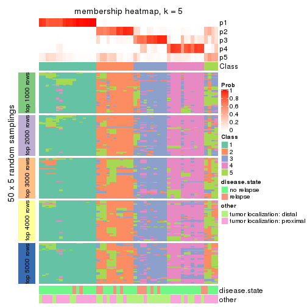
membership_heatmap(res, k = 6)
As soon as we have had the classes for columns, we can look for signatures which are significantly different between classes which can be candidate marks for certain classes. Following are the heatmaps for signatures.
Signature heatmaps where rows are scaled:
get_signatures(res, k = 2)
get_signatures(res, k = 3)
get_signatures(res, k = 4)
get_signatures(res, k = 5)
get_signatures(res, k = 6)
Signature heatmaps where rows are not scaled:
get_signatures(res, k = 2, scale_rows = FALSE)
get_signatures(res, k = 3, scale_rows = FALSE)
get_signatures(res, k = 4, scale_rows = FALSE)
get_signatures(res, k = 5, scale_rows = FALSE)
get_signatures(res, k = 6, scale_rows = FALSE)
Compare the overlap of signatures from different k:
compare_signatures(res)
get_signature() returns a data frame invisibly. TO get the list of signatures, the function
call should be assigned to a variable explicitly. In following code, if plot argument is set
to FALSE, no heatmap is plotted while only the differential analysis is performed.
# code only for demonstration
tb = get_signature(res, k = ..., plot = FALSE)
An example of the output of tb is:
#> which_row fdr mean_1 mean_2 scaled_mean_1 scaled_mean_2 km
#> 1 38 0.042760348 8.373488 9.131774 -0.5533452 0.5164555 1
#> 2 40 0.018707592 7.106213 8.469186 -0.6173731 0.5762149 1
#> 3 55 0.019134737 10.221463 11.207825 -0.6159697 0.5749050 1
#> 4 59 0.006059896 5.921854 7.869574 -0.6899429 0.6439467 1
#> 5 60 0.018055526 8.928898 10.211722 -0.6204761 0.5791110 1
#> 6 98 0.009384629 15.714769 14.887706 0.6635654 -0.6193277 2
...
The columns in tb are:
which_row: row indices corresponding to the input matrix.fdr: FDR for the differential test. mean_x: The mean value in group x.scaled_mean_x: The mean value in group x after rows are scaled.km: Row groups if k-means clustering is applied to rows.UMAP plot which shows how samples are separated.
dimension_reduction(res, k = 2, method = "UMAP")
dimension_reduction(res, k = 3, method = "UMAP")
dimension_reduction(res, k = 4, method = "UMAP")
dimension_reduction(res, k = 5, method = "UMAP")
dimension_reduction(res, k = 6, method = "UMAP")
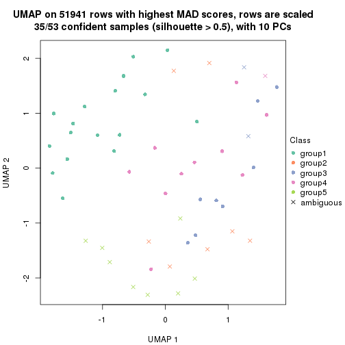
Following heatmap shows how subgroups are split when increasing k:
collect_classes(res)
Test correlation between subgroups and known annotations. If the known annotation is numeric, one-way ANOVA test is applied, and if the known annotation is discrete, chi-squared contingency table test is applied.
test_to_known_factors(res)
#> n disease.state(p) other(p) k
#> MAD:skmeans 53 0.2812 0.0132 2
#> MAD:skmeans 52 0.1232 0.0186 3
#> MAD:skmeans 49 0.1351 0.0019 4
#> MAD:skmeans 38 0.3067 0.0023 5
#> MAD:skmeans 35 0.0538 0.0015 6
If matrix rows can be associated to genes, consider to use functional_enrichment(res,
...) to perform function enrichment for the signature genes. See this vignette for more detailed explanations.
The object with results only for a single top-value method and a single partition method can be extracted as:
res = res_list["MAD", "pam"]
# you can also extract it by
# res = res_list["MAD:pam"]
A summary of res and all the functions that can be applied to it:
res
#> A 'ConsensusPartition' object with k = 2, 3, 4, 5, 6.
#> On a matrix with 51941 rows and 53 columns.
#> Top rows (1000, 2000, 3000, 4000, 5000) are extracted by 'MAD' method.
#> Subgroups are detected by 'pam' method.
#> Performed in total 1250 partitions by row resampling.
#> Best k for subgroups seems to be 2.
#>
#> Following methods can be applied to this 'ConsensusPartition' object:
#> [1] "cola_report" "collect_classes" "collect_plots"
#> [4] "collect_stats" "colnames" "compare_signatures"
#> [7] "consensus_heatmap" "dimension_reduction" "functional_enrichment"
#> [10] "get_anno_col" "get_anno" "get_classes"
#> [13] "get_consensus" "get_matrix" "get_membership"
#> [16] "get_param" "get_signatures" "get_stats"
#> [19] "is_best_k" "is_stable_k" "membership_heatmap"
#> [22] "ncol" "nrow" "plot_ecdf"
#> [25] "rownames" "select_partition_number" "show"
#> [28] "suggest_best_k" "test_to_known_factors"
collect_plots() function collects all the plots made from res for all k (number of partitions)
into one single page to provide an easy and fast comparison between different k.
collect_plots(res)
The plots are:
k and the heatmap of
predicted classes for each k.k.k.k.All the plots in panels can be made by individual functions and they are plotted later in this section.
select_partition_number() produces several plots showing different
statistics for choosing “optimized” k. There are following statistics:
k;k, the area increased is defined as \(A_k - A_{k-1}\).The detailed explanations of these statistics can be found in the cola vignette.
Generally speaking, lower PAC score, higher mean silhouette score or higher
concordance corresponds to better partition. Rand index and Jaccard index
measure how similar the current partition is compared to partition with k-1.
If they are too similar, we won't accept k is better than k-1.
select_partition_number(res)
The numeric values for all these statistics can be obtained by get_stats().
get_stats(res)
#> k 1-PAC mean_silhouette concordance area_increased Rand Jaccard
#> 2 2 0.813 0.915 0.961 0.4597 0.556 0.556
#> 3 3 0.660 0.819 0.912 0.4552 0.745 0.553
#> 4 4 0.596 0.670 0.794 0.1054 0.938 0.814
#> 5 5 0.620 0.486 0.728 0.0637 0.917 0.706
#> 6 6 0.666 0.540 0.715 0.0541 0.869 0.480
suggest_best_k() suggests the best \(k\) based on these statistics. The rules are as follows:
suggest_best_k(res)
#> [1] 2
Following shows the table of the partitions (You need to click the show/hide
code output link to see it). The membership matrix (columns with name p*)
is inferred by
clue::cl_consensus()
function with the SE method. Basically the value in the membership matrix
represents the probability to belong to a certain group. The finall class
label for an item is determined with the group with highest probability it
belongs to.
In get_classes() function, the entropy is calculated from the membership
matrix and the silhouette score is calculated from the consensus matrix.
cbind(get_classes(res, k = 2), get_membership(res, k = 2))
#> class entropy silhouette p1 p2
#> GSM452149 2 0.0000 0.945 0.000 1.000
#> GSM452150 2 0.0000 0.945 0.000 1.000
#> GSM452152 2 0.0000 0.945 0.000 1.000
#> GSM452154 2 0.0000 0.945 0.000 1.000
#> GSM452160 2 0.0000 0.945 0.000 1.000
#> GSM452167 2 0.0000 0.945 0.000 1.000
#> GSM452182 1 0.0000 0.984 1.000 0.000
#> GSM452185 2 0.7674 0.732 0.224 0.776
#> GSM452186 2 0.0000 0.945 0.000 1.000
#> GSM452187 2 0.0000 0.945 0.000 1.000
#> GSM452189 1 0.0000 0.984 1.000 0.000
#> GSM452195 2 0.0000 0.945 0.000 1.000
#> GSM452196 2 0.0000 0.945 0.000 1.000
#> GSM452197 1 0.0000 0.984 1.000 0.000
#> GSM452198 2 0.0000 0.945 0.000 1.000
#> GSM452199 2 0.0000 0.945 0.000 1.000
#> GSM452148 2 0.9552 0.475 0.376 0.624
#> GSM452151 2 0.8016 0.706 0.244 0.756
#> GSM452153 1 0.0672 0.977 0.992 0.008
#> GSM452155 2 0.0000 0.945 0.000 1.000
#> GSM452156 2 0.0000 0.945 0.000 1.000
#> GSM452157 1 0.0000 0.984 1.000 0.000
#> GSM452158 2 0.0000 0.945 0.000 1.000
#> GSM452162 2 0.6148 0.807 0.152 0.848
#> GSM452163 1 0.0000 0.984 1.000 0.000
#> GSM452166 2 0.0000 0.945 0.000 1.000
#> GSM452168 1 0.0000 0.984 1.000 0.000
#> GSM452169 1 0.0000 0.984 1.000 0.000
#> GSM452170 2 0.0000 0.945 0.000 1.000
#> GSM452172 2 0.7674 0.732 0.224 0.776
#> GSM452173 1 0.0000 0.984 1.000 0.000
#> GSM452174 1 0.0000 0.984 1.000 0.000
#> GSM452176 2 0.0000 0.945 0.000 1.000
#> GSM452179 1 0.0000 0.984 1.000 0.000
#> GSM452180 1 0.0000 0.984 1.000 0.000
#> GSM452181 2 0.0000 0.945 0.000 1.000
#> GSM452183 1 0.0000 0.984 1.000 0.000
#> GSM452184 1 0.7674 0.683 0.776 0.224
#> GSM452188 1 0.0000 0.984 1.000 0.000
#> GSM452193 2 0.7674 0.732 0.224 0.776
#> GSM452165 2 0.0000 0.945 0.000 1.000
#> GSM452171 2 0.0000 0.945 0.000 1.000
#> GSM452175 1 0.0000 0.984 1.000 0.000
#> GSM452177 2 0.0000 0.945 0.000 1.000
#> GSM452190 2 0.9552 0.475 0.376 0.624
#> GSM452191 2 0.0000 0.945 0.000 1.000
#> GSM452192 2 0.0000 0.945 0.000 1.000
#> GSM452194 2 0.0000 0.945 0.000 1.000
#> GSM452200 2 0.0000 0.945 0.000 1.000
#> GSM452159 1 0.0000 0.984 1.000 0.000
#> GSM452161 2 0.0000 0.945 0.000 1.000
#> GSM452164 2 0.0000 0.945 0.000 1.000
#> GSM452178 2 0.0000 0.945 0.000 1.000
cbind(get_classes(res, k = 3), get_membership(res, k = 3))
#> class entropy silhouette p1 p2 p3
#> GSM452149 3 0.5291 0.6956 0.000 0.268 0.732
#> GSM452150 3 0.4555 0.6984 0.000 0.200 0.800
#> GSM452152 3 0.3340 0.8251 0.000 0.120 0.880
#> GSM452154 3 0.5497 0.7098 0.000 0.292 0.708
#> GSM452160 3 0.3340 0.7594 0.000 0.120 0.880
#> GSM452167 3 0.6307 -0.1135 0.000 0.488 0.512
#> GSM452182 1 0.0000 0.9997 1.000 0.000 0.000
#> GSM452185 3 0.3918 0.8196 0.004 0.140 0.856
#> GSM452186 2 0.0000 0.8498 0.000 1.000 0.000
#> GSM452187 3 0.0237 0.8401 0.000 0.004 0.996
#> GSM452189 1 0.0000 0.9997 1.000 0.000 0.000
#> GSM452195 2 0.6215 -0.0315 0.000 0.572 0.428
#> GSM452196 2 0.3412 0.8263 0.000 0.876 0.124
#> GSM452197 1 0.0000 0.9997 1.000 0.000 0.000
#> GSM452198 3 0.0237 0.8404 0.000 0.004 0.996
#> GSM452199 2 0.0000 0.8498 0.000 1.000 0.000
#> GSM452148 2 0.0000 0.8498 0.000 1.000 0.000
#> GSM452151 3 0.5428 0.7747 0.120 0.064 0.816
#> GSM452153 1 0.0000 0.9997 1.000 0.000 0.000
#> GSM452155 3 0.5465 0.7122 0.000 0.288 0.712
#> GSM452156 2 0.1031 0.8449 0.000 0.976 0.024
#> GSM452157 1 0.0000 0.9997 1.000 0.000 0.000
#> GSM452158 2 0.6079 0.1105 0.000 0.612 0.388
#> GSM452162 2 0.3551 0.8217 0.000 0.868 0.132
#> GSM452163 1 0.0000 0.9997 1.000 0.000 0.000
#> GSM452166 3 0.3038 0.8307 0.000 0.104 0.896
#> GSM452168 1 0.0000 0.9997 1.000 0.000 0.000
#> GSM452169 1 0.0000 0.9997 1.000 0.000 0.000
#> GSM452170 3 0.3340 0.8251 0.000 0.120 0.880
#> GSM452172 3 0.4121 0.8225 0.024 0.108 0.868
#> GSM452173 1 0.0237 0.9957 0.996 0.004 0.000
#> GSM452174 1 0.0000 0.9997 1.000 0.000 0.000
#> GSM452176 3 0.0000 0.8397 0.000 0.000 1.000
#> GSM452179 1 0.0000 0.9997 1.000 0.000 0.000
#> GSM452180 1 0.0000 0.9997 1.000 0.000 0.000
#> GSM452181 2 0.0592 0.8506 0.000 0.988 0.012
#> GSM452183 1 0.0000 0.9997 1.000 0.000 0.000
#> GSM452184 3 0.4575 0.7292 0.184 0.004 0.812
#> GSM452188 1 0.0000 0.9997 1.000 0.000 0.000
#> GSM452193 3 0.5363 0.7287 0.000 0.276 0.724
#> GSM452165 2 0.3482 0.8241 0.000 0.872 0.128
#> GSM452171 2 0.4235 0.7950 0.000 0.824 0.176
#> GSM452175 1 0.0000 0.9997 1.000 0.000 0.000
#> GSM452177 3 0.0892 0.8385 0.000 0.020 0.980
#> GSM452190 2 0.3192 0.7895 0.112 0.888 0.000
#> GSM452191 2 0.3551 0.8217 0.000 0.868 0.132
#> GSM452192 3 0.0000 0.8397 0.000 0.000 1.000
#> GSM452194 3 0.0237 0.8401 0.000 0.004 0.996
#> GSM452200 3 0.0000 0.8397 0.000 0.000 1.000
#> GSM452159 1 0.0000 0.9997 1.000 0.000 0.000
#> GSM452161 2 0.0000 0.8498 0.000 1.000 0.000
#> GSM452164 2 0.1289 0.8372 0.000 0.968 0.032
#> GSM452178 3 0.0237 0.8401 0.000 0.004 0.996
cbind(get_classes(res, k = 4), get_membership(res, k = 4))
#> class entropy silhouette p1 p2 p3 p4
#> GSM452149 3 0.6306 0.299 0.000 0.392 0.544 0.064
#> GSM452150 3 0.4920 0.531 0.000 0.164 0.768 0.068
#> GSM452152 4 0.5155 0.660 0.000 0.004 0.468 0.528
#> GSM452154 3 0.6852 0.473 0.000 0.208 0.600 0.192
#> GSM452160 3 0.3013 0.592 0.000 0.080 0.888 0.032
#> GSM452167 3 0.6302 0.122 0.000 0.368 0.564 0.068
#> GSM452182 1 0.2814 0.875 0.868 0.000 0.000 0.132
#> GSM452185 3 0.7220 0.421 0.092 0.080 0.656 0.172
#> GSM452186 2 0.0188 0.768 0.000 0.996 0.000 0.004
#> GSM452187 3 0.0188 0.612 0.000 0.004 0.996 0.000
#> GSM452189 1 0.1022 0.902 0.968 0.000 0.000 0.032
#> GSM452195 2 0.5924 0.209 0.000 0.556 0.404 0.040
#> GSM452196 2 0.1302 0.777 0.000 0.956 0.044 0.000
#> GSM452197 1 0.0707 0.904 0.980 0.000 0.000 0.020
#> GSM452198 3 0.1902 0.614 0.000 0.004 0.932 0.064
#> GSM452199 2 0.0707 0.767 0.000 0.980 0.000 0.020
#> GSM452148 2 0.3557 0.697 0.108 0.856 0.000 0.036
#> GSM452151 4 0.4632 0.760 0.000 0.004 0.308 0.688
#> GSM452153 1 0.1867 0.898 0.928 0.000 0.000 0.072
#> GSM452155 4 0.6240 0.483 0.000 0.200 0.136 0.664
#> GSM452156 2 0.5558 0.511 0.000 0.640 0.036 0.324
#> GSM452157 1 0.2469 0.909 0.892 0.000 0.000 0.108
#> GSM452158 2 0.6683 0.360 0.000 0.620 0.204 0.176
#> GSM452162 2 0.6698 0.637 0.108 0.684 0.168 0.040
#> GSM452163 1 0.2469 0.909 0.892 0.000 0.000 0.108
#> GSM452166 3 0.3726 0.331 0.000 0.000 0.788 0.212
#> GSM452168 1 0.2760 0.877 0.872 0.000 0.000 0.128
#> GSM452169 1 0.2469 0.909 0.892 0.000 0.000 0.108
#> GSM452170 4 0.4817 0.745 0.000 0.000 0.388 0.612
#> GSM452172 4 0.4522 0.756 0.000 0.000 0.320 0.680
#> GSM452173 1 0.2944 0.875 0.868 0.004 0.000 0.128
#> GSM452174 1 0.2469 0.909 0.892 0.000 0.000 0.108
#> GSM452176 3 0.3219 0.561 0.000 0.000 0.836 0.164
#> GSM452179 1 0.2469 0.909 0.892 0.000 0.000 0.108
#> GSM452180 1 0.2469 0.909 0.892 0.000 0.000 0.108
#> GSM452181 2 0.1635 0.778 0.000 0.948 0.044 0.008
#> GSM452183 1 0.0707 0.904 0.980 0.000 0.000 0.020
#> GSM452184 3 0.7176 0.208 0.136 0.004 0.532 0.328
#> GSM452188 1 0.3726 0.888 0.788 0.000 0.000 0.212
#> GSM452193 3 0.7623 0.366 0.004 0.308 0.488 0.200
#> GSM452165 2 0.2443 0.777 0.000 0.916 0.060 0.024
#> GSM452171 2 0.6219 0.549 0.000 0.640 0.264 0.096
#> GSM452175 1 0.2589 0.882 0.884 0.000 0.000 0.116
#> GSM452177 3 0.4893 0.585 0.000 0.064 0.768 0.168
#> GSM452190 2 0.2142 0.750 0.056 0.928 0.000 0.016
#> GSM452191 2 0.3533 0.760 0.000 0.864 0.080 0.056
#> GSM452192 3 0.3581 0.578 0.000 0.116 0.852 0.032
#> GSM452194 3 0.0188 0.612 0.000 0.004 0.996 0.000
#> GSM452200 3 0.3266 0.559 0.000 0.000 0.832 0.168
#> GSM452159 1 0.2469 0.909 0.892 0.000 0.000 0.108
#> GSM452161 2 0.5792 0.634 0.000 0.708 0.124 0.168
#> GSM452164 2 0.3969 0.679 0.000 0.804 0.180 0.016
#> GSM452178 3 0.1004 0.611 0.000 0.004 0.972 0.024
cbind(get_classes(res, k = 5), get_membership(res, k = 5))
#> class entropy silhouette p1 p2 p3 p4 p5
#> GSM452149 3 0.6894 0.191 0.000 0.348 0.432 0.012 0.208
#> GSM452150 3 0.3022 0.469 0.000 0.136 0.848 0.012 0.004
#> GSM452152 4 0.3661 0.466 0.000 0.000 0.276 0.724 0.000
#> GSM452154 5 0.7335 -0.471 0.000 0.192 0.376 0.040 0.392
#> GSM452160 3 0.2054 0.538 0.000 0.052 0.920 0.028 0.000
#> GSM452167 3 0.4089 0.205 0.000 0.244 0.736 0.004 0.016
#> GSM452182 5 0.4210 -0.345 0.412 0.000 0.000 0.000 0.588
#> GSM452185 3 0.6355 0.476 0.000 0.044 0.484 0.060 0.412
#> GSM452186 2 0.0162 0.747 0.000 0.996 0.004 0.000 0.000
#> GSM452187 3 0.5276 0.588 0.000 0.004 0.632 0.064 0.300
#> GSM452189 1 0.3336 0.719 0.772 0.000 0.000 0.000 0.228
#> GSM452195 2 0.4352 0.607 0.000 0.732 0.236 0.012 0.020
#> GSM452196 2 0.0703 0.749 0.000 0.976 0.024 0.000 0.000
#> GSM452197 1 0.2516 0.760 0.860 0.000 0.000 0.000 0.140
#> GSM452198 3 0.5528 0.574 0.000 0.000 0.644 0.140 0.216
#> GSM452199 2 0.1202 0.746 0.000 0.960 0.032 0.004 0.004
#> GSM452148 2 0.3461 0.659 0.000 0.772 0.000 0.004 0.224
#> GSM452151 4 0.0510 0.623 0.000 0.000 0.016 0.984 0.000
#> GSM452153 1 0.3796 0.648 0.700 0.000 0.000 0.000 0.300
#> GSM452155 4 0.6594 0.425 0.000 0.180 0.136 0.616 0.068
#> GSM452156 4 0.5756 -0.125 0.000 0.468 0.044 0.468 0.020
#> GSM452157 1 0.0000 0.806 1.000 0.000 0.000 0.000 0.000
#> GSM452158 2 0.5226 0.601 0.000 0.724 0.160 0.028 0.088
#> GSM452162 2 0.5993 0.598 0.000 0.596 0.244 0.004 0.156
#> GSM452163 1 0.0162 0.805 0.996 0.000 0.000 0.000 0.004
#> GSM452166 4 0.6814 -0.436 0.000 0.000 0.344 0.352 0.304
#> GSM452168 5 0.4210 -0.345 0.412 0.000 0.000 0.000 0.588
#> GSM452169 1 0.0000 0.806 1.000 0.000 0.000 0.000 0.000
#> GSM452170 4 0.0609 0.623 0.000 0.000 0.020 0.980 0.000
#> GSM452172 4 0.0609 0.623 0.000 0.000 0.020 0.980 0.000
#> GSM452173 1 0.4410 0.470 0.556 0.000 0.000 0.004 0.440
#> GSM452174 1 0.0162 0.804 0.996 0.000 0.000 0.000 0.004
#> GSM452176 3 0.6325 0.537 0.000 0.000 0.504 0.180 0.316
#> GSM452179 1 0.0000 0.806 1.000 0.000 0.000 0.000 0.000
#> GSM452180 1 0.0000 0.806 1.000 0.000 0.000 0.000 0.000
#> GSM452181 2 0.0833 0.747 0.000 0.976 0.016 0.004 0.004
#> GSM452183 1 0.2471 0.761 0.864 0.000 0.000 0.000 0.136
#> GSM452184 5 0.5930 0.140 0.104 0.004 0.112 0.080 0.700
#> GSM452188 1 0.4283 0.316 0.544 0.000 0.000 0.000 0.456
#> GSM452193 5 0.7117 -0.472 0.000 0.172 0.380 0.032 0.416
#> GSM452165 2 0.3814 0.710 0.000 0.784 0.192 0.012 0.012
#> GSM452171 2 0.4800 0.390 0.000 0.508 0.476 0.012 0.004
#> GSM452175 1 0.4300 0.368 0.524 0.000 0.000 0.000 0.476
#> GSM452177 3 0.2879 0.531 0.000 0.080 0.880 0.032 0.008
#> GSM452190 2 0.2011 0.720 0.000 0.908 0.000 0.004 0.088
#> GSM452191 2 0.4893 0.500 0.000 0.580 0.396 0.008 0.016
#> GSM452192 3 0.2853 0.523 0.000 0.072 0.876 0.052 0.000
#> GSM452194 3 0.5438 0.587 0.000 0.012 0.628 0.060 0.300
#> GSM452200 3 0.6673 0.467 0.000 0.000 0.432 0.252 0.316
#> GSM452159 1 0.0000 0.806 1.000 0.000 0.000 0.000 0.000
#> GSM452161 2 0.5201 0.695 0.000 0.728 0.152 0.028 0.092
#> GSM452164 2 0.4168 0.652 0.000 0.756 0.200 0.000 0.044
#> GSM452178 3 0.5428 0.584 0.000 0.008 0.620 0.064 0.308
cbind(get_classes(res, k = 6), get_membership(res, k = 6))
#> class entropy silhouette p1 p2 p3 p4 p5 p6
#> GSM452149 3 0.5628 0.150 0.000 0.116 0.476 0.000 0.400 0.008
#> GSM452150 2 0.5616 0.446 0.000 0.492 0.352 0.000 0.156 0.000
#> GSM452152 4 0.3741 0.470 0.000 0.008 0.320 0.672 0.000 0.000
#> GSM452154 3 0.5516 0.337 0.000 0.100 0.464 0.000 0.428 0.008
#> GSM452160 2 0.3828 0.419 0.000 0.560 0.440 0.000 0.000 0.000
#> GSM452167 2 0.5905 0.460 0.000 0.540 0.304 0.000 0.128 0.028
#> GSM452182 6 0.2092 0.774 0.124 0.000 0.000 0.000 0.000 0.876
#> GSM452185 3 0.4213 0.632 0.000 0.100 0.780 0.000 0.080 0.040
#> GSM452186 5 0.3351 0.630 0.000 0.288 0.000 0.000 0.712 0.000
#> GSM452187 3 0.1049 0.635 0.000 0.032 0.960 0.000 0.008 0.000
#> GSM452189 1 0.4613 0.558 0.676 0.064 0.008 0.000 0.000 0.252
#> GSM452195 5 0.1462 0.572 0.000 0.056 0.008 0.000 0.936 0.000
#> GSM452196 5 0.3563 0.615 0.000 0.336 0.000 0.000 0.664 0.000
#> GSM452197 1 0.2633 0.786 0.864 0.032 0.000 0.000 0.000 0.104
#> GSM452198 3 0.4479 0.483 0.000 0.144 0.744 0.088 0.024 0.000
#> GSM452199 5 0.3330 0.627 0.000 0.284 0.000 0.000 0.716 0.000
#> GSM452148 2 0.5959 -0.470 0.000 0.416 0.000 0.000 0.360 0.224
#> GSM452151 4 0.0000 0.709 0.000 0.000 0.000 1.000 0.000 0.000
#> GSM452153 1 0.4084 0.214 0.588 0.012 0.000 0.000 0.000 0.400
#> GSM452155 4 0.5793 0.382 0.000 0.088 0.016 0.472 0.416 0.008
#> GSM452156 4 0.5410 0.429 0.000 0.076 0.016 0.520 0.388 0.000
#> GSM452157 1 0.0000 0.856 1.000 0.000 0.000 0.000 0.000 0.000
#> GSM452158 5 0.2555 0.510 0.000 0.096 0.020 0.000 0.876 0.008
#> GSM452162 2 0.6540 -0.122 0.000 0.516 0.064 0.000 0.224 0.196
#> GSM452163 1 0.1075 0.831 0.952 0.000 0.000 0.000 0.000 0.048
#> GSM452166 3 0.3428 0.546 0.000 0.000 0.696 0.304 0.000 0.000
#> GSM452168 6 0.2092 0.774 0.124 0.000 0.000 0.000 0.000 0.876
#> GSM452169 1 0.0000 0.856 1.000 0.000 0.000 0.000 0.000 0.000
#> GSM452170 4 0.0000 0.709 0.000 0.000 0.000 1.000 0.000 0.000
#> GSM452172 4 0.0000 0.709 0.000 0.000 0.000 1.000 0.000 0.000
#> GSM452173 6 0.5196 0.192 0.348 0.080 0.008 0.000 0.000 0.564
#> GSM452174 1 0.1327 0.810 0.936 0.000 0.000 0.000 0.000 0.064
#> GSM452176 3 0.2092 0.645 0.000 0.000 0.876 0.124 0.000 0.000
#> GSM452179 1 0.0000 0.856 1.000 0.000 0.000 0.000 0.000 0.000
#> GSM452180 1 0.0146 0.856 0.996 0.004 0.000 0.000 0.000 0.000
#> GSM452181 5 0.3575 0.614 0.000 0.284 0.008 0.000 0.708 0.000
#> GSM452183 1 0.2925 0.779 0.860 0.052 0.008 0.000 0.000 0.080
#> GSM452184 6 0.3167 0.709 0.072 0.000 0.096 0.000 0.000 0.832
#> GSM452188 6 0.2823 0.740 0.204 0.000 0.000 0.000 0.000 0.796
#> GSM452193 3 0.5773 0.482 0.000 0.144 0.564 0.000 0.272 0.020
#> GSM452165 5 0.4570 0.296 0.000 0.292 0.064 0.000 0.644 0.000
#> GSM452171 2 0.3567 0.409 0.000 0.800 0.100 0.000 0.100 0.000
#> GSM452175 6 0.4251 0.537 0.348 0.028 0.000 0.000 0.000 0.624
#> GSM452177 2 0.5305 0.437 0.000 0.576 0.284 0.000 0.140 0.000
#> GSM452190 5 0.5729 0.460 0.000 0.348 0.008 0.000 0.504 0.140
#> GSM452191 2 0.3534 0.369 0.000 0.800 0.076 0.000 0.124 0.000
#> GSM452192 2 0.3838 0.379 0.000 0.552 0.448 0.000 0.000 0.000
#> GSM452194 3 0.1245 0.639 0.000 0.032 0.952 0.000 0.016 0.000
#> GSM452200 3 0.2730 0.621 0.000 0.000 0.808 0.192 0.000 0.000
#> GSM452159 1 0.0000 0.856 1.000 0.000 0.000 0.000 0.000 0.000
#> GSM452161 5 0.4195 0.296 0.000 0.328 0.016 0.000 0.648 0.008
#> GSM452164 5 0.6100 0.461 0.000 0.240 0.172 0.000 0.552 0.036
#> GSM452178 3 0.0993 0.642 0.000 0.024 0.964 0.000 0.012 0.000
Heatmaps for the consensus matrix. It visualizes the probability of two samples to be in a same group.
consensus_heatmap(res, k = 2)
consensus_heatmap(res, k = 3)
consensus_heatmap(res, k = 4)
consensus_heatmap(res, k = 5)
consensus_heatmap(res, k = 6)
Heatmaps for the membership of samples in all partitions to see how consistent they are:
membership_heatmap(res, k = 2)

membership_heatmap(res, k = 3)
membership_heatmap(res, k = 4)
membership_heatmap(res, k = 5)
membership_heatmap(res, k = 6)
As soon as we have had the classes for columns, we can look for signatures which are significantly different between classes which can be candidate marks for certain classes. Following are the heatmaps for signatures.
Signature heatmaps where rows are scaled:
get_signatures(res, k = 2)
get_signatures(res, k = 3)
get_signatures(res, k = 4)
get_signatures(res, k = 5)
get_signatures(res, k = 6)
Signature heatmaps where rows are not scaled:
get_signatures(res, k = 2, scale_rows = FALSE)
get_signatures(res, k = 3, scale_rows = FALSE)
get_signatures(res, k = 4, scale_rows = FALSE)

get_signatures(res, k = 5, scale_rows = FALSE)
get_signatures(res, k = 6, scale_rows = FALSE)
Compare the overlap of signatures from different k:
compare_signatures(res)
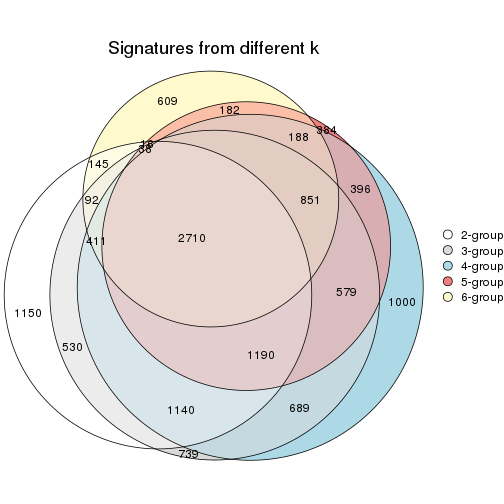
get_signature() returns a data frame invisibly. TO get the list of signatures, the function
call should be assigned to a variable explicitly. In following code, if plot argument is set
to FALSE, no heatmap is plotted while only the differential analysis is performed.
# code only for demonstration
tb = get_signature(res, k = ..., plot = FALSE)
An example of the output of tb is:
#> which_row fdr mean_1 mean_2 scaled_mean_1 scaled_mean_2 km
#> 1 38 0.042760348 8.373488 9.131774 -0.5533452 0.5164555 1
#> 2 40 0.018707592 7.106213 8.469186 -0.6173731 0.5762149 1
#> 3 55 0.019134737 10.221463 11.207825 -0.6159697 0.5749050 1
#> 4 59 0.006059896 5.921854 7.869574 -0.6899429 0.6439467 1
#> 5 60 0.018055526 8.928898 10.211722 -0.6204761 0.5791110 1
#> 6 98 0.009384629 15.714769 14.887706 0.6635654 -0.6193277 2
...
The columns in tb are:
which_row: row indices corresponding to the input matrix.fdr: FDR for the differential test. mean_x: The mean value in group x.scaled_mean_x: The mean value in group x after rows are scaled.km: Row groups if k-means clustering is applied to rows.UMAP plot which shows how samples are separated.
dimension_reduction(res, k = 2, method = "UMAP")
dimension_reduction(res, k = 3, method = "UMAP")
dimension_reduction(res, k = 4, method = "UMAP")
dimension_reduction(res, k = 5, method = "UMAP")
dimension_reduction(res, k = 6, method = "UMAP")
Following heatmap shows how subgroups are split when increasing k:
collect_classes(res)
Test correlation between subgroups and known annotations. If the known annotation is numeric, one-way ANOVA test is applied, and if the known annotation is discrete, chi-squared contingency table test is applied.
test_to_known_factors(res)
#> n disease.state(p) other(p) k
#> MAD:pam 51 0.2935 0.0373 2
#> MAD:pam 50 0.1158 0.1217 3
#> MAD:pam 43 0.0567 0.0366 4
#> MAD:pam 34 0.1477 0.0341 5
#> MAD:pam 31 0.2178 0.1743 6
If matrix rows can be associated to genes, consider to use functional_enrichment(res,
...) to perform function enrichment for the signature genes. See this vignette for more detailed explanations.
The object with results only for a single top-value method and a single partition method can be extracted as:
res = res_list["MAD", "mclust"]
# you can also extract it by
# res = res_list["MAD:mclust"]
A summary of res and all the functions that can be applied to it:
res
#> A 'ConsensusPartition' object with k = 2, 3, 4, 5, 6.
#> On a matrix with 51941 rows and 53 columns.
#> Top rows (1000, 2000, 3000, 4000, 5000) are extracted by 'MAD' method.
#> Subgroups are detected by 'mclust' method.
#> Performed in total 1250 partitions by row resampling.
#> Best k for subgroups seems to be 2.
#>
#> Following methods can be applied to this 'ConsensusPartition' object:
#> [1] "cola_report" "collect_classes" "collect_plots"
#> [4] "collect_stats" "colnames" "compare_signatures"
#> [7] "consensus_heatmap" "dimension_reduction" "functional_enrichment"
#> [10] "get_anno_col" "get_anno" "get_classes"
#> [13] "get_consensus" "get_matrix" "get_membership"
#> [16] "get_param" "get_signatures" "get_stats"
#> [19] "is_best_k" "is_stable_k" "membership_heatmap"
#> [22] "ncol" "nrow" "plot_ecdf"
#> [25] "rownames" "select_partition_number" "show"
#> [28] "suggest_best_k" "test_to_known_factors"
collect_plots() function collects all the plots made from res for all k (number of partitions)
into one single page to provide an easy and fast comparison between different k.
collect_plots(res)
The plots are:
k and the heatmap of
predicted classes for each k.k.k.k.All the plots in panels can be made by individual functions and they are plotted later in this section.
select_partition_number() produces several plots showing different
statistics for choosing “optimized” k. There are following statistics:
k;k, the area increased is defined as \(A_k - A_{k-1}\).The detailed explanations of these statistics can be found in the cola vignette.
Generally speaking, lower PAC score, higher mean silhouette score or higher
concordance corresponds to better partition. Rand index and Jaccard index
measure how similar the current partition is compared to partition with k-1.
If they are too similar, we won't accept k is better than k-1.
select_partition_number(res)
The numeric values for all these statistics can be obtained by get_stats().
get_stats(res)
#> k 1-PAC mean_silhouette concordance area_increased Rand Jaccard
#> 2 2 1.000 0.990 0.994 0.4709 0.531 0.531
#> 3 3 0.637 0.730 0.845 0.3211 0.849 0.716
#> 4 4 0.622 0.555 0.785 0.1191 0.896 0.746
#> 5 5 0.559 0.512 0.710 0.0706 0.848 0.611
#> 6 6 0.621 0.553 0.738 0.0575 0.856 0.545
suggest_best_k() suggests the best \(k\) based on these statistics. The rules are as follows:
suggest_best_k(res)
#> [1] 2
Following shows the table of the partitions (You need to click the show/hide
code output link to see it). The membership matrix (columns with name p*)
is inferred by
clue::cl_consensus()
function with the SE method. Basically the value in the membership matrix
represents the probability to belong to a certain group. The finall class
label for an item is determined with the group with highest probability it
belongs to.
In get_classes() function, the entropy is calculated from the membership
matrix and the silhouette score is calculated from the consensus matrix.
cbind(get_classes(res, k = 2), get_membership(res, k = 2))
#> class entropy silhouette p1 p2
#> GSM452149 2 0.0376 0.990 0.004 0.996
#> GSM452150 2 0.0376 0.990 0.004 0.996
#> GSM452152 2 0.0000 0.992 0.000 1.000
#> GSM452154 2 0.0000 0.992 0.000 1.000
#> GSM452160 2 0.0376 0.990 0.004 0.996
#> GSM452167 2 0.0376 0.990 0.004 0.996
#> GSM452182 1 0.0376 1.000 0.996 0.004
#> GSM452185 2 0.0000 0.992 0.000 1.000
#> GSM452186 2 0.0000 0.992 0.000 1.000
#> GSM452187 2 0.0000 0.992 0.000 1.000
#> GSM452189 1 0.0376 1.000 0.996 0.004
#> GSM452195 2 0.0376 0.990 0.004 0.996
#> GSM452196 2 0.0000 0.992 0.000 1.000
#> GSM452197 1 0.0376 1.000 0.996 0.004
#> GSM452198 2 0.0000 0.992 0.000 1.000
#> GSM452199 2 0.0000 0.992 0.000 1.000
#> GSM452148 1 0.0376 1.000 0.996 0.004
#> GSM452151 2 0.2423 0.955 0.040 0.960
#> GSM452153 1 0.0376 1.000 0.996 0.004
#> GSM452155 2 0.0000 0.992 0.000 1.000
#> GSM452156 2 0.0000 0.992 0.000 1.000
#> GSM452157 1 0.0376 1.000 0.996 0.004
#> GSM452158 2 0.0376 0.990 0.004 0.996
#> GSM452162 2 0.6973 0.771 0.188 0.812
#> GSM452163 1 0.0376 1.000 0.996 0.004
#> GSM452166 2 0.0000 0.992 0.000 1.000
#> GSM452168 1 0.0376 1.000 0.996 0.004
#> GSM452169 1 0.0376 1.000 0.996 0.004
#> GSM452170 2 0.0000 0.992 0.000 1.000
#> GSM452172 2 0.0376 0.989 0.004 0.996
#> GSM452173 1 0.0376 1.000 0.996 0.004
#> GSM452174 1 0.0376 1.000 0.996 0.004
#> GSM452176 2 0.0000 0.992 0.000 1.000
#> GSM452179 1 0.0376 1.000 0.996 0.004
#> GSM452180 1 0.0376 1.000 0.996 0.004
#> GSM452181 2 0.0000 0.992 0.000 1.000
#> GSM452183 1 0.0376 1.000 0.996 0.004
#> GSM452184 1 0.0376 1.000 0.996 0.004
#> GSM452188 1 0.0376 1.000 0.996 0.004
#> GSM452193 2 0.0000 0.992 0.000 1.000
#> GSM452165 2 0.0000 0.992 0.000 1.000
#> GSM452171 2 0.0000 0.992 0.000 1.000
#> GSM452175 1 0.0376 1.000 0.996 0.004
#> GSM452177 2 0.0000 0.992 0.000 1.000
#> GSM452190 1 0.0376 1.000 0.996 0.004
#> GSM452191 2 0.0000 0.992 0.000 1.000
#> GSM452192 2 0.0376 0.990 0.004 0.996
#> GSM452194 2 0.0000 0.992 0.000 1.000
#> GSM452200 2 0.0000 0.992 0.000 1.000
#> GSM452159 1 0.0376 1.000 0.996 0.004
#> GSM452161 2 0.0000 0.992 0.000 1.000
#> GSM452164 2 0.0000 0.992 0.000 1.000
#> GSM452178 2 0.0000 0.992 0.000 1.000
cbind(get_classes(res, k = 3), get_membership(res, k = 3))
#> class entropy silhouette p1 p2 p3
#> GSM452149 2 0.4974 0.644 0.000 0.764 0.236
#> GSM452150 2 0.0000 0.675 0.000 1.000 0.000
#> GSM452152 3 0.5706 0.754 0.000 0.320 0.680
#> GSM452154 2 0.5098 0.636 0.000 0.752 0.248
#> GSM452160 2 0.0592 0.671 0.000 0.988 0.012
#> GSM452167 2 0.4555 0.661 0.000 0.800 0.200
#> GSM452182 1 0.0000 0.973 1.000 0.000 0.000
#> GSM452185 2 0.5254 0.633 0.000 0.736 0.264
#> GSM452186 2 0.4974 0.644 0.000 0.764 0.236
#> GSM452187 2 0.0592 0.671 0.000 0.988 0.012
#> GSM452189 1 0.0237 0.972 0.996 0.000 0.004
#> GSM452195 2 0.6045 0.422 0.000 0.620 0.380
#> GSM452196 2 0.6045 0.461 0.000 0.620 0.380
#> GSM452197 1 0.0000 0.973 1.000 0.000 0.000
#> GSM452198 2 0.1411 0.659 0.000 0.964 0.036
#> GSM452199 2 0.5988 0.488 0.000 0.632 0.368
#> GSM452148 1 0.3377 0.917 0.896 0.012 0.092
#> GSM452151 3 0.4235 0.784 0.000 0.176 0.824
#> GSM452153 1 0.0747 0.971 0.984 0.000 0.016
#> GSM452155 3 0.6260 0.317 0.000 0.448 0.552
#> GSM452156 3 0.5760 0.752 0.000 0.328 0.672
#> GSM452157 1 0.0592 0.972 0.988 0.000 0.012
#> GSM452158 2 0.6045 0.415 0.000 0.620 0.380
#> GSM452162 3 0.4963 0.770 0.008 0.200 0.792
#> GSM452163 1 0.0592 0.972 0.988 0.000 0.012
#> GSM452166 2 0.3686 0.553 0.000 0.860 0.140
#> GSM452168 1 0.0000 0.973 1.000 0.000 0.000
#> GSM452169 1 0.0237 0.973 0.996 0.000 0.004
#> GSM452170 3 0.4121 0.687 0.000 0.168 0.832
#> GSM452172 3 0.4883 0.753 0.004 0.208 0.788
#> GSM452173 1 0.1289 0.965 0.968 0.000 0.032
#> GSM452174 1 0.0592 0.972 0.988 0.000 0.012
#> GSM452176 2 0.4121 0.522 0.000 0.832 0.168
#> GSM452179 1 0.0592 0.972 0.988 0.000 0.012
#> GSM452180 1 0.0000 0.973 1.000 0.000 0.000
#> GSM452181 2 0.6026 0.426 0.000 0.624 0.376
#> GSM452183 1 0.0747 0.969 0.984 0.000 0.016
#> GSM452184 1 0.6318 0.737 0.760 0.068 0.172
#> GSM452188 1 0.0000 0.973 1.000 0.000 0.000
#> GSM452193 2 0.5254 0.630 0.000 0.736 0.264
#> GSM452165 2 0.5254 0.636 0.000 0.736 0.264
#> GSM452171 2 0.2066 0.678 0.000 0.940 0.060
#> GSM452175 1 0.0000 0.973 1.000 0.000 0.000
#> GSM452177 2 0.0592 0.678 0.000 0.988 0.012
#> GSM452190 1 0.3377 0.917 0.896 0.012 0.092
#> GSM452191 2 0.6513 0.301 0.008 0.592 0.400
#> GSM452192 2 0.1860 0.644 0.000 0.948 0.052
#> GSM452194 2 0.0892 0.667 0.000 0.980 0.020
#> GSM452200 2 0.4121 0.522 0.000 0.832 0.168
#> GSM452159 1 0.0000 0.973 1.000 0.000 0.000
#> GSM452161 2 0.6062 0.411 0.000 0.616 0.384
#> GSM452164 3 0.5497 0.738 0.000 0.292 0.708
#> GSM452178 2 0.1643 0.676 0.000 0.956 0.044
cbind(get_classes(res, k = 4), get_membership(res, k = 4))
#> class entropy silhouette p1 p2 p3 p4
#> GSM452149 3 0.0927 0.6831 0.000 0.016 0.976 0.008
#> GSM452150 3 0.5688 -0.1371 0.000 0.464 0.512 0.024
#> GSM452152 4 0.6209 0.6074 0.000 0.232 0.112 0.656
#> GSM452154 3 0.1297 0.6814 0.000 0.016 0.964 0.020
#> GSM452160 3 0.5933 -0.1470 0.000 0.464 0.500 0.036
#> GSM452167 3 0.0592 0.6822 0.000 0.016 0.984 0.000
#> GSM452182 1 0.1305 0.8586 0.960 0.004 0.000 0.036
#> GSM452185 3 0.3761 0.6173 0.000 0.080 0.852 0.068
#> GSM452186 3 0.1302 0.6832 0.000 0.000 0.956 0.044
#> GSM452187 3 0.5768 -0.1367 0.000 0.456 0.516 0.028
#> GSM452189 1 0.4313 0.8097 0.736 0.004 0.000 0.260
#> GSM452195 3 0.0657 0.6836 0.000 0.012 0.984 0.004
#> GSM452196 3 0.1452 0.6821 0.000 0.008 0.956 0.036
#> GSM452197 1 0.1978 0.8597 0.928 0.004 0.000 0.068
#> GSM452198 3 0.6822 -0.0700 0.000 0.412 0.488 0.100
#> GSM452199 3 0.1452 0.6821 0.000 0.008 0.956 0.036
#> GSM452148 1 0.6272 0.6773 0.556 0.004 0.052 0.388
#> GSM452151 4 0.5425 0.5701 0.004 0.052 0.228 0.716
#> GSM452153 1 0.4535 0.7973 0.704 0.000 0.004 0.292
#> GSM452155 4 0.5383 0.3486 0.000 0.012 0.452 0.536
#> GSM452156 4 0.7120 0.5349 0.000 0.212 0.224 0.564
#> GSM452157 1 0.2197 0.8515 0.916 0.000 0.004 0.080
#> GSM452158 3 0.1284 0.6848 0.000 0.012 0.964 0.024
#> GSM452162 3 0.5279 -0.0251 0.012 0.000 0.588 0.400
#> GSM452163 1 0.1209 0.8557 0.964 0.000 0.004 0.032
#> GSM452166 2 0.4797 0.4996 0.000 0.720 0.260 0.020
#> GSM452168 1 0.3494 0.8394 0.824 0.004 0.000 0.172
#> GSM452169 1 0.0469 0.8558 0.988 0.000 0.000 0.012
#> GSM452170 4 0.5039 0.4925 0.000 0.404 0.004 0.592
#> GSM452172 4 0.5133 0.5841 0.004 0.268 0.024 0.704
#> GSM452173 1 0.4699 0.7822 0.676 0.000 0.004 0.320
#> GSM452174 1 0.0895 0.8585 0.976 0.000 0.004 0.020
#> GSM452176 2 0.1174 0.4728 0.000 0.968 0.012 0.020
#> GSM452179 1 0.1209 0.8557 0.964 0.000 0.004 0.032
#> GSM452180 1 0.0657 0.8552 0.984 0.004 0.000 0.012
#> GSM452181 3 0.1557 0.6800 0.000 0.000 0.944 0.056
#> GSM452183 1 0.4401 0.8047 0.724 0.004 0.000 0.272
#> GSM452184 1 0.4990 0.7619 0.640 0.000 0.008 0.352
#> GSM452188 1 0.0188 0.8584 0.996 0.004 0.000 0.000
#> GSM452193 3 0.3542 0.6271 0.000 0.076 0.864 0.060
#> GSM452165 3 0.1452 0.6821 0.000 0.008 0.956 0.036
#> GSM452171 3 0.4088 0.4673 0.000 0.232 0.764 0.004
#> GSM452175 1 0.0336 0.8594 0.992 0.000 0.000 0.008
#> GSM452177 3 0.5699 0.1123 0.000 0.380 0.588 0.032
#> GSM452190 1 0.6272 0.6773 0.556 0.004 0.052 0.388
#> GSM452191 3 0.3300 0.6336 0.000 0.008 0.848 0.144
#> GSM452192 2 0.6611 -0.0326 0.000 0.464 0.456 0.080
#> GSM452194 3 0.5781 -0.2056 0.000 0.484 0.488 0.028
#> GSM452200 2 0.1174 0.4728 0.000 0.968 0.012 0.020
#> GSM452159 1 0.0188 0.8584 0.996 0.004 0.000 0.000
#> GSM452161 3 0.0469 0.6842 0.000 0.000 0.988 0.012
#> GSM452164 3 0.4914 0.1533 0.000 0.012 0.676 0.312
#> GSM452178 3 0.5850 -0.1310 0.000 0.456 0.512 0.032
cbind(get_classes(res, k = 5), get_membership(res, k = 5))
#> class entropy silhouette p1 p2 p3 p4 p5
#> GSM452149 3 0.2364 0.4784 0.000 0.064 0.908 0.008 0.020
#> GSM452150 3 0.4320 0.5424 0.000 0.004 0.780 0.120 0.096
#> GSM452152 4 0.3078 0.6420 0.000 0.004 0.132 0.848 0.016
#> GSM452154 3 0.0566 0.5175 0.000 0.012 0.984 0.000 0.004
#> GSM452160 3 0.5607 0.4603 0.000 0.004 0.604 0.304 0.088
#> GSM452167 3 0.2771 0.4329 0.000 0.128 0.860 0.000 0.012
#> GSM452182 1 0.0000 0.8638 1.000 0.000 0.000 0.000 0.000
#> GSM452185 3 0.7110 0.2539 0.000 0.048 0.524 0.216 0.212
#> GSM452186 2 0.4304 0.3142 0.000 0.516 0.484 0.000 0.000
#> GSM452187 3 0.4320 0.5424 0.000 0.004 0.780 0.120 0.096
#> GSM452189 1 0.4509 0.7603 0.752 0.096 0.000 0.152 0.000
#> GSM452195 3 0.3242 0.3271 0.000 0.216 0.784 0.000 0.000
#> GSM452196 2 0.4705 0.3180 0.000 0.504 0.484 0.004 0.008
#> GSM452197 1 0.0865 0.8616 0.972 0.024 0.000 0.004 0.000
#> GSM452198 3 0.6203 0.3641 0.000 0.000 0.544 0.188 0.268
#> GSM452199 2 0.4704 0.3212 0.000 0.508 0.480 0.004 0.008
#> GSM452148 2 0.5354 0.0771 0.108 0.652 0.000 0.240 0.000
#> GSM452151 4 0.4201 0.6981 0.000 0.024 0.096 0.808 0.072
#> GSM452153 1 0.4747 0.7294 0.720 0.084 0.000 0.196 0.000
#> GSM452155 3 0.4802 -0.0782 0.000 0.012 0.504 0.480 0.004
#> GSM452156 3 0.6487 0.2514 0.000 0.220 0.520 0.256 0.004
#> GSM452157 1 0.3527 0.7669 0.804 0.024 0.000 0.172 0.000
#> GSM452158 3 0.5781 -0.0164 0.000 0.308 0.576 0.116 0.000
#> GSM452162 2 0.7501 0.2523 0.048 0.432 0.240 0.280 0.000
#> GSM452163 1 0.1270 0.8495 0.948 0.052 0.000 0.000 0.000
#> GSM452166 5 0.4437 0.7044 0.000 0.000 0.100 0.140 0.760
#> GSM452168 1 0.1408 0.8550 0.948 0.044 0.000 0.008 0.000
#> GSM452169 1 0.0000 0.8638 1.000 0.000 0.000 0.000 0.000
#> GSM452170 4 0.4749 0.3371 0.000 0.004 0.020 0.620 0.356
#> GSM452172 4 0.3599 0.6883 0.000 0.008 0.020 0.812 0.160
#> GSM452173 1 0.5854 0.6181 0.600 0.160 0.000 0.240 0.000
#> GSM452174 1 0.1197 0.8486 0.952 0.048 0.000 0.000 0.000
#> GSM452176 5 0.0898 0.8698 0.000 0.000 0.020 0.008 0.972
#> GSM452179 1 0.0510 0.8621 0.984 0.016 0.000 0.000 0.000
#> GSM452180 1 0.0451 0.8648 0.988 0.008 0.000 0.004 0.000
#> GSM452181 3 0.4644 -0.3257 0.000 0.460 0.528 0.012 0.000
#> GSM452183 1 0.5110 0.6946 0.680 0.096 0.000 0.224 0.000
#> GSM452184 1 0.6245 0.5775 0.572 0.168 0.008 0.252 0.000
#> GSM452188 1 0.0000 0.8638 1.000 0.000 0.000 0.000 0.000
#> GSM452193 3 0.7100 0.2601 0.000 0.052 0.532 0.208 0.208
#> GSM452165 2 0.4913 0.3078 0.000 0.492 0.488 0.012 0.008
#> GSM452171 3 0.2722 0.5445 0.000 0.020 0.872 0.000 0.108
#> GSM452175 1 0.0162 0.8641 0.996 0.000 0.000 0.004 0.000
#> GSM452177 3 0.3559 0.5531 0.000 0.004 0.836 0.064 0.096
#> GSM452190 2 0.5215 0.0767 0.096 0.664 0.000 0.240 0.000
#> GSM452191 3 0.6767 -0.1633 0.000 0.304 0.468 0.220 0.008
#> GSM452192 3 0.5641 0.4552 0.000 0.004 0.596 0.312 0.088
#> GSM452194 3 0.4422 0.5410 0.000 0.004 0.772 0.120 0.104
#> GSM452200 5 0.0898 0.8698 0.000 0.000 0.020 0.008 0.972
#> GSM452159 1 0.0000 0.8638 1.000 0.000 0.000 0.000 0.000
#> GSM452161 3 0.4109 0.3395 0.000 0.204 0.764 0.012 0.020
#> GSM452164 3 0.5491 0.2302 0.000 0.272 0.624 0.104 0.000
#> GSM452178 3 0.3639 0.5525 0.000 0.000 0.824 0.076 0.100
cbind(get_classes(res, k = 6), get_membership(res, k = 6))
#> class entropy silhouette p1 p2 p3 p4 p5 p6
#> GSM452149 3 0.3710 0.3757 0.000 0.000 0.696 0.012 0.292 0.000
#> GSM452150 3 0.0363 0.6892 0.000 0.000 0.988 0.012 0.000 0.000
#> GSM452152 4 0.4633 0.5024 0.000 0.016 0.136 0.724 0.124 0.000
#> GSM452154 3 0.5393 0.2892 0.000 0.000 0.576 0.168 0.256 0.000
#> GSM452160 3 0.3697 0.6212 0.000 0.036 0.804 0.132 0.028 0.000
#> GSM452167 3 0.3907 0.0193 0.000 0.000 0.588 0.004 0.408 0.000
#> GSM452182 1 0.1649 0.8148 0.932 0.032 0.000 0.000 0.000 0.036
#> GSM452185 6 0.7815 0.2704 0.000 0.004 0.212 0.240 0.252 0.292
#> GSM452186 5 0.4882 0.6938 0.000 0.124 0.204 0.004 0.668 0.000
#> GSM452187 3 0.0458 0.6896 0.000 0.000 0.984 0.016 0.000 0.000
#> GSM452189 1 0.4728 0.6008 0.604 0.340 0.000 0.004 0.000 0.052
#> GSM452195 5 0.4018 0.4567 0.000 0.000 0.412 0.008 0.580 0.000
#> GSM452196 5 0.3649 0.6983 0.000 0.040 0.196 0.000 0.764 0.000
#> GSM452197 1 0.1930 0.8130 0.916 0.048 0.000 0.000 0.000 0.036
#> GSM452198 3 0.6009 0.4194 0.000 0.020 0.592 0.268 0.048 0.072
#> GSM452199 5 0.3649 0.6983 0.000 0.040 0.196 0.000 0.764 0.000
#> GSM452148 2 0.2045 0.6530 0.024 0.920 0.000 0.028 0.028 0.000
#> GSM452151 4 0.1983 0.5264 0.000 0.020 0.000 0.908 0.072 0.000
#> GSM452153 1 0.5548 0.6573 0.644 0.204 0.000 0.096 0.000 0.056
#> GSM452155 4 0.6170 0.1714 0.000 0.016 0.272 0.488 0.224 0.000
#> GSM452156 4 0.7252 0.2788 0.000 0.092 0.264 0.344 0.300 0.000
#> GSM452157 1 0.2847 0.7862 0.852 0.120 0.000 0.016 0.000 0.012
#> GSM452158 5 0.4783 0.6681 0.000 0.060 0.232 0.024 0.684 0.000
#> GSM452162 2 0.5880 0.0826 0.000 0.424 0.008 0.152 0.416 0.000
#> GSM452163 1 0.2960 0.7781 0.868 0.060 0.000 0.008 0.056 0.008
#> GSM452166 6 0.5431 0.2768 0.000 0.000 0.136 0.332 0.000 0.532
#> GSM452168 1 0.1745 0.8160 0.924 0.056 0.000 0.000 0.000 0.020
#> GSM452169 1 0.0291 0.8118 0.992 0.004 0.000 0.000 0.000 0.004
#> GSM452170 4 0.2513 0.4296 0.000 0.000 0.008 0.852 0.000 0.140
#> GSM452172 4 0.0806 0.5185 0.000 0.020 0.008 0.972 0.000 0.000
#> GSM452173 1 0.4921 0.4216 0.500 0.452 0.000 0.016 0.000 0.032
#> GSM452174 1 0.3379 0.7366 0.832 0.100 0.000 0.004 0.056 0.008
#> GSM452176 6 0.2165 0.4286 0.000 0.000 0.008 0.108 0.000 0.884
#> GSM452179 1 0.0291 0.8118 0.992 0.004 0.000 0.000 0.000 0.004
#> GSM452180 1 0.1845 0.8080 0.916 0.072 0.000 0.008 0.000 0.004
#> GSM452181 5 0.4648 0.5910 0.000 0.116 0.108 0.036 0.740 0.000
#> GSM452183 1 0.5081 0.5621 0.568 0.356 0.000 0.008 0.000 0.068
#> GSM452184 1 0.6450 0.2823 0.428 0.380 0.000 0.144 0.000 0.048
#> GSM452188 1 0.0000 0.8118 1.000 0.000 0.000 0.000 0.000 0.000
#> GSM452193 6 0.7815 0.2704 0.000 0.004 0.212 0.240 0.252 0.292
#> GSM452165 5 0.4366 0.6864 0.000 0.072 0.212 0.004 0.712 0.000
#> GSM452171 3 0.3189 0.5068 0.000 0.000 0.760 0.004 0.236 0.000
#> GSM452175 1 0.1340 0.8185 0.948 0.040 0.000 0.008 0.000 0.004
#> GSM452177 3 0.1555 0.6724 0.000 0.000 0.932 0.004 0.060 0.004
#> GSM452190 2 0.1716 0.6551 0.004 0.932 0.000 0.028 0.036 0.000
#> GSM452191 5 0.6122 0.3732 0.000 0.108 0.148 0.136 0.608 0.000
#> GSM452192 3 0.5190 0.4755 0.000 0.036 0.684 0.140 0.140 0.000
#> GSM452194 3 0.0547 0.6904 0.000 0.000 0.980 0.020 0.000 0.000
#> GSM452200 6 0.2165 0.4286 0.000 0.000 0.008 0.108 0.000 0.884
#> GSM452159 1 0.1408 0.8150 0.944 0.020 0.000 0.000 0.000 0.036
#> GSM452161 5 0.4183 0.5139 0.000 0.008 0.380 0.008 0.604 0.000
#> GSM452164 5 0.6153 0.1599 0.000 0.096 0.100 0.220 0.584 0.000
#> GSM452178 3 0.1700 0.6747 0.000 0.000 0.916 0.080 0.004 0.000
Heatmaps for the consensus matrix. It visualizes the probability of two samples to be in a same group.
consensus_heatmap(res, k = 2)
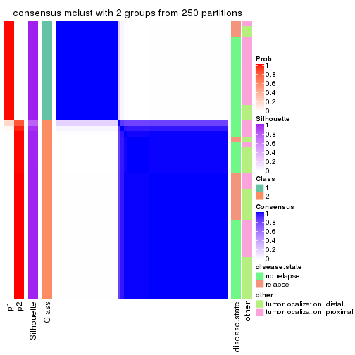
consensus_heatmap(res, k = 3)
consensus_heatmap(res, k = 4)
consensus_heatmap(res, k = 5)
consensus_heatmap(res, k = 6)
Heatmaps for the membership of samples in all partitions to see how consistent they are:
membership_heatmap(res, k = 2)
membership_heatmap(res, k = 3)
membership_heatmap(res, k = 4)
membership_heatmap(res, k = 5)
membership_heatmap(res, k = 6)
As soon as we have had the classes for columns, we can look for signatures which are significantly different between classes which can be candidate marks for certain classes. Following are the heatmaps for signatures.
Signature heatmaps where rows are scaled:
get_signatures(res, k = 2)
get_signatures(res, k = 3)
get_signatures(res, k = 4)
get_signatures(res, k = 5)
get_signatures(res, k = 6)
Signature heatmaps where rows are not scaled:
get_signatures(res, k = 2, scale_rows = FALSE)
get_signatures(res, k = 3, scale_rows = FALSE)
get_signatures(res, k = 4, scale_rows = FALSE)
get_signatures(res, k = 5, scale_rows = FALSE)
get_signatures(res, k = 6, scale_rows = FALSE)

Compare the overlap of signatures from different k:
compare_signatures(res)
get_signature() returns a data frame invisibly. TO get the list of signatures, the function
call should be assigned to a variable explicitly. In following code, if plot argument is set
to FALSE, no heatmap is plotted while only the differential analysis is performed.
# code only for demonstration
tb = get_signature(res, k = ..., plot = FALSE)
An example of the output of tb is:
#> which_row fdr mean_1 mean_2 scaled_mean_1 scaled_mean_2 km
#> 1 38 0.042760348 8.373488 9.131774 -0.5533452 0.5164555 1
#> 2 40 0.018707592 7.106213 8.469186 -0.6173731 0.5762149 1
#> 3 55 0.019134737 10.221463 11.207825 -0.6159697 0.5749050 1
#> 4 59 0.006059896 5.921854 7.869574 -0.6899429 0.6439467 1
#> 5 60 0.018055526 8.928898 10.211722 -0.6204761 0.5791110 1
#> 6 98 0.009384629 15.714769 14.887706 0.6635654 -0.6193277 2
...
The columns in tb are:
which_row: row indices corresponding to the input matrix.fdr: FDR for the differential test. mean_x: The mean value in group x.scaled_mean_x: The mean value in group x after rows are scaled.km: Row groups if k-means clustering is applied to rows.UMAP plot which shows how samples are separated.
dimension_reduction(res, k = 2, method = "UMAP")
dimension_reduction(res, k = 3, method = "UMAP")
dimension_reduction(res, k = 4, method = "UMAP")
dimension_reduction(res, k = 5, method = "UMAP")
dimension_reduction(res, k = 6, method = "UMAP")
Following heatmap shows how subgroups are split when increasing k:
collect_classes(res)
Test correlation between subgroups and known annotations. If the known annotation is numeric, one-way ANOVA test is applied, and if the known annotation is discrete, chi-squared contingency table test is applied.
test_to_known_factors(res)
#> n disease.state(p) other(p) k
#> MAD:mclust 53 0.4398 0.046968 2
#> MAD:mclust 45 0.2537 0.000882 3
#> MAD:mclust 37 0.5896 0.026094 4
#> MAD:mclust 30 0.0777 0.043441 5
#> MAD:mclust 34 0.1726 0.124630 6
If matrix rows can be associated to genes, consider to use functional_enrichment(res,
...) to perform function enrichment for the signature genes. See this vignette for more detailed explanations.
The object with results only for a single top-value method and a single partition method can be extracted as:
res = res_list["MAD", "NMF"]
# you can also extract it by
# res = res_list["MAD:NMF"]
A summary of res and all the functions that can be applied to it:
res
#> A 'ConsensusPartition' object with k = 2, 3, 4, 5, 6.
#> On a matrix with 51941 rows and 53 columns.
#> Top rows (1000, 2000, 3000, 4000, 5000) are extracted by 'MAD' method.
#> Subgroups are detected by 'NMF' method.
#> Performed in total 1250 partitions by row resampling.
#> Best k for subgroups seems to be 2.
#>
#> Following methods can be applied to this 'ConsensusPartition' object:
#> [1] "cola_report" "collect_classes" "collect_plots"
#> [4] "collect_stats" "colnames" "compare_signatures"
#> [7] "consensus_heatmap" "dimension_reduction" "functional_enrichment"
#> [10] "get_anno_col" "get_anno" "get_classes"
#> [13] "get_consensus" "get_matrix" "get_membership"
#> [16] "get_param" "get_signatures" "get_stats"
#> [19] "is_best_k" "is_stable_k" "membership_heatmap"
#> [22] "ncol" "nrow" "plot_ecdf"
#> [25] "rownames" "select_partition_number" "show"
#> [28] "suggest_best_k" "test_to_known_factors"
collect_plots() function collects all the plots made from res for all k (number of partitions)
into one single page to provide an easy and fast comparison between different k.
collect_plots(res)
The plots are:
k and the heatmap of
predicted classes for each k.k.k.k.All the plots in panels can be made by individual functions and they are plotted later in this section.
select_partition_number() produces several plots showing different
statistics for choosing “optimized” k. There are following statistics:
k;k, the area increased is defined as \(A_k - A_{k-1}\).The detailed explanations of these statistics can be found in the cola vignette.
Generally speaking, lower PAC score, higher mean silhouette score or higher
concordance corresponds to better partition. Rand index and Jaccard index
measure how similar the current partition is compared to partition with k-1.
If they are too similar, we won't accept k is better than k-1.
select_partition_number(res)
The numeric values for all these statistics can be obtained by get_stats().
get_stats(res)
#> k 1-PAC mean_silhouette concordance area_increased Rand Jaccard
#> 2 2 1.000 0.956 0.983 0.4833 0.521 0.521
#> 3 3 0.835 0.919 0.957 0.3425 0.816 0.656
#> 4 4 0.622 0.683 0.828 0.1333 0.824 0.560
#> 5 5 0.561 0.465 0.696 0.0767 0.926 0.733
#> 6 6 0.619 0.530 0.728 0.0424 0.856 0.463
suggest_best_k() suggests the best \(k\) based on these statistics. The rules are as follows:
suggest_best_k(res)
#> [1] 2
Following shows the table of the partitions (You need to click the show/hide
code output link to see it). The membership matrix (columns with name p*)
is inferred by
clue::cl_consensus()
function with the SE method. Basically the value in the membership matrix
represents the probability to belong to a certain group. The finall class
label for an item is determined with the group with highest probability it
belongs to.
In get_classes() function, the entropy is calculated from the membership
matrix and the silhouette score is calculated from the consensus matrix.
cbind(get_classes(res, k = 2), get_membership(res, k = 2))
#> class entropy silhouette p1 p2
#> GSM452149 2 0.000 0.977 0.000 1.000
#> GSM452150 2 0.000 0.977 0.000 1.000
#> GSM452152 2 0.000 0.977 0.000 1.000
#> GSM452154 2 0.000 0.977 0.000 1.000
#> GSM452160 2 0.000 0.977 0.000 1.000
#> GSM452167 2 0.000 0.977 0.000 1.000
#> GSM452182 1 0.000 0.989 1.000 0.000
#> GSM452185 2 0.000 0.977 0.000 1.000
#> GSM452186 2 0.722 0.744 0.200 0.800
#> GSM452187 2 0.000 0.977 0.000 1.000
#> GSM452189 1 0.000 0.989 1.000 0.000
#> GSM452195 2 0.000 0.977 0.000 1.000
#> GSM452196 2 0.000 0.977 0.000 1.000
#> GSM452197 1 0.000 0.989 1.000 0.000
#> GSM452198 2 0.000 0.977 0.000 1.000
#> GSM452199 2 0.000 0.977 0.000 1.000
#> GSM452148 1 0.000 0.989 1.000 0.000
#> GSM452151 2 0.278 0.932 0.048 0.952
#> GSM452153 1 0.000 0.989 1.000 0.000
#> GSM452155 2 0.000 0.977 0.000 1.000
#> GSM452156 2 0.000 0.977 0.000 1.000
#> GSM452157 1 0.000 0.989 1.000 0.000
#> GSM452158 2 0.995 0.145 0.460 0.540
#> GSM452162 1 0.671 0.780 0.824 0.176
#> GSM452163 1 0.000 0.989 1.000 0.000
#> GSM452166 2 0.000 0.977 0.000 1.000
#> GSM452168 1 0.000 0.989 1.000 0.000
#> GSM452169 1 0.000 0.989 1.000 0.000
#> GSM452170 2 0.000 0.977 0.000 1.000
#> GSM452172 2 0.000 0.977 0.000 1.000
#> GSM452173 1 0.000 0.989 1.000 0.000
#> GSM452174 1 0.000 0.989 1.000 0.000
#> GSM452176 2 0.000 0.977 0.000 1.000
#> GSM452179 1 0.000 0.989 1.000 0.000
#> GSM452180 1 0.000 0.989 1.000 0.000
#> GSM452181 2 0.000 0.977 0.000 1.000
#> GSM452183 1 0.000 0.989 1.000 0.000
#> GSM452184 1 0.163 0.967 0.976 0.024
#> GSM452188 1 0.000 0.989 1.000 0.000
#> GSM452193 2 0.000 0.977 0.000 1.000
#> GSM452165 2 0.000 0.977 0.000 1.000
#> GSM452171 2 0.000 0.977 0.000 1.000
#> GSM452175 1 0.000 0.989 1.000 0.000
#> GSM452177 2 0.000 0.977 0.000 1.000
#> GSM452190 1 0.000 0.989 1.000 0.000
#> GSM452191 2 0.000 0.977 0.000 1.000
#> GSM452192 2 0.000 0.977 0.000 1.000
#> GSM452194 2 0.000 0.977 0.000 1.000
#> GSM452200 2 0.000 0.977 0.000 1.000
#> GSM452159 1 0.000 0.989 1.000 0.000
#> GSM452161 2 0.000 0.977 0.000 1.000
#> GSM452164 2 0.000 0.977 0.000 1.000
#> GSM452178 2 0.000 0.977 0.000 1.000
cbind(get_classes(res, k = 3), get_membership(res, k = 3))
#> class entropy silhouette p1 p2 p3
#> GSM452149 3 0.1163 0.915 0.000 0.028 0.972
#> GSM452150 3 0.3816 0.844 0.000 0.148 0.852
#> GSM452152 3 0.0000 0.922 0.000 0.000 1.000
#> GSM452154 3 0.0592 0.919 0.000 0.012 0.988
#> GSM452160 3 0.3267 0.869 0.000 0.116 0.884
#> GSM452167 3 0.4346 0.808 0.000 0.184 0.816
#> GSM452182 1 0.0000 0.986 1.000 0.000 0.000
#> GSM452185 3 0.0000 0.922 0.000 0.000 1.000
#> GSM452186 2 0.0000 0.989 0.000 1.000 0.000
#> GSM452187 3 0.0000 0.922 0.000 0.000 1.000
#> GSM452189 1 0.0000 0.986 1.000 0.000 0.000
#> GSM452195 3 0.5178 0.718 0.000 0.256 0.744
#> GSM452196 2 0.0000 0.989 0.000 1.000 0.000
#> GSM452197 1 0.0000 0.986 1.000 0.000 0.000
#> GSM452198 3 0.0000 0.922 0.000 0.000 1.000
#> GSM452199 2 0.0000 0.989 0.000 1.000 0.000
#> GSM452148 2 0.0424 0.984 0.008 0.992 0.000
#> GSM452151 3 0.3686 0.803 0.140 0.000 0.860
#> GSM452153 1 0.0000 0.986 1.000 0.000 0.000
#> GSM452155 3 0.0000 0.922 0.000 0.000 1.000
#> GSM452156 3 0.0747 0.918 0.000 0.016 0.984
#> GSM452157 1 0.0000 0.986 1.000 0.000 0.000
#> GSM452158 2 0.0892 0.971 0.000 0.980 0.020
#> GSM452162 2 0.2703 0.932 0.056 0.928 0.016
#> GSM452163 1 0.0000 0.986 1.000 0.000 0.000
#> GSM452166 3 0.0000 0.922 0.000 0.000 1.000
#> GSM452168 1 0.0000 0.986 1.000 0.000 0.000
#> GSM452169 1 0.0000 0.986 1.000 0.000 0.000
#> GSM452170 3 0.0000 0.922 0.000 0.000 1.000
#> GSM452172 3 0.0237 0.920 0.004 0.000 0.996
#> GSM452173 1 0.0000 0.986 1.000 0.000 0.000
#> GSM452174 1 0.4605 0.740 0.796 0.204 0.000
#> GSM452176 3 0.0000 0.922 0.000 0.000 1.000
#> GSM452179 1 0.0000 0.986 1.000 0.000 0.000
#> GSM452180 1 0.0000 0.986 1.000 0.000 0.000
#> GSM452181 2 0.0000 0.989 0.000 1.000 0.000
#> GSM452183 1 0.0000 0.986 1.000 0.000 0.000
#> GSM452184 1 0.0424 0.979 0.992 0.000 0.008
#> GSM452188 1 0.0000 0.986 1.000 0.000 0.000
#> GSM452193 3 0.0000 0.922 0.000 0.000 1.000
#> GSM452165 2 0.0000 0.989 0.000 1.000 0.000
#> GSM452171 3 0.3551 0.858 0.000 0.132 0.868
#> GSM452175 1 0.0000 0.986 1.000 0.000 0.000
#> GSM452177 3 0.3412 0.864 0.000 0.124 0.876
#> GSM452190 2 0.0237 0.987 0.004 0.996 0.000
#> GSM452191 2 0.0000 0.989 0.000 1.000 0.000
#> GSM452192 3 0.0892 0.917 0.000 0.020 0.980
#> GSM452194 3 0.0000 0.922 0.000 0.000 1.000
#> GSM452200 3 0.0000 0.922 0.000 0.000 1.000
#> GSM452159 1 0.0000 0.986 1.000 0.000 0.000
#> GSM452161 3 0.6095 0.477 0.000 0.392 0.608
#> GSM452164 3 0.5988 0.472 0.000 0.368 0.632
#> GSM452178 3 0.0000 0.922 0.000 0.000 1.000
cbind(get_classes(res, k = 4), get_membership(res, k = 4))
#> class entropy silhouette p1 p2 p3 p4
#> GSM452149 3 0.2124 0.8671 0.000 0.068 0.924 0.008
#> GSM452150 3 0.3052 0.8225 0.000 0.136 0.860 0.004
#> GSM452152 4 0.5070 0.4002 0.000 0.008 0.372 0.620
#> GSM452154 3 0.0592 0.8772 0.000 0.016 0.984 0.000
#> GSM452160 3 0.4343 0.6695 0.000 0.264 0.732 0.004
#> GSM452167 3 0.3937 0.7422 0.000 0.188 0.800 0.012
#> GSM452182 1 0.4643 0.6171 0.656 0.000 0.000 0.344
#> GSM452185 3 0.1637 0.8598 0.000 0.000 0.940 0.060
#> GSM452186 2 0.2089 0.8026 0.012 0.940 0.020 0.028
#> GSM452187 3 0.0657 0.8758 0.000 0.004 0.984 0.012
#> GSM452189 1 0.4188 0.7097 0.752 0.004 0.000 0.244
#> GSM452195 3 0.4059 0.7093 0.000 0.200 0.788 0.012
#> GSM452196 2 0.1629 0.8042 0.000 0.952 0.024 0.024
#> GSM452197 1 0.4431 0.6117 0.696 0.000 0.000 0.304
#> GSM452198 3 0.0657 0.8763 0.000 0.004 0.984 0.012
#> GSM452199 2 0.2124 0.8002 0.000 0.932 0.028 0.040
#> GSM452148 2 0.0469 0.8034 0.000 0.988 0.000 0.012
#> GSM452151 4 0.3711 0.6500 0.024 0.000 0.140 0.836
#> GSM452153 4 0.3852 0.5581 0.192 0.000 0.008 0.800
#> GSM452155 3 0.5360 0.0941 0.000 0.012 0.552 0.436
#> GSM452156 2 0.7702 0.0922 0.000 0.416 0.224 0.360
#> GSM452157 1 0.4855 0.4451 0.600 0.000 0.000 0.400
#> GSM452158 2 0.9198 0.4375 0.188 0.464 0.200 0.148
#> GSM452162 2 0.4220 0.7181 0.056 0.828 0.004 0.112
#> GSM452163 1 0.0188 0.7890 0.996 0.000 0.000 0.004
#> GSM452166 3 0.1302 0.8618 0.000 0.000 0.956 0.044
#> GSM452168 4 0.4967 -0.2607 0.452 0.000 0.000 0.548
#> GSM452169 1 0.0469 0.7923 0.988 0.000 0.000 0.012
#> GSM452170 4 0.4730 0.4327 0.000 0.000 0.364 0.636
#> GSM452172 4 0.3498 0.6489 0.008 0.000 0.160 0.832
#> GSM452173 4 0.5298 0.4533 0.244 0.048 0.000 0.708
#> GSM452174 1 0.3217 0.6984 0.860 0.012 0.000 0.128
#> GSM452176 3 0.0336 0.8739 0.000 0.000 0.992 0.008
#> GSM452179 1 0.1637 0.7636 0.940 0.000 0.000 0.060
#> GSM452180 1 0.0592 0.7947 0.984 0.000 0.000 0.016
#> GSM452181 2 0.0188 0.8051 0.000 0.996 0.000 0.004
#> GSM452183 1 0.2973 0.7756 0.856 0.000 0.000 0.144
#> GSM452184 4 0.3448 0.5754 0.168 0.000 0.004 0.828
#> GSM452188 1 0.2814 0.7785 0.868 0.000 0.000 0.132
#> GSM452193 3 0.1488 0.8691 0.012 0.000 0.956 0.032
#> GSM452165 2 0.0336 0.8056 0.000 0.992 0.000 0.008
#> GSM452171 3 0.0895 0.8776 0.000 0.020 0.976 0.004
#> GSM452175 1 0.4761 0.5318 0.628 0.000 0.000 0.372
#> GSM452177 3 0.2530 0.8336 0.000 0.112 0.888 0.000
#> GSM452190 2 0.0657 0.8021 0.004 0.984 0.000 0.012
#> GSM452191 2 0.0524 0.8047 0.004 0.988 0.000 0.008
#> GSM452192 3 0.4562 0.7318 0.000 0.208 0.764 0.028
#> GSM452194 3 0.0188 0.8759 0.000 0.004 0.996 0.000
#> GSM452200 3 0.0000 0.8752 0.000 0.000 1.000 0.000
#> GSM452159 1 0.0592 0.7949 0.984 0.000 0.000 0.016
#> GSM452161 2 0.5376 0.3494 0.000 0.588 0.396 0.016
#> GSM452164 2 0.5791 0.5608 0.000 0.656 0.284 0.060
#> GSM452178 3 0.1807 0.8583 0.000 0.008 0.940 0.052
cbind(get_classes(res, k = 5), get_membership(res, k = 5))
#> class entropy silhouette p1 p2 p3 p4 p5
#> GSM452149 3 0.4516 0.5737 0.000 0.276 0.696 0.012 0.016
#> GSM452150 3 0.4223 0.6206 0.000 0.248 0.724 0.000 0.028
#> GSM452152 4 0.3482 0.4945 0.000 0.052 0.096 0.844 0.008
#> GSM452154 3 0.1792 0.7008 0.000 0.084 0.916 0.000 0.000
#> GSM452160 3 0.5053 0.5077 0.000 0.216 0.688 0.000 0.096
#> GSM452167 3 0.6414 0.5671 0.000 0.120 0.644 0.152 0.084
#> GSM452182 1 0.7477 0.4415 0.496 0.076 0.000 0.208 0.220
#> GSM452185 3 0.5796 0.5031 0.004 0.276 0.632 0.024 0.064
#> GSM452186 2 0.4271 0.5039 0.008 0.784 0.068 0.000 0.140
#> GSM452187 3 0.2361 0.6999 0.000 0.096 0.892 0.012 0.000
#> GSM452189 1 0.5216 0.6856 0.692 0.008 0.000 0.092 0.208
#> GSM452195 3 0.5630 0.1900 0.000 0.436 0.504 0.048 0.012
#> GSM452196 2 0.2149 0.5365 0.000 0.916 0.048 0.000 0.036
#> GSM452197 1 0.2848 0.7724 0.868 0.000 0.000 0.104 0.028
#> GSM452198 3 0.2429 0.6919 0.004 0.000 0.900 0.076 0.020
#> GSM452199 2 0.2270 0.5561 0.000 0.904 0.076 0.000 0.020
#> GSM452148 5 0.4302 0.3220 0.000 0.480 0.000 0.000 0.520
#> GSM452151 4 0.1659 0.5031 0.016 0.004 0.008 0.948 0.024
#> GSM452153 4 0.6124 0.1875 0.236 0.000 0.000 0.564 0.200
#> GSM452155 4 0.8087 0.1158 0.008 0.268 0.200 0.428 0.096
#> GSM452156 4 0.7004 0.1774 0.000 0.268 0.068 0.540 0.124
#> GSM452157 1 0.4676 0.6651 0.740 0.000 0.000 0.140 0.120
#> GSM452158 2 0.7317 0.3970 0.052 0.592 0.100 0.056 0.200
#> GSM452162 5 0.6850 0.1788 0.016 0.144 0.008 0.348 0.484
#> GSM452163 1 0.1357 0.7769 0.948 0.000 0.000 0.004 0.048
#> GSM452166 3 0.4570 0.4711 0.000 0.016 0.648 0.332 0.004
#> GSM452168 4 0.7355 -0.1563 0.320 0.028 0.000 0.388 0.264
#> GSM452169 1 0.0963 0.7829 0.964 0.000 0.000 0.000 0.036
#> GSM452170 4 0.3218 0.4950 0.000 0.020 0.108 0.856 0.016
#> GSM452172 4 0.3584 0.4880 0.012 0.000 0.020 0.820 0.148
#> GSM452173 5 0.7463 -0.3362 0.352 0.040 0.000 0.228 0.380
#> GSM452174 1 0.4595 0.6305 0.740 0.088 0.000 0.000 0.172
#> GSM452176 3 0.0992 0.7063 0.000 0.000 0.968 0.024 0.008
#> GSM452179 1 0.1732 0.7649 0.920 0.000 0.000 0.000 0.080
#> GSM452180 1 0.1205 0.7899 0.956 0.000 0.000 0.004 0.040
#> GSM452181 2 0.4064 0.1362 0.000 0.716 0.004 0.008 0.272
#> GSM452183 1 0.3452 0.7575 0.820 0.000 0.000 0.032 0.148
#> GSM452184 4 0.6166 0.1421 0.260 0.000 0.000 0.552 0.188
#> GSM452188 1 0.5482 0.6768 0.704 0.028 0.000 0.156 0.112
#> GSM452193 3 0.6091 0.3527 0.024 0.368 0.552 0.016 0.040
#> GSM452165 2 0.4648 -0.3993 0.000 0.524 0.012 0.000 0.464
#> GSM452171 3 0.4551 0.6534 0.000 0.096 0.780 0.104 0.020
#> GSM452175 1 0.5270 0.6359 0.672 0.000 0.000 0.208 0.120
#> GSM452177 3 0.1671 0.7049 0.000 0.076 0.924 0.000 0.000
#> GSM452190 5 0.4300 0.3092 0.000 0.476 0.000 0.000 0.524
#> GSM452191 5 0.4533 0.3308 0.000 0.448 0.008 0.000 0.544
#> GSM452192 3 0.7598 0.2418 0.000 0.188 0.488 0.092 0.232
#> GSM452194 3 0.1041 0.7107 0.000 0.032 0.964 0.004 0.000
#> GSM452200 3 0.0833 0.7078 0.000 0.004 0.976 0.016 0.004
#> GSM452159 1 0.0404 0.7866 0.988 0.000 0.000 0.000 0.012
#> GSM452161 2 0.6282 0.3536 0.000 0.608 0.228 0.136 0.028
#> GSM452164 4 0.7937 0.0143 0.000 0.244 0.088 0.400 0.268
#> GSM452178 3 0.5910 0.5362 0.000 0.128 0.624 0.236 0.012
cbind(get_classes(res, k = 6), get_membership(res, k = 6))
#> class entropy silhouette p1 p2 p3 p4 p5 p6
#> GSM452149 3 0.6247 0.43506 0.000 0.064 0.580 0.116 0.232 0.008
#> GSM452150 3 0.5658 0.47676 0.000 0.164 0.640 0.036 0.156 0.004
#> GSM452152 4 0.2554 0.64635 0.000 0.000 0.004 0.876 0.028 0.092
#> GSM452154 3 0.1910 0.65978 0.000 0.000 0.892 0.000 0.108 0.000
#> GSM452160 3 0.5319 0.19648 0.000 0.348 0.572 0.056 0.016 0.008
#> GSM452167 4 0.6469 0.20057 0.004 0.064 0.404 0.444 0.076 0.008
#> GSM452182 6 0.4214 0.64987 0.116 0.020 0.000 0.004 0.084 0.776
#> GSM452185 3 0.4930 0.49817 0.004 0.000 0.664 0.016 0.252 0.064
#> GSM452186 5 0.6620 0.51373 0.016 0.280 0.156 0.016 0.516 0.016
#> GSM452187 3 0.2972 0.64098 0.000 0.000 0.836 0.036 0.128 0.000
#> GSM452189 6 0.5736 0.20318 0.392 0.104 0.000 0.012 0.004 0.488
#> GSM452195 3 0.5215 0.00762 0.000 0.012 0.472 0.060 0.456 0.000
#> GSM452196 5 0.6485 0.43561 0.000 0.356 0.056 0.120 0.464 0.004
#> GSM452197 1 0.2766 0.80577 0.844 0.000 0.000 0.008 0.008 0.140
#> GSM452198 3 0.4166 0.55399 0.024 0.012 0.784 0.132 0.048 0.000
#> GSM452199 5 0.6190 0.60738 0.000 0.268 0.136 0.052 0.544 0.000
#> GSM452148 2 0.1644 0.66639 0.000 0.932 0.000 0.028 0.040 0.000
#> GSM452151 4 0.4275 0.45332 0.004 0.000 0.004 0.652 0.020 0.320
#> GSM452153 6 0.3211 0.65171 0.056 0.000 0.000 0.076 0.020 0.848
#> GSM452155 4 0.5018 0.35557 0.016 0.000 0.040 0.632 0.300 0.012
#> GSM452156 4 0.2999 0.59081 0.000 0.040 0.000 0.836 0.124 0.000
#> GSM452157 1 0.4482 0.56842 0.664 0.000 0.000 0.012 0.036 0.288
#> GSM452158 5 0.3834 0.54305 0.024 0.032 0.084 0.036 0.824 0.000
#> GSM452162 4 0.3926 0.55750 0.004 0.232 0.000 0.736 0.020 0.008
#> GSM452163 1 0.1053 0.82389 0.964 0.004 0.000 0.000 0.020 0.012
#> GSM452166 4 0.5421 0.37185 0.000 0.000 0.352 0.548 0.084 0.016
#> GSM452168 6 0.2622 0.67107 0.040 0.024 0.000 0.012 0.028 0.896
#> GSM452169 1 0.1713 0.83613 0.928 0.000 0.000 0.000 0.028 0.044
#> GSM452170 4 0.3107 0.64171 0.000 0.000 0.016 0.832 0.016 0.136
#> GSM452172 6 0.4709 -0.00258 0.000 0.000 0.000 0.412 0.048 0.540
#> GSM452173 6 0.5941 0.33939 0.152 0.376 0.000 0.012 0.000 0.460
#> GSM452174 1 0.3638 0.68750 0.816 0.020 0.000 0.008 0.124 0.032
#> GSM452176 3 0.1313 0.64115 0.000 0.000 0.952 0.028 0.016 0.004
#> GSM452179 1 0.1563 0.81932 0.932 0.000 0.000 0.000 0.056 0.012
#> GSM452180 1 0.2558 0.79361 0.840 0.004 0.000 0.000 0.000 0.156
#> GSM452181 2 0.5464 0.13152 0.000 0.588 0.004 0.176 0.232 0.000
#> GSM452183 1 0.3855 0.76706 0.788 0.048 0.000 0.000 0.020 0.144
#> GSM452184 6 0.2207 0.67232 0.060 0.020 0.000 0.008 0.004 0.908
#> GSM452188 6 0.3878 0.61128 0.212 0.008 0.000 0.000 0.032 0.748
#> GSM452193 3 0.4787 0.24353 0.000 0.000 0.520 0.020 0.440 0.020
#> GSM452165 2 0.2894 0.61294 0.000 0.860 0.020 0.012 0.104 0.004
#> GSM452171 3 0.5654 0.06371 0.000 0.060 0.544 0.348 0.048 0.000
#> GSM452175 6 0.3756 0.48485 0.316 0.000 0.000 0.004 0.004 0.676
#> GSM452177 3 0.2020 0.66166 0.000 0.000 0.896 0.008 0.096 0.000
#> GSM452190 2 0.2173 0.64404 0.000 0.904 0.000 0.004 0.064 0.028
#> GSM452191 2 0.1121 0.66247 0.000 0.964 0.004 0.008 0.008 0.016
#> GSM452192 2 0.6712 0.21735 0.000 0.460 0.300 0.192 0.040 0.008
#> GSM452194 3 0.1802 0.66463 0.000 0.000 0.916 0.012 0.072 0.000
#> GSM452200 3 0.0363 0.65132 0.000 0.000 0.988 0.012 0.000 0.000
#> GSM452159 1 0.1753 0.83506 0.912 0.000 0.000 0.000 0.004 0.084
#> GSM452161 5 0.6959 0.48201 0.000 0.160 0.104 0.288 0.448 0.000
#> GSM452164 4 0.3881 0.62018 0.000 0.116 0.016 0.808 0.040 0.020
#> GSM452178 4 0.4619 0.54183 0.000 0.012 0.224 0.704 0.052 0.008
Heatmaps for the consensus matrix. It visualizes the probability of two samples to be in a same group.
consensus_heatmap(res, k = 2)
consensus_heatmap(res, k = 3)
consensus_heatmap(res, k = 4)
consensus_heatmap(res, k = 5)
consensus_heatmap(res, k = 6)
Heatmaps for the membership of samples in all partitions to see how consistent they are:
membership_heatmap(res, k = 2)
membership_heatmap(res, k = 3)
membership_heatmap(res, k = 4)
membership_heatmap(res, k = 5)
membership_heatmap(res, k = 6)
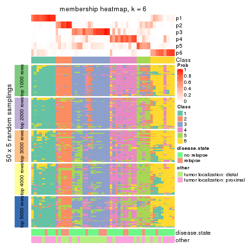
As soon as we have had the classes for columns, we can look for signatures which are significantly different between classes which can be candidate marks for certain classes. Following are the heatmaps for signatures.
Signature heatmaps where rows are scaled:
get_signatures(res, k = 2)

get_signatures(res, k = 3)
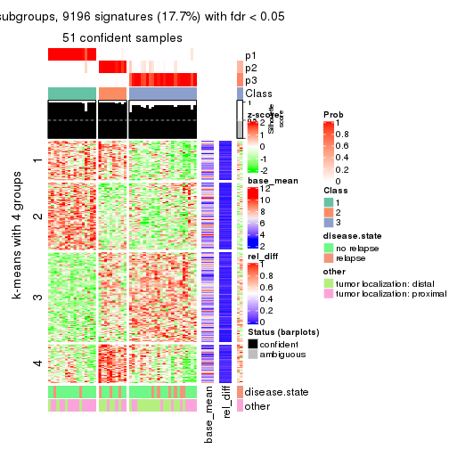
get_signatures(res, k = 4)
get_signatures(res, k = 5)

get_signatures(res, k = 6)
Signature heatmaps where rows are not scaled:
get_signatures(res, k = 2, scale_rows = FALSE)
get_signatures(res, k = 3, scale_rows = FALSE)
get_signatures(res, k = 4, scale_rows = FALSE)
get_signatures(res, k = 5, scale_rows = FALSE)
get_signatures(res, k = 6, scale_rows = FALSE)
Compare the overlap of signatures from different k:
compare_signatures(res)

get_signature() returns a data frame invisibly. TO get the list of signatures, the function
call should be assigned to a variable explicitly. In following code, if plot argument is set
to FALSE, no heatmap is plotted while only the differential analysis is performed.
# code only for demonstration
tb = get_signature(res, k = ..., plot = FALSE)
An example of the output of tb is:
#> which_row fdr mean_1 mean_2 scaled_mean_1 scaled_mean_2 km
#> 1 38 0.042760348 8.373488 9.131774 -0.5533452 0.5164555 1
#> 2 40 0.018707592 7.106213 8.469186 -0.6173731 0.5762149 1
#> 3 55 0.019134737 10.221463 11.207825 -0.6159697 0.5749050 1
#> 4 59 0.006059896 5.921854 7.869574 -0.6899429 0.6439467 1
#> 5 60 0.018055526 8.928898 10.211722 -0.6204761 0.5791110 1
#> 6 98 0.009384629 15.714769 14.887706 0.6635654 -0.6193277 2
...
The columns in tb are:
which_row: row indices corresponding to the input matrix.fdr: FDR for the differential test. mean_x: The mean value in group x.scaled_mean_x: The mean value in group x after rows are scaled.km: Row groups if k-means clustering is applied to rows.UMAP plot which shows how samples are separated.
dimension_reduction(res, k = 2, method = "UMAP")
dimension_reduction(res, k = 3, method = "UMAP")
dimension_reduction(res, k = 4, method = "UMAP")
dimension_reduction(res, k = 5, method = "UMAP")
dimension_reduction(res, k = 6, method = "UMAP")
Following heatmap shows how subgroups are split when increasing k:
collect_classes(res)
Test correlation between subgroups and known annotations. If the known annotation is numeric, one-way ANOVA test is applied, and if the known annotation is discrete, chi-squared contingency table test is applied.
test_to_known_factors(res)
#> n disease.state(p) other(p) k
#> MAD:NMF 52 0.3234 0.0189 2
#> MAD:NMF 51 0.4600 0.0360 3
#> MAD:NMF 44 0.3434 0.0116 4
#> MAD:NMF 30 0.4377 0.0037 5
#> MAD:NMF 34 0.0775 0.0144 6
If matrix rows can be associated to genes, consider to use functional_enrichment(res,
...) to perform function enrichment for the signature genes. See this vignette for more detailed explanations.
The object with results only for a single top-value method and a single partition method can be extracted as:
res = res_list["ATC", "hclust"]
# you can also extract it by
# res = res_list["ATC:hclust"]
A summary of res and all the functions that can be applied to it:
res
#> A 'ConsensusPartition' object with k = 2, 3, 4, 5, 6.
#> On a matrix with 51941 rows and 53 columns.
#> Top rows (1000, 2000, 3000, 4000, 5000) are extracted by 'ATC' method.
#> Subgroups are detected by 'hclust' method.
#> Performed in total 1250 partitions by row resampling.
#> Best k for subgroups seems to be 3.
#>
#> Following methods can be applied to this 'ConsensusPartition' object:
#> [1] "cola_report" "collect_classes" "collect_plots"
#> [4] "collect_stats" "colnames" "compare_signatures"
#> [7] "consensus_heatmap" "dimension_reduction" "functional_enrichment"
#> [10] "get_anno_col" "get_anno" "get_classes"
#> [13] "get_consensus" "get_matrix" "get_membership"
#> [16] "get_param" "get_signatures" "get_stats"
#> [19] "is_best_k" "is_stable_k" "membership_heatmap"
#> [22] "ncol" "nrow" "plot_ecdf"
#> [25] "rownames" "select_partition_number" "show"
#> [28] "suggest_best_k" "test_to_known_factors"
collect_plots() function collects all the plots made from res for all k (number of partitions)
into one single page to provide an easy and fast comparison between different k.
collect_plots(res)
The plots are:
k and the heatmap of
predicted classes for each k.k.k.k.All the plots in panels can be made by individual functions and they are plotted later in this section.
select_partition_number() produces several plots showing different
statistics for choosing “optimized” k. There are following statistics:
k;k, the area increased is defined as \(A_k - A_{k-1}\).The detailed explanations of these statistics can be found in the cola vignette.
Generally speaking, lower PAC score, higher mean silhouette score or higher
concordance corresponds to better partition. Rand index and Jaccard index
measure how similar the current partition is compared to partition with k-1.
If they are too similar, we won't accept k is better than k-1.
select_partition_number(res)
The numeric values for all these statistics can be obtained by get_stats().
get_stats(res)
#> k 1-PAC mean_silhouette concordance area_increased Rand Jaccard
#> 2 2 0.402 0.736 0.799 0.3110 0.665 0.665
#> 3 3 0.826 0.914 0.959 0.7060 0.822 0.733
#> 4 4 0.652 0.600 0.838 0.3317 0.819 0.627
#> 5 5 0.655 0.581 0.792 0.0308 0.983 0.943
#> 6 6 0.682 0.466 0.745 0.0428 0.841 0.539
suggest_best_k() suggests the best \(k\) based on these statistics. The rules are as follows:
suggest_best_k(res)
#> [1] 3
Following shows the table of the partitions (You need to click the show/hide
code output link to see it). The membership matrix (columns with name p*)
is inferred by
clue::cl_consensus()
function with the SE method. Basically the value in the membership matrix
represents the probability to belong to a certain group. The finall class
label for an item is determined with the group with highest probability it
belongs to.
In get_classes() function, the entropy is calculated from the membership
matrix and the silhouette score is calculated from the consensus matrix.
cbind(get_classes(res, k = 2), get_membership(res, k = 2))
#> class entropy silhouette p1 p2
#> GSM452149 2 0.0376 0.777 0.004 0.996
#> GSM452150 2 0.0376 0.777 0.004 0.996
#> GSM452152 2 0.9491 0.428 0.368 0.632
#> GSM452154 1 0.9996 1.000 0.512 0.488
#> GSM452160 2 0.0000 0.778 0.000 1.000
#> GSM452167 2 0.3114 0.715 0.056 0.944
#> GSM452182 2 0.4939 0.703 0.108 0.892
#> GSM452185 2 0.0000 0.778 0.000 1.000
#> GSM452186 2 0.4562 0.706 0.096 0.904
#> GSM452187 2 0.0000 0.778 0.000 1.000
#> GSM452189 2 0.0376 0.777 0.004 0.996
#> GSM452195 2 0.9996 0.334 0.488 0.512
#> GSM452196 2 0.9996 0.334 0.488 0.512
#> GSM452197 2 0.9996 0.334 0.488 0.512
#> GSM452198 2 0.0938 0.771 0.012 0.988
#> GSM452199 2 0.9996 0.334 0.488 0.512
#> GSM452148 1 0.9996 1.000 0.512 0.488
#> GSM452151 2 0.2603 0.734 0.044 0.956
#> GSM452153 2 0.0672 0.775 0.008 0.992
#> GSM452155 2 0.9996 0.334 0.488 0.512
#> GSM452156 2 0.9996 0.334 0.488 0.512
#> GSM452157 2 0.0672 0.775 0.008 0.992
#> GSM452158 2 0.0000 0.778 0.000 1.000
#> GSM452162 2 0.0000 0.778 0.000 1.000
#> GSM452163 1 0.9996 1.000 0.512 0.488
#> GSM452166 2 0.3114 0.715 0.056 0.944
#> GSM452168 2 0.2043 0.750 0.032 0.968
#> GSM452169 2 0.0672 0.775 0.008 0.992
#> GSM452170 1 0.9996 1.000 0.512 0.488
#> GSM452172 2 0.2603 0.734 0.044 0.956
#> GSM452173 2 0.6712 0.381 0.176 0.824
#> GSM452174 1 0.9996 1.000 0.512 0.488
#> GSM452176 1 0.9996 1.000 0.512 0.488
#> GSM452179 1 0.9996 1.000 0.512 0.488
#> GSM452180 1 0.9996 1.000 0.512 0.488
#> GSM452181 2 0.4562 0.706 0.096 0.904
#> GSM452183 2 0.0376 0.777 0.004 0.996
#> GSM452184 2 0.0376 0.777 0.004 0.996
#> GSM452188 2 0.1184 0.769 0.016 0.984
#> GSM452193 2 0.0000 0.778 0.000 1.000
#> GSM452165 2 0.3584 0.693 0.068 0.932
#> GSM452171 1 0.9996 1.000 0.512 0.488
#> GSM452175 2 0.6712 0.381 0.176 0.824
#> GSM452177 1 0.9996 1.000 0.512 0.488
#> GSM452190 2 0.0672 0.774 0.008 0.992
#> GSM452191 2 0.0000 0.778 0.000 1.000
#> GSM452192 2 0.0938 0.771 0.012 0.988
#> GSM452194 2 0.0000 0.778 0.000 1.000
#> GSM452200 2 0.7745 0.562 0.228 0.772
#> GSM452159 2 0.0672 0.775 0.008 0.992
#> GSM452161 2 0.0000 0.778 0.000 1.000
#> GSM452164 2 0.4562 0.706 0.096 0.904
#> GSM452178 1 0.9996 1.000 0.512 0.488
cbind(get_classes(res, k = 3), get_membership(res, k = 3))
#> class entropy silhouette p1 p2 p3
#> GSM452149 1 0.0424 0.947 0.992 0.008 0.000
#> GSM452150 1 0.0592 0.946 0.988 0.012 0.000
#> GSM452152 2 0.6008 0.383 0.372 0.628 0.000
#> GSM452154 3 0.0000 1.000 0.000 0.000 1.000
#> GSM452160 1 0.0237 0.948 0.996 0.004 0.000
#> GSM452167 1 0.2152 0.927 0.948 0.016 0.036
#> GSM452182 1 0.3340 0.858 0.880 0.120 0.000
#> GSM452185 1 0.0237 0.948 0.996 0.004 0.000
#> GSM452186 1 0.3192 0.865 0.888 0.112 0.000
#> GSM452187 1 0.0237 0.948 0.996 0.004 0.000
#> GSM452189 1 0.0000 0.949 1.000 0.000 0.000
#> GSM452195 2 0.0747 0.905 0.016 0.984 0.000
#> GSM452196 2 0.0892 0.907 0.020 0.980 0.000
#> GSM452197 2 0.0892 0.907 0.020 0.980 0.000
#> GSM452198 1 0.0747 0.946 0.984 0.016 0.000
#> GSM452199 2 0.0747 0.905 0.016 0.984 0.000
#> GSM452148 3 0.0000 1.000 0.000 0.000 1.000
#> GSM452151 1 0.1774 0.934 0.960 0.016 0.024
#> GSM452153 1 0.0237 0.948 0.996 0.004 0.000
#> GSM452155 2 0.1031 0.906 0.024 0.976 0.000
#> GSM452156 2 0.1031 0.906 0.024 0.976 0.000
#> GSM452157 1 0.0237 0.948 0.996 0.004 0.000
#> GSM452158 1 0.0424 0.948 0.992 0.008 0.000
#> GSM452162 1 0.0237 0.948 0.996 0.004 0.000
#> GSM452163 3 0.0000 1.000 0.000 0.000 1.000
#> GSM452166 1 0.2152 0.926 0.948 0.016 0.036
#> GSM452168 1 0.1337 0.940 0.972 0.016 0.012
#> GSM452169 1 0.0237 0.948 0.996 0.004 0.000
#> GSM452170 3 0.0000 1.000 0.000 0.000 1.000
#> GSM452172 1 0.1774 0.934 0.960 0.016 0.024
#> GSM452173 1 0.4663 0.801 0.828 0.016 0.156
#> GSM452174 3 0.0000 1.000 0.000 0.000 1.000
#> GSM452176 3 0.0000 1.000 0.000 0.000 1.000
#> GSM452179 3 0.0000 1.000 0.000 0.000 1.000
#> GSM452180 3 0.0000 1.000 0.000 0.000 1.000
#> GSM452181 1 0.3192 0.865 0.888 0.112 0.000
#> GSM452183 1 0.0000 0.949 1.000 0.000 0.000
#> GSM452184 1 0.0000 0.949 1.000 0.000 0.000
#> GSM452188 1 0.0592 0.946 0.988 0.012 0.000
#> GSM452193 1 0.0237 0.948 0.996 0.004 0.000
#> GSM452165 1 0.2492 0.917 0.936 0.016 0.048
#> GSM452171 3 0.0000 1.000 0.000 0.000 1.000
#> GSM452175 1 0.4663 0.801 0.828 0.016 0.156
#> GSM452177 3 0.0000 1.000 0.000 0.000 1.000
#> GSM452190 1 0.0592 0.948 0.988 0.012 0.000
#> GSM452191 1 0.0237 0.948 0.996 0.004 0.000
#> GSM452192 1 0.0747 0.946 0.984 0.016 0.000
#> GSM452194 1 0.0237 0.948 0.996 0.004 0.000
#> GSM452200 1 0.6267 0.144 0.548 0.452 0.000
#> GSM452159 1 0.0237 0.948 0.996 0.004 0.000
#> GSM452161 1 0.0424 0.948 0.992 0.008 0.000
#> GSM452164 1 0.3192 0.865 0.888 0.112 0.000
#> GSM452178 3 0.0000 1.000 0.000 0.000 1.000
cbind(get_classes(res, k = 4), get_membership(res, k = 4))
#> class entropy silhouette p1 p2 p3 p4
#> GSM452149 3 0.0188 0.65705 0.000 0.004 0.996 0.000
#> GSM452150 3 0.0336 0.65582 0.000 0.008 0.992 0.000
#> GSM452152 2 0.6100 0.36316 0.000 0.624 0.304 0.072
#> GSM452154 1 0.0707 0.98725 0.980 0.000 0.000 0.020
#> GSM452160 3 0.0188 0.65719 0.000 0.000 0.996 0.004
#> GSM452167 4 0.5472 0.19291 0.016 0.000 0.440 0.544
#> GSM452182 4 0.6998 -0.00629 0.000 0.116 0.416 0.468
#> GSM452185 3 0.0469 0.65459 0.000 0.000 0.988 0.012
#> GSM452186 3 0.2469 0.59559 0.000 0.108 0.892 0.000
#> GSM452187 3 0.0000 0.65758 0.000 0.000 1.000 0.000
#> GSM452189 3 0.4977 0.09642 0.000 0.000 0.540 0.460
#> GSM452195 2 0.0000 0.90804 0.000 1.000 0.000 0.000
#> GSM452196 2 0.0592 0.91244 0.000 0.984 0.016 0.000
#> GSM452197 2 0.0592 0.91244 0.000 0.984 0.016 0.000
#> GSM452198 3 0.4522 0.30560 0.000 0.000 0.680 0.320
#> GSM452199 2 0.0000 0.90804 0.000 1.000 0.000 0.000
#> GSM452148 1 0.0469 0.99281 0.988 0.000 0.000 0.012
#> GSM452151 4 0.2610 0.69693 0.012 0.000 0.088 0.900
#> GSM452153 3 0.4992 0.06635 0.000 0.000 0.524 0.476
#> GSM452155 2 0.0469 0.91363 0.000 0.988 0.012 0.000
#> GSM452156 2 0.0469 0.91363 0.000 0.988 0.012 0.000
#> GSM452157 3 0.4989 0.07196 0.000 0.000 0.528 0.472
#> GSM452158 3 0.0657 0.65474 0.000 0.004 0.984 0.012
#> GSM452162 3 0.4761 0.24928 0.000 0.000 0.628 0.372
#> GSM452163 1 0.0000 0.99478 1.000 0.000 0.000 0.000
#> GSM452166 4 0.2949 0.69780 0.024 0.000 0.088 0.888
#> GSM452168 4 0.2973 0.65512 0.000 0.000 0.144 0.856
#> GSM452169 3 0.4989 0.07196 0.000 0.000 0.528 0.472
#> GSM452170 1 0.0000 0.99478 1.000 0.000 0.000 0.000
#> GSM452172 4 0.2610 0.69693 0.012 0.000 0.088 0.900
#> GSM452173 4 0.4428 0.66216 0.124 0.000 0.068 0.808
#> GSM452174 1 0.0336 0.99378 0.992 0.000 0.000 0.008
#> GSM452176 1 0.0000 0.99478 1.000 0.000 0.000 0.000
#> GSM452179 1 0.0469 0.99281 0.988 0.000 0.000 0.012
#> GSM452180 1 0.0469 0.99281 0.988 0.000 0.000 0.012
#> GSM452181 3 0.2469 0.59559 0.000 0.108 0.892 0.000
#> GSM452183 3 0.4977 0.09642 0.000 0.000 0.540 0.460
#> GSM452184 3 0.4977 0.09642 0.000 0.000 0.540 0.460
#> GSM452188 4 0.4967 0.03219 0.000 0.000 0.452 0.548
#> GSM452193 3 0.0000 0.65758 0.000 0.000 1.000 0.000
#> GSM452165 4 0.5078 0.51927 0.028 0.000 0.272 0.700
#> GSM452171 1 0.0000 0.99478 1.000 0.000 0.000 0.000
#> GSM452175 4 0.4428 0.66216 0.124 0.000 0.068 0.808
#> GSM452177 1 0.0000 0.99478 1.000 0.000 0.000 0.000
#> GSM452190 3 0.2469 0.57664 0.000 0.000 0.892 0.108
#> GSM452191 3 0.0000 0.65758 0.000 0.000 1.000 0.000
#> GSM452192 3 0.4522 0.30560 0.000 0.000 0.680 0.320
#> GSM452194 3 0.0188 0.65719 0.000 0.000 0.996 0.004
#> GSM452200 3 0.6445 -0.13940 0.000 0.444 0.488 0.068
#> GSM452159 3 0.4994 0.05713 0.000 0.000 0.520 0.480
#> GSM452161 3 0.0376 0.65698 0.000 0.004 0.992 0.004
#> GSM452164 3 0.2469 0.59559 0.000 0.108 0.892 0.000
#> GSM452178 1 0.0000 0.99478 1.000 0.000 0.000 0.000
cbind(get_classes(res, k = 5), get_membership(res, k = 5))
#> class entropy silhouette p1 p2 p3 p4 p5
#> GSM452149 3 0.0162 0.682 0.000 0.004 0.996 0.000 0.000
#> GSM452150 3 0.0566 0.678 0.000 0.012 0.984 0.000 0.004
#> GSM452152 2 0.5543 0.257 0.000 0.628 0.296 0.056 0.020
#> GSM452154 1 0.1403 0.950 0.952 0.000 0.000 0.024 0.024
#> GSM452160 3 0.0162 0.683 0.000 0.000 0.996 0.004 0.000
#> GSM452167 4 0.4675 0.076 0.000 0.000 0.380 0.600 0.020
#> GSM452182 4 0.6933 -0.162 0.000 0.116 0.412 0.428 0.044
#> GSM452185 3 0.0404 0.681 0.000 0.000 0.988 0.012 0.000
#> GSM452186 3 0.2338 0.594 0.000 0.112 0.884 0.000 0.004
#> GSM452187 3 0.0000 0.683 0.000 0.000 1.000 0.000 0.000
#> GSM452189 3 0.5137 0.248 0.000 0.000 0.536 0.424 0.040
#> GSM452195 2 0.0290 0.806 0.000 0.992 0.000 0.000 0.008
#> GSM452196 2 0.3196 0.723 0.000 0.804 0.004 0.000 0.192
#> GSM452197 2 0.3196 0.723 0.000 0.804 0.004 0.000 0.192
#> GSM452198 3 0.4854 0.247 0.000 0.000 0.680 0.260 0.060
#> GSM452199 2 0.0290 0.806 0.000 0.992 0.000 0.000 0.008
#> GSM452148 1 0.1701 0.947 0.936 0.000 0.000 0.016 0.048
#> GSM452151 4 0.1082 0.627 0.008 0.000 0.028 0.964 0.000
#> GSM452153 3 0.5216 0.227 0.000 0.000 0.520 0.436 0.044
#> GSM452155 2 0.0324 0.809 0.000 0.992 0.004 0.000 0.004
#> GSM452156 2 0.0324 0.809 0.000 0.992 0.004 0.000 0.004
#> GSM452157 3 0.5211 0.231 0.000 0.000 0.524 0.432 0.044
#> GSM452158 3 0.0727 0.682 0.000 0.004 0.980 0.012 0.004
#> GSM452162 3 0.4238 0.358 0.000 0.000 0.628 0.368 0.004
#> GSM452163 1 0.1544 0.921 0.932 0.000 0.000 0.000 0.068
#> GSM452166 4 0.1483 0.625 0.008 0.000 0.028 0.952 0.012
#> GSM452168 4 0.3355 0.567 0.000 0.000 0.132 0.832 0.036
#> GSM452169 3 0.5211 0.231 0.000 0.000 0.524 0.432 0.044
#> GSM452170 1 0.0000 0.961 1.000 0.000 0.000 0.000 0.000
#> GSM452172 4 0.1082 0.627 0.008 0.000 0.028 0.964 0.000
#> GSM452173 4 0.3073 0.553 0.068 0.000 0.008 0.872 0.052
#> GSM452174 1 0.1251 0.956 0.956 0.000 0.000 0.008 0.036
#> GSM452176 1 0.1544 0.921 0.932 0.000 0.000 0.000 0.068
#> GSM452179 1 0.1364 0.955 0.952 0.000 0.000 0.012 0.036
#> GSM452180 1 0.1364 0.955 0.952 0.000 0.000 0.012 0.036
#> GSM452181 3 0.2338 0.594 0.000 0.112 0.884 0.000 0.004
#> GSM452183 3 0.5137 0.248 0.000 0.000 0.536 0.424 0.040
#> GSM452184 3 0.5071 0.248 0.000 0.000 0.540 0.424 0.036
#> GSM452188 4 0.5100 -0.142 0.000 0.000 0.448 0.516 0.036
#> GSM452193 3 0.0000 0.683 0.000 0.000 1.000 0.000 0.000
#> GSM452165 4 0.3972 0.408 0.008 0.000 0.212 0.764 0.016
#> GSM452171 1 0.0000 0.961 1.000 0.000 0.000 0.000 0.000
#> GSM452175 4 0.3073 0.553 0.068 0.000 0.008 0.872 0.052
#> GSM452177 1 0.0000 0.961 1.000 0.000 0.000 0.000 0.000
#> GSM452190 3 0.2304 0.601 0.000 0.000 0.892 0.100 0.008
#> GSM452191 3 0.0000 0.683 0.000 0.000 1.000 0.000 0.000
#> GSM452192 3 0.4854 0.247 0.000 0.000 0.680 0.260 0.060
#> GSM452194 3 0.0162 0.683 0.000 0.000 0.996 0.004 0.000
#> GSM452200 5 0.3053 0.000 0.000 0.008 0.164 0.000 0.828
#> GSM452159 3 0.5165 0.206 0.000 0.000 0.512 0.448 0.040
#> GSM452161 3 0.0486 0.683 0.000 0.004 0.988 0.004 0.004
#> GSM452164 3 0.2338 0.594 0.000 0.112 0.884 0.000 0.004
#> GSM452178 1 0.0000 0.961 1.000 0.000 0.000 0.000 0.000
cbind(get_classes(res, k = 6), get_membership(res, k = 6))
#> class entropy silhouette p1 p2 p3 p4 p5 p6
#> GSM452149 1 0.3991 0.3949 0.524 0.472 0.000 0.000 0.004 0.000
#> GSM452150 1 0.4177 0.3832 0.520 0.468 0.000 0.000 0.012 0.000
#> GSM452152 5 0.3684 0.3223 0.372 0.000 0.000 0.000 0.628 0.000
#> GSM452154 3 0.1225 0.9279 0.000 0.012 0.952 0.036 0.000 0.000
#> GSM452160 1 0.3866 0.3926 0.516 0.484 0.000 0.000 0.000 0.000
#> GSM452167 2 0.2003 0.0223 0.000 0.884 0.000 0.116 0.000 0.000
#> GSM452182 1 0.2003 0.4476 0.884 0.000 0.000 0.000 0.116 0.000
#> GSM452185 1 0.4097 0.3772 0.504 0.488 0.000 0.008 0.000 0.000
#> GSM452186 2 0.5385 -0.2699 0.420 0.468 0.000 0.000 0.112 0.000
#> GSM452187 1 0.3860 0.3986 0.528 0.472 0.000 0.000 0.000 0.000
#> GSM452189 1 0.0405 0.5483 0.988 0.008 0.000 0.004 0.000 0.000
#> GSM452195 5 0.1010 0.7750 0.000 0.000 0.000 0.036 0.960 0.004
#> GSM452196 5 0.3052 0.6890 0.004 0.000 0.000 0.000 0.780 0.216
#> GSM452197 5 0.3052 0.6890 0.004 0.000 0.000 0.000 0.780 0.216
#> GSM452198 2 0.4727 0.2616 0.012 0.552 0.000 0.408 0.000 0.028
#> GSM452199 5 0.1010 0.7750 0.000 0.000 0.000 0.036 0.960 0.004
#> GSM452148 3 0.1444 0.9236 0.000 0.000 0.928 0.072 0.000 0.000
#> GSM452151 4 0.5953 0.9902 0.216 0.268 0.008 0.508 0.000 0.000
#> GSM452153 1 0.0291 0.5453 0.992 0.004 0.000 0.004 0.000 0.000
#> GSM452155 5 0.0260 0.7861 0.008 0.000 0.000 0.000 0.992 0.000
#> GSM452156 5 0.0260 0.7861 0.008 0.000 0.000 0.000 0.992 0.000
#> GSM452157 1 0.0146 0.5460 0.996 0.000 0.000 0.004 0.000 0.000
#> GSM452158 1 0.4220 0.3943 0.520 0.468 0.000 0.008 0.004 0.000
#> GSM452162 1 0.2003 0.5290 0.884 0.116 0.000 0.000 0.000 0.000
#> GSM452163 3 0.2527 0.8197 0.000 0.000 0.832 0.168 0.000 0.000
#> GSM452166 4 0.5928 0.9803 0.208 0.272 0.008 0.512 0.000 0.000
#> GSM452168 1 0.5374 -0.4110 0.588 0.200 0.000 0.212 0.000 0.000
#> GSM452169 1 0.0146 0.5460 0.996 0.000 0.000 0.004 0.000 0.000
#> GSM452170 3 0.0000 0.9376 0.000 0.000 1.000 0.000 0.000 0.000
#> GSM452172 4 0.5953 0.9902 0.216 0.268 0.008 0.508 0.000 0.000
#> GSM452173 2 0.6394 -0.6403 0.104 0.448 0.068 0.380 0.000 0.000
#> GSM452174 3 0.1141 0.9328 0.000 0.000 0.948 0.052 0.000 0.000
#> GSM452176 3 0.2527 0.8197 0.000 0.000 0.832 0.168 0.000 0.000
#> GSM452179 3 0.1204 0.9318 0.000 0.000 0.944 0.056 0.000 0.000
#> GSM452180 3 0.1204 0.9318 0.000 0.000 0.944 0.056 0.000 0.000
#> GSM452181 2 0.5385 -0.2699 0.420 0.468 0.000 0.000 0.112 0.000
#> GSM452183 1 0.0260 0.5486 0.992 0.008 0.000 0.000 0.000 0.000
#> GSM452184 1 0.0547 0.5469 0.980 0.020 0.000 0.000 0.000 0.000
#> GSM452188 1 0.2581 0.4240 0.856 0.016 0.000 0.128 0.000 0.000
#> GSM452193 1 0.3860 0.3986 0.528 0.472 0.000 0.000 0.000 0.000
#> GSM452165 2 0.3615 -0.3526 0.000 0.700 0.008 0.292 0.000 0.000
#> GSM452171 3 0.0000 0.9376 0.000 0.000 1.000 0.000 0.000 0.000
#> GSM452175 2 0.6394 -0.6403 0.104 0.448 0.068 0.380 0.000 0.000
#> GSM452177 3 0.0000 0.9376 0.000 0.000 1.000 0.000 0.000 0.000
#> GSM452190 2 0.5855 0.0287 0.240 0.484 0.000 0.276 0.000 0.000
#> GSM452191 1 0.3862 0.3965 0.524 0.476 0.000 0.000 0.000 0.000
#> GSM452192 2 0.4727 0.2616 0.012 0.552 0.000 0.408 0.000 0.028
#> GSM452194 1 0.3866 0.3926 0.516 0.484 0.000 0.000 0.000 0.000
#> GSM452200 6 0.0692 0.0000 0.000 0.000 0.000 0.020 0.004 0.976
#> GSM452159 1 0.0717 0.5387 0.976 0.008 0.000 0.016 0.000 0.000
#> GSM452161 1 0.4117 0.3982 0.528 0.464 0.000 0.004 0.004 0.000
#> GSM452164 2 0.5385 -0.2699 0.420 0.468 0.000 0.000 0.112 0.000
#> GSM452178 3 0.0000 0.9376 0.000 0.000 1.000 0.000 0.000 0.000
Heatmaps for the consensus matrix. It visualizes the probability of two samples to be in a same group.
consensus_heatmap(res, k = 2)
consensus_heatmap(res, k = 3)
consensus_heatmap(res, k = 4)
consensus_heatmap(res, k = 5)
consensus_heatmap(res, k = 6)
Heatmaps for the membership of samples in all partitions to see how consistent they are:
membership_heatmap(res, k = 2)

membership_heatmap(res, k = 3)
membership_heatmap(res, k = 4)
membership_heatmap(res, k = 5)
membership_heatmap(res, k = 6)
As soon as we have had the classes for columns, we can look for signatures which are significantly different between classes which can be candidate marks for certain classes. Following are the heatmaps for signatures.
Signature heatmaps where rows are scaled:
get_signatures(res, k = 2)
get_signatures(res, k = 3)
get_signatures(res, k = 4)
get_signatures(res, k = 5)
get_signatures(res, k = 6)
Signature heatmaps where rows are not scaled:
get_signatures(res, k = 2, scale_rows = FALSE)
get_signatures(res, k = 3, scale_rows = FALSE)
get_signatures(res, k = 4, scale_rows = FALSE)
get_signatures(res, k = 5, scale_rows = FALSE)
get_signatures(res, k = 6, scale_rows = FALSE)
Compare the overlap of signatures from different k:
compare_signatures(res)
get_signature() returns a data frame invisibly. TO get the list of signatures, the function
call should be assigned to a variable explicitly. In following code, if plot argument is set
to FALSE, no heatmap is plotted while only the differential analysis is performed.
# code only for demonstration
tb = get_signature(res, k = ..., plot = FALSE)
An example of the output of tb is:
#> which_row fdr mean_1 mean_2 scaled_mean_1 scaled_mean_2 km
#> 1 38 0.042760348 8.373488 9.131774 -0.5533452 0.5164555 1
#> 2 40 0.018707592 7.106213 8.469186 -0.6173731 0.5762149 1
#> 3 55 0.019134737 10.221463 11.207825 -0.6159697 0.5749050 1
#> 4 59 0.006059896 5.921854 7.869574 -0.6899429 0.6439467 1
#> 5 60 0.018055526 8.928898 10.211722 -0.6204761 0.5791110 1
#> 6 98 0.009384629 15.714769 14.887706 0.6635654 -0.6193277 2
...
The columns in tb are:
which_row: row indices corresponding to the input matrix.fdr: FDR for the differential test. mean_x: The mean value in group x.scaled_mean_x: The mean value in group x after rows are scaled.km: Row groups if k-means clustering is applied to rows.UMAP plot which shows how samples are separated.
dimension_reduction(res, k = 2, method = "UMAP")
dimension_reduction(res, k = 3, method = "UMAP")
dimension_reduction(res, k = 4, method = "UMAP")
dimension_reduction(res, k = 5, method = "UMAP")
dimension_reduction(res, k = 6, method = "UMAP")
Following heatmap shows how subgroups are split when increasing k:
collect_classes(res)
Test correlation between subgroups and known annotations. If the known annotation is numeric, one-way ANOVA test is applied, and if the known annotation is discrete, chi-squared contingency table test is applied.
test_to_known_factors(res)
#> n disease.state(p) other(p) k
#> ATC:hclust 44 1.000 0.3796 2
#> ATC:hclust 51 0.351 0.2737 3
#> ATC:hclust 38 0.423 0.1526 4
#> ATC:hclust 37 0.368 0.0878 5
#> ATC:hclust 28 0.386 0.0901 6
If matrix rows can be associated to genes, consider to use functional_enrichment(res,
...) to perform function enrichment for the signature genes. See this vignette for more detailed explanations.
The object with results only for a single top-value method and a single partition method can be extracted as:
res = res_list["ATC", "kmeans"]
# you can also extract it by
# res = res_list["ATC:kmeans"]
A summary of res and all the functions that can be applied to it:
res
#> A 'ConsensusPartition' object with k = 2, 3, 4, 5, 6.
#> On a matrix with 51941 rows and 53 columns.
#> Top rows (1000, 2000, 3000, 4000, 5000) are extracted by 'ATC' method.
#> Subgroups are detected by 'kmeans' method.
#> Performed in total 1250 partitions by row resampling.
#> Best k for subgroups seems to be 2.
#>
#> Following methods can be applied to this 'ConsensusPartition' object:
#> [1] "cola_report" "collect_classes" "collect_plots"
#> [4] "collect_stats" "colnames" "compare_signatures"
#> [7] "consensus_heatmap" "dimension_reduction" "functional_enrichment"
#> [10] "get_anno_col" "get_anno" "get_classes"
#> [13] "get_consensus" "get_matrix" "get_membership"
#> [16] "get_param" "get_signatures" "get_stats"
#> [19] "is_best_k" "is_stable_k" "membership_heatmap"
#> [22] "ncol" "nrow" "plot_ecdf"
#> [25] "rownames" "select_partition_number" "show"
#> [28] "suggest_best_k" "test_to_known_factors"
collect_plots() function collects all the plots made from res for all k (number of partitions)
into one single page to provide an easy and fast comparison between different k.
collect_plots(res)
The plots are:
k and the heatmap of
predicted classes for each k.k.k.k.All the plots in panels can be made by individual functions and they are plotted later in this section.
select_partition_number() produces several plots showing different
statistics for choosing “optimized” k. There are following statistics:
k;k, the area increased is defined as \(A_k - A_{k-1}\).The detailed explanations of these statistics can be found in the cola vignette.
Generally speaking, lower PAC score, higher mean silhouette score or higher
concordance corresponds to better partition. Rand index and Jaccard index
measure how similar the current partition is compared to partition with k-1.
If they are too similar, we won't accept k is better than k-1.
select_partition_number(res)
The numeric values for all these statistics can be obtained by get_stats().
get_stats(res)
#> k 1-PAC mean_silhouette concordance area_increased Rand Jaccard
#> 2 2 1.000 0.993 0.997 0.4424 0.556 0.556
#> 3 3 0.574 0.828 0.823 0.4360 0.734 0.550
#> 4 4 0.624 0.591 0.772 0.1242 0.806 0.553
#> 5 5 0.619 0.532 0.730 0.0753 0.822 0.516
#> 6 6 0.658 0.544 0.709 0.0464 0.961 0.844
suggest_best_k() suggests the best \(k\) based on these statistics. The rules are as follows:
suggest_best_k(res)
#> [1] 2
Following shows the table of the partitions (You need to click the show/hide
code output link to see it). The membership matrix (columns with name p*)
is inferred by
clue::cl_consensus()
function with the SE method. Basically the value in the membership matrix
represents the probability to belong to a certain group. The finall class
label for an item is determined with the group with highest probability it
belongs to.
In get_classes() function, the entropy is calculated from the membership
matrix and the silhouette score is calculated from the consensus matrix.
cbind(get_classes(res, k = 2), get_membership(res, k = 2))
#> class entropy silhouette p1 p2
#> GSM452149 2 0.000 1.00 0.00 1.00
#> GSM452150 2 0.000 1.00 0.00 1.00
#> GSM452152 2 0.000 1.00 0.00 1.00
#> GSM452154 1 0.000 0.99 1.00 0.00
#> GSM452160 2 0.000 1.00 0.00 1.00
#> GSM452167 1 0.000 0.99 1.00 0.00
#> GSM452182 2 0.000 1.00 0.00 1.00
#> GSM452185 2 0.000 1.00 0.00 1.00
#> GSM452186 2 0.000 1.00 0.00 1.00
#> GSM452187 2 0.000 1.00 0.00 1.00
#> GSM452189 2 0.000 1.00 0.00 1.00
#> GSM452195 2 0.000 1.00 0.00 1.00
#> GSM452196 2 0.000 1.00 0.00 1.00
#> GSM452197 2 0.000 1.00 0.00 1.00
#> GSM452198 2 0.000 1.00 0.00 1.00
#> GSM452199 2 0.000 1.00 0.00 1.00
#> GSM452148 1 0.000 0.99 1.00 0.00
#> GSM452151 2 0.000 1.00 0.00 1.00
#> GSM452153 2 0.000 1.00 0.00 1.00
#> GSM452155 2 0.000 1.00 0.00 1.00
#> GSM452156 2 0.000 1.00 0.00 1.00
#> GSM452157 2 0.000 1.00 0.00 1.00
#> GSM452158 2 0.000 1.00 0.00 1.00
#> GSM452162 2 0.000 1.00 0.00 1.00
#> GSM452163 1 0.000 0.99 1.00 0.00
#> GSM452166 1 0.000 0.99 1.00 0.00
#> GSM452168 2 0.000 1.00 0.00 1.00
#> GSM452169 2 0.000 1.00 0.00 1.00
#> GSM452170 1 0.000 0.99 1.00 0.00
#> GSM452172 1 0.634 0.81 0.84 0.16
#> GSM452173 1 0.000 0.99 1.00 0.00
#> GSM452174 1 0.000 0.99 1.00 0.00
#> GSM452176 1 0.000 0.99 1.00 0.00
#> GSM452179 1 0.000 0.99 1.00 0.00
#> GSM452180 1 0.000 0.99 1.00 0.00
#> GSM452181 2 0.000 1.00 0.00 1.00
#> GSM452183 2 0.000 1.00 0.00 1.00
#> GSM452184 2 0.000 1.00 0.00 1.00
#> GSM452188 2 0.000 1.00 0.00 1.00
#> GSM452193 2 0.000 1.00 0.00 1.00
#> GSM452165 1 0.000 0.99 1.00 0.00
#> GSM452171 1 0.000 0.99 1.00 0.00
#> GSM452175 1 0.000 0.99 1.00 0.00
#> GSM452177 1 0.000 0.99 1.00 0.00
#> GSM452190 2 0.000 1.00 0.00 1.00
#> GSM452191 2 0.000 1.00 0.00 1.00
#> GSM452192 2 0.000 1.00 0.00 1.00
#> GSM452194 2 0.000 1.00 0.00 1.00
#> GSM452200 2 0.000 1.00 0.00 1.00
#> GSM452159 2 0.000 1.00 0.00 1.00
#> GSM452161 2 0.000 1.00 0.00 1.00
#> GSM452164 2 0.000 1.00 0.00 1.00
#> GSM452178 1 0.000 0.99 1.00 0.00
cbind(get_classes(res, k = 3), get_membership(res, k = 3))
#> class entropy silhouette p1 p2 p3
#> GSM452149 1 0.5882 0.644 0.652 0.348 0.000
#> GSM452150 2 0.3686 0.905 0.140 0.860 0.000
#> GSM452152 2 0.3686 0.908 0.140 0.860 0.000
#> GSM452154 3 0.0000 0.920 0.000 0.000 1.000
#> GSM452160 1 0.5058 0.749 0.756 0.244 0.000
#> GSM452167 3 0.6348 0.802 0.212 0.048 0.740
#> GSM452182 1 0.6192 0.390 0.580 0.420 0.000
#> GSM452185 1 0.1860 0.818 0.948 0.052 0.000
#> GSM452186 2 0.3551 0.911 0.132 0.868 0.000
#> GSM452187 1 0.5882 0.644 0.652 0.348 0.000
#> GSM452189 1 0.4750 0.766 0.784 0.216 0.000
#> GSM452195 2 0.1753 0.937 0.048 0.952 0.000
#> GSM452196 2 0.1753 0.937 0.048 0.952 0.000
#> GSM452197 2 0.2625 0.915 0.084 0.916 0.000
#> GSM452198 1 0.2537 0.784 0.920 0.080 0.000
#> GSM452199 2 0.1753 0.937 0.048 0.952 0.000
#> GSM452148 3 0.0000 0.920 0.000 0.000 1.000
#> GSM452151 1 0.0000 0.806 1.000 0.000 0.000
#> GSM452153 1 0.1031 0.815 0.976 0.024 0.000
#> GSM452155 2 0.1753 0.937 0.048 0.952 0.000
#> GSM452156 2 0.1753 0.937 0.048 0.952 0.000
#> GSM452157 1 0.4605 0.772 0.796 0.204 0.000
#> GSM452158 1 0.3619 0.813 0.864 0.136 0.000
#> GSM452162 1 0.2959 0.819 0.900 0.100 0.000
#> GSM452163 3 0.1753 0.914 0.000 0.048 0.952
#> GSM452166 1 0.2339 0.768 0.940 0.048 0.012
#> GSM452168 1 0.0592 0.799 0.988 0.000 0.012
#> GSM452169 1 0.1031 0.815 0.976 0.024 0.000
#> GSM452170 3 0.0000 0.920 0.000 0.000 1.000
#> GSM452172 1 0.2050 0.774 0.952 0.028 0.020
#> GSM452173 3 0.5098 0.786 0.248 0.000 0.752
#> GSM452174 3 0.0000 0.920 0.000 0.000 1.000
#> GSM452176 3 0.1753 0.914 0.000 0.048 0.952
#> GSM452179 3 0.0000 0.920 0.000 0.000 1.000
#> GSM452180 3 0.0000 0.920 0.000 0.000 1.000
#> GSM452181 2 0.3686 0.905 0.140 0.860 0.000
#> GSM452183 1 0.4887 0.762 0.772 0.228 0.000
#> GSM452184 1 0.4887 0.762 0.772 0.228 0.000
#> GSM452188 1 0.0000 0.806 1.000 0.000 0.000
#> GSM452193 1 0.5098 0.753 0.752 0.248 0.000
#> GSM452165 3 0.6348 0.802 0.212 0.048 0.740
#> GSM452171 3 0.1753 0.914 0.000 0.048 0.952
#> GSM452175 3 0.5098 0.786 0.248 0.000 0.752
#> GSM452177 3 0.1753 0.914 0.000 0.048 0.952
#> GSM452190 1 0.2261 0.819 0.932 0.068 0.000
#> GSM452191 1 0.5882 0.644 0.652 0.348 0.000
#> GSM452192 1 0.4452 0.746 0.808 0.192 0.000
#> GSM452194 1 0.5810 0.661 0.664 0.336 0.000
#> GSM452200 2 0.1860 0.937 0.052 0.948 0.000
#> GSM452159 1 0.0000 0.806 1.000 0.000 0.000
#> GSM452161 1 0.3619 0.813 0.864 0.136 0.000
#> GSM452164 2 0.3686 0.905 0.140 0.860 0.000
#> GSM452178 3 0.0000 0.920 0.000 0.000 1.000
cbind(get_classes(res, k = 4), get_membership(res, k = 4))
#> class entropy silhouette p1 p2 p3 p4
#> GSM452149 3 0.6013 0.621 0.000 0.064 0.624 0.312
#> GSM452150 3 0.7374 0.485 0.000 0.188 0.504 0.308
#> GSM452152 2 0.5861 -0.181 0.000 0.492 0.476 0.032
#> GSM452154 1 0.1118 0.932 0.964 0.000 0.000 0.036
#> GSM452160 3 0.5691 0.630 0.000 0.048 0.648 0.304
#> GSM452167 4 0.4936 0.423 0.316 0.000 0.012 0.672
#> GSM452182 3 0.3216 0.636 0.000 0.076 0.880 0.044
#> GSM452185 3 0.4936 0.617 0.000 0.008 0.652 0.340
#> GSM452186 3 0.7106 0.288 0.000 0.380 0.488 0.132
#> GSM452187 3 0.5599 0.632 0.000 0.048 0.664 0.288
#> GSM452189 3 0.1610 0.654 0.000 0.016 0.952 0.032
#> GSM452195 2 0.0707 0.804 0.000 0.980 0.000 0.020
#> GSM452196 2 0.0921 0.803 0.000 0.972 0.000 0.028
#> GSM452197 2 0.1624 0.795 0.000 0.952 0.028 0.020
#> GSM452198 4 0.3569 0.416 0.000 0.000 0.196 0.804
#> GSM452199 2 0.0707 0.804 0.000 0.980 0.000 0.020
#> GSM452148 1 0.1716 0.927 0.936 0.000 0.000 0.064
#> GSM452151 3 0.4996 -0.318 0.000 0.000 0.516 0.484
#> GSM452153 3 0.2473 0.610 0.000 0.012 0.908 0.080
#> GSM452155 2 0.1209 0.802 0.000 0.964 0.004 0.032
#> GSM452156 2 0.1209 0.802 0.000 0.964 0.004 0.032
#> GSM452157 3 0.3143 0.608 0.000 0.024 0.876 0.100
#> GSM452158 3 0.2131 0.662 0.000 0.032 0.932 0.036
#> GSM452162 3 0.4767 0.652 0.000 0.020 0.724 0.256
#> GSM452163 1 0.1792 0.914 0.932 0.000 0.000 0.068
#> GSM452166 4 0.3907 0.462 0.000 0.000 0.232 0.768
#> GSM452168 3 0.4992 -0.298 0.000 0.000 0.524 0.476
#> GSM452169 3 0.2473 0.610 0.000 0.012 0.908 0.080
#> GSM452170 1 0.0000 0.934 1.000 0.000 0.000 0.000
#> GSM452172 4 0.4999 0.232 0.000 0.000 0.492 0.508
#> GSM452173 4 0.6471 0.293 0.416 0.000 0.072 0.512
#> GSM452174 1 0.1716 0.927 0.936 0.000 0.000 0.064
#> GSM452176 1 0.1792 0.914 0.932 0.000 0.000 0.068
#> GSM452179 1 0.1716 0.927 0.936 0.000 0.000 0.064
#> GSM452180 1 0.1716 0.927 0.936 0.000 0.000 0.064
#> GSM452181 3 0.7106 0.288 0.000 0.380 0.488 0.132
#> GSM452183 3 0.2319 0.657 0.000 0.036 0.924 0.040
#> GSM452184 3 0.0937 0.661 0.000 0.012 0.976 0.012
#> GSM452188 3 0.2081 0.608 0.000 0.000 0.916 0.084
#> GSM452193 3 0.5036 0.643 0.000 0.024 0.696 0.280
#> GSM452165 4 0.5112 0.207 0.436 0.000 0.004 0.560
#> GSM452171 1 0.1792 0.914 0.932 0.000 0.000 0.068
#> GSM452175 4 0.6471 0.293 0.416 0.000 0.072 0.512
#> GSM452177 1 0.1792 0.914 0.932 0.000 0.000 0.068
#> GSM452190 3 0.5108 0.636 0.000 0.020 0.672 0.308
#> GSM452191 3 0.5599 0.632 0.000 0.048 0.664 0.288
#> GSM452192 4 0.3688 0.402 0.000 0.000 0.208 0.792
#> GSM452194 3 0.5599 0.632 0.000 0.048 0.664 0.288
#> GSM452200 2 0.6367 0.394 0.000 0.584 0.080 0.336
#> GSM452159 3 0.2342 0.610 0.000 0.008 0.912 0.080
#> GSM452161 3 0.1833 0.665 0.000 0.032 0.944 0.024
#> GSM452164 3 0.7136 0.289 0.000 0.376 0.488 0.136
#> GSM452178 1 0.0000 0.934 1.000 0.000 0.000 0.000
cbind(get_classes(res, k = 5), get_membership(res, k = 5))
#> class entropy silhouette p1 p2 p3 p4 p5
#> GSM452149 3 0.1608 0.5391 0.072 0.000 0.928 0.000 0.000
#> GSM452150 3 0.3731 0.5075 0.112 0.072 0.816 0.000 0.000
#> GSM452152 3 0.6932 0.1313 0.292 0.244 0.452 0.012 0.000
#> GSM452154 5 0.2983 0.8712 0.056 0.000 0.000 0.076 0.868
#> GSM452160 3 0.1331 0.5325 0.040 0.000 0.952 0.008 0.000
#> GSM452167 4 0.4531 0.5833 0.000 0.004 0.092 0.760 0.144
#> GSM452182 1 0.5709 0.2518 0.524 0.056 0.408 0.012 0.000
#> GSM452185 3 0.4041 0.4081 0.040 0.004 0.780 0.176 0.000
#> GSM452186 3 0.5464 0.4281 0.124 0.208 0.664 0.004 0.000
#> GSM452187 3 0.0290 0.5505 0.000 0.000 0.992 0.008 0.000
#> GSM452189 3 0.4383 -0.3976 0.424 0.000 0.572 0.004 0.000
#> GSM452195 2 0.1808 0.8795 0.020 0.936 0.004 0.040 0.000
#> GSM452196 2 0.2074 0.8774 0.060 0.920 0.004 0.016 0.000
#> GSM452197 2 0.3236 0.8446 0.152 0.828 0.000 0.020 0.000
#> GSM452198 4 0.5566 0.2885 0.068 0.004 0.364 0.564 0.000
#> GSM452199 2 0.1808 0.8795 0.020 0.936 0.004 0.040 0.000
#> GSM452148 5 0.3669 0.8604 0.056 0.000 0.000 0.128 0.816
#> GSM452151 4 0.5736 0.2950 0.448 0.000 0.084 0.468 0.000
#> GSM452153 1 0.5094 0.8244 0.600 0.000 0.352 0.048 0.000
#> GSM452155 2 0.2488 0.8659 0.124 0.872 0.004 0.000 0.000
#> GSM452156 2 0.2488 0.8659 0.124 0.872 0.004 0.000 0.000
#> GSM452157 1 0.4435 0.7050 0.648 0.000 0.336 0.016 0.000
#> GSM452158 3 0.4516 -0.3194 0.416 0.004 0.576 0.004 0.000
#> GSM452162 3 0.1851 0.5111 0.088 0.000 0.912 0.000 0.000
#> GSM452163 5 0.1661 0.8755 0.036 0.000 0.000 0.024 0.940
#> GSM452166 4 0.4679 0.6043 0.072 0.000 0.136 0.768 0.024
#> GSM452168 4 0.5167 0.4297 0.404 0.000 0.044 0.552 0.000
#> GSM452169 1 0.5094 0.8244 0.600 0.000 0.352 0.048 0.000
#> GSM452170 5 0.1579 0.8837 0.032 0.000 0.000 0.024 0.944
#> GSM452172 4 0.4717 0.4750 0.396 0.000 0.020 0.584 0.000
#> GSM452173 4 0.5546 0.5149 0.180 0.000 0.000 0.648 0.172
#> GSM452174 5 0.3532 0.8632 0.048 0.000 0.000 0.128 0.824
#> GSM452176 5 0.2036 0.8705 0.056 0.000 0.000 0.024 0.920
#> GSM452179 5 0.3734 0.8631 0.060 0.000 0.000 0.128 0.812
#> GSM452180 5 0.3601 0.8624 0.052 0.000 0.000 0.128 0.820
#> GSM452181 3 0.5493 0.4253 0.124 0.212 0.660 0.004 0.000
#> GSM452183 3 0.4425 -0.2979 0.452 0.000 0.544 0.004 0.000
#> GSM452184 3 0.4276 -0.2823 0.380 0.000 0.616 0.004 0.000
#> GSM452188 1 0.5174 0.8115 0.604 0.000 0.340 0.056 0.000
#> GSM452193 3 0.0404 0.5477 0.012 0.000 0.988 0.000 0.000
#> GSM452165 4 0.3787 0.5560 0.012 0.000 0.020 0.800 0.168
#> GSM452171 5 0.2036 0.8705 0.056 0.000 0.000 0.024 0.920
#> GSM452175 4 0.5546 0.5149 0.180 0.000 0.000 0.648 0.172
#> GSM452177 5 0.1310 0.8796 0.020 0.000 0.000 0.024 0.956
#> GSM452190 3 0.1484 0.5322 0.048 0.000 0.944 0.008 0.000
#> GSM452191 3 0.0451 0.5501 0.004 0.000 0.988 0.008 0.000
#> GSM452192 3 0.5817 -0.0781 0.080 0.004 0.496 0.420 0.000
#> GSM452194 3 0.0451 0.5501 0.004 0.000 0.988 0.008 0.000
#> GSM452200 3 0.7920 -0.0133 0.108 0.288 0.420 0.184 0.000
#> GSM452159 1 0.5030 0.8224 0.604 0.000 0.352 0.044 0.000
#> GSM452161 3 0.4516 -0.3194 0.416 0.004 0.576 0.004 0.000
#> GSM452164 3 0.5651 0.4193 0.128 0.212 0.652 0.008 0.000
#> GSM452178 5 0.1041 0.8827 0.032 0.000 0.000 0.004 0.964
cbind(get_classes(res, k = 6), get_membership(res, k = 6))
#> class entropy silhouette p1 p2 p3 p4 p5 p6
#> GSM452149 2 0.1531 0.612 0.068 0.928 0.000 0.000 0.000 0.004
#> GSM452150 2 0.3934 0.564 0.136 0.788 0.000 0.000 0.028 0.048
#> GSM452152 2 0.7139 0.181 0.300 0.412 0.000 0.000 0.116 0.172
#> GSM452154 3 0.2264 0.768 0.004 0.000 0.888 0.012 0.000 0.096
#> GSM452160 2 0.1218 0.611 0.028 0.956 0.000 0.004 0.000 0.012
#> GSM452167 4 0.3373 0.571 0.000 0.032 0.012 0.816 0.000 0.140
#> GSM452182 1 0.6239 0.208 0.536 0.264 0.000 0.000 0.048 0.152
#> GSM452185 2 0.4411 0.443 0.084 0.740 0.000 0.160 0.000 0.016
#> GSM452186 2 0.5516 0.506 0.160 0.664 0.000 0.000 0.108 0.068
#> GSM452187 2 0.0405 0.621 0.000 0.988 0.000 0.004 0.000 0.008
#> GSM452189 2 0.5009 -0.305 0.424 0.516 0.000 0.008 0.000 0.052
#> GSM452195 5 0.1982 0.747 0.004 0.000 0.000 0.016 0.912 0.068
#> GSM452196 5 0.3421 0.755 0.032 0.004 0.000 0.004 0.808 0.152
#> GSM452197 5 0.5621 0.663 0.160 0.004 0.000 0.004 0.572 0.260
#> GSM452198 4 0.6378 0.379 0.096 0.228 0.000 0.556 0.000 0.120
#> GSM452199 5 0.1982 0.747 0.004 0.000 0.000 0.016 0.912 0.068
#> GSM452148 3 0.0291 0.777 0.004 0.000 0.992 0.004 0.000 0.000
#> GSM452151 4 0.4798 0.339 0.420 0.044 0.000 0.532 0.000 0.004
#> GSM452153 1 0.4387 0.721 0.704 0.232 0.000 0.056 0.000 0.008
#> GSM452155 5 0.4059 0.758 0.148 0.000 0.000 0.000 0.752 0.100
#> GSM452156 5 0.4059 0.758 0.148 0.000 0.000 0.000 0.752 0.100
#> GSM452157 1 0.4562 0.657 0.704 0.224 0.000 0.024 0.000 0.048
#> GSM452158 2 0.4430 0.209 0.344 0.624 0.000 0.016 0.000 0.016
#> GSM452162 2 0.2467 0.588 0.088 0.884 0.000 0.012 0.000 0.016
#> GSM452163 3 0.4253 0.792 0.008 0.000 0.608 0.012 0.000 0.372
#> GSM452166 4 0.2421 0.601 0.028 0.040 0.000 0.900 0.000 0.032
#> GSM452168 4 0.3883 0.469 0.332 0.012 0.000 0.656 0.000 0.000
#> GSM452169 1 0.4387 0.721 0.704 0.232 0.000 0.056 0.000 0.008
#> GSM452170 3 0.3371 0.813 0.000 0.000 0.708 0.000 0.000 0.292
#> GSM452172 4 0.3619 0.494 0.316 0.004 0.000 0.680 0.000 0.000
#> GSM452173 4 0.5880 0.537 0.120 0.000 0.280 0.564 0.000 0.036
#> GSM452174 3 0.0000 0.780 0.000 0.000 1.000 0.000 0.000 0.000
#> GSM452176 3 0.4218 0.787 0.004 0.000 0.584 0.012 0.000 0.400
#> GSM452179 3 0.0547 0.781 0.000 0.000 0.980 0.000 0.000 0.020
#> GSM452180 3 0.0000 0.780 0.000 0.000 1.000 0.000 0.000 0.000
#> GSM452181 2 0.5464 0.507 0.160 0.668 0.000 0.000 0.108 0.064
#> GSM452183 1 0.5082 0.168 0.476 0.460 0.000 0.008 0.000 0.056
#> GSM452184 2 0.5000 -0.290 0.416 0.524 0.000 0.008 0.000 0.052
#> GSM452188 1 0.4230 0.677 0.728 0.200 0.000 0.068 0.000 0.004
#> GSM452193 2 0.0508 0.619 0.012 0.984 0.000 0.004 0.000 0.000
#> GSM452165 4 0.3728 0.568 0.008 0.004 0.056 0.800 0.000 0.132
#> GSM452171 3 0.4084 0.789 0.000 0.000 0.588 0.012 0.000 0.400
#> GSM452175 4 0.5880 0.537 0.120 0.000 0.280 0.564 0.000 0.036
#> GSM452177 3 0.3940 0.801 0.000 0.000 0.640 0.012 0.000 0.348
#> GSM452190 2 0.2803 0.573 0.116 0.856 0.000 0.012 0.000 0.016
#> GSM452191 2 0.0881 0.619 0.008 0.972 0.000 0.008 0.000 0.012
#> GSM452192 4 0.6890 0.123 0.096 0.364 0.000 0.400 0.000 0.140
#> GSM452194 2 0.0551 0.621 0.004 0.984 0.000 0.004 0.000 0.008
#> GSM452200 2 0.8057 -0.131 0.032 0.316 0.000 0.188 0.160 0.304
#> GSM452159 1 0.3978 0.697 0.744 0.192 0.000 0.064 0.000 0.000
#> GSM452161 2 0.4358 0.209 0.348 0.624 0.000 0.012 0.000 0.016
#> GSM452164 2 0.5603 0.495 0.184 0.648 0.000 0.000 0.104 0.064
#> GSM452178 3 0.3464 0.812 0.000 0.000 0.688 0.000 0.000 0.312
Heatmaps for the consensus matrix. It visualizes the probability of two samples to be in a same group.
consensus_heatmap(res, k = 2)
consensus_heatmap(res, k = 3)
consensus_heatmap(res, k = 4)
consensus_heatmap(res, k = 5)
consensus_heatmap(res, k = 6)
Heatmaps for the membership of samples in all partitions to see how consistent they are:
membership_heatmap(res, k = 2)
membership_heatmap(res, k = 3)
membership_heatmap(res, k = 4)
membership_heatmap(res, k = 5)
membership_heatmap(res, k = 6)
As soon as we have had the classes for columns, we can look for signatures which are significantly different between classes which can be candidate marks for certain classes. Following are the heatmaps for signatures.
Signature heatmaps where rows are scaled:
get_signatures(res, k = 2)
get_signatures(res, k = 3)
get_signatures(res, k = 4)
get_signatures(res, k = 5)
get_signatures(res, k = 6)
Signature heatmaps where rows are not scaled:
get_signatures(res, k = 2, scale_rows = FALSE)
get_signatures(res, k = 3, scale_rows = FALSE)
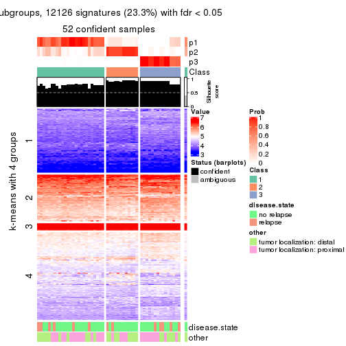
get_signatures(res, k = 4, scale_rows = FALSE)
get_signatures(res, k = 5, scale_rows = FALSE)
get_signatures(res, k = 6, scale_rows = FALSE)
Compare the overlap of signatures from different k:
compare_signatures(res)
get_signature() returns a data frame invisibly. TO get the list of signatures, the function
call should be assigned to a variable explicitly. In following code, if plot argument is set
to FALSE, no heatmap is plotted while only the differential analysis is performed.
# code only for demonstration
tb = get_signature(res, k = ..., plot = FALSE)
An example of the output of tb is:
#> which_row fdr mean_1 mean_2 scaled_mean_1 scaled_mean_2 km
#> 1 38 0.042760348 8.373488 9.131774 -0.5533452 0.5164555 1
#> 2 40 0.018707592 7.106213 8.469186 -0.6173731 0.5762149 1
#> 3 55 0.019134737 10.221463 11.207825 -0.6159697 0.5749050 1
#> 4 59 0.006059896 5.921854 7.869574 -0.6899429 0.6439467 1
#> 5 60 0.018055526 8.928898 10.211722 -0.6204761 0.5791110 1
#> 6 98 0.009384629 15.714769 14.887706 0.6635654 -0.6193277 2
...
The columns in tb are:
which_row: row indices corresponding to the input matrix.fdr: FDR for the differential test. mean_x: The mean value in group x.scaled_mean_x: The mean value in group x after rows are scaled.km: Row groups if k-means clustering is applied to rows.UMAP plot which shows how samples are separated.
dimension_reduction(res, k = 2, method = "UMAP")
dimension_reduction(res, k = 3, method = "UMAP")
dimension_reduction(res, k = 4, method = "UMAP")
dimension_reduction(res, k = 5, method = "UMAP")
dimension_reduction(res, k = 6, method = "UMAP")
Following heatmap shows how subgroups are split when increasing k:
collect_classes(res)

Test correlation between subgroups and known annotations. If the known annotation is numeric, one-way ANOVA test is applied, and if the known annotation is discrete, chi-squared contingency table test is applied.
test_to_known_factors(res)
#> n disease.state(p) other(p) k
#> ATC:kmeans 53 0.821 0.3706 2
#> ATC:kmeans 52 0.603 0.2670 3
#> ATC:kmeans 37 0.368 0.2851 4
#> ATC:kmeans 36 0.553 0.0284 5
#> ATC:kmeans 38 0.593 0.0351 6
If matrix rows can be associated to genes, consider to use functional_enrichment(res,
...) to perform function enrichment for the signature genes. See this vignette for more detailed explanations.
The object with results only for a single top-value method and a single partition method can be extracted as:
res = res_list["ATC", "skmeans"]
# you can also extract it by
# res = res_list["ATC:skmeans"]
A summary of res and all the functions that can be applied to it:
res
#> A 'ConsensusPartition' object with k = 2, 3, 4, 5, 6.
#> On a matrix with 51941 rows and 53 columns.
#> Top rows (1000, 2000, 3000, 4000, 5000) are extracted by 'ATC' method.
#> Subgroups are detected by 'skmeans' method.
#> Performed in total 1250 partitions by row resampling.
#> Best k for subgroups seems to be 2.
#>
#> Following methods can be applied to this 'ConsensusPartition' object:
#> [1] "cola_report" "collect_classes" "collect_plots"
#> [4] "collect_stats" "colnames" "compare_signatures"
#> [7] "consensus_heatmap" "dimension_reduction" "functional_enrichment"
#> [10] "get_anno_col" "get_anno" "get_classes"
#> [13] "get_consensus" "get_matrix" "get_membership"
#> [16] "get_param" "get_signatures" "get_stats"
#> [19] "is_best_k" "is_stable_k" "membership_heatmap"
#> [22] "ncol" "nrow" "plot_ecdf"
#> [25] "rownames" "select_partition_number" "show"
#> [28] "suggest_best_k" "test_to_known_factors"
collect_plots() function collects all the plots made from res for all k (number of partitions)
into one single page to provide an easy and fast comparison between different k.
collect_plots(res)
The plots are:
k and the heatmap of
predicted classes for each k.k.k.k.All the plots in panels can be made by individual functions and they are plotted later in this section.
select_partition_number() produces several plots showing different
statistics for choosing “optimized” k. There are following statistics:
k;k, the area increased is defined as \(A_k - A_{k-1}\).The detailed explanations of these statistics can be found in the cola vignette.
Generally speaking, lower PAC score, higher mean silhouette score or higher
concordance corresponds to better partition. Rand index and Jaccard index
measure how similar the current partition is compared to partition with k-1.
If they are too similar, we won't accept k is better than k-1.
select_partition_number(res)
The numeric values for all these statistics can be obtained by get_stats().
get_stats(res)
#> k 1-PAC mean_silhouette concordance area_increased Rand Jaccard
#> 2 2 1.000 1.000 1.000 0.4882 0.512 0.512
#> 3 3 0.771 0.822 0.906 0.2891 0.810 0.640
#> 4 4 0.727 0.749 0.892 0.1218 0.802 0.540
#> 5 5 0.671 0.619 0.812 0.0538 0.996 0.986
#> 6 6 0.658 0.505 0.747 0.0432 0.959 0.868
suggest_best_k() suggests the best \(k\) based on these statistics. The rules are as follows:
suggest_best_k(res)
#> [1] 2
Following shows the table of the partitions (You need to click the show/hide
code output link to see it). The membership matrix (columns with name p*)
is inferred by
clue::cl_consensus()
function with the SE method. Basically the value in the membership matrix
represents the probability to belong to a certain group. The finall class
label for an item is determined with the group with highest probability it
belongs to.
In get_classes() function, the entropy is calculated from the membership
matrix and the silhouette score is calculated from the consensus matrix.
cbind(get_classes(res, k = 2), get_membership(res, k = 2))
#> class entropy silhouette p1 p2
#> GSM452149 2 0 1 0 1
#> GSM452150 2 0 1 0 1
#> GSM452152 2 0 1 0 1
#> GSM452154 1 0 1 1 0
#> GSM452160 2 0 1 0 1
#> GSM452167 1 0 1 1 0
#> GSM452182 2 0 1 0 1
#> GSM452185 2 0 1 0 1
#> GSM452186 2 0 1 0 1
#> GSM452187 2 0 1 0 1
#> GSM452189 2 0 1 0 1
#> GSM452195 2 0 1 0 1
#> GSM452196 2 0 1 0 1
#> GSM452197 2 0 1 0 1
#> GSM452198 1 0 1 1 0
#> GSM452199 2 0 1 0 1
#> GSM452148 1 0 1 1 0
#> GSM452151 1 0 1 1 0
#> GSM452153 2 0 1 0 1
#> GSM452155 2 0 1 0 1
#> GSM452156 2 0 1 0 1
#> GSM452157 2 0 1 0 1
#> GSM452158 2 0 1 0 1
#> GSM452162 2 0 1 0 1
#> GSM452163 1 0 1 1 0
#> GSM452166 1 0 1 1 0
#> GSM452168 1 0 1 1 0
#> GSM452169 2 0 1 0 1
#> GSM452170 1 0 1 1 0
#> GSM452172 1 0 1 1 0
#> GSM452173 1 0 1 1 0
#> GSM452174 1 0 1 1 0
#> GSM452176 1 0 1 1 0
#> GSM452179 1 0 1 1 0
#> GSM452180 1 0 1 1 0
#> GSM452181 2 0 1 0 1
#> GSM452183 2 0 1 0 1
#> GSM452184 2 0 1 0 1
#> GSM452188 2 0 1 0 1
#> GSM452193 2 0 1 0 1
#> GSM452165 1 0 1 1 0
#> GSM452171 1 0 1 1 0
#> GSM452175 1 0 1 1 0
#> GSM452177 1 0 1 1 0
#> GSM452190 2 0 1 0 1
#> GSM452191 2 0 1 0 1
#> GSM452192 1 0 1 1 0
#> GSM452194 2 0 1 0 1
#> GSM452200 2 0 1 0 1
#> GSM452159 2 0 1 0 1
#> GSM452161 2 0 1 0 1
#> GSM452164 2 0 1 0 1
#> GSM452178 1 0 1 1 0
cbind(get_classes(res, k = 3), get_membership(res, k = 3))
#> class entropy silhouette p1 p2 p3
#> GSM452149 2 0.0000 0.923 0.000 1.000 0.000
#> GSM452150 2 0.0000 0.923 0.000 1.000 0.000
#> GSM452152 2 0.2878 0.797 0.096 0.904 0.000
#> GSM452154 3 0.0000 0.951 0.000 0.000 1.000
#> GSM452160 2 0.0000 0.923 0.000 1.000 0.000
#> GSM452167 3 0.0000 0.951 0.000 0.000 1.000
#> GSM452182 1 0.6302 0.581 0.520 0.480 0.000
#> GSM452185 2 0.0000 0.923 0.000 1.000 0.000
#> GSM452186 2 0.0000 0.923 0.000 1.000 0.000
#> GSM452187 2 0.0000 0.923 0.000 1.000 0.000
#> GSM452189 1 0.6299 0.585 0.524 0.476 0.000
#> GSM452195 2 0.0000 0.923 0.000 1.000 0.000
#> GSM452196 2 0.0000 0.923 0.000 1.000 0.000
#> GSM452197 1 0.6305 0.574 0.516 0.484 0.000
#> GSM452198 3 0.3879 0.825 0.152 0.000 0.848
#> GSM452199 2 0.0000 0.923 0.000 1.000 0.000
#> GSM452148 3 0.0000 0.951 0.000 0.000 1.000
#> GSM452151 3 0.5431 0.665 0.284 0.000 0.716
#> GSM452153 1 0.3879 0.707 0.848 0.152 0.000
#> GSM452155 2 0.0424 0.916 0.008 0.992 0.000
#> GSM452156 2 0.0424 0.916 0.008 0.992 0.000
#> GSM452157 1 0.3941 0.707 0.844 0.156 0.000
#> GSM452158 2 0.5785 0.345 0.332 0.668 0.000
#> GSM452162 2 0.0000 0.923 0.000 1.000 0.000
#> GSM452163 3 0.0000 0.951 0.000 0.000 1.000
#> GSM452166 3 0.0000 0.951 0.000 0.000 1.000
#> GSM452168 3 0.6305 0.198 0.484 0.000 0.516
#> GSM452169 1 0.3879 0.707 0.848 0.152 0.000
#> GSM452170 3 0.0000 0.951 0.000 0.000 1.000
#> GSM452172 3 0.1411 0.926 0.036 0.000 0.964
#> GSM452173 3 0.0000 0.951 0.000 0.000 1.000
#> GSM452174 3 0.0000 0.951 0.000 0.000 1.000
#> GSM452176 3 0.0000 0.951 0.000 0.000 1.000
#> GSM452179 3 0.0000 0.951 0.000 0.000 1.000
#> GSM452180 3 0.0000 0.951 0.000 0.000 1.000
#> GSM452181 2 0.0000 0.923 0.000 1.000 0.000
#> GSM452183 1 0.6302 0.581 0.520 0.480 0.000
#> GSM452184 1 0.6305 0.574 0.516 0.484 0.000
#> GSM452188 1 0.0000 0.634 1.000 0.000 0.000
#> GSM452193 2 0.0000 0.923 0.000 1.000 0.000
#> GSM452165 3 0.0000 0.951 0.000 0.000 1.000
#> GSM452171 3 0.0000 0.951 0.000 0.000 1.000
#> GSM452175 3 0.0000 0.951 0.000 0.000 1.000
#> GSM452177 3 0.0000 0.951 0.000 0.000 1.000
#> GSM452190 2 0.4178 0.707 0.172 0.828 0.000
#> GSM452191 2 0.0000 0.923 0.000 1.000 0.000
#> GSM452192 2 0.6122 0.623 0.152 0.776 0.072
#> GSM452194 2 0.0000 0.923 0.000 1.000 0.000
#> GSM452200 2 0.0000 0.923 0.000 1.000 0.000
#> GSM452159 1 0.0424 0.641 0.992 0.008 0.000
#> GSM452161 2 0.5760 0.364 0.328 0.672 0.000
#> GSM452164 2 0.0000 0.923 0.000 1.000 0.000
#> GSM452178 3 0.0000 0.951 0.000 0.000 1.000
cbind(get_classes(res, k = 4), get_membership(res, k = 4))
#> class entropy silhouette p1 p2 p3 p4
#> GSM452149 3 0.3873 0.609 0.000 0.228 0.772 0.000
#> GSM452150 3 0.4164 0.557 0.000 0.264 0.736 0.000
#> GSM452152 3 0.0000 0.784 0.000 0.000 1.000 0.000
#> GSM452154 4 0.0000 0.983 0.000 0.000 0.000 1.000
#> GSM452160 3 0.4898 0.202 0.000 0.416 0.584 0.000
#> GSM452167 4 0.0000 0.983 0.000 0.000 0.000 1.000
#> GSM452182 3 0.3837 0.666 0.224 0.000 0.776 0.000
#> GSM452185 2 0.3791 0.738 0.004 0.796 0.200 0.000
#> GSM452186 3 0.0336 0.783 0.000 0.008 0.992 0.000
#> GSM452187 3 0.4843 0.267 0.000 0.396 0.604 0.000
#> GSM452189 3 0.4454 0.585 0.308 0.000 0.692 0.000
#> GSM452195 3 0.0000 0.784 0.000 0.000 1.000 0.000
#> GSM452196 3 0.0188 0.784 0.000 0.004 0.996 0.000
#> GSM452197 3 0.2530 0.735 0.112 0.000 0.888 0.000
#> GSM452198 2 0.0188 0.711 0.000 0.996 0.000 0.004
#> GSM452199 3 0.0000 0.784 0.000 0.000 1.000 0.000
#> GSM452148 4 0.0000 0.983 0.000 0.000 0.000 1.000
#> GSM452151 1 0.5408 0.346 0.576 0.016 0.000 0.408
#> GSM452153 1 0.0000 0.771 1.000 0.000 0.000 0.000
#> GSM452155 3 0.0000 0.784 0.000 0.000 1.000 0.000
#> GSM452156 3 0.0000 0.784 0.000 0.000 1.000 0.000
#> GSM452157 1 0.0592 0.761 0.984 0.000 0.016 0.000
#> GSM452158 3 0.4250 0.531 0.276 0.000 0.724 0.000
#> GSM452162 3 0.0000 0.784 0.000 0.000 1.000 0.000
#> GSM452163 4 0.0000 0.983 0.000 0.000 0.000 1.000
#> GSM452166 4 0.0000 0.983 0.000 0.000 0.000 1.000
#> GSM452168 1 0.4933 0.314 0.568 0.000 0.000 0.432
#> GSM452169 1 0.0000 0.771 1.000 0.000 0.000 0.000
#> GSM452170 4 0.0000 0.983 0.000 0.000 0.000 1.000
#> GSM452172 4 0.3801 0.654 0.220 0.000 0.000 0.780
#> GSM452173 4 0.0000 0.983 0.000 0.000 0.000 1.000
#> GSM452174 4 0.0000 0.983 0.000 0.000 0.000 1.000
#> GSM452176 4 0.0000 0.983 0.000 0.000 0.000 1.000
#> GSM452179 4 0.0000 0.983 0.000 0.000 0.000 1.000
#> GSM452180 4 0.0000 0.983 0.000 0.000 0.000 1.000
#> GSM452181 3 0.0188 0.784 0.000 0.004 0.996 0.000
#> GSM452183 3 0.3801 0.669 0.220 0.000 0.780 0.000
#> GSM452184 3 0.3942 0.656 0.236 0.000 0.764 0.000
#> GSM452188 1 0.2921 0.697 0.860 0.140 0.000 0.000
#> GSM452193 3 0.3610 0.643 0.000 0.200 0.800 0.000
#> GSM452165 4 0.0000 0.983 0.000 0.000 0.000 1.000
#> GSM452171 4 0.0000 0.983 0.000 0.000 0.000 1.000
#> GSM452175 4 0.0000 0.983 0.000 0.000 0.000 1.000
#> GSM452177 4 0.0000 0.983 0.000 0.000 0.000 1.000
#> GSM452190 2 0.2859 0.711 0.008 0.880 0.112 0.000
#> GSM452191 2 0.4643 0.524 0.000 0.656 0.344 0.000
#> GSM452192 2 0.0000 0.713 0.000 1.000 0.000 0.000
#> GSM452194 3 0.4776 0.337 0.000 0.376 0.624 0.000
#> GSM452200 2 0.4164 0.676 0.000 0.736 0.264 0.000
#> GSM452159 1 0.0000 0.771 1.000 0.000 0.000 0.000
#> GSM452161 3 0.4277 0.523 0.280 0.000 0.720 0.000
#> GSM452164 3 0.0000 0.784 0.000 0.000 1.000 0.000
#> GSM452178 4 0.0000 0.983 0.000 0.000 0.000 1.000
cbind(get_classes(res, k = 5), get_membership(res, k = 5))
#> class entropy silhouette p1 p2 p3 p4 p5
#> GSM452149 3 0.4648 0.605 0.000 0.104 0.740 0.000 0.156
#> GSM452150 3 0.5169 0.558 0.000 0.128 0.688 0.000 0.184
#> GSM452152 3 0.0510 0.717 0.000 0.000 0.984 0.000 0.016
#> GSM452154 4 0.0510 0.902 0.000 0.000 0.000 0.984 0.016
#> GSM452160 3 0.6267 0.321 0.000 0.236 0.540 0.000 0.224
#> GSM452167 4 0.1117 0.892 0.000 0.020 0.000 0.964 0.016
#> GSM452182 3 0.5462 0.512 0.212 0.000 0.652 0.000 0.136
#> GSM452185 2 0.4852 0.651 0.008 0.740 0.144 0.000 0.108
#> GSM452186 3 0.2470 0.696 0.000 0.012 0.884 0.000 0.104
#> GSM452187 3 0.5956 0.411 0.000 0.212 0.592 0.000 0.196
#> GSM452189 3 0.6237 0.390 0.276 0.000 0.536 0.000 0.188
#> GSM452195 3 0.0290 0.718 0.000 0.000 0.992 0.000 0.008
#> GSM452196 3 0.1478 0.713 0.000 0.000 0.936 0.000 0.064
#> GSM452197 3 0.4593 0.587 0.124 0.000 0.748 0.000 0.128
#> GSM452198 2 0.1626 0.534 0.000 0.940 0.000 0.016 0.044
#> GSM452199 3 0.0609 0.718 0.000 0.000 0.980 0.000 0.020
#> GSM452148 4 0.1043 0.895 0.000 0.000 0.000 0.960 0.040
#> GSM452151 5 0.6593 0.000 0.388 0.024 0.000 0.116 0.472
#> GSM452153 1 0.0000 0.652 1.000 0.000 0.000 0.000 0.000
#> GSM452155 3 0.0404 0.717 0.000 0.000 0.988 0.000 0.012
#> GSM452156 3 0.0510 0.717 0.000 0.000 0.984 0.000 0.016
#> GSM452157 1 0.1697 0.587 0.932 0.000 0.060 0.000 0.008
#> GSM452158 3 0.5124 0.442 0.288 0.000 0.644 0.000 0.068
#> GSM452162 3 0.2970 0.686 0.000 0.004 0.828 0.000 0.168
#> GSM452163 4 0.0510 0.901 0.000 0.000 0.000 0.984 0.016
#> GSM452166 4 0.1410 0.878 0.000 0.000 0.000 0.940 0.060
#> GSM452168 1 0.6796 -0.595 0.372 0.000 0.000 0.292 0.336
#> GSM452169 1 0.0000 0.652 1.000 0.000 0.000 0.000 0.000
#> GSM452170 4 0.0510 0.901 0.000 0.000 0.000 0.984 0.016
#> GSM452172 4 0.6344 -0.114 0.172 0.000 0.000 0.484 0.344
#> GSM452173 4 0.3203 0.787 0.012 0.000 0.000 0.820 0.168
#> GSM452174 4 0.0794 0.899 0.000 0.000 0.000 0.972 0.028
#> GSM452176 4 0.0510 0.901 0.000 0.000 0.000 0.984 0.016
#> GSM452179 4 0.2424 0.835 0.000 0.000 0.000 0.868 0.132
#> GSM452180 4 0.2074 0.857 0.000 0.000 0.000 0.896 0.104
#> GSM452181 3 0.1478 0.713 0.000 0.000 0.936 0.000 0.064
#> GSM452183 3 0.5902 0.472 0.208 0.000 0.600 0.000 0.192
#> GSM452184 3 0.6052 0.465 0.208 0.004 0.596 0.000 0.192
#> GSM452188 1 0.4111 0.457 0.788 0.120 0.000 0.000 0.092
#> GSM452193 3 0.4455 0.637 0.004 0.096 0.768 0.000 0.132
#> GSM452165 4 0.0510 0.901 0.000 0.000 0.000 0.984 0.016
#> GSM452171 4 0.0510 0.901 0.000 0.000 0.000 0.984 0.016
#> GSM452175 4 0.3242 0.782 0.012 0.000 0.000 0.816 0.172
#> GSM452177 4 0.0510 0.901 0.000 0.000 0.000 0.984 0.016
#> GSM452190 2 0.5705 0.527 0.016 0.636 0.088 0.000 0.260
#> GSM452191 2 0.6498 0.280 0.000 0.460 0.340 0.000 0.200
#> GSM452192 2 0.0162 0.573 0.000 0.996 0.000 0.000 0.004
#> GSM452194 3 0.5904 0.445 0.000 0.200 0.600 0.000 0.200
#> GSM452200 2 0.5405 0.547 0.000 0.640 0.256 0.000 0.104
#> GSM452159 1 0.0609 0.648 0.980 0.000 0.000 0.000 0.020
#> GSM452161 3 0.5218 0.404 0.308 0.000 0.624 0.000 0.068
#> GSM452164 3 0.0963 0.718 0.000 0.000 0.964 0.000 0.036
#> GSM452178 4 0.0000 0.902 0.000 0.000 0.000 1.000 0.000
cbind(get_classes(res, k = 6), get_membership(res, k = 6))
#> class entropy silhouette p1 p2 p3 p4 p5 p6
#> GSM452149 5 0.4492 0.2368 0.000 0.340 0.000 0.004 0.620 0.036
#> GSM452150 5 0.4475 0.0602 0.000 0.412 0.000 0.000 0.556 0.032
#> GSM452152 5 0.0520 0.5718 0.000 0.008 0.000 0.008 0.984 0.000
#> GSM452154 3 0.1141 0.8233 0.000 0.000 0.948 0.052 0.000 0.000
#> GSM452160 2 0.5696 0.1278 0.004 0.504 0.000 0.016 0.384 0.092
#> GSM452167 3 0.1225 0.8065 0.000 0.000 0.952 0.012 0.000 0.036
#> GSM452182 5 0.5656 0.3885 0.168 0.116 0.000 0.068 0.648 0.000
#> GSM452185 6 0.4591 0.5607 0.000 0.208 0.000 0.012 0.076 0.704
#> GSM452186 5 0.3136 0.4420 0.000 0.228 0.000 0.000 0.768 0.004
#> GSM452187 5 0.5151 -0.1972 0.000 0.444 0.000 0.000 0.472 0.084
#> GSM452189 5 0.7007 0.1895 0.256 0.200 0.000 0.096 0.448 0.000
#> GSM452195 5 0.0547 0.5705 0.000 0.020 0.000 0.000 0.980 0.000
#> GSM452196 5 0.2909 0.5227 0.000 0.136 0.000 0.028 0.836 0.000
#> GSM452197 5 0.5097 0.4221 0.060 0.172 0.000 0.072 0.696 0.000
#> GSM452198 6 0.2316 0.6100 0.000 0.016 0.040 0.040 0.000 0.904
#> GSM452199 5 0.1141 0.5669 0.000 0.052 0.000 0.000 0.948 0.000
#> GSM452148 3 0.2191 0.7833 0.000 0.004 0.876 0.120 0.000 0.000
#> GSM452151 4 0.5414 0.2002 0.280 0.012 0.076 0.616 0.000 0.016
#> GSM452153 1 0.0291 0.8715 0.992 0.004 0.000 0.000 0.004 0.000
#> GSM452155 5 0.0405 0.5718 0.000 0.004 0.000 0.008 0.988 0.000
#> GSM452156 5 0.0291 0.5716 0.000 0.004 0.000 0.004 0.992 0.000
#> GSM452157 1 0.2163 0.7868 0.892 0.004 0.000 0.008 0.096 0.000
#> GSM452158 5 0.5987 0.2282 0.272 0.096 0.000 0.052 0.576 0.004
#> GSM452162 5 0.4604 0.3611 0.000 0.300 0.000 0.064 0.636 0.000
#> GSM452163 3 0.0717 0.8225 0.000 0.000 0.976 0.008 0.000 0.016
#> GSM452166 3 0.2255 0.7472 0.000 0.000 0.892 0.080 0.000 0.028
#> GSM452168 4 0.6414 0.5649 0.248 0.020 0.304 0.428 0.000 0.000
#> GSM452169 1 0.0405 0.8710 0.988 0.000 0.000 0.008 0.004 0.000
#> GSM452170 3 0.1204 0.8222 0.000 0.000 0.944 0.056 0.000 0.000
#> GSM452172 4 0.5826 0.3601 0.124 0.008 0.412 0.452 0.000 0.004
#> GSM452173 3 0.4232 0.4007 0.012 0.012 0.640 0.336 0.000 0.000
#> GSM452174 3 0.1806 0.8060 0.000 0.004 0.908 0.088 0.000 0.000
#> GSM452176 3 0.0717 0.8225 0.000 0.000 0.976 0.008 0.000 0.016
#> GSM452179 3 0.3383 0.5960 0.000 0.004 0.728 0.268 0.000 0.000
#> GSM452180 3 0.3215 0.6423 0.000 0.004 0.756 0.240 0.000 0.000
#> GSM452181 5 0.2048 0.5361 0.000 0.120 0.000 0.000 0.880 0.000
#> GSM452183 5 0.6589 0.2982 0.184 0.196 0.000 0.088 0.532 0.000
#> GSM452184 5 0.6811 0.2607 0.176 0.236 0.000 0.096 0.492 0.000
#> GSM452188 1 0.5017 0.6899 0.720 0.096 0.000 0.080 0.000 0.104
#> GSM452193 5 0.4833 0.2282 0.004 0.316 0.000 0.004 0.620 0.056
#> GSM452165 3 0.0405 0.8256 0.000 0.000 0.988 0.004 0.000 0.008
#> GSM452171 3 0.0717 0.8225 0.000 0.000 0.976 0.008 0.000 0.016
#> GSM452175 3 0.4124 0.4246 0.008 0.012 0.648 0.332 0.000 0.000
#> GSM452177 3 0.0508 0.8251 0.000 0.000 0.984 0.004 0.000 0.012
#> GSM452190 2 0.6513 -0.2685 0.012 0.444 0.000 0.096 0.056 0.392
#> GSM452191 2 0.6668 0.3837 0.000 0.412 0.000 0.036 0.292 0.260
#> GSM452192 6 0.1398 0.6347 0.000 0.052 0.000 0.008 0.000 0.940
#> GSM452194 5 0.5768 -0.1927 0.000 0.408 0.000 0.016 0.464 0.112
#> GSM452200 6 0.6035 0.2733 0.000 0.212 0.000 0.036 0.184 0.568
#> GSM452159 1 0.1176 0.8636 0.956 0.020 0.000 0.024 0.000 0.000
#> GSM452161 5 0.5949 0.2228 0.276 0.096 0.000 0.048 0.576 0.004
#> GSM452164 5 0.1387 0.5586 0.000 0.068 0.000 0.000 0.932 0.000
#> GSM452178 3 0.0713 0.8270 0.000 0.000 0.972 0.028 0.000 0.000
Heatmaps for the consensus matrix. It visualizes the probability of two samples to be in a same group.
consensus_heatmap(res, k = 2)
consensus_heatmap(res, k = 3)
consensus_heatmap(res, k = 4)
consensus_heatmap(res, k = 5)
consensus_heatmap(res, k = 6)
Heatmaps for the membership of samples in all partitions to see how consistent they are:
membership_heatmap(res, k = 2)
membership_heatmap(res, k = 3)
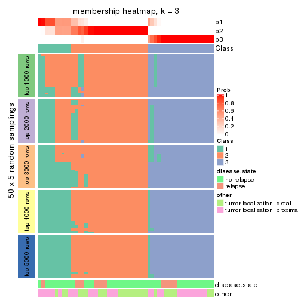
membership_heatmap(res, k = 4)
membership_heatmap(res, k = 5)
membership_heatmap(res, k = 6)
As soon as we have had the classes for columns, we can look for signatures which are significantly different between classes which can be candidate marks for certain classes. Following are the heatmaps for signatures.
Signature heatmaps where rows are scaled:
get_signatures(res, k = 2)
get_signatures(res, k = 3)
get_signatures(res, k = 4)
get_signatures(res, k = 5)
get_signatures(res, k = 6)
Signature heatmaps where rows are not scaled:
get_signatures(res, k = 2, scale_rows = FALSE)
get_signatures(res, k = 3, scale_rows = FALSE)
get_signatures(res, k = 4, scale_rows = FALSE)
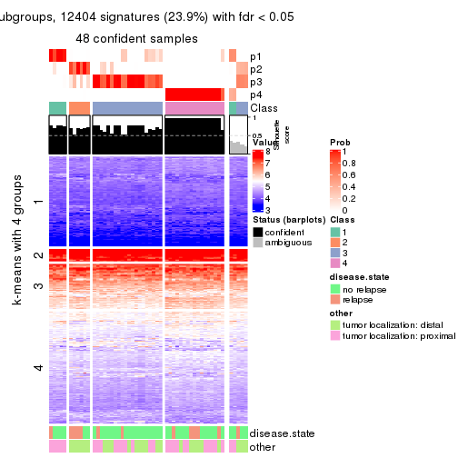
get_signatures(res, k = 5, scale_rows = FALSE)
get_signatures(res, k = 6, scale_rows = FALSE)
Compare the overlap of signatures from different k:
compare_signatures(res)
get_signature() returns a data frame invisibly. TO get the list of signatures, the function
call should be assigned to a variable explicitly. In following code, if plot argument is set
to FALSE, no heatmap is plotted while only the differential analysis is performed.
# code only for demonstration
tb = get_signature(res, k = ..., plot = FALSE)
An example of the output of tb is:
#> which_row fdr mean_1 mean_2 scaled_mean_1 scaled_mean_2 km
#> 1 38 0.042760348 8.373488 9.131774 -0.5533452 0.5164555 1
#> 2 40 0.018707592 7.106213 8.469186 -0.6173731 0.5762149 1
#> 3 55 0.019134737 10.221463 11.207825 -0.6159697 0.5749050 1
#> 4 59 0.006059896 5.921854 7.869574 -0.6899429 0.6439467 1
#> 5 60 0.018055526 8.928898 10.211722 -0.6204761 0.5791110 1
#> 6 98 0.009384629 15.714769 14.887706 0.6635654 -0.6193277 2
...
The columns in tb are:
which_row: row indices corresponding to the input matrix.fdr: FDR for the differential test. mean_x: The mean value in group x.scaled_mean_x: The mean value in group x after rows are scaled.km: Row groups if k-means clustering is applied to rows.UMAP plot which shows how samples are separated.
dimension_reduction(res, k = 2, method = "UMAP")
dimension_reduction(res, k = 3, method = "UMAP")
dimension_reduction(res, k = 4, method = "UMAP")
dimension_reduction(res, k = 5, method = "UMAP")
dimension_reduction(res, k = 6, method = "UMAP")
Following heatmap shows how subgroups are split when increasing k:
collect_classes(res)
Test correlation between subgroups and known annotations. If the known annotation is numeric, one-way ANOVA test is applied, and if the known annotation is discrete, chi-squared contingency table test is applied.
test_to_known_factors(res)
#> n disease.state(p) other(p) k
#> ATC:skmeans 53 0.8198 0.42907 2
#> ATC:skmeans 50 0.5038 0.03383 3
#> ATC:skmeans 48 0.0421 0.00666 4
#> ATC:skmeans 40 0.0984 0.01410 5
#> ATC:skmeans 31 0.8679 0.06055 6
If matrix rows can be associated to genes, consider to use functional_enrichment(res,
...) to perform function enrichment for the signature genes. See this vignette for more detailed explanations.
The object with results only for a single top-value method and a single partition method can be extracted as:
res = res_list["ATC", "pam"]
# you can also extract it by
# res = res_list["ATC:pam"]
A summary of res and all the functions that can be applied to it:
res
#> A 'ConsensusPartition' object with k = 2, 3, 4, 5, 6.
#> On a matrix with 51941 rows and 53 columns.
#> Top rows (1000, 2000, 3000, 4000, 5000) are extracted by 'ATC' method.
#> Subgroups are detected by 'pam' method.
#> Performed in total 1250 partitions by row resampling.
#> Best k for subgroups seems to be 2.
#>
#> Following methods can be applied to this 'ConsensusPartition' object:
#> [1] "cola_report" "collect_classes" "collect_plots"
#> [4] "collect_stats" "colnames" "compare_signatures"
#> [7] "consensus_heatmap" "dimension_reduction" "functional_enrichment"
#> [10] "get_anno_col" "get_anno" "get_classes"
#> [13] "get_consensus" "get_matrix" "get_membership"
#> [16] "get_param" "get_signatures" "get_stats"
#> [19] "is_best_k" "is_stable_k" "membership_heatmap"
#> [22] "ncol" "nrow" "plot_ecdf"
#> [25] "rownames" "select_partition_number" "show"
#> [28] "suggest_best_k" "test_to_known_factors"
collect_plots() function collects all the plots made from res for all k (number of partitions)
into one single page to provide an easy and fast comparison between different k.
collect_plots(res)
The plots are:
k and the heatmap of
predicted classes for each k.k.k.k.All the plots in panels can be made by individual functions and they are plotted later in this section.
select_partition_number() produces several plots showing different
statistics for choosing “optimized” k. There are following statistics:
k;k, the area increased is defined as \(A_k - A_{k-1}\).The detailed explanations of these statistics can be found in the cola vignette.
Generally speaking, lower PAC score, higher mean silhouette score or higher
concordance corresponds to better partition. Rand index and Jaccard index
measure how similar the current partition is compared to partition with k-1.
If they are too similar, we won't accept k is better than k-1.
select_partition_number(res)
The numeric values for all these statistics can be obtained by get_stats().
get_stats(res)
#> k 1-PAC mean_silhouette concordance area_increased Rand Jaccard
#> 2 2 1.000 0.964 0.986 0.4177 0.570 0.570
#> 3 3 0.564 0.802 0.869 0.4033 0.884 0.796
#> 4 4 0.514 0.513 0.755 0.2041 0.795 0.574
#> 5 5 0.651 0.396 0.716 0.0907 0.759 0.369
#> 6 6 0.642 0.567 0.772 0.0389 0.883 0.565
suggest_best_k() suggests the best \(k\) based on these statistics. The rules are as follows:
suggest_best_k(res)
#> [1] 2
Following shows the table of the partitions (You need to click the show/hide
code output link to see it). The membership matrix (columns with name p*)
is inferred by
clue::cl_consensus()
function with the SE method. Basically the value in the membership matrix
represents the probability to belong to a certain group. The finall class
label for an item is determined with the group with highest probability it
belongs to.
In get_classes() function, the entropy is calculated from the membership
matrix and the silhouette score is calculated from the consensus matrix.
cbind(get_classes(res, k = 2), get_membership(res, k = 2))
#> class entropy silhouette p1 p2
#> GSM452149 2 0.0000 1.000 0.000 1.000
#> GSM452150 2 0.0000 1.000 0.000 1.000
#> GSM452152 2 0.0000 1.000 0.000 1.000
#> GSM452154 1 0.0000 0.948 1.000 0.000
#> GSM452160 2 0.0000 1.000 0.000 1.000
#> GSM452167 1 0.9933 0.209 0.548 0.452
#> GSM452182 2 0.0000 1.000 0.000 1.000
#> GSM452185 2 0.0000 1.000 0.000 1.000
#> GSM452186 2 0.0000 1.000 0.000 1.000
#> GSM452187 2 0.0000 1.000 0.000 1.000
#> GSM452189 2 0.0000 1.000 0.000 1.000
#> GSM452195 2 0.0000 1.000 0.000 1.000
#> GSM452196 2 0.0000 1.000 0.000 1.000
#> GSM452197 2 0.0000 1.000 0.000 1.000
#> GSM452198 2 0.0000 1.000 0.000 1.000
#> GSM452199 2 0.0000 1.000 0.000 1.000
#> GSM452148 1 0.0000 0.948 1.000 0.000
#> GSM452151 2 0.0000 1.000 0.000 1.000
#> GSM452153 2 0.0000 1.000 0.000 1.000
#> GSM452155 2 0.0000 1.000 0.000 1.000
#> GSM452156 2 0.0000 1.000 0.000 1.000
#> GSM452157 2 0.0000 1.000 0.000 1.000
#> GSM452158 2 0.0000 1.000 0.000 1.000
#> GSM452162 2 0.0000 1.000 0.000 1.000
#> GSM452163 1 0.0000 0.948 1.000 0.000
#> GSM452166 1 0.8144 0.672 0.748 0.252
#> GSM452168 2 0.0000 1.000 0.000 1.000
#> GSM452169 2 0.0000 1.000 0.000 1.000
#> GSM452170 1 0.0000 0.948 1.000 0.000
#> GSM452172 2 0.0000 1.000 0.000 1.000
#> GSM452173 1 0.0376 0.946 0.996 0.004
#> GSM452174 1 0.0000 0.948 1.000 0.000
#> GSM452176 1 0.0000 0.948 1.000 0.000
#> GSM452179 1 0.0000 0.948 1.000 0.000
#> GSM452180 1 0.0000 0.948 1.000 0.000
#> GSM452181 2 0.0000 1.000 0.000 1.000
#> GSM452183 2 0.0000 1.000 0.000 1.000
#> GSM452184 2 0.0000 1.000 0.000 1.000
#> GSM452188 2 0.0000 1.000 0.000 1.000
#> GSM452193 2 0.0000 1.000 0.000 1.000
#> GSM452165 1 0.3114 0.906 0.944 0.056
#> GSM452171 1 0.0000 0.948 1.000 0.000
#> GSM452175 1 0.0376 0.946 0.996 0.004
#> GSM452177 1 0.0000 0.948 1.000 0.000
#> GSM452190 2 0.0000 1.000 0.000 1.000
#> GSM452191 2 0.0000 1.000 0.000 1.000
#> GSM452192 2 0.0000 1.000 0.000 1.000
#> GSM452194 2 0.0000 1.000 0.000 1.000
#> GSM452200 2 0.0000 1.000 0.000 1.000
#> GSM452159 2 0.0000 1.000 0.000 1.000
#> GSM452161 2 0.0000 1.000 0.000 1.000
#> GSM452164 2 0.0000 1.000 0.000 1.000
#> GSM452178 1 0.0000 0.948 1.000 0.000
cbind(get_classes(res, k = 3), get_membership(res, k = 3))
#> class entropy silhouette p1 p2 p3
#> GSM452149 1 0.5098 0.672 0.752 0.248 0.000
#> GSM452150 1 0.5098 0.672 0.752 0.248 0.000
#> GSM452152 1 0.5098 0.672 0.752 0.248 0.000
#> GSM452154 3 0.0000 0.897 0.000 0.000 1.000
#> GSM452160 1 0.1643 0.807 0.956 0.044 0.000
#> GSM452167 3 0.6284 0.477 0.304 0.016 0.680
#> GSM452182 1 0.5835 0.692 0.660 0.340 0.000
#> GSM452185 1 0.1964 0.806 0.944 0.056 0.000
#> GSM452186 1 0.5098 0.672 0.752 0.248 0.000
#> GSM452187 1 0.1643 0.805 0.956 0.044 0.000
#> GSM452189 1 0.5465 0.737 0.712 0.288 0.000
#> GSM452195 2 0.4002 1.000 0.160 0.840 0.000
#> GSM452196 2 0.4002 1.000 0.160 0.840 0.000
#> GSM452197 1 0.4654 0.694 0.792 0.208 0.000
#> GSM452198 1 0.3412 0.791 0.876 0.124 0.000
#> GSM452199 2 0.4002 1.000 0.160 0.840 0.000
#> GSM452148 3 0.0237 0.896 0.000 0.004 0.996
#> GSM452151 1 0.4002 0.777 0.840 0.160 0.000
#> GSM452153 1 0.4002 0.777 0.840 0.160 0.000
#> GSM452155 2 0.4002 1.000 0.160 0.840 0.000
#> GSM452156 2 0.4002 1.000 0.160 0.840 0.000
#> GSM452157 1 0.4178 0.780 0.828 0.172 0.000
#> GSM452158 1 0.1643 0.807 0.956 0.044 0.000
#> GSM452162 1 0.0747 0.811 0.984 0.016 0.000
#> GSM452163 3 0.0000 0.897 0.000 0.000 1.000
#> GSM452166 3 0.7889 0.526 0.288 0.088 0.624
#> GSM452168 1 0.4002 0.777 0.840 0.160 0.000
#> GSM452169 1 0.4002 0.777 0.840 0.160 0.000
#> GSM452170 3 0.0000 0.897 0.000 0.000 1.000
#> GSM452172 1 0.4002 0.777 0.840 0.160 0.000
#> GSM452173 3 0.3500 0.853 0.004 0.116 0.880
#> GSM452174 3 0.0000 0.897 0.000 0.000 1.000
#> GSM452176 3 0.0000 0.897 0.000 0.000 1.000
#> GSM452179 3 0.2356 0.876 0.000 0.072 0.928
#> GSM452180 3 0.2356 0.876 0.000 0.072 0.928
#> GSM452181 1 0.5098 0.672 0.752 0.248 0.000
#> GSM452183 1 0.4974 0.716 0.764 0.236 0.000
#> GSM452184 1 0.3752 0.783 0.856 0.144 0.000
#> GSM452188 1 0.4002 0.777 0.840 0.160 0.000
#> GSM452193 1 0.1860 0.802 0.948 0.052 0.000
#> GSM452165 3 0.5582 0.777 0.100 0.088 0.812
#> GSM452171 3 0.0000 0.897 0.000 0.000 1.000
#> GSM452175 3 0.3500 0.853 0.004 0.116 0.880
#> GSM452177 3 0.0000 0.897 0.000 0.000 1.000
#> GSM452190 1 0.0237 0.811 0.996 0.004 0.000
#> GSM452191 1 0.1753 0.804 0.952 0.048 0.000
#> GSM452192 1 0.1964 0.807 0.944 0.056 0.000
#> GSM452194 1 0.1643 0.805 0.956 0.044 0.000
#> GSM452200 1 0.5098 0.672 0.752 0.248 0.000
#> GSM452159 1 0.4002 0.777 0.840 0.160 0.000
#> GSM452161 1 0.1529 0.806 0.960 0.040 0.000
#> GSM452164 1 0.5098 0.672 0.752 0.248 0.000
#> GSM452178 3 0.0000 0.897 0.000 0.000 1.000
cbind(get_classes(res, k = 4), get_membership(res, k = 4))
#> class entropy silhouette p1 p2 p3 p4
#> GSM452149 3 0.0000 0.567 0.000 0.000 1.000 0.000
#> GSM452150 3 0.0000 0.567 0.000 0.000 1.000 0.000
#> GSM452152 3 0.4482 0.381 0.128 0.068 0.804 0.000
#> GSM452154 4 0.0000 0.835 0.000 0.000 0.000 1.000
#> GSM452160 1 0.4977 0.399 0.540 0.000 0.460 0.000
#> GSM452167 4 0.9510 0.343 0.164 0.228 0.196 0.412
#> GSM452182 1 0.5250 0.260 0.552 0.008 0.440 0.000
#> GSM452185 1 0.6206 0.436 0.540 0.056 0.404 0.000
#> GSM452186 3 0.0000 0.567 0.000 0.000 1.000 0.000
#> GSM452187 3 0.4382 0.252 0.296 0.000 0.704 0.000
#> GSM452189 1 0.3356 0.641 0.824 0.000 0.176 0.000
#> GSM452195 2 0.4356 1.000 0.000 0.708 0.292 0.000
#> GSM452196 3 0.4564 -0.242 0.000 0.328 0.672 0.000
#> GSM452197 3 0.6430 -0.102 0.428 0.068 0.504 0.000
#> GSM452198 1 0.7551 0.316 0.484 0.228 0.288 0.000
#> GSM452199 2 0.4356 1.000 0.000 0.708 0.292 0.000
#> GSM452148 4 0.0469 0.833 0.000 0.012 0.000 0.988
#> GSM452151 1 0.6357 0.465 0.656 0.184 0.160 0.000
#> GSM452153 1 0.3899 0.649 0.840 0.052 0.108 0.000
#> GSM452155 3 0.4830 -0.406 0.000 0.392 0.608 0.000
#> GSM452156 3 0.4697 -0.298 0.000 0.356 0.644 0.000
#> GSM452157 1 0.4015 0.646 0.832 0.052 0.116 0.000
#> GSM452158 1 0.4661 0.544 0.652 0.000 0.348 0.000
#> GSM452162 1 0.4761 0.520 0.628 0.000 0.372 0.000
#> GSM452163 4 0.1557 0.811 0.000 0.056 0.000 0.944
#> GSM452166 4 0.8717 0.510 0.144 0.176 0.152 0.528
#> GSM452168 1 0.4677 0.520 0.776 0.176 0.048 0.000
#> GSM452169 1 0.3899 0.649 0.840 0.052 0.108 0.000
#> GSM452170 4 0.0000 0.835 0.000 0.000 0.000 1.000
#> GSM452172 1 0.4158 0.480 0.768 0.224 0.000 0.008
#> GSM452173 4 0.6826 0.616 0.228 0.172 0.000 0.600
#> GSM452174 4 0.0469 0.833 0.000 0.012 0.000 0.988
#> GSM452176 4 0.0000 0.835 0.000 0.000 0.000 1.000
#> GSM452179 4 0.1854 0.818 0.048 0.012 0.000 0.940
#> GSM452180 4 0.2021 0.814 0.056 0.012 0.000 0.932
#> GSM452181 3 0.0000 0.567 0.000 0.000 1.000 0.000
#> GSM452183 1 0.4866 0.391 0.596 0.000 0.404 0.000
#> GSM452184 1 0.2973 0.649 0.856 0.000 0.144 0.000
#> GSM452188 1 0.3899 0.649 0.840 0.052 0.108 0.000
#> GSM452193 3 0.4500 0.197 0.316 0.000 0.684 0.000
#> GSM452165 4 0.7195 0.648 0.120 0.172 0.056 0.652
#> GSM452171 4 0.0000 0.835 0.000 0.000 0.000 1.000
#> GSM452175 4 0.6798 0.620 0.224 0.172 0.000 0.604
#> GSM452177 4 0.0000 0.835 0.000 0.000 0.000 1.000
#> GSM452190 1 0.4382 0.576 0.704 0.000 0.296 0.000
#> GSM452191 3 0.4222 0.306 0.272 0.000 0.728 0.000
#> GSM452192 1 0.6640 0.411 0.552 0.096 0.352 0.000
#> GSM452194 3 0.4996 -0.362 0.484 0.000 0.516 0.000
#> GSM452200 3 0.1557 0.526 0.000 0.056 0.944 0.000
#> GSM452159 1 0.3899 0.649 0.840 0.052 0.108 0.000
#> GSM452161 1 0.4972 0.405 0.544 0.000 0.456 0.000
#> GSM452164 3 0.0188 0.566 0.004 0.000 0.996 0.000
#> GSM452178 4 0.0000 0.835 0.000 0.000 0.000 1.000
cbind(get_classes(res, k = 5), get_membership(res, k = 5))
#> class entropy silhouette p1 p2 p3 p4 p5
#> GSM452149 2 0.4161 0.4579 0.000 0.608 0.392 0.000 0.000
#> GSM452150 2 0.4201 0.4565 0.000 0.592 0.408 0.000 0.000
#> GSM452152 3 0.4638 -0.2176 0.000 0.324 0.648 0.000 0.028
#> GSM452154 4 0.0290 0.9796 0.008 0.000 0.000 0.992 0.000
#> GSM452160 2 0.4060 -0.2760 0.000 0.640 0.360 0.000 0.000
#> GSM452167 1 0.6757 0.2809 0.488 0.036 0.360 0.116 0.000
#> GSM452182 3 0.2719 0.1789 0.144 0.004 0.852 0.000 0.000
#> GSM452185 3 0.4278 0.4072 0.000 0.452 0.548 0.000 0.000
#> GSM452186 2 0.4201 0.4565 0.000 0.592 0.408 0.000 0.000
#> GSM452187 2 0.0000 0.2764 0.000 1.000 0.000 0.000 0.000
#> GSM452189 3 0.5415 0.3971 0.064 0.384 0.552 0.000 0.000
#> GSM452195 5 0.0000 1.0000 0.000 0.000 0.000 0.000 1.000
#> GSM452196 2 0.6536 0.2940 0.000 0.412 0.392 0.000 0.196
#> GSM452197 3 0.1911 0.1991 0.004 0.036 0.932 0.000 0.028
#> GSM452198 1 0.6600 0.0561 0.408 0.212 0.380 0.000 0.000
#> GSM452199 5 0.0000 1.0000 0.000 0.000 0.000 0.000 1.000
#> GSM452148 4 0.1124 0.9734 0.004 0.000 0.036 0.960 0.000
#> GSM452151 1 0.3885 0.3433 0.724 0.008 0.268 0.000 0.000
#> GSM452153 1 0.4446 0.3088 0.592 0.400 0.008 0.000 0.000
#> GSM452155 3 0.6698 -0.2859 0.000 0.248 0.412 0.000 0.340
#> GSM452156 3 0.6552 -0.3753 0.000 0.388 0.412 0.000 0.200
#> GSM452157 1 0.4630 0.3041 0.588 0.396 0.016 0.000 0.000
#> GSM452158 3 0.4555 0.4167 0.008 0.472 0.520 0.000 0.000
#> GSM452162 3 0.4300 0.4158 0.000 0.476 0.524 0.000 0.000
#> GSM452163 4 0.0794 0.9605 0.000 0.000 0.028 0.972 0.000
#> GSM452166 1 0.5255 0.0346 0.496 0.036 0.004 0.464 0.000
#> GSM452168 1 0.4744 0.2139 0.572 0.020 0.408 0.000 0.000
#> GSM452169 1 0.4446 0.3088 0.592 0.400 0.008 0.000 0.000
#> GSM452170 4 0.0000 0.9814 0.000 0.000 0.000 1.000 0.000
#> GSM452172 1 0.0162 0.2819 0.996 0.000 0.004 0.000 0.000
#> GSM452173 1 0.4242 0.1231 0.572 0.000 0.000 0.428 0.000
#> GSM452174 4 0.1124 0.9734 0.004 0.000 0.036 0.960 0.000
#> GSM452176 4 0.0000 0.9814 0.000 0.000 0.000 1.000 0.000
#> GSM452179 4 0.1124 0.9734 0.004 0.000 0.036 0.960 0.000
#> GSM452180 4 0.1124 0.9734 0.004 0.000 0.036 0.960 0.000
#> GSM452181 2 0.4210 0.4542 0.000 0.588 0.412 0.000 0.000
#> GSM452183 3 0.3035 0.2648 0.032 0.112 0.856 0.000 0.000
#> GSM452184 3 0.5467 0.3844 0.064 0.412 0.524 0.000 0.000
#> GSM452188 1 0.4446 0.3088 0.592 0.400 0.008 0.000 0.000
#> GSM452193 2 0.1908 0.2731 0.000 0.908 0.092 0.000 0.000
#> GSM452165 1 0.5046 0.0232 0.500 0.032 0.000 0.468 0.000
#> GSM452171 4 0.0000 0.9814 0.000 0.000 0.000 1.000 0.000
#> GSM452175 1 0.4242 0.1231 0.572 0.000 0.000 0.428 0.000
#> GSM452177 4 0.0000 0.9814 0.000 0.000 0.000 1.000 0.000
#> GSM452190 3 0.4300 0.4158 0.000 0.476 0.524 0.000 0.000
#> GSM452191 2 0.2813 0.3664 0.000 0.832 0.168 0.000 0.000
#> GSM452192 2 0.6472 -0.2133 0.184 0.432 0.384 0.000 0.000
#> GSM452194 2 0.3366 -0.0677 0.000 0.768 0.232 0.000 0.000
#> GSM452200 2 0.4242 0.4461 0.000 0.572 0.428 0.000 0.000
#> GSM452159 1 0.4446 0.3088 0.592 0.400 0.008 0.000 0.000
#> GSM452161 3 0.4300 0.4143 0.000 0.476 0.524 0.000 0.000
#> GSM452164 3 0.4235 -0.3272 0.000 0.424 0.576 0.000 0.000
#> GSM452178 4 0.0000 0.9814 0.000 0.000 0.000 1.000 0.000
cbind(get_classes(res, k = 6), get_membership(res, k = 6))
#> class entropy silhouette p1 p2 p3 p4 p5 p6
#> GSM452149 2 0.1765 0.6551 0.000 0.904 0.096 0.000 0.000 0.000
#> GSM452150 2 0.1556 0.6600 0.000 0.920 0.080 0.000 0.000 0.000
#> GSM452152 2 0.3151 0.4359 0.000 0.748 0.252 0.000 0.000 0.000
#> GSM452154 4 0.4773 0.6806 0.056 0.000 0.000 0.556 0.000 0.388
#> GSM452160 3 0.2969 0.5165 0.000 0.224 0.776 0.000 0.000 0.000
#> GSM452167 1 0.6249 0.3362 0.540 0.000 0.236 0.180 0.000 0.044
#> GSM452182 3 0.4264 0.0741 0.016 0.492 0.492 0.000 0.000 0.000
#> GSM452185 3 0.0260 0.6997 0.000 0.008 0.992 0.000 0.000 0.000
#> GSM452186 2 0.1556 0.6600 0.000 0.920 0.080 0.000 0.000 0.000
#> GSM452187 2 0.3868 0.0806 0.000 0.508 0.492 0.000 0.000 0.000
#> GSM452189 3 0.2617 0.6236 0.080 0.040 0.876 0.004 0.000 0.000
#> GSM452195 5 0.0000 1.0000 0.000 0.000 0.000 0.000 1.000 0.000
#> GSM452196 2 0.5670 0.2953 0.000 0.524 0.000 0.200 0.276 0.000
#> GSM452197 3 0.5723 0.2031 0.000 0.292 0.508 0.200 0.000 0.000
#> GSM452198 1 0.5831 0.0830 0.456 0.196 0.348 0.000 0.000 0.000
#> GSM452199 5 0.0000 1.0000 0.000 0.000 0.000 0.000 1.000 0.000
#> GSM452148 6 0.0000 0.9406 0.000 0.000 0.000 0.000 0.000 1.000
#> GSM452151 1 0.1556 0.5362 0.920 0.000 0.080 0.000 0.000 0.000
#> GSM452153 1 0.5186 0.3848 0.544 0.000 0.356 0.100 0.000 0.000
#> GSM452155 2 0.3330 0.3816 0.000 0.716 0.000 0.000 0.284 0.000
#> GSM452156 2 0.2762 0.4862 0.000 0.804 0.000 0.000 0.196 0.000
#> GSM452157 1 0.6547 0.3269 0.464 0.092 0.344 0.100 0.000 0.000
#> GSM452158 3 0.0260 0.7012 0.000 0.008 0.992 0.000 0.000 0.000
#> GSM452162 3 0.0146 0.7009 0.000 0.004 0.996 0.000 0.000 0.000
#> GSM452163 4 0.3409 0.9556 0.000 0.000 0.000 0.700 0.000 0.300
#> GSM452166 1 0.5463 0.4115 0.664 0.172 0.104 0.000 0.000 0.060
#> GSM452168 1 0.2527 0.5359 0.832 0.000 0.168 0.000 0.000 0.000
#> GSM452169 1 0.5186 0.3848 0.544 0.000 0.356 0.100 0.000 0.000
#> GSM452170 4 0.3409 0.9556 0.000 0.000 0.000 0.700 0.000 0.300
#> GSM452172 1 0.0000 0.5145 1.000 0.000 0.000 0.000 0.000 0.000
#> GSM452173 1 0.1910 0.5062 0.892 0.000 0.000 0.000 0.000 0.108
#> GSM452174 6 0.2003 0.7908 0.000 0.000 0.000 0.116 0.000 0.884
#> GSM452176 4 0.3409 0.9556 0.000 0.000 0.000 0.700 0.000 0.300
#> GSM452179 6 0.0000 0.9406 0.000 0.000 0.000 0.000 0.000 1.000
#> GSM452180 6 0.0000 0.9406 0.000 0.000 0.000 0.000 0.000 1.000
#> GSM452181 2 0.1501 0.6601 0.000 0.924 0.076 0.000 0.000 0.000
#> GSM452183 3 0.3992 0.3461 0.012 0.364 0.624 0.000 0.000 0.000
#> GSM452184 3 0.1556 0.6272 0.080 0.000 0.920 0.000 0.000 0.000
#> GSM452188 1 0.5166 0.3789 0.540 0.000 0.364 0.096 0.000 0.000
#> GSM452193 2 0.3862 0.1104 0.000 0.524 0.476 0.000 0.000 0.000
#> GSM452165 1 0.4923 0.2926 0.560 0.000 0.368 0.000 0.000 0.072
#> GSM452171 4 0.3409 0.9556 0.000 0.000 0.000 0.700 0.000 0.300
#> GSM452175 1 0.1910 0.5062 0.892 0.000 0.000 0.000 0.000 0.108
#> GSM452177 4 0.3409 0.9556 0.000 0.000 0.000 0.700 0.000 0.300
#> GSM452190 3 0.0146 0.7009 0.000 0.004 0.996 0.000 0.000 0.000
#> GSM452191 2 0.3756 0.2933 0.000 0.600 0.400 0.000 0.000 0.000
#> GSM452192 3 0.5062 0.3976 0.168 0.196 0.636 0.000 0.000 0.000
#> GSM452194 3 0.3482 0.3592 0.000 0.316 0.684 0.000 0.000 0.000
#> GSM452200 2 0.4386 0.5712 0.000 0.708 0.092 0.200 0.000 0.000
#> GSM452159 1 0.5186 0.3848 0.544 0.000 0.356 0.100 0.000 0.000
#> GSM452161 3 0.0547 0.7005 0.000 0.020 0.980 0.000 0.000 0.000
#> GSM452164 2 0.2823 0.5199 0.000 0.796 0.204 0.000 0.000 0.000
#> GSM452178 4 0.3409 0.9556 0.000 0.000 0.000 0.700 0.000 0.300
Heatmaps for the consensus matrix. It visualizes the probability of two samples to be in a same group.
consensus_heatmap(res, k = 2)
consensus_heatmap(res, k = 3)
consensus_heatmap(res, k = 4)
consensus_heatmap(res, k = 5)
consensus_heatmap(res, k = 6)

Heatmaps for the membership of samples in all partitions to see how consistent they are:
membership_heatmap(res, k = 2)
membership_heatmap(res, k = 3)
membership_heatmap(res, k = 4)
membership_heatmap(res, k = 5)
membership_heatmap(res, k = 6)
As soon as we have had the classes for columns, we can look for signatures which are significantly different between classes which can be candidate marks for certain classes. Following are the heatmaps for signatures.
Signature heatmaps where rows are scaled:
get_signatures(res, k = 2)
get_signatures(res, k = 3)
get_signatures(res, k = 4)
get_signatures(res, k = 5)
get_signatures(res, k = 6)
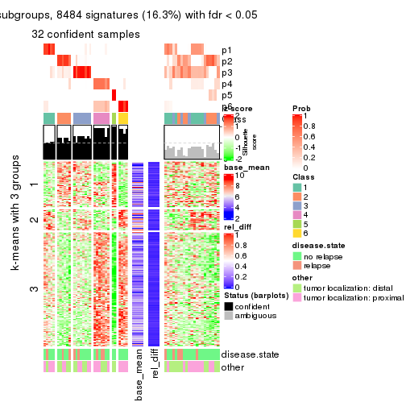
Signature heatmaps where rows are not scaled:
get_signatures(res, k = 2, scale_rows = FALSE)
get_signatures(res, k = 3, scale_rows = FALSE)
get_signatures(res, k = 4, scale_rows = FALSE)
get_signatures(res, k = 5, scale_rows = FALSE)

get_signatures(res, k = 6, scale_rows = FALSE)
Compare the overlap of signatures from different k:
compare_signatures(res)
get_signature() returns a data frame invisibly. TO get the list of signatures, the function
call should be assigned to a variable explicitly. In following code, if plot argument is set
to FALSE, no heatmap is plotted while only the differential analysis is performed.
# code only for demonstration
tb = get_signature(res, k = ..., plot = FALSE)
An example of the output of tb is:
#> which_row fdr mean_1 mean_2 scaled_mean_1 scaled_mean_2 km
#> 1 38 0.042760348 8.373488 9.131774 -0.5533452 0.5164555 1
#> 2 40 0.018707592 7.106213 8.469186 -0.6173731 0.5762149 1
#> 3 55 0.019134737 10.221463 11.207825 -0.6159697 0.5749050 1
#> 4 59 0.006059896 5.921854 7.869574 -0.6899429 0.6439467 1
#> 5 60 0.018055526 8.928898 10.211722 -0.6204761 0.5791110 1
#> 6 98 0.009384629 15.714769 14.887706 0.6635654 -0.6193277 2
...
The columns in tb are:
which_row: row indices corresponding to the input matrix.fdr: FDR for the differential test. mean_x: The mean value in group x.scaled_mean_x: The mean value in group x after rows are scaled.km: Row groups if k-means clustering is applied to rows.UMAP plot which shows how samples are separated.
dimension_reduction(res, k = 2, method = "UMAP")
dimension_reduction(res, k = 3, method = "UMAP")
dimension_reduction(res, k = 4, method = "UMAP")
dimension_reduction(res, k = 5, method = "UMAP")
dimension_reduction(res, k = 6, method = "UMAP")
Following heatmap shows how subgroups are split when increasing k:
collect_classes(res)
Test correlation between subgroups and known annotations. If the known annotation is numeric, one-way ANOVA test is applied, and if the known annotation is discrete, chi-squared contingency table test is applied.
test_to_known_factors(res)
#> n disease.state(p) other(p) k
#> ATC:pam 52 0.596 0.3822 2
#> ATC:pam 52 0.329 0.4565 3
#> ATC:pam 34 0.656 0.0626 4
#> ATC:pam 13 1.000 0.2482 5
#> ATC:pam 32 0.627 0.1436 6
If matrix rows can be associated to genes, consider to use functional_enrichment(res,
...) to perform function enrichment for the signature genes. See this vignette for more detailed explanations.
The object with results only for a single top-value method and a single partition method can be extracted as:
res = res_list["ATC", "mclust"]
# you can also extract it by
# res = res_list["ATC:mclust"]
A summary of res and all the functions that can be applied to it:
res
#> A 'ConsensusPartition' object with k = 2, 3, 4, 5, 6.
#> On a matrix with 51941 rows and 53 columns.
#> Top rows (1000, 2000, 3000, 4000, 5000) are extracted by 'ATC' method.
#> Subgroups are detected by 'mclust' method.
#> Performed in total 1250 partitions by row resampling.
#> Best k for subgroups seems to be 5.
#>
#> Following methods can be applied to this 'ConsensusPartition' object:
#> [1] "cola_report" "collect_classes" "collect_plots"
#> [4] "collect_stats" "colnames" "compare_signatures"
#> [7] "consensus_heatmap" "dimension_reduction" "functional_enrichment"
#> [10] "get_anno_col" "get_anno" "get_classes"
#> [13] "get_consensus" "get_matrix" "get_membership"
#> [16] "get_param" "get_signatures" "get_stats"
#> [19] "is_best_k" "is_stable_k" "membership_heatmap"
#> [22] "ncol" "nrow" "plot_ecdf"
#> [25] "rownames" "select_partition_number" "show"
#> [28] "suggest_best_k" "test_to_known_factors"
collect_plots() function collects all the plots made from res for all k (number of partitions)
into one single page to provide an easy and fast comparison between different k.
collect_plots(res)
The plots are:
k and the heatmap of
predicted classes for each k.k.k.k.All the plots in panels can be made by individual functions and they are plotted later in this section.
select_partition_number() produces several plots showing different
statistics for choosing “optimized” k. There are following statistics:
k;k, the area increased is defined as \(A_k - A_{k-1}\).The detailed explanations of these statistics can be found in the cola vignette.
Generally speaking, lower PAC score, higher mean silhouette score or higher
concordance corresponds to better partition. Rand index and Jaccard index
measure how similar the current partition is compared to partition with k-1.
If they are too similar, we won't accept k is better than k-1.
select_partition_number(res)
The numeric values for all these statistics can be obtained by get_stats().
get_stats(res)
#> k 1-PAC mean_silhouette concordance area_increased Rand Jaccard
#> 2 2 0.305 0.661 0.770 0.3692 0.492 0.492
#> 3 3 0.343 0.763 0.787 0.4668 0.745 0.584
#> 4 4 0.464 0.329 0.699 0.2814 0.837 0.660
#> 5 5 0.624 0.680 0.807 0.0745 0.790 0.465
#> 6 6 0.612 0.482 0.721 0.0696 0.909 0.673
suggest_best_k() suggests the best \(k\) based on these statistics. The rules are as follows:
suggest_best_k(res)
#> [1] 5
Following shows the table of the partitions (You need to click the show/hide
code output link to see it). The membership matrix (columns with name p*)
is inferred by
clue::cl_consensus()
function with the SE method. Basically the value in the membership matrix
represents the probability to belong to a certain group. The finall class
label for an item is determined with the group with highest probability it
belongs to.
In get_classes() function, the entropy is calculated from the membership
matrix and the silhouette score is calculated from the consensus matrix.
cbind(get_classes(res, k = 2), get_membership(res, k = 2))
#> class entropy silhouette p1 p2
#> GSM452149 2 0.0000 0.61464 0.000 1.000
#> GSM452150 2 0.1414 0.62001 0.020 0.980
#> GSM452152 2 0.9248 0.67815 0.340 0.660
#> GSM452154 1 0.7376 0.83044 0.792 0.208
#> GSM452160 2 0.0000 0.61464 0.000 1.000
#> GSM452167 1 0.7883 0.79474 0.764 0.236
#> GSM452182 1 0.9710 0.34623 0.600 0.400
#> GSM452185 2 0.9248 0.67815 0.340 0.660
#> GSM452186 2 0.0000 0.61464 0.000 1.000
#> GSM452187 2 0.0000 0.61464 0.000 1.000
#> GSM452189 2 0.9286 0.67656 0.344 0.656
#> GSM452195 1 0.0376 0.65178 0.996 0.004
#> GSM452196 1 0.0376 0.65178 0.996 0.004
#> GSM452197 1 0.0000 0.64773 1.000 0.000
#> GSM452198 1 0.8386 0.74264 0.732 0.268
#> GSM452199 1 0.0376 0.65178 0.996 0.004
#> GSM452148 1 0.7376 0.83044 0.792 0.208
#> GSM452151 2 0.9248 0.67815 0.340 0.660
#> GSM452153 2 0.9522 0.61754 0.372 0.628
#> GSM452155 1 0.9977 0.00398 0.528 0.472
#> GSM452156 2 0.9248 0.67815 0.340 0.660
#> GSM452157 2 0.9881 0.42072 0.436 0.564
#> GSM452158 2 0.9248 0.67815 0.340 0.660
#> GSM452162 2 0.8499 0.67017 0.276 0.724
#> GSM452163 1 0.7376 0.83044 0.792 0.208
#> GSM452166 2 0.9286 0.67115 0.344 0.656
#> GSM452168 1 0.9998 -0.11073 0.508 0.492
#> GSM452169 2 0.9815 0.46699 0.420 0.580
#> GSM452170 1 0.7376 0.83044 0.792 0.208
#> GSM452172 2 0.9248 0.67815 0.340 0.660
#> GSM452173 1 0.7376 0.83044 0.792 0.208
#> GSM452174 1 0.7376 0.83044 0.792 0.208
#> GSM452176 1 0.7376 0.83044 0.792 0.208
#> GSM452179 1 0.7376 0.83044 0.792 0.208
#> GSM452180 1 0.7376 0.83044 0.792 0.208
#> GSM452181 2 0.0000 0.61464 0.000 1.000
#> GSM452183 2 0.9286 0.67656 0.344 0.656
#> GSM452184 2 0.9248 0.67815 0.340 0.660
#> GSM452188 2 0.9248 0.67815 0.340 0.660
#> GSM452193 2 0.9000 0.67735 0.316 0.684
#> GSM452165 1 0.7376 0.83044 0.792 0.208
#> GSM452171 1 0.7376 0.83044 0.792 0.208
#> GSM452175 1 0.7376 0.83044 0.792 0.208
#> GSM452177 1 0.7376 0.83044 0.792 0.208
#> GSM452190 2 0.2603 0.60285 0.044 0.956
#> GSM452191 2 0.0000 0.61464 0.000 1.000
#> GSM452192 1 0.9248 0.57561 0.660 0.340
#> GSM452194 2 0.0000 0.61464 0.000 1.000
#> GSM452200 1 0.0376 0.65178 0.996 0.004
#> GSM452159 2 0.9248 0.67815 0.340 0.660
#> GSM452161 2 0.9248 0.67815 0.340 0.660
#> GSM452164 2 0.2423 0.62583 0.040 0.960
#> GSM452178 1 0.7376 0.83044 0.792 0.208
cbind(get_classes(res, k = 3), get_membership(res, k = 3))
#> class entropy silhouette p1 p2 p3
#> GSM452149 2 0.1163 0.802 0.000 0.972 0.028
#> GSM452150 2 0.1163 0.802 0.000 0.972 0.028
#> GSM452152 2 0.4295 0.807 0.104 0.864 0.032
#> GSM452154 1 0.4235 0.813 0.824 0.176 0.000
#> GSM452160 2 0.1163 0.802 0.000 0.972 0.028
#> GSM452167 2 0.4629 0.706 0.188 0.808 0.004
#> GSM452182 2 0.7412 0.753 0.176 0.700 0.124
#> GSM452185 2 0.4605 0.768 0.204 0.796 0.000
#> GSM452186 2 0.1163 0.802 0.000 0.972 0.028
#> GSM452187 2 0.1163 0.802 0.000 0.972 0.028
#> GSM452189 2 0.7412 0.753 0.176 0.700 0.124
#> GSM452195 3 0.7418 0.788 0.080 0.248 0.672
#> GSM452196 3 0.7381 0.789 0.080 0.244 0.676
#> GSM452197 3 0.5580 0.589 0.256 0.008 0.736
#> GSM452198 2 0.7717 0.685 0.148 0.680 0.172
#> GSM452199 3 0.7418 0.788 0.080 0.248 0.672
#> GSM452148 1 0.4235 0.813 0.824 0.176 0.000
#> GSM452151 2 0.6254 0.783 0.188 0.756 0.056
#> GSM452153 2 0.7412 0.753 0.176 0.700 0.124
#> GSM452155 2 0.3769 0.809 0.104 0.880 0.016
#> GSM452156 2 0.2173 0.801 0.048 0.944 0.008
#> GSM452157 2 0.7412 0.753 0.176 0.700 0.124
#> GSM452158 2 0.2063 0.802 0.044 0.948 0.008
#> GSM452162 2 0.1015 0.806 0.008 0.980 0.012
#> GSM452163 1 0.7923 0.566 0.664 0.156 0.180
#> GSM452166 2 0.4002 0.765 0.160 0.840 0.000
#> GSM452168 2 0.7412 0.753 0.176 0.700 0.124
#> GSM452169 2 0.7412 0.753 0.176 0.700 0.124
#> GSM452170 1 0.3816 0.814 0.852 0.148 0.000
#> GSM452172 2 0.7412 0.753 0.176 0.700 0.124
#> GSM452173 1 0.4033 0.724 0.856 0.136 0.008
#> GSM452174 1 0.3482 0.811 0.872 0.128 0.000
#> GSM452176 1 0.4700 0.685 0.812 0.008 0.180
#> GSM452179 1 0.0424 0.716 0.992 0.008 0.000
#> GSM452180 1 0.0424 0.716 0.992 0.008 0.000
#> GSM452181 2 0.1163 0.802 0.000 0.972 0.028
#> GSM452183 2 0.7412 0.753 0.176 0.700 0.124
#> GSM452184 2 0.7053 0.755 0.244 0.692 0.064
#> GSM452188 2 0.7412 0.753 0.176 0.700 0.124
#> GSM452193 2 0.3043 0.810 0.084 0.908 0.008
#> GSM452165 1 0.4796 0.770 0.780 0.220 0.000
#> GSM452171 1 0.4235 0.813 0.824 0.176 0.000
#> GSM452175 1 0.3683 0.623 0.896 0.044 0.060
#> GSM452177 1 0.4235 0.813 0.824 0.176 0.000
#> GSM452190 2 0.1163 0.802 0.000 0.972 0.028
#> GSM452191 2 0.1163 0.802 0.000 0.972 0.028
#> GSM452192 2 0.6975 0.720 0.144 0.732 0.124
#> GSM452194 2 0.1163 0.802 0.000 0.972 0.028
#> GSM452200 3 0.4164 0.629 0.144 0.008 0.848
#> GSM452159 2 0.7412 0.753 0.176 0.700 0.124
#> GSM452161 2 0.2261 0.790 0.068 0.932 0.000
#> GSM452164 2 0.1399 0.802 0.004 0.968 0.028
#> GSM452178 1 0.4235 0.813 0.824 0.176 0.000
cbind(get_classes(res, k = 4), get_membership(res, k = 4))
#> class entropy silhouette p1 p2 p3 p4
#> GSM452149 3 0.4972 -0.4362 0.000 0.000 0.544 0.456
#> GSM452150 3 0.4967 -0.4360 0.000 0.000 0.548 0.452
#> GSM452152 4 0.4888 0.5419 0.000 0.000 0.412 0.588
#> GSM452154 1 0.0000 0.7928 1.000 0.000 0.000 0.000
#> GSM452160 3 0.4972 -0.4362 0.000 0.000 0.544 0.456
#> GSM452167 3 0.5905 -0.0157 0.396 0.000 0.564 0.040
#> GSM452182 4 0.2921 0.5645 0.000 0.000 0.140 0.860
#> GSM452185 4 0.5663 0.5843 0.000 0.060 0.264 0.676
#> GSM452186 3 0.4977 -0.4418 0.000 0.000 0.540 0.460
#> GSM452187 3 0.4967 -0.4360 0.000 0.000 0.548 0.452
#> GSM452189 3 0.4855 0.2836 0.000 0.000 0.600 0.400
#> GSM452195 2 0.5533 0.8036 0.000 0.708 0.220 0.072
#> GSM452196 2 0.3801 0.7982 0.000 0.780 0.220 0.000
#> GSM452197 2 0.3801 0.6067 0.000 0.780 0.000 0.220
#> GSM452198 3 0.6662 0.1891 0.024 0.308 0.608 0.060
#> GSM452199 2 0.5533 0.8036 0.000 0.708 0.220 0.072
#> GSM452148 1 0.0188 0.7915 0.996 0.000 0.004 0.000
#> GSM452151 3 0.4605 0.3350 0.000 0.000 0.664 0.336
#> GSM452153 3 0.4730 0.3346 0.000 0.000 0.636 0.364
#> GSM452155 4 0.5313 0.5685 0.000 0.016 0.376 0.608
#> GSM452156 4 0.4994 0.4477 0.000 0.000 0.480 0.520
#> GSM452157 3 0.4907 0.3003 0.000 0.000 0.580 0.420
#> GSM452158 3 0.0188 0.2055 0.000 0.000 0.996 0.004
#> GSM452162 3 0.4972 -0.4362 0.000 0.000 0.544 0.456
#> GSM452163 1 0.7933 0.4176 0.500 0.344 0.108 0.048
#> GSM452166 3 0.3142 0.2441 0.132 0.000 0.860 0.008
#> GSM452168 3 0.4605 0.3350 0.000 0.000 0.664 0.336
#> GSM452169 3 0.4730 0.3346 0.000 0.000 0.636 0.364
#> GSM452170 1 0.0000 0.7928 1.000 0.000 0.000 0.000
#> GSM452172 3 0.4605 0.3350 0.000 0.000 0.664 0.336
#> GSM452173 1 0.3065 0.7633 0.900 0.052 0.016 0.032
#> GSM452174 1 0.0000 0.7928 1.000 0.000 0.000 0.000
#> GSM452176 1 0.5130 0.5720 0.644 0.344 0.004 0.008
#> GSM452179 1 0.5842 0.6210 0.688 0.092 0.000 0.220
#> GSM452180 1 0.5809 0.6251 0.692 0.092 0.000 0.216
#> GSM452181 3 0.4994 -0.4724 0.000 0.000 0.520 0.480
#> GSM452183 4 0.2973 0.5673 0.000 0.000 0.144 0.856
#> GSM452184 4 0.2973 0.5673 0.000 0.000 0.144 0.856
#> GSM452188 3 0.4679 0.3265 0.000 0.000 0.648 0.352
#> GSM452193 4 0.4920 0.5772 0.000 0.004 0.368 0.628
#> GSM452165 1 0.7402 0.2668 0.532 0.008 0.304 0.156
#> GSM452171 1 0.0336 0.7916 0.992 0.000 0.000 0.008
#> GSM452175 1 0.4792 0.5789 0.680 0.000 0.008 0.312
#> GSM452177 1 0.0336 0.7916 0.992 0.000 0.000 0.008
#> GSM452190 3 0.1637 0.1380 0.000 0.000 0.940 0.060
#> GSM452191 3 0.4972 -0.4362 0.000 0.000 0.544 0.456
#> GSM452192 4 0.8189 0.4557 0.032 0.172 0.332 0.464
#> GSM452194 3 0.4972 -0.4362 0.000 0.000 0.544 0.456
#> GSM452200 2 0.0000 0.6669 0.000 1.000 0.000 0.000
#> GSM452159 3 0.4713 0.3351 0.000 0.000 0.640 0.360
#> GSM452161 3 0.0921 0.2179 0.000 0.000 0.972 0.028
#> GSM452164 3 0.4977 -0.4400 0.000 0.000 0.540 0.460
#> GSM452178 1 0.0000 0.7928 1.000 0.000 0.000 0.000
cbind(get_classes(res, k = 5), get_membership(res, k = 5))
#> class entropy silhouette p1 p2 p3 p4 p5
#> GSM452149 3 0.2046 0.826 0.068 0.016 0.916 0.000 0.000
#> GSM452150 3 0.1768 0.826 0.072 0.004 0.924 0.000 0.000
#> GSM452152 3 0.2650 0.786 0.036 0.004 0.892 0.068 0.000
#> GSM452154 5 0.1768 0.707 0.000 0.004 0.000 0.072 0.924
#> GSM452160 3 0.1768 0.826 0.072 0.004 0.924 0.000 0.000
#> GSM452167 1 0.6051 0.391 0.572 0.004 0.036 0.048 0.340
#> GSM452182 3 0.4787 0.540 0.324 0.000 0.640 0.036 0.000
#> GSM452185 3 0.5559 0.680 0.228 0.120 0.648 0.000 0.004
#> GSM452186 3 0.2206 0.825 0.068 0.004 0.912 0.016 0.000
#> GSM452187 3 0.2110 0.825 0.072 0.016 0.912 0.000 0.000
#> GSM452189 1 0.3143 0.561 0.796 0.000 0.204 0.000 0.000
#> GSM452195 2 0.1701 0.812 0.000 0.936 0.048 0.016 0.000
#> GSM452196 2 0.1671 0.792 0.000 0.924 0.076 0.000 0.000
#> GSM452197 2 0.3424 0.571 0.240 0.760 0.000 0.000 0.000
#> GSM452198 1 0.7653 0.468 0.548 0.116 0.152 0.168 0.016
#> GSM452199 2 0.1701 0.812 0.000 0.936 0.048 0.016 0.000
#> GSM452148 5 0.1300 0.721 0.016 0.000 0.000 0.028 0.956
#> GSM452151 1 0.0324 0.745 0.992 0.000 0.004 0.000 0.004
#> GSM452153 1 0.0162 0.745 0.996 0.000 0.004 0.000 0.000
#> GSM452155 3 0.3747 0.767 0.044 0.052 0.844 0.060 0.000
#> GSM452156 3 0.3112 0.764 0.000 0.044 0.856 0.100 0.000
#> GSM452157 1 0.1671 0.686 0.924 0.000 0.076 0.000 0.000
#> GSM452158 1 0.5066 0.581 0.672 0.004 0.260 0.064 0.000
#> GSM452162 3 0.2853 0.818 0.072 0.000 0.876 0.052 0.000
#> GSM452163 4 0.3814 0.953 0.004 0.064 0.000 0.816 0.116
#> GSM452166 1 0.5944 0.597 0.680 0.028 0.104 0.012 0.176
#> GSM452168 1 0.0324 0.745 0.992 0.000 0.004 0.000 0.004
#> GSM452169 1 0.0162 0.745 0.996 0.000 0.004 0.000 0.000
#> GSM452170 5 0.1430 0.716 0.004 0.000 0.000 0.052 0.944
#> GSM452172 1 0.0324 0.745 0.992 0.000 0.004 0.000 0.004
#> GSM452173 5 0.2457 0.703 0.076 0.008 0.016 0.000 0.900
#> GSM452174 5 0.1485 0.726 0.020 0.000 0.000 0.032 0.948
#> GSM452176 4 0.3608 0.952 0.000 0.064 0.000 0.824 0.112
#> GSM452179 5 0.5252 0.583 0.144 0.032 0.000 0.096 0.728
#> GSM452180 5 0.5252 0.583 0.144 0.032 0.000 0.096 0.728
#> GSM452181 3 0.2124 0.822 0.056 0.000 0.916 0.028 0.000
#> GSM452183 3 0.4066 0.557 0.324 0.000 0.672 0.004 0.000
#> GSM452184 3 0.4317 0.554 0.320 0.000 0.668 0.008 0.004
#> GSM452188 1 0.0865 0.741 0.972 0.000 0.024 0.000 0.004
#> GSM452193 3 0.5319 0.692 0.240 0.092 0.664 0.000 0.004
#> GSM452165 1 0.7708 0.280 0.408 0.004 0.268 0.048 0.272
#> GSM452171 5 0.4151 0.385 0.000 0.004 0.000 0.344 0.652
#> GSM452175 5 0.4086 0.503 0.284 0.000 0.000 0.012 0.704
#> GSM452177 5 0.4151 0.385 0.000 0.004 0.000 0.344 0.652
#> GSM452190 1 0.4886 0.259 0.512 0.016 0.468 0.004 0.000
#> GSM452191 3 0.2208 0.825 0.072 0.020 0.908 0.000 0.000
#> GSM452192 3 0.6864 0.662 0.072 0.168 0.628 0.112 0.020
#> GSM452194 3 0.2206 0.827 0.068 0.016 0.912 0.004 0.000
#> GSM452200 2 0.3430 0.647 0.004 0.776 0.000 0.220 0.000
#> GSM452159 1 0.0162 0.745 0.996 0.000 0.004 0.000 0.000
#> GSM452161 1 0.5066 0.581 0.672 0.004 0.260 0.064 0.000
#> GSM452164 3 0.2992 0.816 0.068 0.000 0.868 0.064 0.000
#> GSM452178 5 0.2890 0.654 0.000 0.004 0.000 0.160 0.836
cbind(get_classes(res, k = 6), get_membership(res, k = 6))
#> class entropy silhouette p1 p2 p3 p4 p5 p6
#> GSM452149 3 0.2178 0.4899 0.000 0.000 0.868 0.000 0.132 0.000
#> GSM452150 3 0.1349 0.5688 0.000 0.000 0.940 0.004 0.056 0.000
#> GSM452152 5 0.3990 0.7496 0.028 0.000 0.284 0.000 0.688 0.000
#> GSM452154 6 0.2416 0.5068 0.000 0.000 0.000 0.156 0.000 0.844
#> GSM452160 3 0.0790 0.5769 0.000 0.000 0.968 0.000 0.032 0.000
#> GSM452167 1 0.6722 0.4283 0.568 0.008 0.028 0.148 0.044 0.204
#> GSM452182 5 0.4904 0.3984 0.316 0.000 0.084 0.000 0.600 0.000
#> GSM452185 3 0.4380 0.5228 0.144 0.056 0.764 0.000 0.008 0.028
#> GSM452186 3 0.3867 -0.4603 0.000 0.000 0.512 0.000 0.488 0.000
#> GSM452187 3 0.0405 0.5815 0.000 0.000 0.988 0.004 0.008 0.000
#> GSM452189 1 0.4115 0.3278 0.624 0.000 0.360 0.004 0.012 0.000
#> GSM452195 2 0.1644 0.7529 0.000 0.932 0.028 0.000 0.040 0.000
#> GSM452196 2 0.3183 0.6502 0.000 0.788 0.200 0.008 0.004 0.000
#> GSM452197 2 0.3862 0.5352 0.268 0.712 0.004 0.004 0.012 0.000
#> GSM452198 1 0.8050 0.2533 0.408 0.076 0.296 0.148 0.044 0.028
#> GSM452199 2 0.1649 0.7537 0.000 0.932 0.032 0.000 0.036 0.000
#> GSM452148 6 0.0291 0.4773 0.004 0.000 0.004 0.000 0.000 0.992
#> GSM452151 1 0.2145 0.7571 0.916 0.000 0.016 0.020 0.044 0.004
#> GSM452153 1 0.0291 0.7571 0.992 0.000 0.004 0.000 0.004 0.000
#> GSM452155 5 0.3884 0.7455 0.036 0.000 0.240 0.000 0.724 0.000
#> GSM452156 5 0.3534 0.7468 0.008 0.000 0.276 0.000 0.716 0.000
#> GSM452157 1 0.1320 0.7477 0.948 0.000 0.016 0.000 0.036 0.000
#> GSM452158 1 0.5158 0.4836 0.632 0.000 0.220 0.004 0.144 0.000
#> GSM452162 3 0.1625 0.5725 0.012 0.000 0.928 0.000 0.060 0.000
#> GSM452163 4 0.3017 0.3184 0.004 0.096 0.000 0.848 0.000 0.052
#> GSM452166 1 0.6580 0.5896 0.652 0.040 0.084 0.064 0.044 0.116
#> GSM452168 1 0.1511 0.7567 0.940 0.000 0.004 0.012 0.044 0.000
#> GSM452169 1 0.0291 0.7571 0.992 0.000 0.004 0.000 0.004 0.000
#> GSM452170 6 0.3890 0.4954 0.004 0.000 0.000 0.400 0.000 0.596
#> GSM452172 1 0.1785 0.7563 0.928 0.000 0.008 0.016 0.048 0.000
#> GSM452173 6 0.5248 0.4508 0.076 0.000 0.000 0.392 0.008 0.524
#> GSM452174 6 0.4010 0.4929 0.000 0.000 0.000 0.408 0.008 0.584
#> GSM452176 4 0.5614 0.3067 0.004 0.096 0.000 0.452 0.008 0.440
#> GSM452179 6 0.3943 0.3278 0.008 0.004 0.000 0.116 0.084 0.788
#> GSM452180 6 0.3855 0.3414 0.008 0.004 0.000 0.108 0.084 0.796
#> GSM452181 5 0.3765 0.5993 0.000 0.000 0.404 0.000 0.596 0.000
#> GSM452183 3 0.5438 0.2910 0.304 0.000 0.548 0.000 0.148 0.000
#> GSM452184 3 0.5911 0.1690 0.296 0.000 0.464 0.000 0.240 0.000
#> GSM452188 1 0.2146 0.7142 0.880 0.000 0.116 0.000 0.004 0.000
#> GSM452193 3 0.3844 0.5400 0.132 0.048 0.800 0.004 0.012 0.004
#> GSM452165 3 0.7728 0.0826 0.208 0.008 0.428 0.152 0.012 0.192
#> GSM452171 6 0.3862 0.4337 0.000 0.000 0.000 0.476 0.000 0.524
#> GSM452175 6 0.4884 0.1766 0.308 0.000 0.000 0.032 0.032 0.628
#> GSM452177 6 0.4093 0.4291 0.000 0.008 0.000 0.476 0.000 0.516
#> GSM452190 3 0.4364 -0.0947 0.424 0.000 0.556 0.008 0.012 0.000
#> GSM452191 3 0.0146 0.5813 0.000 0.000 0.996 0.000 0.004 0.000
#> GSM452192 3 0.4919 0.4991 0.004 0.076 0.756 0.096 0.044 0.024
#> GSM452194 3 0.3672 -0.1290 0.000 0.000 0.632 0.000 0.368 0.000
#> GSM452200 2 0.3667 0.6267 0.000 0.788 0.000 0.132 0.080 0.000
#> GSM452159 1 0.0405 0.7582 0.988 0.000 0.008 0.000 0.004 0.000
#> GSM452161 1 0.5046 0.5028 0.652 0.000 0.192 0.004 0.152 0.000
#> GSM452164 3 0.3314 0.3859 0.004 0.000 0.740 0.000 0.256 0.000
#> GSM452178 6 0.1610 0.4449 0.000 0.000 0.000 0.084 0.000 0.916
Heatmaps for the consensus matrix. It visualizes the probability of two samples to be in a same group.
consensus_heatmap(res, k = 2)
consensus_heatmap(res, k = 3)
consensus_heatmap(res, k = 4)
consensus_heatmap(res, k = 5)
consensus_heatmap(res, k = 6)
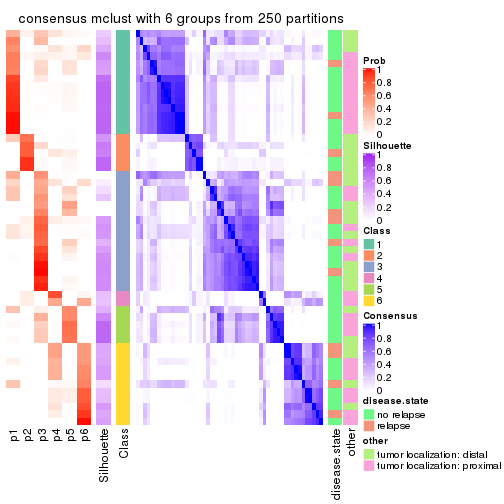
Heatmaps for the membership of samples in all partitions to see how consistent they are:
membership_heatmap(res, k = 2)
membership_heatmap(res, k = 3)
membership_heatmap(res, k = 4)
membership_heatmap(res, k = 5)
membership_heatmap(res, k = 6)
As soon as we have had the classes for columns, we can look for signatures which are significantly different between classes which can be candidate marks for certain classes. Following are the heatmaps for signatures.
Signature heatmaps where rows are scaled:
get_signatures(res, k = 2)
get_signatures(res, k = 3)
get_signatures(res, k = 4)

get_signatures(res, k = 5)
get_signatures(res, k = 6)
Signature heatmaps where rows are not scaled:
get_signatures(res, k = 2, scale_rows = FALSE)
get_signatures(res, k = 3, scale_rows = FALSE)
get_signatures(res, k = 4, scale_rows = FALSE)
get_signatures(res, k = 5, scale_rows = FALSE)
get_signatures(res, k = 6, scale_rows = FALSE)
Compare the overlap of signatures from different k:
compare_signatures(res)
get_signature() returns a data frame invisibly. TO get the list of signatures, the function
call should be assigned to a variable explicitly. In following code, if plot argument is set
to FALSE, no heatmap is plotted while only the differential analysis is performed.
# code only for demonstration
tb = get_signature(res, k = ..., plot = FALSE)
An example of the output of tb is:
#> which_row fdr mean_1 mean_2 scaled_mean_1 scaled_mean_2 km
#> 1 38 0.042760348 8.373488 9.131774 -0.5533452 0.5164555 1
#> 2 40 0.018707592 7.106213 8.469186 -0.6173731 0.5762149 1
#> 3 55 0.019134737 10.221463 11.207825 -0.6159697 0.5749050 1
#> 4 59 0.006059896 5.921854 7.869574 -0.6899429 0.6439467 1
#> 5 60 0.018055526 8.928898 10.211722 -0.6204761 0.5791110 1
#> 6 98 0.009384629 15.714769 14.887706 0.6635654 -0.6193277 2
...
The columns in tb are:
which_row: row indices corresponding to the input matrix.fdr: FDR for the differential test. mean_x: The mean value in group x.scaled_mean_x: The mean value in group x after rows are scaled.km: Row groups if k-means clustering is applied to rows.UMAP plot which shows how samples are separated.
dimension_reduction(res, k = 2, method = "UMAP")
dimension_reduction(res, k = 3, method = "UMAP")
dimension_reduction(res, k = 4, method = "UMAP")
dimension_reduction(res, k = 5, method = "UMAP")
dimension_reduction(res, k = 6, method = "UMAP")

Following heatmap shows how subgroups are split when increasing k:
collect_classes(res)
Test correlation between subgroups and known annotations. If the known annotation is numeric, one-way ANOVA test is applied, and if the known annotation is discrete, chi-squared contingency table test is applied.
test_to_known_factors(res)
#> n disease.state(p) other(p) k
#> ATC:mclust 48 0.724 0.38482 2
#> ATC:mclust 53 0.526 0.03947 3
#> ATC:mclust 24 0.225 0.03924 4
#> ATC:mclust 47 0.960 0.00154 5
#> ATC:mclust 27 0.880 0.00114 6
If matrix rows can be associated to genes, consider to use functional_enrichment(res,
...) to perform function enrichment for the signature genes. See this vignette for more detailed explanations.
The object with results only for a single top-value method and a single partition method can be extracted as:
res = res_list["ATC", "NMF"]
# you can also extract it by
# res = res_list["ATC:NMF"]
A summary of res and all the functions that can be applied to it:
res
#> A 'ConsensusPartition' object with k = 2, 3, 4, 5, 6.
#> On a matrix with 51941 rows and 53 columns.
#> Top rows (1000, 2000, 3000, 4000, 5000) are extracted by 'ATC' method.
#> Subgroups are detected by 'NMF' method.
#> Performed in total 1250 partitions by row resampling.
#> Best k for subgroups seems to be 3.
#>
#> Following methods can be applied to this 'ConsensusPartition' object:
#> [1] "cola_report" "collect_classes" "collect_plots"
#> [4] "collect_stats" "colnames" "compare_signatures"
#> [7] "consensus_heatmap" "dimension_reduction" "functional_enrichment"
#> [10] "get_anno_col" "get_anno" "get_classes"
#> [13] "get_consensus" "get_matrix" "get_membership"
#> [16] "get_param" "get_signatures" "get_stats"
#> [19] "is_best_k" "is_stable_k" "membership_heatmap"
#> [22] "ncol" "nrow" "plot_ecdf"
#> [25] "rownames" "select_partition_number" "show"
#> [28] "suggest_best_k" "test_to_known_factors"
collect_plots() function collects all the plots made from res for all k (number of partitions)
into one single page to provide an easy and fast comparison between different k.
collect_plots(res)

The plots are:
k and the heatmap of
predicted classes for each k.k.k.k.All the plots in panels can be made by individual functions and they are plotted later in this section.
select_partition_number() produces several plots showing different
statistics for choosing “optimized” k. There are following statistics:
k;k, the area increased is defined as \(A_k - A_{k-1}\).The detailed explanations of these statistics can be found in the cola vignette.
Generally speaking, lower PAC score, higher mean silhouette score or higher
concordance corresponds to better partition. Rand index and Jaccard index
measure how similar the current partition is compared to partition with k-1.
If they are too similar, we won't accept k is better than k-1.
select_partition_number(res)
The numeric values for all these statistics can be obtained by get_stats().
get_stats(res)
#> k 1-PAC mean_silhouette concordance area_increased Rand Jaccard
#> 2 2 0.424 0.821 0.876 0.3473 0.688 0.688
#> 3 3 0.372 0.689 0.836 0.6998 0.591 0.451
#> 4 4 0.380 0.648 0.757 0.1603 0.734 0.423
#> 5 5 0.447 0.569 0.743 0.1006 0.852 0.533
#> 6 6 0.562 0.437 0.688 0.0518 0.863 0.523
suggest_best_k() suggests the best \(k\) based on these statistics. The rules are as follows:
suggest_best_k(res)
#> [1] 3
Following shows the table of the partitions (You need to click the show/hide
code output link to see it). The membership matrix (columns with name p*)
is inferred by
clue::cl_consensus()
function with the SE method. Basically the value in the membership matrix
represents the probability to belong to a certain group. The finall class
label for an item is determined with the group with highest probability it
belongs to.
In get_classes() function, the entropy is calculated from the membership
matrix and the silhouette score is calculated from the consensus matrix.
cbind(get_classes(res, k = 2), get_membership(res, k = 2))
#> class entropy silhouette p1 p2
#> GSM452149 1 0.7528 0.711 0.784 0.216
#> GSM452150 2 0.8081 0.803 0.248 0.752
#> GSM452152 2 0.5842 0.871 0.140 0.860
#> GSM452154 1 0.5059 0.840 0.888 0.112
#> GSM452160 1 0.3431 0.865 0.936 0.064
#> GSM452167 1 0.3879 0.854 0.924 0.076
#> GSM452182 1 0.5629 0.821 0.868 0.132
#> GSM452185 1 0.2948 0.867 0.948 0.052
#> GSM452186 2 0.6623 0.862 0.172 0.828
#> GSM452187 1 0.8267 0.631 0.740 0.260
#> GSM452189 1 0.4161 0.859 0.916 0.084
#> GSM452195 2 0.4431 0.865 0.092 0.908
#> GSM452196 2 0.4298 0.728 0.088 0.912
#> GSM452197 1 0.9922 0.237 0.552 0.448
#> GSM452198 1 0.2603 0.868 0.956 0.044
#> GSM452199 2 0.3274 0.849 0.060 0.940
#> GSM452148 1 0.5178 0.838 0.884 0.116
#> GSM452151 1 0.1184 0.869 0.984 0.016
#> GSM452153 1 0.4161 0.859 0.916 0.084
#> GSM452155 2 0.5178 0.870 0.116 0.884
#> GSM452156 2 0.5178 0.870 0.116 0.884
#> GSM452157 1 0.4161 0.859 0.916 0.084
#> GSM452158 1 0.4161 0.859 0.916 0.084
#> GSM452162 1 0.3431 0.865 0.936 0.064
#> GSM452163 1 0.5178 0.838 0.884 0.116
#> GSM452166 1 0.0000 0.868 1.000 0.000
#> GSM452168 1 0.2236 0.864 0.964 0.036
#> GSM452169 1 0.4161 0.859 0.916 0.084
#> GSM452170 1 0.5178 0.838 0.884 0.116
#> GSM452172 1 0.0376 0.869 0.996 0.004
#> GSM452173 1 0.2236 0.864 0.964 0.036
#> GSM452174 1 0.5178 0.838 0.884 0.116
#> GSM452176 1 0.5178 0.838 0.884 0.116
#> GSM452179 1 0.5178 0.838 0.884 0.116
#> GSM452180 1 0.5178 0.838 0.884 0.116
#> GSM452181 2 0.8081 0.803 0.248 0.752
#> GSM452183 1 0.4161 0.859 0.916 0.084
#> GSM452184 1 0.4022 0.861 0.920 0.080
#> GSM452188 1 0.4161 0.859 0.916 0.084
#> GSM452193 1 0.4298 0.857 0.912 0.088
#> GSM452165 1 0.5178 0.838 0.884 0.116
#> GSM452171 1 0.5178 0.838 0.884 0.116
#> GSM452175 1 0.3879 0.854 0.924 0.076
#> GSM452177 1 0.5059 0.840 0.888 0.112
#> GSM452190 1 0.4161 0.859 0.916 0.084
#> GSM452191 1 0.4562 0.852 0.904 0.096
#> GSM452192 1 0.3584 0.857 0.932 0.068
#> GSM452194 1 0.4022 0.861 0.920 0.080
#> GSM452200 1 0.7883 0.735 0.764 0.236
#> GSM452159 1 0.4161 0.859 0.916 0.084
#> GSM452161 1 0.6438 0.785 0.836 0.164
#> GSM452164 2 0.9775 0.464 0.412 0.588
#> GSM452178 1 0.5178 0.838 0.884 0.116
cbind(get_classes(res, k = 3), get_membership(res, k = 3))
#> class entropy silhouette p1 p2 p3
#> GSM452149 1 0.9972 -0.249 0.368 0.328 0.304
#> GSM452150 2 0.6952 0.601 0.376 0.600 0.024
#> GSM452152 1 0.0983 0.774 0.980 0.004 0.016
#> GSM452154 3 0.1964 0.832 0.056 0.000 0.944
#> GSM452160 3 0.4291 0.782 0.180 0.000 0.820
#> GSM452167 3 0.2356 0.830 0.072 0.000 0.928
#> GSM452182 1 0.1860 0.788 0.948 0.000 0.052
#> GSM452185 3 0.4399 0.783 0.188 0.000 0.812
#> GSM452186 2 0.6264 0.603 0.380 0.616 0.004
#> GSM452187 3 0.9118 0.326 0.352 0.152 0.496
#> GSM452189 1 0.0000 0.764 1.000 0.000 0.000
#> GSM452195 2 0.1860 0.736 0.052 0.948 0.000
#> GSM452196 2 0.1964 0.706 0.000 0.944 0.056
#> GSM452197 1 0.7624 0.519 0.672 0.104 0.224
#> GSM452198 3 0.4861 0.771 0.192 0.008 0.800
#> GSM452199 2 0.1163 0.731 0.028 0.972 0.000
#> GSM452148 3 0.2356 0.815 0.072 0.000 0.928
#> GSM452151 1 0.4931 0.700 0.768 0.000 0.232
#> GSM452153 1 0.1753 0.788 0.952 0.000 0.048
#> GSM452155 1 0.4291 0.582 0.820 0.180 0.000
#> GSM452156 1 0.5254 0.411 0.736 0.264 0.000
#> GSM452157 1 0.1860 0.788 0.948 0.000 0.052
#> GSM452158 1 0.1289 0.784 0.968 0.000 0.032
#> GSM452162 1 0.5678 0.542 0.684 0.000 0.316
#> GSM452163 3 0.0747 0.822 0.016 0.000 0.984
#> GSM452166 3 0.3340 0.817 0.120 0.000 0.880
#> GSM452168 1 0.4452 0.727 0.808 0.000 0.192
#> GSM452169 1 0.1860 0.788 0.948 0.000 0.052
#> GSM452170 3 0.1529 0.828 0.040 0.000 0.960
#> GSM452172 1 0.4887 0.703 0.772 0.000 0.228
#> GSM452173 1 0.4062 0.740 0.836 0.000 0.164
#> GSM452174 3 0.1753 0.831 0.048 0.000 0.952
#> GSM452176 3 0.0424 0.808 0.000 0.008 0.992
#> GSM452179 3 0.6095 0.224 0.392 0.000 0.608
#> GSM452180 3 0.4750 0.647 0.216 0.000 0.784
#> GSM452181 2 0.6008 0.650 0.332 0.664 0.004
#> GSM452183 1 0.0237 0.761 0.996 0.004 0.000
#> GSM452184 1 0.3752 0.748 0.884 0.020 0.096
#> GSM452188 1 0.1411 0.782 0.964 0.000 0.036
#> GSM452193 1 0.7104 0.533 0.724 0.136 0.140
#> GSM452165 3 0.1289 0.828 0.032 0.000 0.968
#> GSM452171 3 0.0892 0.823 0.020 0.000 0.980
#> GSM452175 1 0.5905 0.518 0.648 0.000 0.352
#> GSM452177 3 0.1964 0.832 0.056 0.000 0.944
#> GSM452190 3 0.6627 0.572 0.336 0.020 0.644
#> GSM452191 3 0.6224 0.709 0.240 0.032 0.728
#> GSM452192 3 0.5848 0.742 0.080 0.124 0.796
#> GSM452194 3 0.4834 0.761 0.204 0.004 0.792
#> GSM452200 3 0.5016 0.645 0.000 0.240 0.760
#> GSM452159 1 0.1643 0.788 0.956 0.000 0.044
#> GSM452161 1 0.1643 0.788 0.956 0.000 0.044
#> GSM452164 1 0.4963 0.570 0.792 0.200 0.008
#> GSM452178 3 0.0592 0.819 0.012 0.000 0.988
cbind(get_classes(res, k = 4), get_membership(res, k = 4))
#> class entropy silhouette p1 p2 p3 p4
#> GSM452149 3 0.5822 0.76036 0.392 0.028 0.576 0.004
#> GSM452150 3 0.6055 0.75414 0.372 0.052 0.576 0.000
#> GSM452152 1 0.5361 0.58142 0.744 0.148 0.108 0.000
#> GSM452154 4 0.2142 0.75330 0.056 0.000 0.016 0.928
#> GSM452160 3 0.6721 0.77636 0.368 0.012 0.552 0.068
#> GSM452167 3 0.7571 0.61550 0.272 0.000 0.484 0.244
#> GSM452182 1 0.5306 0.69018 0.788 0.052 0.108 0.052
#> GSM452185 3 0.5911 0.77272 0.372 0.000 0.584 0.044
#> GSM452186 3 0.7398 0.63689 0.324 0.184 0.492 0.000
#> GSM452187 3 0.5760 0.77363 0.372 0.028 0.596 0.004
#> GSM452189 1 0.1356 0.78969 0.960 0.008 0.032 0.000
#> GSM452195 2 0.1022 0.67277 0.000 0.968 0.032 0.000
#> GSM452196 2 0.5434 0.56913 0.000 0.740 0.132 0.128
#> GSM452197 4 0.9191 0.00843 0.164 0.292 0.120 0.424
#> GSM452198 3 0.5837 0.72315 0.260 0.000 0.668 0.072
#> GSM452199 2 0.1389 0.67326 0.000 0.952 0.048 0.000
#> GSM452148 4 0.0779 0.74927 0.016 0.000 0.004 0.980
#> GSM452151 1 0.2522 0.77601 0.908 0.000 0.016 0.076
#> GSM452153 1 0.3374 0.77321 0.880 0.028 0.080 0.012
#> GSM452155 2 0.6340 0.48602 0.284 0.620 0.096 0.000
#> GSM452156 2 0.5699 0.38415 0.380 0.588 0.032 0.000
#> GSM452157 1 0.3823 0.74590 0.852 0.028 0.108 0.012
#> GSM452158 1 0.1256 0.79146 0.964 0.000 0.028 0.008
#> GSM452162 1 0.6649 0.35769 0.652 0.012 0.128 0.208
#> GSM452163 4 0.6792 0.16372 0.096 0.000 0.428 0.476
#> GSM452166 3 0.7058 0.72276 0.344 0.000 0.520 0.136
#> GSM452168 1 0.4576 0.56555 0.728 0.000 0.012 0.260
#> GSM452169 1 0.3712 0.77218 0.868 0.028 0.080 0.024
#> GSM452170 4 0.0779 0.75209 0.016 0.000 0.004 0.980
#> GSM452172 1 0.2773 0.76877 0.900 0.000 0.028 0.072
#> GSM452173 4 0.5355 0.46106 0.360 0.000 0.020 0.620
#> GSM452174 4 0.1209 0.75654 0.032 0.000 0.004 0.964
#> GSM452176 4 0.4746 0.44867 0.000 0.000 0.368 0.632
#> GSM452179 4 0.2053 0.73677 0.072 0.000 0.004 0.924
#> GSM452180 4 0.1890 0.74132 0.056 0.000 0.008 0.936
#> GSM452181 2 0.6336 0.36597 0.304 0.608 0.088 0.000
#> GSM452183 1 0.1837 0.79484 0.944 0.028 0.028 0.000
#> GSM452184 1 0.3651 0.67888 0.844 0.008 0.136 0.012
#> GSM452188 1 0.1004 0.79339 0.972 0.000 0.024 0.004
#> GSM452193 3 0.5630 0.74299 0.432 0.016 0.548 0.004
#> GSM452165 4 0.2124 0.74956 0.040 0.000 0.028 0.932
#> GSM452171 4 0.4839 0.64171 0.052 0.000 0.184 0.764
#> GSM452175 4 0.4957 0.56584 0.300 0.000 0.016 0.684
#> GSM452177 4 0.5582 0.60214 0.136 0.000 0.136 0.728
#> GSM452190 3 0.5691 0.75774 0.408 0.000 0.564 0.028
#> GSM452191 3 0.5369 0.77867 0.324 0.004 0.652 0.020
#> GSM452192 3 0.4687 0.53124 0.088 0.008 0.808 0.096
#> GSM452194 3 0.7054 0.77580 0.360 0.024 0.544 0.072
#> GSM452200 3 0.5062 0.17748 0.000 0.024 0.692 0.284
#> GSM452159 1 0.0336 0.80124 0.992 0.000 0.000 0.008
#> GSM452161 1 0.1362 0.79637 0.964 0.004 0.020 0.012
#> GSM452164 1 0.5109 0.55310 0.744 0.196 0.060 0.000
#> GSM452178 4 0.0188 0.74218 0.000 0.000 0.004 0.996
cbind(get_classes(res, k = 5), get_membership(res, k = 5))
#> class entropy silhouette p1 p2 p3 p4 p5
#> GSM452149 3 0.2141 0.60372 0.004 0.016 0.916 0.000 0.064
#> GSM452150 3 0.3745 0.59582 0.036 0.132 0.820 0.000 0.012
#> GSM452152 1 0.5797 0.58594 0.628 0.156 0.212 0.004 0.000
#> GSM452154 4 0.1281 0.81364 0.012 0.000 0.032 0.956 0.000
#> GSM452160 3 0.5846 0.50272 0.012 0.112 0.644 0.228 0.004
#> GSM452167 3 0.5742 -0.13763 0.020 0.000 0.500 0.436 0.044
#> GSM452182 1 0.3099 0.62448 0.848 0.000 0.132 0.008 0.012
#> GSM452185 5 0.4404 0.61879 0.024 0.000 0.292 0.000 0.684
#> GSM452186 3 0.4669 0.44851 0.012 0.272 0.692 0.000 0.024
#> GSM452187 3 0.1857 0.61298 0.004 0.008 0.928 0.000 0.060
#> GSM452189 1 0.4735 0.52848 0.524 0.000 0.460 0.000 0.016
#> GSM452195 2 0.0000 0.71934 0.000 1.000 0.000 0.000 0.000
#> GSM452196 2 0.6513 0.44544 0.028 0.584 0.004 0.128 0.256
#> GSM452197 1 0.6567 0.05334 0.604 0.152 0.004 0.204 0.036
#> GSM452198 5 0.3231 0.79006 0.000 0.000 0.196 0.004 0.800
#> GSM452199 2 0.0290 0.71849 0.000 0.992 0.000 0.000 0.008
#> GSM452148 4 0.0510 0.81320 0.000 0.000 0.000 0.984 0.016
#> GSM452151 3 0.6615 -0.00313 0.324 0.000 0.444 0.232 0.000
#> GSM452153 1 0.3398 0.66364 0.780 0.000 0.216 0.004 0.000
#> GSM452155 2 0.4602 0.61920 0.240 0.708 0.052 0.000 0.000
#> GSM452156 2 0.3992 0.69585 0.080 0.796 0.124 0.000 0.000
#> GSM452157 1 0.2818 0.64477 0.856 0.000 0.132 0.012 0.000
#> GSM452158 3 0.3327 0.50737 0.144 0.000 0.828 0.028 0.000
#> GSM452162 3 0.3857 0.59693 0.036 0.004 0.820 0.128 0.012
#> GSM452163 4 0.6726 0.35129 0.004 0.000 0.256 0.464 0.276
#> GSM452166 4 0.6148 0.09638 0.036 0.000 0.452 0.460 0.052
#> GSM452168 1 0.6274 0.30709 0.548 0.000 0.172 0.276 0.004
#> GSM452169 1 0.3318 0.66086 0.808 0.000 0.180 0.012 0.000
#> GSM452170 4 0.0566 0.81507 0.012 0.000 0.004 0.984 0.000
#> GSM452172 1 0.5815 0.52562 0.588 0.000 0.300 0.108 0.004
#> GSM452173 4 0.5664 0.51156 0.168 0.000 0.200 0.632 0.000
#> GSM452174 4 0.0451 0.81533 0.000 0.000 0.004 0.988 0.008
#> GSM452176 4 0.4455 0.67366 0.008 0.000 0.036 0.736 0.220
#> GSM452179 4 0.0960 0.81226 0.016 0.000 0.004 0.972 0.008
#> GSM452180 4 0.0898 0.80992 0.008 0.000 0.000 0.972 0.020
#> GSM452181 2 0.4421 0.52574 0.016 0.704 0.272 0.004 0.004
#> GSM452183 1 0.4769 0.59212 0.588 0.000 0.392 0.004 0.016
#> GSM452184 1 0.6330 0.48068 0.472 0.000 0.364 0.000 0.164
#> GSM452188 1 0.4410 0.56888 0.556 0.000 0.440 0.000 0.004
#> GSM452193 3 0.5068 0.16475 0.044 0.000 0.592 0.000 0.364
#> GSM452165 4 0.2304 0.80366 0.004 0.000 0.068 0.908 0.020
#> GSM452171 4 0.4089 0.72863 0.016 0.000 0.180 0.780 0.024
#> GSM452175 4 0.3255 0.74958 0.100 0.000 0.052 0.848 0.000
#> GSM452177 4 0.3759 0.69088 0.016 0.000 0.220 0.764 0.000
#> GSM452190 3 0.3087 0.57150 0.012 0.004 0.852 0.004 0.128
#> GSM452191 3 0.3835 0.42148 0.012 0.000 0.744 0.000 0.244
#> GSM452192 5 0.2966 0.78925 0.000 0.000 0.136 0.016 0.848
#> GSM452194 3 0.7370 0.52372 0.044 0.144 0.604 0.128 0.080
#> GSM452200 5 0.1106 0.66776 0.000 0.024 0.000 0.012 0.964
#> GSM452159 1 0.4390 0.55254 0.568 0.000 0.428 0.004 0.000
#> GSM452161 3 0.4375 0.55675 0.120 0.016 0.788 0.076 0.000
#> GSM452164 3 0.5633 0.50817 0.084 0.228 0.664 0.024 0.000
#> GSM452178 4 0.0510 0.81320 0.000 0.000 0.000 0.984 0.016
cbind(get_classes(res, k = 6), get_membership(res, k = 6))
#> class entropy silhouette p1 p2 p3 p4 p5 p6
#> GSM452149 2 0.4559 0.6174 0.024 0.752 0.000 0.028 0.036 0.160
#> GSM452150 2 0.5802 0.5476 0.072 0.644 0.000 0.008 0.088 0.188
#> GSM452152 1 0.5033 0.2839 0.704 0.072 0.000 0.000 0.164 0.060
#> GSM452154 3 0.1757 0.7104 0.008 0.000 0.916 0.000 0.000 0.076
#> GSM452160 3 0.8296 -0.2587 0.052 0.208 0.364 0.004 0.144 0.228
#> GSM452167 3 0.5681 0.4993 0.024 0.088 0.644 0.028 0.000 0.216
#> GSM452182 1 0.5955 0.0707 0.436 0.332 0.000 0.000 0.000 0.232
#> GSM452185 4 0.4015 0.3032 0.012 0.372 0.000 0.616 0.000 0.000
#> GSM452186 2 0.3348 0.5907 0.020 0.812 0.000 0.000 0.152 0.016
#> GSM452187 2 0.6775 0.4411 0.052 0.536 0.008 0.140 0.016 0.248
#> GSM452189 2 0.2468 0.6447 0.096 0.880 0.000 0.008 0.000 0.016
#> GSM452195 5 0.0146 0.5549 0.004 0.000 0.000 0.000 0.996 0.000
#> GSM452196 5 0.6003 0.2828 0.004 0.004 0.020 0.104 0.488 0.380
#> GSM452197 6 0.5787 -0.2021 0.400 0.000 0.068 0.000 0.044 0.488
#> GSM452198 4 0.2556 0.7499 0.028 0.076 0.000 0.884 0.000 0.012
#> GSM452199 5 0.0603 0.5528 0.000 0.000 0.000 0.016 0.980 0.004
#> GSM452148 3 0.2915 0.6606 0.000 0.008 0.808 0.000 0.000 0.184
#> GSM452151 1 0.6607 0.1211 0.400 0.020 0.288 0.004 0.000 0.288
#> GSM452153 1 0.1563 0.4115 0.932 0.056 0.000 0.000 0.000 0.012
#> GSM452155 5 0.4676 0.2562 0.436 0.008 0.000 0.000 0.528 0.028
#> GSM452156 5 0.5212 0.4442 0.220 0.036 0.000 0.004 0.668 0.072
#> GSM452157 1 0.1332 0.4065 0.952 0.028 0.012 0.000 0.000 0.008
#> GSM452158 2 0.6255 0.3579 0.240 0.512 0.020 0.000 0.004 0.224
#> GSM452162 2 0.1679 0.6507 0.028 0.936 0.008 0.000 0.000 0.028
#> GSM452163 3 0.6506 0.4411 0.016 0.148 0.588 0.164 0.000 0.084
#> GSM452166 3 0.6403 0.1329 0.136 0.020 0.480 0.020 0.000 0.344
#> GSM452168 1 0.7491 -0.0138 0.340 0.192 0.304 0.000 0.000 0.164
#> GSM452169 1 0.1926 0.4180 0.912 0.068 0.020 0.000 0.000 0.000
#> GSM452170 3 0.1003 0.7199 0.004 0.004 0.964 0.000 0.000 0.028
#> GSM452172 1 0.6061 0.2770 0.568 0.028 0.216 0.004 0.000 0.184
#> GSM452173 3 0.4985 0.5598 0.092 0.120 0.720 0.000 0.000 0.068
#> GSM452174 3 0.2979 0.7010 0.000 0.044 0.840 0.000 0.000 0.116
#> GSM452176 3 0.3512 0.6757 0.000 0.012 0.808 0.140 0.000 0.040
#> GSM452179 3 0.2178 0.6940 0.000 0.000 0.868 0.000 0.000 0.132
#> GSM452180 3 0.2772 0.6641 0.000 0.004 0.816 0.000 0.000 0.180
#> GSM452181 5 0.4970 -0.0391 0.036 0.436 0.000 0.000 0.512 0.016
#> GSM452183 2 0.3466 0.6107 0.096 0.816 0.000 0.004 0.000 0.084
#> GSM452184 2 0.4562 0.5693 0.112 0.748 0.000 0.036 0.000 0.104
#> GSM452188 1 0.5005 0.0323 0.540 0.404 0.000 0.020 0.000 0.036
#> GSM452193 2 0.7507 0.2267 0.204 0.364 0.000 0.260 0.000 0.172
#> GSM452165 3 0.3236 0.6813 0.004 0.016 0.824 0.012 0.000 0.144
#> GSM452171 3 0.2611 0.6937 0.008 0.012 0.864 0.000 0.000 0.116
#> GSM452175 3 0.2271 0.7150 0.024 0.032 0.908 0.000 0.000 0.036
#> GSM452177 3 0.2333 0.6954 0.004 0.004 0.872 0.000 0.000 0.120
#> GSM452190 2 0.1862 0.6622 0.024 0.932 0.004 0.020 0.000 0.020
#> GSM452191 2 0.1511 0.6597 0.012 0.940 0.000 0.044 0.000 0.004
#> GSM452192 4 0.1542 0.7590 0.008 0.052 0.000 0.936 0.004 0.000
#> GSM452194 6 0.9341 -0.1355 0.064 0.208 0.260 0.100 0.108 0.260
#> GSM452200 4 0.0436 0.7099 0.000 0.004 0.000 0.988 0.004 0.004
#> GSM452159 2 0.4312 0.1291 0.456 0.528 0.000 0.008 0.000 0.008
#> GSM452161 1 0.7616 0.0747 0.360 0.100 0.204 0.000 0.020 0.316
#> GSM452164 2 0.6269 0.4396 0.128 0.568 0.004 0.000 0.236 0.064
#> GSM452178 3 0.1588 0.7151 0.000 0.000 0.924 0.004 0.000 0.072
Heatmaps for the consensus matrix. It visualizes the probability of two samples to be in a same group.
consensus_heatmap(res, k = 2)
consensus_heatmap(res, k = 3)
consensus_heatmap(res, k = 4)

consensus_heatmap(res, k = 5)
consensus_heatmap(res, k = 6)
Heatmaps for the membership of samples in all partitions to see how consistent they are:
membership_heatmap(res, k = 2)
membership_heatmap(res, k = 3)
membership_heatmap(res, k = 4)
membership_heatmap(res, k = 5)
membership_heatmap(res, k = 6)
As soon as we have had the classes for columns, we can look for signatures which are significantly different between classes which can be candidate marks for certain classes. Following are the heatmaps for signatures.
Signature heatmaps where rows are scaled:
get_signatures(res, k = 2)
get_signatures(res, k = 3)
get_signatures(res, k = 4)
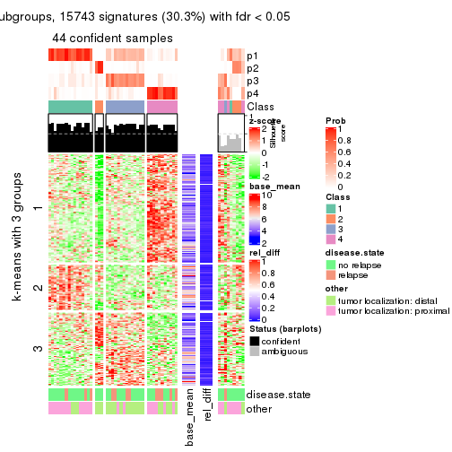
get_signatures(res, k = 5)
get_signatures(res, k = 6)
Signature heatmaps where rows are not scaled:
get_signatures(res, k = 2, scale_rows = FALSE)
get_signatures(res, k = 3, scale_rows = FALSE)
get_signatures(res, k = 4, scale_rows = FALSE)
get_signatures(res, k = 5, scale_rows = FALSE)
get_signatures(res, k = 6, scale_rows = FALSE)
Compare the overlap of signatures from different k:
compare_signatures(res)
get_signature() returns a data frame invisibly. TO get the list of signatures, the function
call should be assigned to a variable explicitly. In following code, if plot argument is set
to FALSE, no heatmap is plotted while only the differential analysis is performed.
# code only for demonstration
tb = get_signature(res, k = ..., plot = FALSE)
An example of the output of tb is:
#> which_row fdr mean_1 mean_2 scaled_mean_1 scaled_mean_2 km
#> 1 38 0.042760348 8.373488 9.131774 -0.5533452 0.5164555 1
#> 2 40 0.018707592 7.106213 8.469186 -0.6173731 0.5762149 1
#> 3 55 0.019134737 10.221463 11.207825 -0.6159697 0.5749050 1
#> 4 59 0.006059896 5.921854 7.869574 -0.6899429 0.6439467 1
#> 5 60 0.018055526 8.928898 10.211722 -0.6204761 0.5791110 1
#> 6 98 0.009384629 15.714769 14.887706 0.6635654 -0.6193277 2
...
The columns in tb are:
which_row: row indices corresponding to the input matrix.fdr: FDR for the differential test. mean_x: The mean value in group x.scaled_mean_x: The mean value in group x after rows are scaled.km: Row groups if k-means clustering is applied to rows.UMAP plot which shows how samples are separated.
dimension_reduction(res, k = 2, method = "UMAP")
dimension_reduction(res, k = 3, method = "UMAP")
dimension_reduction(res, k = 4, method = "UMAP")
dimension_reduction(res, k = 5, method = "UMAP")
dimension_reduction(res, k = 6, method = "UMAP")
Following heatmap shows how subgroups are split when increasing k:
collect_classes(res)
Test correlation between subgroups and known annotations. If the known annotation is numeric, one-way ANOVA test is applied, and if the known annotation is discrete, chi-squared contingency table test is applied.
test_to_known_factors(res)
#> n disease.state(p) other(p) k
#> ATC:NMF 51 0.1613 0.352007 2
#> ATC:NMF 49 0.0543 0.005924 3
#> ATC:NMF 44 0.3135 0.000927 4
#> ATC:NMF 42 0.2104 0.146134 5
#> ATC:NMF 27 0.3685 0.113022 6
If matrix rows can be associated to genes, consider to use functional_enrichment(res,
...) to perform function enrichment for the signature genes. See this vignette for more detailed explanations.
sessionInfo()
#> R version 3.6.0 (2019-04-26)
#> Platform: x86_64-pc-linux-gnu (64-bit)
#> Running under: CentOS Linux 7 (Core)
#>
#> Matrix products: default
#> BLAS: /usr/lib64/libblas.so.3.4.2
#> LAPACK: /usr/lib64/liblapack.so.3.4.2
#>
#> locale:
#> [1] LC_CTYPE=en_GB.UTF-8 LC_NUMERIC=C LC_TIME=en_GB.UTF-8
#> [4] LC_COLLATE=en_GB.UTF-8 LC_MONETARY=en_GB.UTF-8 LC_MESSAGES=en_GB.UTF-8
#> [7] LC_PAPER=en_GB.UTF-8 LC_NAME=C LC_ADDRESS=C
#> [10] LC_TELEPHONE=C LC_MEASUREMENT=en_GB.UTF-8 LC_IDENTIFICATION=C
#>
#> attached base packages:
#> [1] grid stats graphics grDevices utils datasets methods base
#>
#> other attached packages:
#> [1] genefilter_1.66.0 ComplexHeatmap_2.3.1 markdown_1.1 knitr_1.26
#> [5] GetoptLong_0.1.7 cola_1.3.2
#>
#> loaded via a namespace (and not attached):
#> [1] circlize_0.4.8 shape_1.4.4 xfun_0.11 slam_0.1-46
#> [5] lattice_0.20-38 splines_3.6.0 colorspace_1.4-1 vctrs_0.2.0
#> [9] stats4_3.6.0 blob_1.2.0 XML_3.98-1.20 survival_2.44-1.1
#> [13] rlang_0.4.2 pillar_1.4.2 DBI_1.0.0 BiocGenerics_0.30.0
#> [17] bit64_0.9-7 RColorBrewer_1.1-2 matrixStats_0.55.0 stringr_1.4.0
#> [21] GlobalOptions_0.1.1 evaluate_0.14 memoise_1.1.0 Biobase_2.44.0
#> [25] IRanges_2.18.3 parallel_3.6.0 AnnotationDbi_1.46.1 highr_0.8
#> [29] Rcpp_1.0.3 xtable_1.8-4 backports_1.1.5 S4Vectors_0.22.1
#> [33] annotate_1.62.0 skmeans_0.2-11 bit_1.1-14 microbenchmark_1.4-7
#> [37] brew_1.0-6 impute_1.58.0 rjson_0.2.20 png_0.1-7
#> [41] digest_0.6.23 stringi_1.4.3 polyclip_1.10-0 clue_0.3-57
#> [45] tools_3.6.0 bitops_1.0-6 magrittr_1.5 eulerr_6.0.0
#> [49] RCurl_1.95-4.12 RSQLite_2.1.4 tibble_2.1.3 cluster_2.1.0
#> [53] crayon_1.3.4 pkgconfig_2.0.3 zeallot_0.1.0 Matrix_1.2-17
#> [57] xml2_1.2.2 httr_1.4.1 R6_2.4.1 mclust_5.4.5
#> [61] compiler_3.6.0